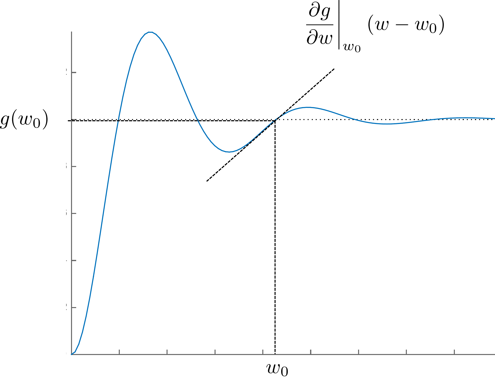
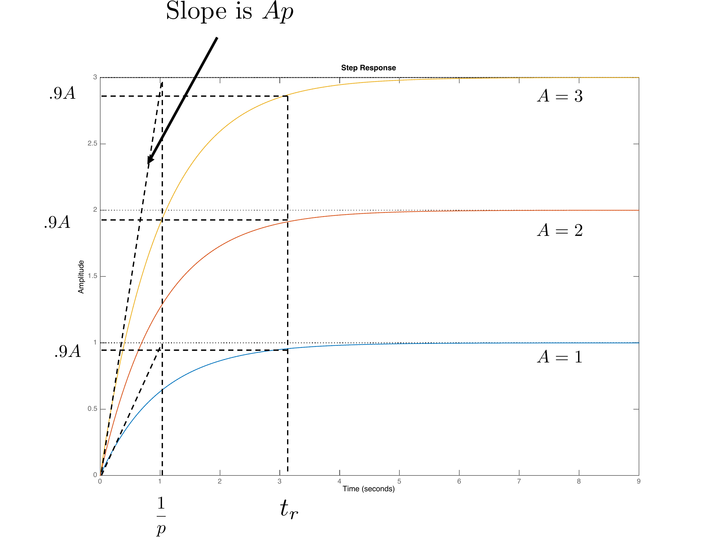

Q1. Effect of ωn
If ζ is fixed and ωn increases, what happens to rise time?
Show solution
Answer: B. Larger ωn usually yields a faster response and shorter rise time.


Randal W. Beard
with
Timothy W. McLain
Cammy
Peterson
Marc Killpack
Revised: August 2025
© 2016 Randal W. Beard
All rights reserved.
This work may not be distributed and/or modified without written consent of the authors.
Does the world really need another introductory textbook on feedback control? For many years we have felt that the many quality textbooks that currently exist are more than sufficient. However, several years ago the first author (RWB) had an experience that changed my mind, and the minds of my colleagues. I had just finished teaching the introductory feedback control course at BYU. I had a need for a new master’s student in my research group and hired one of the top students in the class. We had designed a gimbal system for a small unmanned air vehicle, and we needed a control system implemented on a microcontroller for the gimbal. I tasked this new master’s student to model the gimbal and design the control system. I was surprised by how much the student struggled with this task, especially understanding where to begin and how to model the gimbal. If I had given him a transfer function and asked him to design a PID controller, or if I had given him a state space model and asked him to design an observer and controller for the system, he would not have had any difficulty. But he did not know how to do an end-to-end design that required developing models for the system, including physical constraints. It was this experience that convinced me that my current approach to teaching feedback control was inadequate.
The next time that I taught the course, rather than focusing on the theory of feedback design, I focused the lectures on the end-to-end design process. Accordingly, I spent significantly more time talking about the modeling process, adding several lectures on the Euler-Lagrange method. I also added several lectures on linearization about set points, and on developing linear models. When I taught feedback design methods, I focused on design specifications and the need to account for saturation, sensor noise, model uncertainty, and external disturbances on the system. Over the next several years, we developed several complete design studies and then used these design studies throughout the course to illustrate the material. That course reorganization and the realization that existing textbooks on feedback control did not fit the pedagogy were the genesis of this textbook.
Therefore, this textbook is unique in several ways. Most importantly, it is focused, in its organization, in its examples, and in its homework problems, on a particular, but fairly general, end-to-end design strategy and methodology. Topics were included in the book only if they aided in the design process. For example, the book does not include a chapter on the root locus (although it is discussed in an appendix). The second unique feature is that the examples and homework problems follow a small set of design studies throughout the book. The text provides complete worked examples for three design studies: a single link robot arm, a pendulum on a cart, and a satellite attitude control problem. The homework problems parallel the examples with three additional design studies: a mass-spring-damper, a block sliding on a beam, and a planar vertical take-off and landing aircraft, similar to a quadrotor. A third unique feature of the book is that complete solutions to the three example design studies are provided in Matlab/Simulink and Python at http://controlbook.byu.edu.
The design methodology culminates in computer code that implements the controllers. In the examples provided in the book, the computer code interacts with a simulation model of the plant composed of coupled nonlinear differential equations, rather than the physical plant. However, the example computer code is written in a way that can be directly implemented on a microcontroller, or other computing devices. We have used Matlab/Simulink because many students are already familiar with these tools. But we also provide Python examples because Python is free of charge and therefore accessible to everyone, and because for many applications, Python can be used to implement the controller in hardware.
One criticism of the book might be that all of the design problems are mechanical systems, and that they are fairly similar to each other. The student may come away with the impression that feedback control and the design methods discussed in the book are only applicable to mechanical systems. Of course this is not true. The tools taught in the book are widely used in many applications including electrical power systems, disk drives, aerospace systems, chemical processing, biological systems, queueing systems, and many more. Although this book is focused on mechanical systems, we believe that the student who masters the material will be able to easily transition to other application domains. Mechanical systems, like those covered in this book, have a compelling pedagogical advantage because the control objectives are intuitive, and the behavior of the system can be easily visualized. Therefore, we feel that they offer the best setting for developing intuition behind feedback design.
We had two other motivations for writing this textbook. The first is the exorbitant prices currently being charged for textbooks. Accordingly, we are providing an electronic version of this book to students free of charge at http://controlbook.byu.edu. The book has required significant time and energy to develop, and so we hope that “free” does not equate to “low quality.” An Amazon version of the book is also available for those desiring a hard copy. Given the amount of high quality open source software, students may get the wrong impression about monetary compensation for technical work. Good work should be compensated. However, since our day jobs provide adequate financial remuneration, we ask to be compensated by your feedback about your educational experience with the book, including typos and other errors. This will allow us to update and improve the book. We also hope that you will understand that we will probably not be very responsive to email asking for help with the homework problems. Another motivation for writing the book is our observation that this generation of students seems to prefer to learn using electronic resources. The book has therefore been written with the assumption that it will be studied electronically. Therefore, hyperlinks and other electronic aids are embedded throughout the text. We hope that these enhance the educational experience.
The objective of this book is to prepare the reader to design feedback control systems for dynamic systems and to lay the groundwork for further studies in the area. The design philosophy that we follow throughout the book is illustrated schematically in Fig. 1.1. The objective is to design a control system for the “Physical System” shown in Fig. 1.1. The physical system includes actuators like motors and propellers, and sensors like accelerometers, gyros, GPS, cameras, and pressure sensors. The first step in the design process is to model the physical system using nonlinear differential equations. While approximations and simplifications will be necessary at this step, the hope is to capture, in mathematics, all of the important characteristics of the physical system. While there are many different methods for developing the equations of motion of the physical systems, in this book we will introduce one specific method, the Euler-Lagrange method, that is applicable to a wide variety of mechanical systems. We will, for the most part, abstract the actuators to applied forces and torques on the system. Similarly, the sensors will be abstracted to general measurements of certain physical quantities like position and velocity. The resulting model is called the Simulation Model as shown in Fig. 1.1. In the design process, the simulation model is used for the high fidelity computer simulation of the physical system. Every control design will be tested thoroughly on the simulation model. However, the simulation model is only a mathematical approximation of the physical system, and simply because a design is effective on the simulation model, we should not assume that it will function properly on the physical system. Part I of the book introduces the Euler-Lagrange method and demonstrates how to derive simulation models for mechanical systems using this method.

The simulation model is typically nonlinear and high order and is too mathematically complex to be useful for control design. Therefore, to facilitate design, the simulation model is simplified and usually linearized to create lower-order design models.For any physical system, there may be multiple design models that capture certain aspects of the system that are important for a particular design. In this book we will introduce the two most common design models used for control systems analysis and design: transfer-function models and state-space models. In both cases we will linearize the system about a particular operating condition. The advantage of transfer function models is that they capture the frequency dependence of the input-output relationship in dynamic systems. The advantage of state space models is that they are more intuitive and are better adapted to numerical implementation. Part II of the book shows how to linearize the equations of motion and how to create transfer function and state space design models.
The next three parts, Part III–V, introduce three different control design methods. Part III shows how to design Proportional-Integral-Derivative (PID) controllers for second-order systems. The PID method is the most common control technique used in industry. It can be understood from both a time-domain and frequency-domain perspective. The advantage of PID is its simplicity in design and implementation and the fact that it can be used to achieve high performance for a surprising variety of systems. However, the disadvantage of PID control is that stability and performance can typically only be guaranteed for second-order systems. Therefore, Part III is focused exclusively on second-order systems.
In Part IV we introduce the observer-based control method. Observer based methods can be thought of as a natural extension of PID controllers to high order systems. However, observer based methods are much more general than PID and can be used to obtain higher performance. In addition, most observer based techniques extend to nonlinear and time-varying systems. The disadvantages of observer-based methods are that they require a higher level of mathematical sophistication to understand and use and they are primarily time-domain methods.
The final design technique, which is covered in Part V, is the loop shaping control design method. The loop shaping method is a frequency domain technique that explicitly addresses robustness of the system. The loop shaping method is also a natural extension of PID control to higher order systems. One of the advantages of loop shaping techniques is that they can be used when only a frequency response model of the system is available.
The book is organized around several design studies. For each new concept that is introduced, we will apply that concept to three specific design problems. The design problems are introduced in the following three sections and include a single link robot arm, a pendulum on a cart, and a simple satellite attitude control problem. The homework problems, which are provided in Part VI, will follow the same format with problems that are identical to those worked in the book, but they will be applied to different physical systems. Our hope is to illustrate the control design process with specific, easy-to-understand problems. We note, however, that the concepts introduced in this book are applicable to a much wider variety of problems than those illustrated in the book. We focus on mechanical systems, but a similar process (with the exception of the modeling section) can be followed for any system that can be modeled using ordinary differential equations. Examples include aerodynamic systems, electrical systems, chemical processes, large structures like buildings and bridges, biological feedback systems, economic systems, queuing systems, and many more.

Figure 1.2 shows a single link robot arm system. The robot arm has mass \(m\) and length \(\ell\). The angle of the robot is given by \(\theta\) as measured from horizontal to the ground. The angular speed of the arm is \(\dot{\theta}\). There is an applied torque \(\tau\) at the joint. There is also a damping (or viscous friction) torque that opposes the rotation of the joint and which can be modeled as \(-b\dot{\theta}\).
The actual physical parameters of the system are \(m=0.5\) kg, \(\ell=0.3\) m, \(g=9.8\) m/s\(^2\), \(b=0.01\) Nms. The torque is limited by \(\left|\tau\right|\leq 1\) Nm.
2
A.2 Kinetic energy.
A.3 Equations of motion.
A.4 Linearize equations of motion.
A.5 Transfer function model.
A.6 State space model.
A.7 Pole placement using PD.
A.8 Second-order design.
A.9 Integrators and system type.
A.P.6 Root locus.
A.10 Digital PID.
A.11 Full state feedback.
A.12 Full state with integrator.
A.13 Observer based control.
A.14 Disturbance observer.
A.15 Frequency response.
A.16 Loop gain.
A.17 Stability margins.
A.18 Loopshaping design.
Note: The notation identifies the design configuration and the chapter in which it is used: Example A.4 refers to the application of approximations in Chapter 4 to linearize design configuration A. Similarly, Example A.P.6 refers to the root locus assignment associated with Appendix A.P.6.

Figure 1.3 shows the pendulum on a cart system, also called an inverted pendulum. The position of the cart measured from the origin is \(z\) and the linear speed of the cart is \(\dot{z}\). The angle of the pendulum from straight up is given by \(\theta\), and the angular velocity is \(\dot{\theta}\). The rod is of length \(\ell\), and has mass \(m_1\), and is approximated as being infinitely thin. The cart has mass \(m_2\). Gravity acts in the down direction. The only applied force is \(F\), which acts in the direction of \(z\). The cart slides on a frictionless surface, but air friction produces a damping force equal to \(-b\dot{z}\).
The physical constants are \(m_1=0.25\) kg, \(m_2=1.0\) kg, \(\ell=1.0\) m, \(g=9.8\) m/s\(^2\), \(b=0.05\) Ns. The force is limited by \(\left|F\right|\leq 5\) N.
2
B.2 Kinetic energy.
B.3 Equations of Motion.
B.4 Linearize equations of motion.
B.5 Transfer function model.
B.6 State space model.
B.8 Successive loop closure.
B.9 Integrators and system type.
B.P.6 Root locus.
B.10 Digital PID.
B.11 Full state feedback.
B.12 Full state with integrator.
B.13 Observer based control.
B.14 Disturbance observer.
B.15 Frequency Response.
B.16 Loop gain.
B.17 Stability margins.
B.18 Loopshaping design.

Figure 1.4 shows a simplified version of a satellite with flexible solar panels. We will model the flexible panels using a rigid sheet with moment of inertia \(J_p\) connected to the main satellite body by a torsional compliant element with spring constant \(k\) and damping constant \(b\). The moment of inertia of the satellite is \(J_s\). The angle of the satellite body from the inertial reference is \(\theta\) and the angle of the panel from the inertial reference is denoted as \(\phi\). Thrusters are used to command an external torque of \(\tau\) about the axis of the satellite body.
The physical constants are \(J_s=5\) kg m\(^2\), \(J_p=1\) kg m\(^2\), \(k=0.1\) N m, \(b=0.05\) Nms. The torque is limited by \(\left|\tau\right|\leq 5\) Nm.
2
C.2 Kinetic energy.
C.3 Equations of motion.
C.4 Equilibria.
C.5 Transfer function model.
C.6 State space model.
C.8 Successive loop closure.
C.9 Integrators and system type.
C.P.6 Root locus.
C.10 Digital PID.
C.11 Full state feedback.
C.12 Full state with integrator.
C.13 Observer based control.
C.14 Disturbance observer.
C.15 Frequency Response.
C.16 Loop gain.
C.17 Stability margins.
C.18 Loopshaping design.
Part
Simulation Models
To design efficient feedback control systems, we use mathematical models to understand the system, and then we design controllers that achieve the desired specifications. Developing suitable mathematical models is problem specific and can be very complicated requiring specialized knowledge. However, there are some well known techniques for certain classes of systems. This book only covers one general technique that is useful for a large class of rigid body mechanical systems. The technique is known as the Euler-Lagrange method and requires a mathematical description of the kinetic and potential energy of the system, given its (generalized) position and velocity. The theory behind Euler-Lagrange method is deep and well beyond the scope of this book. However, we will give a brief introduction that will enable the reader to apply Euler-Lagrange methods to a surprisingly large class of problems.
As motivation for the Euler-Lagrange equations, consider a particle of mass \(m\) in a gravity field, as shown in Fig. 1.5, where \(g\) is the force of gravity at sea level, \(f_a\) is an externally applied force, and the friction due to air resistance is modeled by a gain \(b\) times the velocity \(\dot{y}\).

Since all of the forces are in the vertical direction, the motion of the vehicle can be completely described by the vertical position of particle \(y(t)\). From Newton’s law, the equations of motion are \[\label{eq:sim_particle_1} m\ddot{y} = f_a-mg-b\dot{y},\] where dots over the variable will be used throughout the book to denote differentiation with respect to time, i.e., \(\dot{y}\stackrel{\triangle}{=}\frac{dy}{dt}\) and \(\ddot{y}\stackrel{\triangle}{=}\frac{d^2y}{dt^2}\). Rearranging 1.1 gives \[\label{eq:sim_particle_2} m\ddot{y} + mg = f_a -b\dot{y}.\] The kinetic energy for the particle is given by \(K(\dot{y})=\frac{1}{2}mv^2=\frac{1}{2}m\dot{y}^2\). The potential energy, which is induced by gravitational pull proportional to the distance from the center of the earth, is given by \(P(y)=P_0+mgy\), where \(P_0\) is the potential energy of the particle when \(y=0\). Note that if the velocity \(\dot{y}\) is thought of as independent of \(y\), then \[\frac{\partial K(\dot{y})}{\partial \dot{y}} = m\dot{y}\] and \[\frac{d}{dt}\left(\frac{\partial K(\dot{y})}{\partial \dot{y}}\right) = m\ddot{y}.\] Also note that \[\frac{\partial P(y)}{\partial y} = mg.\] Therefore, Equation 1.2 can be written as \[\label{eq:sim_model_euler_lagrange_1} \frac{d}{dt}\left(\frac{\partial K(\dot{y})}{\partial \dot{y}}\right) + \frac{\partial P(y)}{\partial y} = f_a-b\dot{y}.\] Equation 1.3 is a particular form of the so-called Euler-Lagrange equation. The generalization to a more complicated system takes the form \[\label{eq:sim_model_euler_lagrange_2} \frac{d}{dt}\left(\frac{\partial K(y,\dot{y})}{\partial \dot{y}}-\frac{\partial P(y)}{\partial \dot{y}}\right) - \left(\frac{\partial K(y,\dot{y})}{\partial y} - \frac{\partial P(y)}{\partial y}\right) = f_a-b\dot{y},\] which reduces to Equation 1.3 for our particular case since \(K\) is only a function of \(\dot{y}\). To simplify the notation, we define the so-called Lagrangian as \[L(y,\dot{y})\stackrel{\triangle}{=}K(y,\dot{y})-P(y),\] and write Equation 1.4 as \[\label{eq:sim_model_euler_lagrange_3} \frac{d}{dt}\left(\frac{\partial L(y,\dot{y})}{\partial \dot{y}}\right) - \left(\frac{\partial L(y,\dot{y})}{\partial y}\right) = f_a-b\dot{y}.\] The position of the system can be generalized to both positions and angles, and the velocity can be generalized to both linear and angular velocities. Throughout the book we will use the notation \(\mathbf{q} = (q_1, q_2, \dots, q_n)^\top\) to denote the general configuration of the mechanical system that we are modeling. The vector \(\mathbf{q}\) is called the generalized coordinates. The kinetic energy of the system is generally a function of both the generalized coordinates \(\mathbf{q}\) and the generalized velocity \(\dot{\mathbf{q}}\). Therefore, we denote the kinetic energy as \(K(\mathbf{q},\dot{\mathbf{q}})\). On the other hand, in this book we will only consider potential fields that are conservative, and that only depend on the configuration variable \(\mathbf{q}\). Under these assumptions, the general form of the Euler-Lagrange equations is given by \[\begin{aligned} \frac{d}{dt}\left(\frac{\partial L(\mathbf{q},\dot{\mathbf{q}})}{\partial \dot{q}_1}\right) - \frac{\partial L(\mathbf{q},\dot{\mathbf{q}})}{\partial q_1} &= \tau_1-b_{11} \dot{q}_1 - \cdots - b_{1n}\dot{q}_n \notag \\ \frac{d}{dt}\left(\frac{\partial L(\mathbf{q},\dot{\mathbf{q}})}{\partial \dot{q}_2}\right) - \frac{\partial L(\mathbf{q},\dot{\mathbf{q}})}{\partial q_2} &= \tau_2-b_{21} \dot{q}_1 - \cdots - b_{2n}\dot{q}_n \label{eq:sim_model_euler_lagrange} \\ \vdots \\ \frac{d}{dt}\left(\frac{\partial L(\mathbf{q},\dot{\mathbf{q}})}{\partial \dot{q}_n}\right) - \frac{\partial L(\mathbf{q},\dot{\mathbf{q}})}{\partial q_n} &= \tau_n-b_{n1} \dot{q}_1 - \cdots - b_{nn}\dot{q}_n, \notag \end{aligned}\] where \(\tau_i\) are the generalized forces and torques that are applied to the system. Or in vector form we can write \[\label{eq:sim_model_euler_lagrange-vector} \frac{d}{dt}\left(\frac{\partial L(\mathbf{q},\dot{\mathbf{q}})}{\partial \dot{\mathbf{q}}}\right) - \frac{\partial L(\mathbf{q},\dot{\mathbf{q}})}{\partial \mathbf{q}} = \boldsymbol{\tau} -B \dot{\mathbf{q}},\] where \(B\) is a matrix with positive elements and \(\boldsymbol{\tau}=(\tau_1,\dots,\tau_n)^\top\) are the generalized forces. The Euler-Lagrange equation will be discussed in more detail in Chapter 3. However, before showing how to use Equation 1.8 to derive the equations of motion for practical systems, we need to show how to compute the kinetic and potential energy for general (holonomic) rigid body systems.
Consider a point mass with mass \(m\), traveling at velocity \(\mathbf{v}\), as shown in Fig. 2.1. If the velocity is resolved with respect to a coordinate axis, then \(\mathbf{v}=(v_x, v_y, v_z)^\top\). The kinetic energy of the point mass is given by \[\begin{aligned} K &= \frac{1}{2} m \left\|\mathbf{v}\right\|^2 \\ &= \frac{1}{2} m \mathbf{v}^\top \mathbf{v} \\ & = \frac{1}{2} m (v_x^2 + v_y^2 + v_z^2). \end{aligned}\]

Now consider two point masses as shown in Fig. 2.2.

The total kinetic energy of the system is given by summing the kinetic energy of each of the point masses as \[\label{eq:kinetic_energy_two_masses} K = \frac{1}{2} m_1 \mathbf{v}_1^\top \mathbf{v}_1 + \frac{1}{2} m_2 \mathbf{v}_2^\top \mathbf{v}_2.\] If the two masses are connected by a massless rod and the particles are spinning about a point on the rod, as shown in Fig. 2.2, where the angular velocity vector \(\boldsymbol{\omega}\) points out of the page, and the magnitude is given by \(\dot{\theta}\), i.e., \(\boldsymbol{\omega}=(0, 0, \dot{\theta})^\top\), then from elementary physics, the velocity of point \(i\) is given by \[\mathbf{v}_i = \boldsymbol{\omega}\times\mathbf{p}_i,\] where in our case \(\mathbf{p}_1 = (L_1\cos\theta, L_1\sin\theta, 0)^\top\), and \(\mathbf{p}_2 = (-L_2\cos\theta, -L_2\sin\theta, 0)^\top\). Therefore \[\begin{aligned} \mathbf{v}_1 &= \begin{pmatrix} 0 \\ 0 \\ \dot{\theta}\end{pmatrix}\times\begin{pmatrix}L_1\cos\theta \\ L_1\sin\theta \\ 0\end{pmatrix} = \begin{pmatrix} -L_1\dot{\theta}\sin\theta \\ L_1\dot{\theta}\cos\theta \\ 0 \end{pmatrix} \\ \mathbf{v}_2 &= \begin{pmatrix} 0 \\ 0 \\ \dot{\theta} \end{pmatrix}\times\begin{pmatrix}-L_2\cos\theta \\ -L_2\sin\theta \\ 0\end{pmatrix} = \begin{pmatrix} L_2\dot{\theta}\sin\theta \\ -L_2\dot{\theta}\cos\theta \\ 0 \end{pmatrix}. \end{aligned}\] An alternative method for computing the velocities \(\mathbf{v}_1\) and \(\mathbf{v}_2\) is to differentiate \(\mathbf{p}_1\) and \(\mathbf{p}_2\) with respect to time to obtain \[\begin{aligned} \mathbf{v}_1 &\stackrel{\triangle}{=}\dot{\mathbf{p}}_1 = \frac{d\mathbf{p}_1}{dt} = \frac{d}{dt}(L_1\cos\theta, L_1\sin\theta, 0)^\top \\ &= \begin{pmatrix}-L_1\left(\frac{d\theta}{dt}\right)\sin\theta, & L_1\left(\frac{d\theta}{dt}\right)\cos\theta, & 0 \end{pmatrix}^\top \\ &= \begin{pmatrix}-L_1\dot{\theta}\sin\theta, & L_1\dot{\theta}\cos\theta, & 0 \end{pmatrix}^\top \\ \mathbf{v}_2 &\stackrel{\triangle}{=}\dot{\mathbf{p}}_2 = \frac{d\mathbf{p}_2}{dt} = \frac{d}{dt}(-L_2\cos\theta, -L_2\sin\theta, 0)^\top \\ &= \begin{pmatrix}L_2\left(\frac{d\theta}{dt}\right)\sin\theta, & -L_2\left(\frac{d\theta}{dt}\right)\cos\theta, & 0 \end{pmatrix}^\top \\ &= \begin{pmatrix}L_2\dot{\theta}\sin\theta, & -L_2\dot{\theta}\cos\theta, & 0 \end{pmatrix}^\top. \end{aligned}\]
Therefore, using Equation 2.1 the kinetic energy is \[\begin{aligned} K &= \frac{1}{2} m_1 \mathbf{v}_1^\top \mathbf{v}_1 + \frac{1}{2} m_2 \mathbf{v}_2^\top \mathbf{v}_2 \\ &= \frac{1}{2} m_1 \left[ (-L_1\dot{\theta}\sin\theta)^2 + (L_1\dot{\theta}\cos\theta)^2 \right] \\ &\qquad + \frac{1}{2} m_2 \left[ (L_2\dot{\theta}\sin\theta)^2 + (-L_2\dot{\theta}\cos\theta)^2 \right] \\ &= \frac{1}{2} m_1 \left[ L_1^2\dot{\theta}^2\sin^2\theta + L_1^2\dot{\theta}^2\cos^2\theta \right] % + \frac{1}{2} m_2 \left[ L_2^2\dot{\theta}^2\sin^2\theta + L_2^2\dot{\theta}^2\cos^2\theta \right] \\ &= \frac{1}{2} (m_1 L_1^2 + m_2 L_2^2)\dot{\theta}^2. \end{aligned}\]
Now consider the case where there are \(N\) point masses spinning about a general angular velocity vector \(\boldsymbol{\omega}\), where the position of the \(i^{th}\) point mass, \(i=1,\dots,N\) in a specified coordinate system is given by \(\mathbf{p}_i\), as shown in Fig. 2.3.

We will see in the discussion below that it is most convenient to pick the coordinate system to be at the center of mass. The kinetic energy of the \(i^{th}\) particle is \(K_i = \frac{1}{2}m_i\mathbf{v}_i^\top\mathbf{v}_i\). Therefore, the kinetic energy of the total system is given by \[K = \sum_{i=1}^N \frac{1}{2}m_i\mathbf{v}_i^\top\mathbf{v}_i.\] Using the fact that \(\mathbf{v}_i = \boldsymbol{\omega}\times\mathbf{p}_i\) gives \[K = \sum_{i=1}^N \frac{1}{2}m_i\left(\boldsymbol{\omega}\times\mathbf{p}_i\right)^\top\left(\boldsymbol{\omega}\times\mathbf{p}_i\right).\] Recalling the cross product rule \[(\mathbf{a}\times\mathbf{b})^\top(\mathbf{c}\times\mathbf{d}) = (\mathbf{a}^\top\mathbf{c})(\mathbf{b}^\top\mathbf{d})-(\mathbf{a}^\top\mathbf{d})(\mathbf{b}^\top\mathbf{c})\] gives \[\begin{aligned} K &= \frac{1}{2} \sum_{i=1}^N m_i \left[ (\boldsymbol{\omega}^\top\boldsymbol{\omega})(\mathbf{p}_i^\top\mathbf{p}_i)-(\boldsymbol{\omega}^\top\mathbf{p}_i)(\mathbf{p}_i^\top\boldsymbol{\omega})\right] \\ &= \frac{1}{2} \sum_{i=1}^N m_i \boldsymbol{\omega}^\top \left[ (\mathbf{p}_i^\top\mathbf{p}_i) I_3 - \mathbf{p}_i \mathbf{p}_i^\top \right] \boldsymbol{\omega} \\ &= \frac{1}{2} \boldsymbol{\omega}^\top \left[ \sum_{i=1}^N m_i \left((\mathbf{p}_i^\top\mathbf{p}_i) I_3 - \mathbf{p}_i \mathbf{p}_i^\top \right) \right] \boldsymbol{\omega} \\ &\stackrel{\triangle}{=}\frac{1}{2} \boldsymbol{\omega}^\top J \boldsymbol{\omega}. \end{aligned}\] where \(I_3\) is the \(3 \times 3\) identity matrix. The matrix \[J = \sum_{i=1}^N m_i \left((\mathbf{p}_i^\top\mathbf{p}_i) I_3 - \mathbf{p}_i \mathbf{p}_i^\top \right)\] is called the inertia matrix of the mass system. If the mass system is solid then there is an infinite number of particles, and the sum becomes an integral resulting in \[J = \int_{\mathbf{p}\in\text{body}} \left((\mathbf{p}^\top\mathbf{p}) I_3 - \mathbf{p} \mathbf{p}^\top \right)dm(\mathbf{p}),\] where \(dm(\mathbf{p})\) is the elemental mass located at position \(\mathbf{p}\) and the integral is over all elemental masses in the system.
Suppose that \(\mathbf{p}=(x, y, z)^\top\) is expressed with respect to a coordinate system fixed in a rigid body. Then \[\begin{aligned} J &= \int_{(x,y,z)\in\text{body}} \Bigg[ \begin{pmatrix} x & y & z \end{pmatrix}\begin{pmatrix} x \\ y \\ z \end{pmatrix} \begin{pmatrix} 1 & 0 & 0 \\ 0 & 1 & 0 \\ 0 & 0 & 1 \end{pmatrix} % - \begin{pmatrix} x \\ y \\ z \end{pmatrix} \begin{pmatrix} x & y & z \end{pmatrix} \Bigg] dm(x,y,z) \\ &= \int_{(x,y,z)\in\text{body}} \Bigg[ (x^2 + y^2 + z^2)\begin{pmatrix} 1 & 0 & 0 \\ 0 & 1 & 0 \\ 0 & 0 & 1 \end{pmatrix} % - \begin{pmatrix} x^2 & xy & x z \\ yx & y^2 & yz \\ zx & zy & z^2 \end{pmatrix} \Bigg] dm(x,y,z) \\ &= \int_{(x,y,z)\in\text{body}} \begin{pmatrix} y^2 + z^2 & -xy & -x z \\ -yx & x^2+z^2 & -yz \\ -zx & -zy & x^2+y^2 \end{pmatrix} dm(x,y,z). \end{aligned}\]
As an example, to compute the inertia matrix of the thin rod of mass \(m\) about its center of mass, as shown in Fig. 2.4, the first step is to define a coordinate system at the center of mass, as shown in Fig. 2.4, where \(\hat{i}\) and \(\hat{j}\) are orthogonal unit vectors pointing parallel and perpendicular to the rod, respectively. The unit vector \(\hat{k}\) forms a right-handed coordinate system and points out of the page.

Assuming that the rod is infinitely thin and that the mass is evenly distributed throughout the rod, then the elemental mass is given by \[dm(x) = \frac{m}{\ell}dx.\] Since the rod is infinitely thin in the \(\hat{j}\) and \(\hat{k}\) directions, the inertia matrix is given by \[\begin{aligned} J &= \int_{x=-\ell/2}^{\ell/2}\int_{y=0}^0\int_{z=0}^0 \begin{pmatrix} y^2 + z^2 & -xy & -x z \\ -yx & x^2+z^2 & -yz \\ -zx & -zy & x^2+y^2 \end{pmatrix} dz \, dy \, \frac{m}{\ell}dx \notag\\ &= \frac{m}{\ell} \int_{x=-\ell/2}^{\ell/2} \begin{pmatrix} 0 & 0 & 0 \\ 0 & x^2 & 0 \\ 0 & 0 & x^2 \end{pmatrix} dx \notag\\ &= \frac{m}{\ell} \begin{pmatrix} 0 & 0 & 0 \\ 0 & \frac{x^3}{3}\big|_{x=-\frac{\ell}{2}}^{\frac{\ell}{2}} & 0 \\ 0 & 0 & \frac{x^3}{3}\big|_{x=-\frac{\ell}{2}}^{\frac{\ell}{2}} \end{pmatrix} = \begin{pmatrix} 0 & 0 & 0 \\ 0 & \frac{m\ell^2}{12} & 0 \\ 0 & 0 & \frac{m\ell^2}{12} \end{pmatrix}. \label{eq:sm_inertia_thin_rod} \end{aligned}\] Note that the infinitely thin rod assumption implies that there is only inertia, or rotational mass, about the \(\hat{j}\) and \(\hat{k}\) axes.
As another example, to compute the inertia matrix of the thin plate of mass \(m\) about its center of mass, as shown in Fig. 2.5, the first step is to define a coordinate system at the center of mass, as shown in Fig. 2.5, where \(\hat{i}\) and \(\hat{j}\) are orthogonal unit vectors pointing along the length and width of the plate, respectively, and \(\hat{k}\) forms a right-handed coordinate system and points perpendicular to the plate.

Assuming that the plate is infinitely thin, and that the mass is evenly distributed throughout the plate, then the elemental mass is given by \[dm(x,y) = \frac{m}{\ell w}dx\,dy.\] Since the plate is infinitely thin in the \(\hat{k}\) direction, the inertia matrix is given by \[\begin{aligned} J &= \int_{x=-\ell/2}^{\ell/2}\int_{y=-w/2}^{w/2}\int_{z=0}^0 \begin{pmatrix} y^2 + z^2 & -xy & -x z \\ -yx & x^2+z^2 & -yz \\ -zx & -zy & x^2+y^2 \end{pmatrix} dz \, dy \, \frac{m}{\ell w}\,dx \\ &= \frac{m}{\ell w} \int_{x=-\ell/2}^{\ell/2} \int_{y=-w/2}^{w/2} \begin{pmatrix} y^2 & -xy & 0 \\ -yx & x^2 & 0 \\ 0 & 0 & x^2 +y^2\end{pmatrix} dy\,dx \\ % &= \frac{m}{\ell w} \int_{x=-\ell/2}^{\ell/2} \begin{pmatrix} \frac{w^3}{12} & 0 & 0 \\ 0 & x^2 w & 0 \\ 0 & 0 & x^2 w +\frac{w^3}{12}\end{pmatrix} dx \\ % &= \frac{m}{\ell w} \begin{pmatrix} \frac{w^3}{12}\ell & 0 & 0 \\ 0 & \frac{\ell^3}{12} w & 0 \\ 0 & 0 & \frac{\ell^3}{12}w +\frac{w^3}{12}\ell\end{pmatrix} = \begin{pmatrix} \frac{mw^2}{12} & 0 & 0 \\ 0 & \frac{m\ell^2}{12} & 0 \\ 0 & 0 & \frac{m\ell^2}{12} +\frac{mw^2}{12}\end{pmatrix}. \end{aligned}\]
The diagonal elements of \(J\) are called the moments of inertia and represent the rotational mass about the \(\hat{i}\), \(\hat{j}\), and \(\hat{k}\) axes respectively.
We have shown that if the motion of the system of \(N\) masses is caused purely by spinning about the angular velocity vector \(\boldsymbol{\omega}\), then the kinetic energy is given by \(K=\frac{1}{2}\boldsymbol{\omega}^\top J \boldsymbol{\omega}\). If the system of masses is also translating with velocity \(\mathbf{v}\), then the velocity of the \(i^{th}\) particle is given by \(\mathbf{v}_i = \mathbf{v} + \boldsymbol{\omega}\times\mathbf{p}_i.\) In that case, the kinetic energy is given by \[\begin{aligned} K &= \frac{1}{2}\sum_{i=1}^N m_i \mathbf{v}_i^\top\mathbf{v}_i = \frac{1}{2}\sum_{i=1}^N m_i (\mathbf{v} + \boldsymbol{\omega}\times\mathbf{p}_i)^\top(\mathbf{v} + \boldsymbol{\omega}\times\mathbf{p}_i) \\ &= \frac{1}{2}\sum_{i=1}^N m_i \Big(\mathbf{v}^\top\mathbf{v} + \mathbf{v}^\top(\boldsymbol{\omega}\times\mathbf{p}_i)+(\boldsymbol{\omega}\times\mathbf{p}_i)^\top\mathbf{v} % + (\boldsymbol{\omega}\times\mathbf{p}_i)^\top(\boldsymbol{\omega}\times\mathbf{p}_i) \Big) \\ &= \frac{1}{2}\left(\sum_{i=1}^N m_i\right)\mathbf{v}^\top\mathbf{v} + \frac{1}{2} \sum_{i=1}^N m_i (\boldsymbol{\omega}\times\mathbf{p}_i)^\top(\boldsymbol{\omega}\times\mathbf{p}_i) \\ &\qquad\qquad + \frac{1}{2}\sum_{i=1}^N m_i\left[\mathbf{v}^\top(\boldsymbol{\omega}\times\mathbf{p}_i) + (\boldsymbol{\omega}\times\mathbf{p}_i)^\top\mathbf{v}\right]. \end{aligned}\] Using the cross product property \[\mathbf{a}^\top(\mathbf{b}\times\mathbf{c}) = \mathbf{b}^\top(\mathbf{c}\times\mathbf{a}) = \mathbf{c}^\top(\mathbf{a}\times\mathbf{b})\] we get that \[\begin{gathered} \sum_{i=1}^N m_i\left[\mathbf{v}^\top(\boldsymbol{\omega}\times\mathbf{p}_i) + (\boldsymbol{\omega}\times\mathbf{p}_i)^\top\mathbf{v}\right] = \\ (\sum_{i=1}^N m_i\mathbf{p}_i)^\top(\mathbf{v}\times\boldsymbol{\omega}) + (\sum_{i=1}^N m_i\mathbf{p}_i)^\top(\mathbf{v}\times\boldsymbol{\omega}). \end{gathered}\] If we choose the center of the coordinate system to be the center of mass, then \(\sum_{i=1}^N m_i\mathbf{p}_i=0\). Defining the total mass as \(m=\sum_{i=1}^N m_i\), the kinetic energy is given by \[\begin{aligned} K&= \frac{1}{2}\left(\sum_{i=1}^N m_i\right)\mathbf{v}_{cm}^\top\mathbf{v}_{cm} + \frac{1}{2} \sum_{i=1}^N m_i (\boldsymbol{\omega}\times\mathbf{p}_i)^\top(\boldsymbol{\omega}\times\mathbf{p}_i) \notag \\ &= \frac{1}{2}m\mathbf{v}_{cm}^\top\mathbf{v}_{cm} + \frac{1}{2} \boldsymbol{\omega}^\top J_{cm} \boldsymbol{\omega}. \end{aligned}\]
Therefore, the kinetic energy of a rigid body moving with velocity \(\mathbf{v}_{cm}\) and spinning at angular velocity \(\boldsymbol{\omega}\) is therefore \[\label{eq:sm_kinetic_energy_cm} K=\frac{1}{2}m\mathbf{v}_{cm}^\top\mathbf{v}_{cm} + \frac{1}{2} \boldsymbol{\omega}^\top J_{cm} \boldsymbol{\omega}.\] If the system consists of \(n\) rigid bodies, then the total kinetic energy is computed by summing the kinetic energy for each body as \[K = \sum_{j=1}^n \left[\frac{1}{2}m_j\mathbf{v}_{cm,j}^\top\mathbf{v}_{cm,j} + \frac{1}{2} \boldsymbol{\omega}_j^\top J_{cm,j} \boldsymbol{\omega}_j\right].\]
As an example, consider the mass spring system shown in Fig. 2.6 where two masses are moving along a surface and are connected by springs with constants \(k_1\) and \(k_2\) and dampers with constants \(b_1\) and \(b_2\). The kinetic energy of the system is determined by the velocity of the two masses and is therefore given by \[K = \frac{1}{2} m_1 \dot{z}_1^2 + \frac{1}{2} m_2 \dot{z}_2^2.\]

As another simple example, consider the spinning dumbbell system shown in Fig. 2.7, where two masses are spinning about a point on the adjoining line between the masses. The angular velocity vector is pointing out of the page with magnitude \(\dot{\theta}\) and the dumbbell system is moving to the right at velocity \(\dot{z}\).

The first step in computing the kinetic energy is to define an inertial coordinate system as shown in Fig. 2.7 where \(\hat{i}\) is a unit vector along the direction of travel, \(\hat{j}\) is perpendicular to the direction of travel, and where \(\hat{k}\) forms a right-handed coordinate system and points out of the page. In this coordinate system, the position of the point of rotation is given by \(\mathbf{p}(t)=(z(t), 0, 0)^\top\). Accordingly, the positions of \(m_1\) and \(m_2\) are given by \[\begin{aligned} \mathbf{p}_1(t) &= (z(t)+\ell_1\cos\theta(t), \ell_1\sin\theta(t), 0)^\top, \\ \mathbf{p}_2(t) &= (z(t)-\ell_2\cos\theta(t), -\ell_2\sin\theta(t), 0)^\top. \end{aligned}\] Since \(z\) and \(\theta\) are functions of time, using the chain rule \[\frac{d}{dt}f(g(t)) = \frac{\partial f}{\partial g}\frac{d g}{dt}\] and differentiating with respect to time, we get the velocities of the masses as \[\begin{aligned} \mathbf{v}_1 &= (\dot{z} - \ell_1\dot{\theta}\sin\theta, \ell_1\dot{\theta}\cos\theta, 0)^\top,\\ \mathbf{v}_2 &= (\dot{z} + \ell_2\dot{\theta}\sin\theta, -\ell_2\dot{\theta}\cos\theta, 0)^\top. \end{aligned}\] The kinetic energy is therefore given by \[\begin{aligned} K &= \frac{1}{2}m_1\mathbf{v}_1^\top \mathbf{v}_1 + \frac{1}{2}m_2\mathbf{v}_2^\top \mathbf{v}_2 \\ &= \frac{1}{2}m_1 \left[(\dot{z} - \ell_1\dot{\theta}\sin\theta)^2 + (\ell_1\dot{\theta}\cos\theta)^2 \right] \\&\qquad + \frac{1}{2}m_2\left[(\dot{z} + \ell_2\dot{\theta}\sin\theta)^2 + (-\ell_2\dot{\theta}\cos\theta)^2 \right] \\ &= \frac{1}{2}m_1 \left[\dot{z}^2 - 2\ell_1\dot{z}\dot{\theta}\sin\theta + \ell_1^2\dot{\theta}^2\sin^2\theta+\ell_1^2\dot{\theta}^2\cos^2\theta \right] \\ &\quad + \frac{1}{2}m_2\left[\dot{z}^2 + 2\ell_2\dot{z}\dot{\theta}\sin\theta + \ell_2^2\dot{\theta}^2\sin^2\theta+\ell_2^2\dot{\theta}^2\cos^2\theta \right] \\ &= \frac{1}{2}(m_1+m_2)\dot{z}^2 + \frac{1}{2} (m_1\ell_1^2+m_2\ell_2^2)\dot{\theta}^2 + (m_2\ell_2-m_1\ell_1)\dot{z}\dot{\theta}\sin\theta. \end{aligned}\] Note that if the pivot point is located at the center of mass, then \(m_1\ell_1=m_2\ell_2\), and the kinetic energy is simply given by \[K = \frac{1}{2}(m_1+m_2)\dot{z}^2 + \frac{1}{2} (m_1\ell_1^2+m_2\ell_2^2)\dot{\theta}^2,\] which is in the form \[K = \frac{1}{2}m\mathbf{v}_{cm}^\top\mathbf{v}_{cm} + \frac{1}{2}\boldsymbol{\omega}^\top J \boldsymbol{\omega},\] where the total mass is \(m=m_1+m_2\), the velocity of the center of mass is \(\mathbf{v}_{cm}=(\dot{z}, 0, 0)^\top\), the angular velocity vector is \(\boldsymbol{\omega} = (0, 0, \dot{\theta})^\top\) and the \((3,3)\) element of \(J\) is given by \(J_z = m_1\ell_1^2 + m_2\ell_2^2\).
A definition of the single link robot arm is given in Design Study A.
Example
Problem 1.1.2(a)
Using the configuration variable \(\theta\), write an expression for the
kinetic energy of the system.
(b)
Referring to Appendices P.1, P.2, and P.3, write
a Python or Matlab class, or a Matlab function that creates an animation
of the single link robot arm. Simulate the animation to display a
sinusoidal variation on the configuration variable \(q=\theta\).

The first step is to define an inertial coordinate system as shown in Figure 2.8. If the pivot point is the origin of the coordinate system as shown in Figure 2.8, then the position of the center of mass is \[\mathbf{p}_{cm}(t) = \begin{pmatrix} \frac{\ell}{2}\cos\theta(t) \\ \frac{\ell}{2}\sin\theta(t) \\ 0 \end{pmatrix}.\] Differentiating to obtain the velocity we get \[\mathbf{v}_{cm} = \frac{\ell}{2}\dot{\theta} \begin{pmatrix} -\sin\theta \\ \cos\theta \\ 0 \end{pmatrix}.\] The angular velocity about the center of mass is given by \[\boldsymbol{\omega} = \begin{pmatrix} 0 \\ 0 \\ \dot{\theta} \end{pmatrix}.\] Observe that \[\boldsymbol{\omega}^\top J \boldsymbol{\omega} = \begin{pmatrix} 0 & 0 & \dot{\theta}\end{pmatrix} \begin{pmatrix} J_x & -J_{xy} & -J_{xz} \\ -J_{xy} & J_y & -J_{yz} \\ -J_{xz} & -J_{yz} & J_z \end{pmatrix} \begin{pmatrix} 0 \\ 0 \\ \dot{\theta} \end{pmatrix} = J_z \dot{\theta}^2,\] therefore we only need the moment of inertia about the \(\hat{k}\) axis \(J_z\). From the inertia matrix for a thin rod given in Equation 2.2, we have that \(J_z=\frac{m\ell^2}{12}\).
Therefore, the kinetic energy of the single link robot arm is \[\begin{aligned} K &= \frac{1}{2} m \mathbf{v}_{cm}^\top \mathbf{v}_{cm} + \frac{1}{2}\boldsymbol{\omega}^\top J_{cm} \boldsymbol{\omega} \\ &= \frac{1}{2} m \frac{\ell^2}{4}\dot{\theta}^2(\sin^2\theta + \cos^2\theta) + \frac{1}{2}\dot{\theta}^2\frac{m\ell^2}{12} \\ &=\frac{1}{2}\frac{m\ell^2}{3}\dot{\theta}^2. \end{aligned}\]
Throughout the book, we will demonstrate how to simulate the single link robot arm using Python object-oriented code. The Python class that animates the single link robot arm is shown below.
import matplotlib.pyplot as plt
import matplotlib.patches as mpatches
from matplotlib.widgets import Button
import numpy as np
import armParam as P
import signal
# if you are having difficulty with the graphics,
# try using one of the following backends
# See https://matplotlib.org/stable/users/explain/backends.html
import matplotlib
# matplotlib.use('qtagg') # requires pyqt or pyside
# matplotlib.use('ipympl') # requires ipympl
# matplotlib.use('gtk3agg') # requires pyGObject and pycairo
# matplotlib.use('gtk4agg') # requires pyGObject and pycairo
# matplotlib.use('gtk3cairo') # requires pyGObject and pycairo
# matplotlib.use('gtk4cairo') # requires pyGObject and pycairo
matplotlib.use('tkagg') # requires TkInter
# matplotlib.use('wxagg') # requires wxPython
class armAnimation:
def __init__(self):
# Used to indicate initialization
self.flagInit = True
# Initializes a figure and axes object
self.fig, self.ax = plt.subplots()
# Initializes a list object that will be used to
# contain handles to the patches and line objects.
self.handle = []
self.length=P.length
self.width=P.width
# Change the x,y axis limits
plt.axis([-2.0*P.length,
2.0*P.length,
-2.0*P.length,
2.0*P.length])
# Draw a base line
plt.plot([0, P.length], [0, 0],'k--')
# Create exit button
# [left, bottom, width, height]
self.button_ax = plt.axes([0.8, 0.805, 0.1, 0.075])
self.exit_button = Button(self.button_ax, label='Exit', color='r',)
self.exit_button.label.set_fontweight('bold')
self.exit_button.label.set_fontsize(18)
self.exit_button.on_clicked(lambda event: exit())
# Register <ctrl+c> signal handler to stop the simulation
signal.signal(signal.SIGINT, signal.SIG_DFL)
def update(self, x):
# Process inputs to function
theta = x[0, 0] # angle of arm, rads
X = [0, self.length*np.cos(theta)] # X data points
Y = [0, self.length*np.sin(theta)] # Y data points
# When the class is initialized, a line object will be
# created and added to the axes. After initialization, the
# line object will only be updated.
if self.flagInit == True:
# Create the line object and append its handle
# to the handle list.
line, = self.ax.plot(X, Y, lw=5, c='blue')
self.handle.append(line)
self.flagInit=False
else:
self.handle[0].set_xdata(X) # Update the line
self.handle[0].set_ydata(Y)
plt.draw()The Python code that implements the animation is given below.
import matplotlib.pyplot as plt
import numpy as np
import armParam as P
from signalGenerator import signalGenerator
from armAnimation import armAnimation
from dataPlotter import dataPlotter
# instantiate reference input classes, these are not actual values,
# just values to allow us to plot
theta_plot = signalGenerator(amplitude=2.0*np.pi, frequency=0.1)
tau_plot = signalGenerator(amplitude=5, frequency=.5)
# instantiate the simulation plots and animation
dataPlot = dataPlotter()
animation = armAnimation()
t = P.t_start # time starts at t_start
while t < P.t_end: # main simulation loop
# set variables
theta = theta_plot.sin(t)
tau = tau_plot.sawtooth(t)
# update animation
theta_dot = 0.0
# state is made of theta, and theta_dot
state = np.array([[theta], [theta_dot]])
# update animation and plot
animation.update(state)
dataPlot.update(t, state, tau)
# advance time by t_plot
t += P.t_plot
plt.pause(0.02) # allow time for animation to draw
# Keeps the program from closing until the user presses a button.
print('Press key to close')
plt.waitforbuttonpress()
plt.close()Complete simulation code for Matlab, Python, and Simulink can be downloaded at http://controlbook.byu.edu.
A definition of the pendulum on a cart (or inverted pendulum) is given in Design Study 1.2.
Example
Problem 1.2.2(a)
Using the configuration variables \(z\)
and \(\theta\), write an expression for
the kinetic energy of the system.
(b)
Referring to Appendices P.1, P.2, and P.3, write
a Python or Matlab class, or a Matlab function that creates an animation
of the inverted pendulum. Simulate the animation to display sinusoidal
variations on the configuration variables \(q=(z, \theta)^\top\).

Define the inertial coordinate frame as in Figure 2.9, with \(\hat{k}\) out of the page. The position of the center of mass of the rod with mass \(m_1\) is given by \[\mathbf{p}_1 = \begin{pmatrix} z(t) + \frac{\ell}{2} \sin\theta(t) \\ \frac{\ell}{2} \cos\theta(t) \\ 0 \end{pmatrix},\] and the horizontal position of the cart with mass \(m_2\) is given by \[\mathbf{p}_2 = \begin{pmatrix} z(t) \\ 0 \\ 0 \end{pmatrix}.\] Differentiating to obtain the velocities of \(m_1\) and \(m_2\) we obtain \[\begin{aligned} \mathbf{v}_1 = \begin{pmatrix} \dot{z} + \frac{\ell}{2}\dot{\theta}\cos\theta \\ -\frac{\ell}{2}\dot{\theta}\sin\theta \\ 0 \end{pmatrix}, \qquad\qquad \mathbf{v}_2 = \begin{pmatrix} \dot{z} \\ 0 \\ 0 \end{pmatrix}. \end{aligned}\] We are modeling the cart as a point mass and the rod as being infinitely thin. Therefore the kinetic energy of the rod is the summation of its translational and rotational kinetic energy about the center of mass. The total kinetic energy of the system is given by \[\begin{aligned} K &= \frac{1}{2} m_1 \mathbf{v}_1^\top \mathbf{v}_1 + \frac{1}{2} \boldsymbol{\omega}^\top J_{rod,cm} \boldsymbol{\omega} + \frac{1}{2}m_2\mathbf{v}_2^\top \mathbf{v}_2 \notag\\ &= \frac{1}{2} m_1 \left[ (\dot{z} + \frac{\ell}{2}\dot{\theta}\cos\theta)^2 + (-\frac{\ell}{2}\dot{\theta}\sin\theta)^2 \right] + \frac{1}{2}\dot{\theta}^2 \frac{m_1 \ell^2}{12} + \frac{1}{2}m_2\dot{z}^2 \notag\\ &= \frac{1}{2} m_1 \left[ \dot{z}^2 + 2\frac{\ell}{2}\dot{z}\dot{\theta}\cos\theta + \frac{\ell^2}{4}\dot{\theta}^2\cos^2\theta + \frac{\ell^2}{4}\dot{\theta}^2\sin^2\theta \right] \notag \\&\qquad + \frac{1}{2}\dot{\theta}^2 \frac{m_1 \ell^2}{12} + \frac{1}{2}m_2\dot{z}^2 \notag\\ &= \frac{1}{2}(m_1+m_2)\dot{z}^2 + \frac{1}{2}m_1\frac{\ell^2}{3}\dot{\theta}^2 + m_1\frac{\ell}{2}\dot{z}\dot{\theta}\cos\theta. \label{eq:pendulum_kinetic_energy} \end{aligned}\]
Throughout the book, we will demonstrate how to simulate the pendulum on a cart using Python code. The Python class that animates the system is shown below.
from matplotlib import pyplot as plt
from matplotlib import patches as mpatches
from matplotlib.widgets import Button
import numpy as np
import pendulumParam as P
import signal
# if you are having difficulty with the graphics,
# try using one of the following backends
# See https://matplotlib.org/stable/users/explain/backends.html
import matplotlib
# matplotlib.use('qtagg') # requires pyqt or pyside
# matplotlib.use('ipympl') # requires ipympl
# matplotlib.use('gtk3agg') # requires pyGObject and pycairo
# matplotlib.use('gtk4agg') # requires pyGObject and pycairo
# matplotlib.use('gtk3cairo') # requires pyGObject and pycairo
# matplotlib.use('gtk4cairo') # requires pyGObject and pycairo
matplotlib.use('tkagg') # requires TkInter
# matplotlib.use('wxagg') # requires wxPython
class pendulumAnimation:
def __init__(self):
self.flag_init = True # Used to indicate initialization
# Initialize a figure and axes object
self.fig, self.ax = plt.subplots()
# Initializes a list of objects (patches and lines)
self.handle = []
# Specify the x,y axis limits
plt.axis([-3*P.ell, 3*P.ell, -0.1, 3*P.ell])
# Draw line for the ground
plt.plot([-2*P.ell, 2*P.ell], [0, 0], 'b--')
# label axes
plt.xlabel('z')
# Create exit button
self.button_ax = plt.axes([0.8, 0.805, 0.1, 0.075]) # [left, bottom, width, height]
self.exit_button = Button(self.button_ax, label='Exit', color='r',)
self.exit_button.label.set_fontweight('bold')
self.exit_button.label.set_fontsize(18)
self.exit_button.on_clicked(lambda event: exit())
# Register <ctrl+c> signal handler to stop the simulation
signal.signal(signal.SIGINT, signal.SIG_DFL)
def update(self, state):
z = state[0, 0] # Horizontal position of cart, m
theta = state[1, 0] # Angle of pendulum, rads
# draw plot elements: cart, bob, rod
self.draw_cart(z)
self.draw_bob(z, theta)
self.draw_rod(z, theta)
self.ax.axis('equal')
# Set initialization flag to False after first call
if self.flag_init == True:
self.flag_init = False
def draw_cart(self, z):
# specify bottom left corner of rectangle
x = z-P.w/2.0
y = P.gap
corner = (x, y)
# create rectangle on first call, update on subsequent calls
if self.flag_init is True:
# Create the Rectangle patch and append its handle
# to the handle list
self.handle.append(
mpatches.Rectangle(corner, P.w, P.h, fc='blue', ec='black'))
# Add the patch to the axes
self.ax.add_patch(self.handle[0])
else:
self.handle[0].set_xy(corner) # Update patch
def draw_bob(self, z, theta):
# specify center of circle
x = z+(P.ell+P.radius)*np.sin(theta)
y = P.gap+P.h+(P.ell+P.radius)*np.cos(theta)
center = (x, y)
# create circle on first call, update on subsequent calls
if self.flag_init is True:
# Create the CirclePolygon patch and append its handle
# to the handle list
self.handle.append(
mpatches.CirclePolygon(center, radius=P.radius,
resolution=15, fc='limegreen', ec='black'))
# Add the patch to the axes
self.ax.add_patch(self.handle[1])
else:
self.handle[1].xy = center
def draw_rod(self, z, theta):
# specify x-y points of the rod
X = [z, z+P.ell*np.sin(theta)]
Y = [P.gap+P.h, P.gap+P.h+P.ell*np.cos(theta)]
# create rod on first call, update on subsequent calls
if self.flag_init is True:
# Create the line object and append its handle
# to the handle list.
line, = self.ax.plot(X, Y, lw=1, c='black')
self.handle.append(line)
else:
self.handle[2].set_xdata(X)
self.handle[2].set_ydata(Y)The Python code that implements the animation functionality is given below.
import matplotlib.pyplot as plt
import numpy as np
import pendulumParam as P
from signalGenerator import signalGenerator
from pendulumAnimation import pendulumAnimation
from dataPlotter import dataPlotter
# instantiate reference input classes
z_fakeValueGenerator = signalGenerator(amplitude=0.5, frequency=0.1)
theta_fakeValueGenerator = signalGenerator(amplitude=.25*np.pi, frequency=.5)
f_fakeValueGenerator = signalGenerator(amplitude=5, frequency=.5)
# instantiate the simulation plots and animation
dataPlot = dataPlotter()
animation = pendulumAnimation()
t = P.t_start # time starts at t_start
while t < P.t_end: # main simulation loop
# set variables
z = z_fakeValueGenerator.sin(t)
theta = theta_fakeValueGenerator.square(t)
f = f_fakeValueGenerator.sawtooth(t)
# update animation
state = np.array([[z], [theta], [0.0], [0.0]])
animation.update(state)
dataPlot.update(t, state, f)
# advance time by t_plot
t += P.t_plot
plt.pause(0.02) # allow time for animation to draw
# Keeps the program from closing until the user presses a button.
print('Press key to close')
plt.waitforbuttonpress()
plt.close()Complete simulation code for Matlab, Python, and Simulink can be downloaded at http://controlbook.byu.edu.
A definition of the satellite attitude control problem is given in Design Study C.
Example
Problem 1.3.2(a)
Using the configuration variables \(\theta\) and \(\phi\), write an expression for the kinetic
energy of the system.
(b)
Referring to Appendices P.1, P.2, and P.3, write
a Python or Matlab class, or a Matlab function that creates an animation
of the satellite. Simulate the animation to display sinusoidal
variations on the configuration variables \(q=(\theta, \phi)^\top\).
Since the satellite consists of two rotational masses, the kinetic energy is the sum of the rotational kinetic energy of each mass. Therefore the kinetic energy is given by \[\label{eq:satellite_kinetic_energy} K = \frac{1}{2} J_s \dot{\theta}^2 + \frac{1}{2} J_p \dot{\phi}^2.\]
Throughout the book, we will demonstrate how to simulate the satellite using Python code. The code that animates the satellite and implements the animation is given below.
import matplotlib.pyplot as plt
import matplotlib.patches as mpatches
from matplotlib.widgets import Button
import numpy as np
import satelliteParam as P
import signal
# if you are having difficulty with the graphics,
# try using one of the following backends.
# See https://matplotlib.org/stable/users/explain/backends.html
import matplotlib
# matplotlib.use('qtagg') # requires pyqt or pyside
# matplotlib.use('ipympl') # requires ipympl
# matplotlib.use('gtk3agg') # requires pyGObject and pycairo
# matplotlib.use('gtk4agg') # requires pyGObject and pycairo
# matplotlib.use('gtk3cairo') # requires pyGObject and pycairo
# matplotlib.use('gtk4cairo') # requires pyGObject and pycairo
matplotlib.use('tkagg') # requires TkInter
# matplotlib.use('wxagg') # requires wxPython
class satelliteAnimation:
def __init__(self):
# Used to indicate initialization
self.flagInit = True
# Initializes a figure and axes object
self.fig, self.ax = plt.subplots()
# Initializes a list object that will be used to contain
# handles to the patches and line objects.
self.handle = []
plt.axis([-2.0*P.length,
2.0*P.length,
-2.0*P.length,
2.0*P.length])
plt.plot([-2.0*P.length, 2.0*P.length], [0, 0], 'b--')
self.length = P.length
self.width = P.width
# Create exit button
# [left, bottom, width, height]
self.button_ax = plt.axes([0.8, 0.805, 0.1, 0.075])
self.exit_button = Button(self.button_ax, label='Exit', color='r',)
self.exit_button.label.set_fontweight('bold')
self.exit_button.label.set_fontsize(18)
self.exit_button.on_clicked(lambda event: exit())
# Register <ctrl+c> signal handler to stop the simulation
signal.signal(signal.SIGINT, signal.SIG_DFL)
def update(self, u):
# Process inputs to function
theta = u[0, 0] # Angle of base, rad
phi = u[1, 0] # angle of panel, rad
self.drawBase(theta)
self.drawPanel(phi)
# This will cause the image to not distort
# self.ax.axis('equal')
# After each function has been called, initialization is
# over.
if self.flagInit == True:
self.flagInit = False
def drawBase(self, theta):
# points that define the base
pts =np.matrix([
[self.width/2.0, -self.width/2.0],
[self.width/2.0, -self.width/6.0],
[self.width/2.0 + self.width/6.0, -self.width/6.0],
[self.width/2.0 + self.width/6.0, self.width/6.0],
[self.width/2.0, self.width/6.0],
[self.width/2.0, self.width/2.0],
[-self.width/2.0, self.width/2.0],
[-self.width/2.0, self.width/6.0],
[-self.width/2.0 - self.width/6.0, self.width/6.0],
[- self.width/2.0 - self.width/6.0, -self.width/6.0],
[- self.width/2.0, -self.width/6.0],
[-self.width/2.0, -self.width/2.0]]).T
R = np.array([[np.cos(theta), np.sin(theta)],
[-np.sin(theta), np.cos(theta)]])
pts = R @ pts
xy = np.array(pts.T)
# When the class is initialized, a polygon patch object
# will be created and added to the axes. After
# initialization, the polygon patch object will only be
# updated.
if self.flagInit == True:
# Create the Rectangle patch and append its handle
# to the handle list
self.handle.append(mpatches.Polygon(xy,
facecolor='blue',
edgecolor='black'))
# Add the patch to the axes
self.ax.add_patch(self.handle[0])
else:
# Update polygon
self.handle[0].set_xy(xy)
def drawPanel(self, phi):
# points that define the base
pts = np.array([
[-self.length, -self.width/6.0],
[self.length, -self.width/6.0],
[self.length, self.width/6.0],
[-self.length, self.width/6.0]]).T
R = np.array([[np.cos(phi), np.sin(phi)],
[-np.sin(phi), np.cos(phi)]])
pts = R @ pts
xy = np.array(pts.T)
# When the class is initialized, a polygon patch
# object will be created and added to the
# axes. After initialization, the polygon patch
# object will only be updated.
if self.flagInit == True:
# Create the Rectangle patch and append its
# handle to the handle list
self.handle.append(mpatches.Polygon(xy,
facecolor='green',
edgecolor='black'))
# Add the patch to the axes
self.ax.add_patch(self.handle[1])
else:
# Update polygon
self.handle[1].set_xy(xy)The Python code that implements the animation is given below.
import matplotlib.pyplot as plt
import numpy as np
import satelliteParam as P
from signalGenerator import signalGenerator
from satelliteAnimation import satelliteAnimation
from dataPlotter import dataPlotter
# instantiate reference input classes
theta_fakeValueGenerator = signalGenerator(amplitude=2.0*np.pi, frequency=0.1)
phi_fakeValueGenerator = signalGenerator(amplitude=0.5, frequency=0.1)
tau_fakeValueGenerator = signalGenerator(amplitude=5, frequency=.5)
# instantiate the simulation plots and animation
dataPlot = dataPlotter()
animation = satelliteAnimation()
t = P.t_start # time starts at t_start
while t < P.t_end: # main simulation loop
# set variables
theta = theta_fakeValueGenerator.sin(t)
phi = phi_fakeValueGenerator.sin(t)
tau = tau_fakeValueGenerator.sawtooth(t)
# update animation
state = np.array([[theta], [phi], [0.0], [0.0]])
animation.update(state)
dataPlot.update(t, state, tau)
# advance time by t_plot
t += P.t_plot
plt.pause(0.02)
# Keeps the program from closing until the user presses a button.
print('Press key to close')
plt.waitforbuttonpress()
plt.close()Complete simulation code for Matlab, Python, and Simulink can be downloaded at http://controlbook.byu.edu.
The inertia matrix in Equation 2.3 is computed about the center of mass of the object. When an object is composed of several rigid bodies connected to each other, where the inertia matrix may be known for each rigid body, to find the total inertia about the center of mass, it is convenient to use the parallel axis theorem which states that if \(J_{cm}\) is the inertia matrix about the center of mass, then the inertia matrix about a point that is located at vector \(\mathbf{r}\) from the center of mass is \[J(\mathbf{r}) = J_{cm} + m\left(\mathbf{r}^\top\mathbf{r} I_3 - \mathbf{r}\mathbf{r}^\top\right).\] For the moment of inertia about a single axis, where the axis is shifted from the center of mass by distance \(d\), the parallel axis theorem implies that \[I(d) = I_{cm} + md^2.\]
In this chapter we show how to define the potential energy for simple mechanical systems and how to define the generalized forces. The Euler-Lagrange equations given in Equation 1.8 can then be used to derive the equations of motion for the system.
In this book we will be concerned with two sources of potential energy: potential energy due to gravity and potential energy due to springs.

Consider a point mass \(m\) in a gravity field that is at position \(y\) as shown in Fig. 3.1. The potential energy is given by \[P = mgy + P_0,\] where \(P_0\) is the potential energy when \(y=0\). Typically we desire an expression for potential energy that is zero when the configuration variables are zero.
The second source of potential energy is from translational and rotational springs.

The spring shown in Fig. 3.2 is stretched from rest by a distance of \(z\). The potential energy of a linear stretched/compressed spring is given by \[P = \frac{1}{2}k z^2,\] where \(k\) is the spring constant. Similarly, for a rotational spring, the potential energy is given by \(P=\frac{1}{2}k \theta^2\), where \(\theta\) is the rotational angle and \(\theta=0\) is the angle at which the rotational spring is at rest.
The generalized coordinates are the minimum set of configuration variables. For example, for the mass-spring-damper system shown in Fig. 2.6, the generalized coordinates are \(\mathbf{q}=(z_1, z_2)^\top\). For the single link robot arm shown in Fig. 2.8, the generalized coordinate is \(\mathbf{q}=\theta\). For the spinning dumbbell system shown in Fig. 2.7, and the pendulum on a cart system shown in Fig. 2.9, the generalized coordinates are \(\mathbf{q}=(z, \theta)^\top\). Finally, for the satellite system shown in Fig. 1.4, the generalized coordinates are \(\mathbf{q}=(\theta,\phi)^\top\).
The generalized forces are the nonconservative forces and torques acting along each generalized coordinate. In other words, they are the applied forces and torques on the system. For example, for the mass-spring-damper system shown in Fig. 2.6, the generalized force acting along \(z_1\) is zero and the generalized force acting along \(z_2\) is the applied force \(F\). Therefore the generalized force is \(\boldsymbol{\tau} = (0, F)^\top\).
Friction and applied dampers also exert forces on the system. Damping forces are externally applied forces that are proportional to the velocity or angular velocity of the system. For example, in the mass-spring-damper system shown in Fig. 2.6, the damping force acting along \(z_1\) is due to the first damper and the damper between the two masses and is given by \(-b_1\dot{z}_1-b_2(\dot{z}_1-\dot{z}_2)\). The damping acting along \(z_2\) is given by \(-b_2(\dot{z}_2-\dot{z}_1)\). Therefore the damping force on the system is given by \[-B\dot{\mathbf{q}} = -\begin{pmatrix} b_1+b_2 & -b_2 \\ -b_2 & b_2 \end{pmatrix} \begin{pmatrix} \dot{z}_1 \\ \dot{z}_2 \end{pmatrix} = \begin{pmatrix} -b_1\dot{z}_1-b_2(\dot{z}_1-\dot{z}_2) \\ -b_2(\dot{z}_2-\dot{z}_1) \end{pmatrix}.\]
The equations of motion are given by the Euler-Lagrange equations. Let the Lagrangian be given by \[L(\mathbf{q},\dot{\mathbf{q}}) = K(\mathbf{q},\dot{\mathbf{q}}) - P(\mathbf{q}),\] where \(K(\mathbf{q},\dot{\mathbf{q}})\) is the kinetic energy of the system and is, in general, a function of the generalized coordinates and the generalized velocities, and \(P(\mathbf{q})\) is the potential energy which is, in general, a function of the generalized coordinates. As shown in Equation 1.8 the Euler-Lagrange equations are given in vector form as \[\frac{d}{dt}\left(\frac{\partial L(\mathbf{q},\dot{\mathbf{q}})}{\partial \dot{\mathbf{q}}}\right) - \frac{\partial L(\mathbf{q},\dot{\mathbf{q}})}{\partial \mathbf{q}} = \boldsymbol{\tau}-B \dot{\mathbf{q}}.\]
Example
Problem 1.1.3:
(a)
Find the potential energy for the system.
(b)
Define the generalized coordinates.
(c)
Find the generalized forces and damping forces.
(d)
Derive the equations of motion using the Euler-Lagrange equations.
(e)
Referring to Appendices P.1, P.2, and P.3, write
a class or s-function that implements the equations of motion. Simulate
the system using a variable torque input. The output should connect to
the animation function developed in homework A.2.

Let \(P_0\) be the potential when \(\theta=0\). The height of the center of mass is \(\ell/2 \sin\theta\), which is zero when \(\theta=0\). Accordingly, the potential energy is given by \[P = P_0 + mg \frac{\ell}{2} \sin\theta.\] The generalized coordinate is \[q_1= \theta.\] The generalized force is \[\tau_1=\tau,\] and the generalized damping is \[-B\dot{\mathbf{q}} = - b\dot{\theta}.\] From Homework 1.1.2 we found that the kinetic energy is given by \[K=\frac{1}{2}\left(\frac{m\ell^2}{3}\right)\dot{\theta}^2.\] Therefore the Lagrangian is \[L = K - P = \frac{1}{2}\left(\frac{m\ell^2}{3}\right)\dot{\theta}^2 - P_0 - mg\frac{\ell}{2} \sin\theta.\] For this case, the Euler-Lagrange equation is given by \[\frac{d}{dt}\left(\frac{\partial L}{\partial \dot{\theta}}\right) - \frac{\partial L}{\partial \theta} = \tau_1 - b\dot{\theta}\] where \[\begin{aligned} \frac{d}{dt}\left(\frac{\partial L}{\partial \dot{\theta}}\right) &= \frac{d}{dt}\left(\frac{m\ell^2}{3}\dot{\theta}\right) = \frac{m\ell^2}{3}\ddot{\theta} \\ \frac{\partial L}{\partial \theta} &= -mg\frac{\ell}{2}\cos\theta. \end{aligned}\] Therefore, the Euler-Lagrange equation becomes \[\label{eq:sm_arm_nonlinear_eom} \frac{m\ell^2}{3}\ddot{\theta} + mg\frac{\ell}{2}\cos\theta = \tau - b\dot{\theta}.\]
A Python class that implements the dynamics of the single link robot arm is shown below.
import numpy as np
import armParam as P
class armDynamics:
def __init__(self, alpha=0.0):
# Initial state conditions
self.state = np.array([
[P.theta0], # initial angle
[P.thetadot0] # initial angular rate
])
# Mass of the arm, kg
self.m = P.m * (1.+alpha*(2.*np.random.rand()-1.))
# Length of the arm, m
self.ell = P.ell * (1.+alpha*(2.*np.random.rand()-1.))
# Damping coefficient, Ns
self.b = P.b * (1.+alpha*(2.*np.random.rand()-1.))
# the gravity constant is well known, so we don't change it.
self.g = P.g
# sample rate at which the dynamics are propagated
self.Ts = P.Ts
self.torque_limit = P.tau_max
def update(self, u):
# This is the external method that takes the input u at time
# t and returns the output y at time t.
# saturate the input torque
u = saturate(u, self.torque_limit)
self.rk4_step(u) # propagate the state by one time sample
y = self.h() # return the corresponding output
return y
def f(self, state, tau):
# Return xdot = f(x,u), the system state update equations
# re-label states for readability
theta = state[0, 0]
thetadot = state[1, 0]
thetaddot = (3.0 / self.m / self.ell**2) *
(tau - self.b*thetadot
- self.m * self.g * self.ell / 2.0*np.cos(theta))
xdot = np.array([[thetadot], [thetaddot]])
return xdot
def h(self):
# return the output equations
# could also use input u if needed
theta = self.state[0, 0]
y = np.array([[theta]])
return y
def rk4_step(self, u):
# Integrate ODE using Runge-Kutta RK4 algorithm
F1 = self.f(self.state, u)
F2 = self.f(self.state + self.Ts / 2 * F1, u)
F3 = self.f(self.state + self.Ts / 2 * F2, u)
F4 = self.f(self.state + self.Ts * F3, u)
self.state = self.state + self.Ts / 6 * (F1 + 2*F2 + 2*F3 + F4)
def saturate(u, limit):
if abs(u) > limit:
u = limit * np.sign(u)
return uCode that simulates the dynamics is given below.
import matplotlib.pyplot as plt
import armParam as P
from signalGenerator import signalGenerator
from armAnimation import armAnimation
from dataPlotter import dataPlotter
from armDynamics import armDynamics
# instantiate arm, controller, and reference classes
arm = armDynamics()
torque = signalGenerator(amplitude=0.2, frequency=0.05)
# instantiate the simulation plots and animation
dataPlot = dataPlotter()
animation = armAnimation()
t = P.t_start # time starts at t_start
while t < P.t_end: # main simulation loop
# Propagate dynamics in between plot samples
t_next_plot = t + P.t_plot
# updates control and dynamics at faster simulation rate
while t < t_next_plot:
# Get referenced inputs from signal generators
u = torque.square(t)
y = arm.update(u) # Propagate the dynamics
t += P.Ts # advance time by Ts
# update animation and data plots
animation.update(arm.state)
dataPlot.update(t, arm.state, u)
# the pause causes the figure to be displayed during the simulation
plt.pause(0.0001)
# Keeps the program from closing until the user presses a button.
print('Press key to close')
plt.waitforbuttonpress()
plt.close()Complete simulation code for Matlab, Python, and Simulink can be downloaded at http://controlbook.byu.edu.
Example
Problem 1.2.3:
(a)
Find the potential energy for the system.
(b)
Define the generalized coordinates.
(c)
Find the generalized forces and damping forces.
(d)
Derive the equations of motion using the Euler-Lagrange equations.
(e)
Referring to Appendices P.1, P.2, and P.3, write
a class for s-function that implements the equations of motion. Simulate
the system using a variable force on the cart as an input. The output
should connect to the animation function developed in homework B.2.
Let \(P_0\) be the potential energy when \(\theta=0\) and \(z=0\). Then the potential energy of the pendulum system is given by \[P = P_0 + m_1 g \frac{\ell}{2} (\cos\theta-1),\] where \(\frac{\ell}{2}\cos\theta\) is the height of the center of mass of the rod. Note that the potential energy decreases as \(\theta\) increases.
The generalized coordinates for the system are the horizontal position \(z\) and the angle \(\theta\). Therefore, let \(\mathbf{q} = (z, \theta)^\top\).
The external force acting in the direction of \(z\) is \(\tau_1 = F\), and the external torque acting in the direction of \(\theta\) is \(\tau_2=0\). Therefore, the generalized forces are \(\boldsymbol{\tau}=(F, 0)^\top\). A damping term acts in the direction of \(z\), which implies that \(-B\dot{\mathbf{q}} = (-b\dot{z}, 0)^\top\).
Using Equation 2.4, the kinetic energy can be written in terms of the generalized coordinates as \[\begin{aligned} K(\mathbf{q},\dot{\mathbf{q}}) &= \frac{1}{2}(m_1+m_2)\dot{z}^2 + \frac{1}{2}m_1\frac{\ell^2}{3}\dot{\theta}^2 + m_1\frac{\ell}{2}\dot{z}\dot{\theta}\cos\theta \\ &= \frac{1}{2}(m_1+m_2)\dot{q}_1^2 + \frac{1}{2}m_1\frac{\ell^2}{3}\dot{q}_2^2 + m_1\frac{\ell}{2}\dot{q}_1\dot{q}_2\cos q_2, \end{aligned}\] and the potential energy can be written as \[\begin{aligned} P(\mathbf{q}) &= P_0 + m_1 g \frac{\ell}{2}(\cos\theta-1)\\ &= P_0 + m_1 g \frac{\ell}{2}(\cos q_2-1). \end{aligned}\] The Lagrangian is therefore given by \[L(\mathbf{q},\dot{\mathbf{q}}) = \frac{1}{2}(m_1+m_2)\dot{q}_1^2 + \frac{1}{2}m_1\frac{\ell^2}{3}\dot{q}_2^2 + m_1\frac{\ell}{2}\dot{q}_1\dot{q}_2\cos q_2- P_0 - m_1 g \frac{\ell}{2}(\cos q_2-1).\] Therefore \[\begin{aligned} \frac{\partial L}{\partial\dot{\mathbf{q}}} &= \begin{pmatrix} (m_1+m_2)\dot{z} + m_1\frac{\ell}{2}\dot{\theta}\cos\theta \\ m_1\frac{\ell^2}{3}\dot{\theta} + m_1\frac{\ell}{2}\dot{z}\cos\theta \end{pmatrix} \\ \frac{\partial L}{\partial\mathbf{q}} &= \begin{pmatrix} 0 \\ -m_1\frac{\ell}{2}\dot{z}\dot{\theta}\sin\theta + m_1 g \frac{\ell}{2} \sin\theta \end{pmatrix}. \end{aligned}\] Differentiating \(\frac{\partial L}{\partial \dot{\mathbf{q}}}\) with respect to time gives \[\frac{d}{dt}\left(\frac{\partial L}{\partial \dot{\mathbf{q}}}\right) = \begin{pmatrix} (m_1+m_2)\ddot{z} + m_1 \frac{\ell}{2} \ddot{\theta}\cos\theta - m_1 \frac{\ell}{2} \dot{\theta}^2\sin\theta \\ m_1 \frac{\ell^2}{3} \ddot{\theta} + m_1 \frac{\ell}{2} \ddot{z}\cos\theta - m_1 \frac{\ell}{2} \dot{z}\dot{\theta}\sin\theta \end{pmatrix}.\] Therefore the Euler-Lagrange equation \[\frac{d}{dt}\left(\frac{\partial L}{\partial\dot{\mathbf{q}}} \right) - \frac{\partial L}{\partial \mathbf{q}} = \boldsymbol{\tau}-B\dot{\mathbf{q}}\] gives \[\begin{aligned} (m_1+m_2)\ddot{z} + m_1 \frac{\ell}{2} \ddot{\theta}\cos\theta - m_1 \frac{\ell}{2} \dot{\theta}^2\sin\theta &= F - b\dot{z} \\ m_1 \frac{\ell^2}{3} \ddot{\theta} + m_1 \frac{\ell}{2} \ddot{z}\cos\theta - m_1 \frac{\ell}{2} \dot{z}\dot{\theta}\sin\theta + m_1\frac{\ell}{2}\dot{z}\dot{\theta}\sin\theta - m_1 g \frac{\ell}{2} \sin\theta &= 0. \end{aligned}\] Simplifying and moving all second-order derivatives to the left-hand side, and all other terms to the right-hand side gives \[\begin{pmatrix} (m_1+m_2)\ddot{z} + m_1 \frac{\ell}{2} \ddot{\theta}\cos\theta \\ m_1 \frac{\ell^2}{3} \ddot{\theta} + m_1 \frac{\ell}{2} \ddot{z}\cos\theta \end{pmatrix} = \begin{pmatrix} m_1 \frac{\ell}{2} \dot{\theta}^2\sin\theta + F -b\dot{z} \\ m_1 g \frac{\ell}{2} \sin\theta \end{pmatrix}.\] Using matrix notation, this equation can be rearranged to isolate the second-order derivatives on the left-hand side as \[\label{eq:pendulum_sim_model} \begin{pmatrix} (m_1+m_2) & m_1 \frac{\ell}{2} \cos\theta \\ m_1 \frac{\ell}{2} \cos\theta & m_1 \frac{\ell^2}{3} \end{pmatrix} \begin{pmatrix}\ddot{z} \\ \ddot{\theta} \end{pmatrix} = \begin{pmatrix} m_1 \frac{\ell}{2} \dot{\theta}^2\sin\theta + F -b\dot{z} \\ m_1 g \frac{\ell}{2} \sin\theta \end{pmatrix}.\] Equation 3.2 represents the simulation model for the pendulum on a cart system.
A Python class that implements the dynamics of the pendulum is shown below
import numpy as np
import pendulumParam as P
class pendulumDynamics:
def __init__(self, alpha=0.0):
# Initial state conditions
self.state = np.array([
[P.z0], # z initial position
[P.theta0], # Theta initial orientation
[P.zdot0], # zdot initial velocity
[P.thetadot0], # Thetadot initial velocity
])
# simulation time step
self.Ts = P.Ts
# Mass of the pendulum, kg
self.m1 = P.m1 * (1.+alpha*(2.*np.random.rand()-1.))
# Mass of the cart, kg
self.m2 = P.m2 * (1.+alpha*(2.*np.random.rand()-1.))
# Length of the rod, m
self.ell = P.ell * (1.+alpha*(2.*np.random.rand()-1.))
# Damping coefficient, Ns
self.b = P.b * (1.+alpha*(2.*np.random.rand()-1.))
# gravity constant is well known, don't change.
self.g = P.g
self.force_limit = P.F_max
def update(self, u):
# This is the external method that takes the input u at time
# t and returns the output y at time t.
# saturate the input force
u = saturate(u, self.force_limit)
self.rk4_step(u) # propagate the state by one time sample
y = self.h() # return the corresponding output
return y
def f(self, state, u):
# Return xdot = f(x,u)
z = state[0, 0]
theta = state[1, 0]
zdot = state[2, 0]
thetadot = state[3, 0]
F = u
# The equations of motion.
# print("here")
# print(u.item(0))
# exit()
M = np.array([[self.m1 + self.m2,
self.m1 * (self.ell/2.0) * np.cos(theta)],
[self.m1 * (self.ell/2.0) * np.cos(theta),
self.m1 * (self.ell**2/3.0)]])
C = np.array([[self.m1 * (self.ell/2.0)
* thetadot**2 * np.sin(theta)
+ F - self.b*zdot],
[self.m1 * self.g * (self.ell/2.0)
* np.sin(theta)]])
# print(M.shape,C.shape)
tmp = np.linalg.inv(M) @ C
zddot = tmp[0, 0]
thetaddot = tmp[1, 0]
# build xdot and return
xdot = np.array([[zdot], [thetadot], [zddot], [thetaddot]])
return xdot
def h(self):
# return y = h(x)
z = self.state[0, 0]
theta = self.state[1, 0]
y = np.array([[z],[theta]])
return y
def rk4_step(self, u):
# Integrate ODE using Runge-Kutta RK4 algorithm
F1 = self.f(self.state, u)
F2 = self.f(self.state + self.Ts / 2 * F1, u)
F3 = self.f(self.state + self.Ts / 2 * F2, u)
F4 = self.f(self.state + self.Ts * F3, u)
self.state = self.state + self.Ts / 6 * (F1 + 2*F2 + 2*F3 + F4)
def saturate(u, limit):
if abs(u) > limit:
u = limit*np.sign(u)
return uThe Python code that simulates the dynamics is given below.
import matplotlib.pyplot as plt
import pendulumParam as P
from signalGenerator import signalGenerator
from pendulumAnimation import pendulumAnimation
from dataPlotter import dataPlotter
from pendulumDynamics import pendulumDynamics
#
# The following could also work if you want to generate your E-L
# equations using SymPy. But then you would need to be careful
# about the file path to the generated eom file.
#from pendulumDynamicsSympy import pendulumDynamics
# instantiate pendulum, controller, and reference classes
pendulum = pendulumDynamics(alpha=0.0)
force = signalGenerator(amplitude=1, frequency=1)
# instantiate the simulation plots and animation
dataPlot = dataPlotter()
animation = pendulumAnimation()
t = P.t_start # time starts at t_start
while t < P.t_end: # main simulation loop
# Propagate dynamics at rate Ts
t_next_plot = t + P.t_plot
while t < t_next_plot:
u = force.sin(t)
y = pendulum.update(u) # Propagate the dynamics
t += P.Ts # advance time by Ts
# update animation and data plots at rate t_plot
animation.update(pendulum.state)
dataPlot.update(t, pendulum.state, u)
plt.pause(0.01) # allows time for animation to draw
# Keeps the program from closing until the user presses a button.
print('Press key to close')
plt.waitforbuttonpress()
plt.close()Complete simulation code for Matlab, Python, and Simulink can be downloaded at http://controlbook.byu.edu.
Example
Problem 1.3.3:
(a)
Find the potential energy for the system.
(b)
Define the generalized coordinates.
(c)
Find the generalized forces and damping forces.
(d)
Derive the equations of motion using the Euler-Lagrange equations.
(e)
Referring to Appendices P.1, P.2, and P.3, write
a class or s-function that implements the equations of motion. Simulate
the system using a variable torque on the body as an input. The output
should connect to the animation function developed in homework C.2.
The generalized coordinates for the satellite attitude control problem are the angles \(\theta\) and \(\phi\). Therefore, we define the generalized coordinates as \(\mathbf{q}=(\theta, \phi)^\top\). We will assume the ability to apply torque on the main body (\(\theta\)) of the satellite, but not on the solar panel. Therefore, the generalized force is \(\boldsymbol{\tau} = (\tau, 0)^\top\). We will model the dissipation (friction) forces as proportional to the relative motion between the main body and the solar panel. Therefore, the damping term is given by \[-B\dot{\mathbf{q}} = \begin{pmatrix}-b(\dot{\theta}-\dot{\phi}) \\ -b(\dot{\phi}-\dot{\theta}) \end{pmatrix} = -\begin{pmatrix} b & -b \\ -b & b \end{pmatrix}\begin{pmatrix}\dot{\theta} \\ \dot{\phi}\end{pmatrix}.\]
Using Equation 2.5, the kinetic energy can be written in terms of the generalized coordinates as \[\begin{aligned} K(\mathbf{q},\dot{\mathbf{q}}) &= \frac{1}{2} J_s \dot{\theta}^2 + \frac{1}{2} J_p \dot{\phi}^2 \\ &= \frac{1}{2} J_s \dot{q}_1^2 + \frac{1}{2} J_p \dot{q}_2^2. \end{aligned}\] The potential energy of the system is due to the spring force between the base and the solar panel, and is given by \[\begin{aligned} P(\mathbf{q}) &= \frac{1}{2} k (\phi-\theta)^2 \\ &= \frac{1}{2} k (q_2-q_1)^2, \end{aligned}\] where \(k\) is the spring constant. The Lagrangian is therefore given by \[L(\mathbf{q},\dot{\mathbf{q}}) = \frac{1}{2} J_s \dot{q}_1^2 + \frac{1}{2} J_p \dot{q}_2^2 - \frac{1}{2} k (q_2-q_1)^2.\] Therefore \[\begin{aligned} \frac{\partial L}{\partial\dot{\mathbf{q}}} &= \begin{pmatrix} J_s\dot{\theta} \\ J_p\dot{\phi} \end{pmatrix} \\ \frac{\partial L}{\partial\mathbf{q}} &= \begin{pmatrix} k(\phi-\theta) \\ -k(\phi-\theta) \end{pmatrix}. \end{aligned}\] Differentiating \(\frac{\partial L}{\partial \dot{\mathbf{q}}}\) with respect to time gives \[\frac{d}{dt}\left(\frac{\partial L}{\partial \dot{\mathbf{q}}}\right) = \begin{pmatrix} J_s\ddot{\theta} \\ J_p\ddot{\phi} \end{pmatrix}.\] Therefore the Euler-Lagrange equation \[\frac{d}{dt}\left(\frac{\partial L}{\partial\dot{\mathbf{q}}} \right) - \frac{\partial L}{\partial \mathbf{q}} = \boldsymbol{\tau} -B\dot{\mathbf{q}}\] gives \[\begin{pmatrix} J_s\ddot{\theta} - k(\phi-\theta) \\ J_p\ddot{\phi} + k(\phi-\theta) \end{pmatrix} = \begin{pmatrix} \tau \\ 0 \end{pmatrix} + \begin{pmatrix} -b(\dot{\theta}-\dot{\phi}) \\ -b(\dot{\phi}-\dot{\theta}) \end{pmatrix}.\] Simplifying and moving all second-order derivatives to the left-hand side, and all other terms to the right-hand side gives \[\begin{pmatrix} J_s\ddot{\theta} \\ J_p\ddot{\phi} \end{pmatrix} = \begin{pmatrix} \tau -b(\dot{\theta}-\dot{\phi})-k(\theta-\phi) \\ -b(\dot{\phi}-\dot{\theta}) - k(\phi-\theta) \end{pmatrix}.\] Using matrix notation, this equation can be rearranged to isolate the second-order derivatives on the left-hand side as \[\label{eq:satellite_sim_model} \begin{pmatrix} J_s & 0 \\ 0 & J_p \end{pmatrix} \begin{pmatrix}\ddot{\theta} \\ \ddot{\phi} \end{pmatrix} = \begin{pmatrix} \tau-b(\dot{\theta}-\dot{\phi})-k(\theta-\phi) \\ -b(\dot{\phi}-\dot{\theta}) - k(\phi-\theta) \end{pmatrix}.\] Equation 3.3 represents the simulation model for the simplified satellite system.
A Python class that implements the dynamics of the satellite is shown below
import numpy as np
import satelliteParam as P
class satelliteDynamics:
def __init__(self, alpha=0.0):
# Initial state conditions
self.state = np.array([
[P.theta0], # initial base angle
[P.phi0], # initial panel angle
[P.thetadot0], # initial angular velocity of base
[P.phidot0], # initial angular velocity of panel
])
# simulation time step
self.Ts = P.Ts
# inertia of base
self.Js = P.Js * (1.+alpha*(2.*np.random.rand()-1.))
# inertia of panel
self.Jp = P.Jp * (1.+alpha*(2.*np.random.rand()-1.))
# spring coefficient
self.k = P.k * (1.+alpha*(2.*np.random.rand()-1.))
# Damping coefficient, Ns
self.b = P.b * (1.+alpha*(2.*np.random.rand()-1.))
self.torque_limit = P.tau_max
def update(self, u):
# This is the external method that takes the input u at time
# t and returns the output y at time t.
# saturate the input torque
u = saturate(u, self.torque_limit)
self.rk4_step(u) # propagate the state by one time sample
y = self.h() # return the corresponding output
return y
def f(self, state, u):
# Return xdot = f(x,u)
theta = state[0, 0]
phi = state[1, 0]
thetadot = state[2, 0]
phidot = state[3, 0]
tau = u
# The equations of motion.
M = np.array([[self.Js, 0],
[0, self.Jp]])
C = np.array([[tau - self.b*(thetadot-phidot)-self.k*(theta-phi)],
[-self.b*(phidot-thetadot)-self.k*(phi-theta)]])
tmp = np.linalg.inv(M) @ C
thetaddot = tmp[0, 0]
phiddot = tmp[1, 0]
# build xdot and return
xdot = np.array([[thetadot], [phidot], [thetaddot], [phiddot]])
return xdot
def h(self):
# return y = h(x)
theta = self.state[0, 0]
phi = self.state[1, 0]
y = np.array([[theta], [phi]])
return y
def rk4_step(self, u):
# Integrate ODE using Runge-Kutta RK4 algorithm
F1 = self.f(self.state, u)
F2 = self.f(self.state + self.Ts / 2 * F1, u)
F3 = self.f(self.state + self.Ts / 2 * F2, u)
F4 = self.f(self.state + self.Ts * F3, u)
self.state = self.state + self.Ts / 6 * (F1 + 2*F2 + 2*F3 + F4)
def saturate(u, limit):
if abs(u) > limit:
u = limit*np.sign(u)
return uCode that simulates the dynamics is given below.
import matplotlib.pyplot as plt
import satelliteParam as P
from signalGenerator import signalGenerator
from satelliteAnimation import satelliteAnimation
from dataPlotter import dataPlotter
from satelliteDynamics import satelliteDynamics
# instantiate satellite, controller, and reference classes
satellite = satelliteDynamics(alpha=0.0)
torque = signalGenerator(amplitude=0.1, frequency=0.1)
# instantiate the simulation plots and animation
dataPlot = dataPlotter()
animation = satelliteAnimation()
t = P.t_start # time starts at t_start
while t < P.t_end: # main simulation loop
# Propagate dynamics in between plot samples
t_next_plot = t + P.t_plot
# updates control and dynamics at faster simulation rate
while t < t_next_plot:
u = torque.sin(t)
y = satellite.update(u) # Propagate the dynamics
t += P.Ts # advance time by Ts
# update animation and data plots
animation.update(satellite.state)
dataPlot.update(t, satellite.state, u)
plt.pause(0.0001)
# Keeps the program from closing until the user presses a button.
print('Press key to close')
plt.waitforbuttonpress()
plt.close()Complete simulation code for Matlab, Python, and Simulink can be downloaded at http://controlbook.byu.edu.
Derivation of the Lagrange-Euler equations can be found in many sources including [@Goldstein51; @Arnold89]. A simple derivation using only calculus can be found in [@HancTaylorTuleja04].
Part
Design Models
The equations of motion that we derived in the previous section are often too complicated to facilitate effective engineering design. Accordingly, the standard approach is to simplify the models into so-called design models that capture the essential features of the system. The design techniques studied in this class will require that the design models are linear and time-invariant. In addition, the PID method described in Part III will require that the design models are second-order systems.
Our approach to developing linear time-invariant design models will be to linearize the simulation models developed in Part I and then to convert the linearized models into two standard forms, namely
Transfer function models and
State space models.
Both forms will have advantages and disadvantages that will be explained throughout the remaining parts of the book. In Chapter 4 we will define the important concept of equilibrium and show how the equations of motion can be linearized about the equilibrium. Chapter 5 will show how to transform the linearized equations of motion into transfer function models, and Chapter 6 will show how to put the equations of motion in state space form.
The remaining parts of the book will use the design models to develop
feedback controllers for the system of interest. In
Part III we will describe the
Proportional-Integral-Derivative (PID) controllers based on second-order
transfer function models.
Part IV derives
observer based controllers using state space models. Finally,
Part V describes
loopshaping design strategies using general transfer function
models.
In this chapter we will describe two methods for linearizing the system, namely Jacobian linearization and feedback linearization. Jacobian linearization is based on the idea of approximating the nonlinear terms in the equations of motion by the first two terms in their Taylor series expansion. Feedback linearization is based on the idea of using the input signal to artificially remove the nonlinear terms.
If the function \(g:\mathbb{R}\to\mathbb{R}\) is a nonlinear function that can be differentiated an infinite number of times, then its Taylor series expansion about the point \(w_0\) is given by \[g(w) = g(w_0) + \left.\frac{\partial g}{\partial w}\right|_{w_0} (w-w_0) + \frac{1}{2!}\left.\frac{\partial^2 g}{\partial w^2}\right|_{w_0}(w-w_0)^2 + \cdots.\] A pictorial representation of Taylor series expansion is shown in Fig. 4.1, where it can be seen that in a small neighborhood around \(w=w_0\), the function \(g(w)\) is well approximated by the first two terms in the Taylor series expansion, namely \[g(w)\approx g(w_0) + \left.\frac{\partial g}{\partial w}\right|_{w_0} (w-w_0).\]

If \(g\) is a scalar function of several variables, then the Taylor series about \(w_1=w_{10}, w_2=w_{20}, \cdots, w_m=w_{m0}\) is given by \[\begin{gathered} g(w_1,w_2,\dots,w_m) = g(w_{10}, w_{20}, \dots, w_{m0}) + \left.\frac{\partial g}{\partial w_1}\right|_{w_{10},w_{20},\dots,w_{m0}} (w_1-w_{10}) \\ + \left.\frac{\partial g}{\partial w_2}\right|_{w_{10},w_{20},\dots,w_{m0}} (w_2-w_{20}) + \cdots + \left.\frac{\partial g}{\partial w_m}\right|_{w_{10},w_{20},\dots,w_{m0}} (w_m-w_{m0}) + \cdots. \end{gathered}\] For example, given the function \(g(v,w)=v\cos w\), the constant and linear terms in the Taylor series, expanded around \(v_0\) and \(w_0\) are \[\begin{aligned} g(v,w) &\approx g(v_0, w_0) + \left.\frac{\partial g}{\partial v}\right|_{v_{0},w_{0}}(v-v_{0}) + \left.\frac{\partial g}{\partial w}\right|_{v_{0},w_{0}}(w-w_{0}) \\ &= v_0\cos w_0 + \left.\left(\cos w \right)\right|_{v_0,w_0}(v-v_0) % + \left.\left(-v\sin w\right)\right|_{v_0,w_0}(w-w_0) \\ &= v_0\cos w_0 + (\cos w_0)(v-v_0) - (v_0\sin w_0)(w-w_0). \end{aligned}\]
Since approximating a nonlinear function by the first two terms in its Taylor series is only a good approximation in a small neighborhood of \(w_0\), it is important to select \(w_0\) judiciously. In particular, we will be interested in linearizing about equilibrium points of differential equations.
Given the differential equation \(\dot{x} = f(x,u)\), the pair \((x_e,u_e)\) is an equilibrium point if \[f(x_e,u_e)=0.\] In other words, an equilibrium point is a state-input pair where there is not any motion in the system.
For example, suppose that the nonlinear differential equation of a second-order system is given by \[\label{eq:dm_example_system} \ddot{y} + a\dot{y} + by + g(y,\dot{y}) = u,\] where \(a\) and \(b\) are constants and \(g(y,\dot{y})\) is a known nonlinear function of \(y\) and \(\dot{y}\), and \(u\) is the input signal. Defining \(x=(y,\dot{y})^\top\), we get \[\dot{x} = \begin{pmatrix} \dot{y} \\ \ddot{y} \end{pmatrix} = \begin{pmatrix} \dot{y} \\ u - a\dot{y} - by - g(y,\dot{y}) \end{pmatrix} \stackrel{\triangle}{=}f(x,u).\] The equilibrium is when \(f(x_e,u_e)=0\) or in other words, when \[y_e = \text{~anything~}, \qquad \dot{y}_e=0, \qquad u_e=by_e+g(y_e,0).\] Equivalently, at equilibrium there is no motion in the system, which implies that \(\ddot{y}_e=\dot{y}_e=0\), which from Equation 4.2 implies that \(u_e = by_e+g(y_e,0)\).
Jacobian linearization then proceeds by replacing each term in the nonlinear differential equations describing the system by the first two terms in the Taylor series expansion about the equilibrium point.
For example, since the first term in Equation 4.2 is already linear, it can be expanded exactly as \[\ddot{y} = \ddot{y}_e + \frac{\partial \ddot{y}}{\partial \ddot{y}}\Big|_e (\ddot{y}-\ddot{y}_e) = \ddot{\tilde{y}},\] where we have defined the linearized quantity \(\tilde{y}\stackrel{\triangle}{=}y-y_e\), and we have used the fact that \(\ddot{y}_e=0\). Similarly, the remaining terms in Equation 4.2 are linearized as \[\begin{aligned} a\dot{y} &= a\dot{y}_e + a\frac{\partial \dot{y}}{\partial \dot{y}}\Big|_e (\dot{y}-\dot{y}_e) = a\dot{\tilde{y}} \\ by &= by_e + b\frac{\partial y}{\partial y}\Big|_e (y-y_e) = by_e + b\tilde{y} \\ g(y,\dot{y}) &\approx g(y_e,\dot{y}_e) + \frac{\partial g}{\partial y}\Big|_e(y-y_e) + \frac{\partial g}{\partial \dot{y}}\Big|_e(\dot{y}-\dot{y}_e) \\ &= g(y_e,0) + \frac{\partial g}{\partial y}\Big|_e\tilde{y} + \frac{\partial g}{\partial \dot{y}}\Big|_e\dot{\tilde{y}} \\ u &= u_e + \frac{\partial u}{\partial u}\Big|_e (u-u_e) = u_e + \tilde{u}. \end{aligned}\] Substituting these expressions into Equation 4.2 the resulting linearized equations of motion are \[[\ddot{\tilde{y}}] + [a\dot{\tilde{y}}] + [by_e + b\tilde{y}] + \left[g(y_e,0) + \frac{\partial g}{\partial y}\Big|_e\tilde{y} + \frac{\partial g}{\partial \dot{y}}\Big|_e\dot{\tilde{y}}\right] = [u_e + \tilde{u}]\] Using the equilibrium \(u_e=by_e+g(y_e,0)\) gives \[\ddot{\tilde{y}} + \left(a+\frac{\partial g}{\partial \dot{y}}\Big|_e\right)\dot{\tilde{y}} + \left(b+\frac{\partial g}{\partial y}\Big|_e\right)\tilde{y} = \tilde{u}.\] A block diagram that shows the design model for Equation 4.2 using Jacobian linearization is shown in Fig. 4.2.

It is often the case that the nonlinearities in the system can be directly canceled by a judicious choice for the input variable. Consider again the nonlinear equations of motion in Equation 4.2. If \(u\) is selected as \[u = g(y,\dot{y}) + \tilde{u}\] then the resulting equation of motion is \[\ddot{y} + a\dot{y} + by = \tilde{u},\] which is linear. This technique is called feedback linearization because the feedback signal \(u\) has been used to linearize the system by directly canceling the nonlinearities. The advantage of this method is that the equations of motion are still globally defined and are not restricted to a small neighborhood of an equilibrium point. The disadvantage is that \(g(y,\dot{y})\) may not be precisely known, and therefore may not be completely canceled by \(u\). A block diagram that shows the design model for Equation 4.2 using feedback linearization is shown in Fig. 4.3.
 Example Problem
1.1.4
Example Problem
1.1.4For the single link robot arm:
(a)
Find the equilibria of the system.
(b)
Linearize the system about the equilibria using Jacobian
linearization.
(c)
Linearize the system using feedback linearization.
The differential equation describing the single link robot arm derived in HW 1.1.3 is \[\label{eq:dm_diff_eq_robot_arm_1} \frac{m\ell^2}{3}\ddot{\theta} + \frac{mg\ell}{2}\cos\theta = \tau - b\dot{\theta}.\] Defining \(x=(\theta, \dot{\theta})\), and \(u=\tau\) we get \[\begin{aligned} \dot{x} = \begin{pmatrix} \dot{\theta} \\ \ddot{\theta}\end{pmatrix} = \begin{pmatrix} \dot{\theta} \\ \frac{3}{m\ell^2}\tau - \frac{3b}{m\ell^2}\dot{\theta} - \frac{3g}{2\ell}\cos\theta \end{pmatrix} \stackrel{\triangle}{=}f(x,u). \end{aligned}\] The equilibrium is when \(f(x_e,u_e)=0\), or in other words, when \[\label{dm:arm_equilibrium} \theta_e = \text{~anything~}, \qquad \dot{\theta}_e =0, \qquad \tau_e = \frac{mg\ell}{2}\cos\theta_e.\] Equivalently, at equilibrium there is no motion in the system, which implies that \(\ddot{\theta}_e = \dot{\theta}_e=0\), which from Equation 4.3 implies that \(\tau_e = \frac{mg\ell}{2}\cos\theta_e\).
Therefore, any pair \((\theta_e, \tau_e)\) satisfying Equation [dm:arm_equilibrium] is an equilibrium. Jacobian linearization then proceeds by replacing each term in the nonlinear differential equations describing the system by the first two terms in the Taylor’s series expansion about the equilibrium point. Using some of the relationships from Equation [dm:arm_equilibrium], (such as \(\dot{\theta}_e = 0\)), then by defining \(\tilde{\theta}\stackrel{\triangle}{=}\theta-\theta_e\), \(\dot{\tilde{\theta}}\stackrel{\triangle}{=}\dot{\theta}-\dot{\theta}_e=\dot{\theta}\), \(\ddot{\tilde{\theta}}=\ddot{\theta}-\ddot{\theta}_e=\ddot{\theta}\), and \(\tilde{\tau}=\tau-\tau_e\), each term in Equation 4.3 can be expanded about the equilibrium as follows: \[\begin{aligned} \frac{m\ell^2}{3}\ddot{\theta} &= \frac{m\ell^2}{3}\ddot{\theta}_e + \frac{m\ell^2}{3}\left.\frac{\partial \ddot{\theta}}{\partial \ddot{\theta}}\right|_e (\ddot{\theta}-\ddot{\theta}_e) = \frac{m\ell^2}{3} \ddot{\tilde{\theta}}, \\ \frac{mg\ell}{2}\cos\theta &\approx \frac{mg\ell}{2} \cos\theta_e + \frac{mg\ell}{2}\frac{\partial}{\partial \theta} (\cos\theta)\Big|_{\theta_e} (\theta-\theta_e) \\ &= \frac{mg\ell}{2}\cos\theta_e - \frac{mg\ell}{2}\sin\theta_e \tilde{\theta} \\ \tau &= \tau_e + \frac{\partial \tau}{\partial \tau}\Big|_e (\tau-\tau_e) = \tau_e + \tilde{\tau} \\ b\dot{\theta} &= b\dot{\theta}_e + b\frac{\partial \dot{\theta}}{\partial \dot{\theta}}\Big|_e (\dot{\theta}-\dot{\theta}_e) = b\dot{\tilde{\theta}}. \end{aligned}\] Substituting into Equation 4.3 gives \[\frac{m\ell^2}{3}\left[\ddot{\theta}_e + \ddot{\tilde{\theta}}\right] + \frac{mg\ell}{2}\left[\cos\theta_e - \sin\theta_e\tilde{\theta}\right] = \left[\tau_e+\tilde{\tau}\right] - b\left[\dot{\theta}_e +\dot{\tilde{\theta}}\right].\] Simplifying this expression using Equation [dm:arm_equilibrium] gives \[\label{eq:arm_linearized_eom_jacobian} \frac{m\ell^2}{3}\ddot{\tilde{\theta}} - \frac{mg\ell}{2}(\sin\theta_e)\tilde{\theta} = \tilde{\tau} - b\dot{\tilde{\theta}},\] which are the linearized equations of motion using Jacobian linearization.
Feedback linearization proceeds by using the feedback linearizing control \[\label{eq:arm_feedback_linarization_control} \tau = \frac{mg\ell}{2}\cos\theta + \tilde{\tau}\] in Equation 4.3 to obtain the feedback linearized equations of motion \[\label{eq:arm_linearized_eom_feedback_linarization} \frac{m\ell^2}{3}\ddot{\theta} = \tilde{\tau} - b\dot{\theta},\] where we emphasize that the equations of motion are valid for any \(\theta\) and \(\dot{\theta}\) and not just in a small region about an equilibrium. It is interesting to compare Equation 4.6 to the control signal using Jacobian linearization which is \[\label{eq:arm_jacobian_linarization_control} \tau = \tau_e+\tilde{\tau} = \frac{mg\ell}{2}\cos\theta_e + \tilde{\tau}.\] The control signal in 4.8 uses the equilibrium angle \(\theta_e\) whereas the control signal in 4.6 uses the actual angle \(\theta\). For the single link robot arm we will use the design model obtained using feedback linearization.
Example Problem
1.2.4For the inverted pendulum,
(a)
Find the equilibria of the system.
(b)
Linearize the system about the equilibria using Jacobian
linearization.
Note that for the inverted pendulum, since the nonlinearities are not all contained in the same channel as the control force \(F\), the system cannot be feedback linearized.
The differential equations describing the inverted pendulum derived in HW 1.2.3 are \[\begin{aligned} (m_1+m_2)\ddot{z} + m_1 \frac{\ell}{2} \ddot{\theta} \cos\theta &= m_1 \frac{\ell}{2} \dot{\theta}^2\sin\theta -b\dot{z} + F \label{eq:dm_pendulum_nonlinear_eq} \\ m_1 \frac{\ell}{2} \ddot{z} \cos\theta + m_1 \frac{\ell^2}{3} \ddot{\theta} &= m_1 g \frac{\ell}{2} \sin\theta. \notag \end{aligned}\] The equilibria values \((z_e,\theta_e,F_e)\) are found by setting \(\dot{z}=\ddot{z}=\dot{\theta}=\ddot{\theta}=0\) in Equation 4.9 to obtain \[\begin{aligned} F_e &= 0 \label{eq:dm_pendulum_equilibria_1} \\ m_1g\frac{\ell}{2}\sin\theta_e &= 0.\label{eq:dm_pendulum_equilibria_2} \end{aligned}\] Therefore, any triple \((z_e, \theta_e, F_e)\) satisfying Equations 4.10 and 4.11 is an equilibria, or in other words \(z_e\) can be any value, \(F_e=0\) and \(\theta_e = k\pi\), where \(k\) is an integer.
To linearize around \((z_e, \theta_e, F_e)\) where \(k\) is an even integer, note that \[\begin{aligned} \ddot{\theta}\cos\theta &\approx \ddot{\theta}_e\cos\theta_e + \frac{\partial}{\partial\theta}(\ddot{\theta}\cos\theta)\Big|_{(\ddot{\theta}_e,\theta_e)}(\theta-\theta_e) % + \frac{\partial}{\partial\ddot{\theta}}(\ddot{\theta}\cos\theta)\Big|_{(\ddot{\theta}_e,\theta_e)}(\ddot{\theta}-\ddot{\theta}_e) \\ &= \ddot{\theta}_e\cos\theta_e - (\ddot{\theta}_e\sin\theta_e)\tilde{\theta} + (\cos\theta_e)\ddot{\tilde{\theta}} \\ &= \ddot{\tilde{\theta}} \\ % \dot{\theta}^2\sin\theta &\approx \dot{\theta}_e^2\sin\theta_e + \frac{\partial}{\partial\theta}(\dot{\theta}^2\sin\theta)\Big|_{(\theta_e,\dot{\theta}_e)}(\theta-\theta_e) % + \frac{\partial}{\partial\dot{\theta}}(\dot{\theta^2}\sin\theta)\Big|_{(\theta_e,\dot{\theta}_e)}(\dot{\theta}-\dot{\theta}_e) \\ &= \dot{\theta}_e^2\sin\theta_e + \dot{\theta}_e^2\cos\theta_e\tilde{\theta} + 2\dot{\theta}_e\sin\theta_e\dot{\tilde{\theta}} \\ &= 0, \\ % \ddot{z}\cos\theta &\approx \ddot{z}_e\cos\theta_e + \frac{\partial}{\partial\theta}(\ddot{z}\cos\theta)\Big|_{(\ddot{z}_e,\theta_e)}(\theta-\theta_e) % + \frac{\partial}{\partial\ddot{z}}(\ddot{z}\cos\theta)\Big|_{(\ddot{z}_e,\theta_e)}(\ddot{z}-\ddot{z}_e) \\ &= \ddot{z}_e\cos\theta_e - (\ddot{z}_e\sin\theta_e)\tilde{\theta} + (\cos\theta_e)\ddot{\tilde{z}} \\ &= \ddot{\tilde{z}} \\ % \sin\theta &\approx \sin\theta_e + \frac{\partial}{\partial \theta} (\sin\theta)\Big|_{\theta_e} (\theta-\theta_e) \\ &= \sin\theta_e + (\cos\theta_e) \tilde{\theta} \\ &= \tilde{\theta}, \end{aligned}\] where we have defined \(\tilde{\theta}\stackrel{\triangle}{=}\theta-\theta_e\) and \(\tilde{z}\stackrel{\triangle}{=}z-z_e\). Also defining \(\tilde{F}\stackrel{\triangle}{=}F-F_e\), and noting that \[\begin{aligned} \theta &= \theta_e + \tilde{\theta} = \tilde{\theta} \\ \dot{\theta} &= \dot{\theta}_e + \dot{\tilde{\theta}} = \dot{\tilde{\theta}} \\ z &= z_e + \tilde{z} \\ \dot{z} &= \dot{z}_e + \dot{\tilde{z}} = \dot{\tilde{z}} \\ \ddot{z} &= \ddot{z}_e + \ddot{\tilde{z}} = \ddot{\tilde{z}} \\ F &= F_e + \tilde{F} = \tilde{F}, \end{aligned}\] we can write Equation 4.9 in its linearized form as \[\begin{aligned} (m_1+m_2)[\ddot{z}_e+\ddot{\tilde{z}}] + m_1 \frac{\ell}{2} [\ddot{\tilde{\theta}}] &= m_1 \frac{\ell}{2} [ 0 ] -b[\dot{z}_e+\dot{\tilde{z}}] + [F_e+\tilde{F}] \\ m_1 \frac{\ell}{2} [ \ddot{\tilde{z}}] + m_1 \frac{\ell^2}{3} [\ddot{\theta}_e+\ddot{\tilde{\theta}}] &= m_1 g \frac{\ell}{2} [\tilde{\theta}], \end{aligned}\] which simplifies to \[\label{eq:pendulum_linearized_eom} \begin{pmatrix} (m_1+m_2) & m_1 \frac{\ell}{2} \\ m_1 \frac{\ell}{2} & m_1 \frac{\ell^2}{3} \end{pmatrix}\begin{pmatrix} \ddot{\tilde{z}} \\ \ddot{\tilde{\theta}} \end{pmatrix} = \begin{pmatrix} -b\dot{\tilde{z}} + \tilde{F} \\ m_1 g \frac{\ell}{2} \tilde{\theta} \end{pmatrix},\] which are the linearized equations of motion.
Example Problem
1.3.4For the satellite system:
(a)
Find the equilibria of the system.
The differential equations describing the motion of the satellite system derived in HW 1.3.3 are
\[\begin{aligned} \label{eq:dm_diff_eq_mass} J_s\ddot{\theta} + b(\dot{\theta}-\dot{\phi}) + k(\theta-\phi) &= \tau \\ J_p\ddot{\phi} + b(\dot{\phi}-\dot{\theta}) + k(\phi-\theta) &= 0 . \end{aligned}\]
Defining \(x=(\theta, \phi, \dot{\theta}, \dot{\phi})\), and \(u=\tau\) we get \[\begin{aligned} \dot{x} = \begin{pmatrix} \dot{\theta} \\ \dot{\phi} \\ \ddot{\theta} \\ \ddot{\phi}\end{pmatrix} = \begin{pmatrix} \dot{\theta} \\ \dot{\phi} \\ -\frac{b}{J_s}(\dot{\theta}-\dot{\phi}) -\frac{k}{J_s}(\theta-\phi)+\frac{1}{J_s}\tau \\ - \frac{b}{J_p}(\dot{\phi}-\dot{\theta})-\frac{k}{J_p}(\phi-\theta) \end{pmatrix} \stackrel{\triangle}{=}f(x,u). \end{aligned}\] The equilibrium is when \(f(x_e,u_e)=0\), or in other words when \[\label{dm:satellite_equilibrium} \theta_e = \phi_e = \text{~anything~}, \qquad \dot{\theta}_e = \dot{\phi}_e =0, \qquad \tau_e = 0.\]
The equations of motion for this system are linear and do not require linearization. With that said, the information about the system equilibria can be helpful for designing the control system. In this case, understanding that the commanded angular position of the satellite and the panel should be the same to keep the system in equilibrium will influence our control design.
Jacobian linearization is a standard technique that is well documented in most introductory textbooks on control. For example, see [@FranklinPowell; @Hespanha09; @Kailath80; @Chen99]. Feedback linearization is a much deeper topic than can be covered in an introductory textbook on control. A discussion that is similar to ours, that assumes that the nonlinearity is in the input channel, is contained in [@Hespanha09]. Feedback linearization is a fairly standard technique for fully actuated mechanical systems modeled by Euler-Lagrange equations, where the model of the system can be reduced to \[M(q)\ddot{q} + c(q,\dot{q})\dot{q}+g(q) = \tau,\] where \(q\in\mathbb{R}^m\) is the generalized coordinate and \(\tau\in\mathbb{R}^m\) is the generalized force, and where \(M(q)\) is an invertible matrix. In that case we can write \[\ddot{q} = M^{-1}(q)\left(\tau - c(q,\dot{q})\dot{q} - g(q)\right).\] Selecting \(\tau\) as \[\label{eq:feedback_linearization_general} \tau = c(q,\dot{q})\dot{q} + g(q) + M(q)\nu,\] results in the linear system \[\ddot{q} = \nu,\] where the new control variable \(\nu\) can be designed to stabilize the system. The control law in Equation 4.16 is the feedback linearizing control. This is a standard technique for robot manipulators and is often called the method of computed torque [@SpongHutchinsonVidyasagar06; @Fu87; @Craig05].
When the nonlinearity is not in the input channel, the system can still often be feedback linearized through a suitable change of variables. A good introduction to the topic is contained in [@Khalil15]. More advanced coverage of the topic can be found in [@Isidori89; @Nijmeijer90; @Sastry99; @KrsticEtAl95].
The (one-sided) Laplace transform of a time domain signal \(y(t)\) is defined as \[\mathcal{L}\{y(t)\} \stackrel{\triangle}{=}Y(s) = \int_0^\infty y(t) e^{-st}\,dt.\] In essence, the Laplace transform indicates the content of the complex signal \(e^{-st}\) that is contained in \(y(t)\). The Laplace transform of the time derivative of \(y(t)\) is given by \[\mathcal{L}\{\dot{y}\} = \int_0^\infty \dot{y} e^{-st}\,dt.\] Using integration by parts \(\int udv = uv-\int vdu\), where \(u=e^{-st}\) and \(dv = \dot{y}dt\), and assuming that \(\lim_{t\to\infty}y(t)e^{-st}=0\), or that \(s\) is in the region of convergence of the Laplace transform, we get \[\begin{aligned} \mathcal{L}\{\dot{y}\} &= \int_0^\infty \dot{y} e^{-st}\,dt \\ &= y(t)e^{-st}\Big|_0^\infty - \int_0^\infty y(t)\left(-se^{-st}dt\right) \\ &= \lim_{t\to\infty}y(t)e^{-st} - y(0) + s\int_0^\infty y(t)e^{-st}\,dt \\ &= sY(s) - y(0). \end{aligned}\] Similarly, the Laplace transform of the second derivative of \(y(t)\) is given by \[\begin{aligned} \mathcal{L}\{\ddot{y}\} &= s\mathcal{L}\{\dot{y}\} - \dot{y}(0) \\ &= s\left(sY(s)-y(0)\right) - \dot{y}(0) \\ &= s^2 Y(s) - sy(0) - \dot{y}(0). \end{aligned}\]
The transfer function is typically defined as the relationship between the input and the output of the system. In that setting the transfer function is found when all initial conditions are set to zero. This is important to remember in the context of modeling. We will see that state space models explicitly account for initial conditions, but that transfer functions do not.
Given the \(n^{th}\) order differential equation \[\begin{gathered} y^{(n)} + a_{n-1}y^{(n-1)} + \cdots+ a_1 \dot{y} + a_0 y \\ = b_mu^{(m)} + b_{m-1}u^{(m-1)}+\cdots+b_1\dot{u} + b_0 u, \end{gathered}\] the transfer function from \(u\) to \(y\) is found by taking the Laplace transform of both sides of the equation and setting all initial conditions to zero to obtain \[\begin{gathered} s^nY(s) + a_{n-1}s^{n-1}Y(s) + \cdots+ a_1 sY(s) + a_0 Y(s) \\ = b_ms^{m}U(s) + b_{m-1}s^{m-1}U(s)+\cdots+b_1sU(s) + b_0U(s). \end{gathered}\] Factoring \(Y(s)\) and \(U(s)\) we get \[\begin{gathered} \left(s^n + a_{n-1}s^{n-1} + \cdots+ a_1 s + a_0\right) Y(s) \\ = \left(b_ms^{m}+b_{m-1}s^{m-1}+\cdots+b_1s+b_0\right)U(s). \end{gathered}\] Solving for \(Y(s)\) gives \[Y(s) = \left(\frac{b_ms^{m} + b_{m-1}s^{m-1}+\cdots+b_1s + b_0}{s^n + a_{n-1}s^{n-1} + \cdots+ a_1 s + a_0}\right)U(s),\] where \[H(s)= \frac{b_ms^{m} + b_{m-1}s^{m-1}+\cdots+b_1s + b_0}{s^n + a_{n-1}s^{n-1} + \cdots+ a_1 s + a_0}\] is the transfer function from \(u\) to \(y\).
Given the transfer function \(H(s)\), the poles of the transfer function are the roots of the denominator polynomial \[s^n + a_{n-1}s^{n-1} + \cdots+ a_1 s + a_0 = 0.\] Similarly, the zeros of the transfer function are the roots of the numerator polynomial \[b_ms^{m} + b_{m-1}s^{m-1}+\cdots+b_1s + b_0 = 0.\]
As a concrete example, consider the differential equation given by \[y^{(3)} + 2\ddot{y} + 3\dot{y} + 4y = 5\dot{u} + 6u.\] Taking the Laplace transform of both sides, setting the initial conditions to zero, and factoring \(Y(s)\) and \(U(s)\) gives \[(s^3 + 2s^2 + 3s + 4)Y(s) = (5s+6)U(s).\] Solving for \(Y(s)\) gives \[Y(s) = \frac{5s+6}{s^3+2s^2+3s+4} U(s).\] The transfer function from \(u\) to \(y\) is therefore \[H(s) = \frac{5s+6}{s^3+2s^2+3s+4}.\] The poles of the transfer function are the roots of \(s^3+2s^2+3s+4=0\) or \(p_1=-1.6506\), \(p_2=-0.1747+j1.5469\), and \(p_3=-0.1747-j1.5469\). The zeros of the transfer function are the roots of \(5s+6=0\) or \(z_1 = -6/5\).
Example Problem
1.1.5For the single link robot arm, find the transfer function of the system from the torque \(\tau\) to the angle \(\theta\).
As shown in Section 4.2, the feedback linearized model for the single link robot arm is given by Equation 4.7 as \[\label{eq:soln_a6_1} \frac{m\ell^2}{3}\ddot{\theta} = \tilde{\tau} - b\dot{\theta}.\] Taking the Laplace transform of Equation 5.1 and setting all initial conditions to zero we get \[\frac{m\ell^2}{3}s^2\Theta(s) + b s\Theta(s) = \tilde{\tau}(s).\] Solving for \(\Theta(s)\) gives \[\Theta(s) = \left(\frac{1}{\frac{m\ell^2}{3}s^2 + bs}\right)\tilde{\tau}(s).\] The canonical form for transfer functions is for the leading coefficient in the denominator polynomial to be unity. This is called monic form. Putting the transfer function in monic form results in \[\label{eq:soln_a6_2} \Theta(s) = \left(\frac{\frac{3}{m\ell^2}}{s^2 + \frac{3b}{m\ell^2}s}\right)\tilde{\tau}(s),\] where the expression in the parenthesis is the transfer function from \(\tilde{\tau}\) to \(\theta\), where \(\tilde{\tau}\) indicates that we are working with the feedback linearized control in Equation 4.6. The block diagram associated with Equation 5.2 is shown in Fig. 5.1.

There are many systems that have multiple inputs and/or multiple outputs. In this case, a transfer function exists from each input to each output. For example, suppose that the system is given by the coupled differential equations \[\begin{aligned} \ddot{y}_1 + a_{11}\dot{y}_1 + \ddot{y}_2 + a_{12}\dot{y}_2 &= b_{11}u_1 + b_{12}u_2 + b_{13}\dot{u}_2 \\ \ddot{y}_2 + a_{22}y_2 &= b_{21}u_2. \end{aligned}\] Taking the Laplace transform and arranging in matrix notation gives \[\left(\begin{array}{c|c} s^2+a_{11}s & s^2+a_{12}s \\ \hline 0 & s^2+a_{22}\end{array}\right) \begin{pmatrix}Y_1(s) \\ Y_2(s)\end{pmatrix} \\ = \left(\begin{array}{c|c} b_{11} & (b_{13}s+b_{12}) \\ \hline0 & b_{21}\end{array}\right) \begin{pmatrix} U_1(s) \\ U_2(s)\end{pmatrix}.\] To find the relevant transfer functions, we need to isolate the outputs on the left-hand side by inverting the matrix on the left. Using the inverse formula for a \(2\times 2\) matrix derived in Appendix 28 \[\begin{pmatrix} a & b \\ c & d \end{pmatrix}^{-1} = \frac{\begin{pmatrix} d & -b \\ -c & a\end{pmatrix}}{ad-bc}\] we get \[\begin{aligned} \begin{pmatrix}Y_1 \\ Y_2\end{pmatrix} &= \left(\begin{array}{c|c} s^2+a_{11}s & s^2+a_{12}s \\ \hline 0 & s^2+a_{22}\end{array}\right)^{-1} \left(\begin{array}{c|c} b_{11} & b_{13}s+b_{12} \\ \hline 0 & b_{21}\end{array}\right) \begin{pmatrix} U_1 \\ U_2\end{pmatrix} \\ &= \frac{\left(\begin{array}{c|c} s^2+a_{22} & -s^2-a_{12}s \\ \hline 0 & s^2+a_{11}s\end{array}\right)}{(s^2+a_{11}s)(s^2+a_{22})} \left(\begin{array}{c|c} b_{11} & b_{13}s+b_{12} \\ \hline 0 & b_{21}\end{array}\right) \begin{pmatrix} U_1 \\ U_2\end{pmatrix} \\ &= \frac{\left(\begin{array}{c|c} b_{11}(s^2+a_{22}) & (s^2+a_{22})(b_{13}s+b_{12})-b_{21}(s^2+a_{12}s) \\ \hline 0 & b_{21}(s^2+a_{11}s)\end{array}\right)}{(s^2+a_{11}s)(s^2+a_{22})} \begin{pmatrix} U_1 \\ U_2\end{pmatrix} \\ &= \left(\begin{array}{c|c} \frac{b_{11}}{s^2+a_{11}s} & \frac{b_{13}s^3+(b_{12}-b_{21})s^2+(b_{13}a_{22}-b_{21}a_{12})s+a_{22}b_{12}}{(s^2+a_{11}s)(s^2+a_{22})} \\ \hline 0 & \frac{b_{21}}{s^2+a_{22}}\end{array}\right) \begin{pmatrix} U_1 \\ U_2\end{pmatrix}. \end{aligned}\] Therefore, the transfer function from \(u_1\) to \(y_1\) is \(\frac{b_{11}}{s^2+a_{11}s}\), the transfer function from \(u_2\) to \(y_1\) is \(\frac{b_{13}s^3+(b_{12}-b_{21})s^2+(b_{13}a_{22}-b_{21}a_{12})s+a_{22}b_{12}}{(s^2+a_{11}s)(s^2+a_{22})}\), the transfer function from \(u_1\) to \(y_2\) is \(0\), and the transfer function from \(u_2\) to \(y_2\) is \(\frac{b_{21}}{s^2+a_{22}}\).
For many of the case studies that we will look at in this book, there is a single input, but we are also interested in controlling two or more measurements or outputs. State-space control techniques are able to create control laws to control multiple outputs in a single design step, as we will see in later chapters. However, we also want to be able to create single-input, multiple-output controllers using more classical transfer-function based approaches. Doing so will require more intuition about the systems we are controlling, as well as a clear understanding of our control objectives so that we can make appropriate design decisions and simplifying assumptions.
The majority of our design studies (specifically studies B, C, E, and F) have coupled, higher-order dynamics (greater than order two) with multiple outputs. Instead of coming up with a single feedback loop to control the multiple outputs of interest, we will form a cascade of two lower-order transfer functions and design two independent control loops. Forming the cascade of lower-order transfer functions requires insights into the dynamic behavior of the system, because it may require simplifying assumptions about the dynamic coupling between the two subsystems. Instead of a two-way coupling, the cascade may make the dynamic coupling one-way. To reduce the complexity of the system, we may make simplifying assumptions about the dynamics of one of the subsystems. It is essential for these simplifications to be justifiable given the parameters of the system and our control objectives. For example, in design study C, we form a cascade of two transfer functions: the first is from the torque input to the satellite angular position and the second is from the satellite angular position to the solar panel angular position. Because the satellite is more massive than the solar panels, we will make a valid assumption that while the satellite significantly influences the dynamic behavior of the solar panels, the solar panels do not significantly influence the dynamic behavior of the satellite. As we will see, this will simplify the design of the control system significantly and result in a viable control design that provides good performance.
In forming cascades of transfer functions, other factors may influence the form of the cascade. Our control priorities may play a significant role. For example, in design study B, the balancing of the inverted pendulum is the highest priority and therefore, we will use the force input to control the angle of the pendulum. Of importance, but lower priority, is controlling the cart. These considerations will lead us to form the cascade using the transfer functions from force to pendulum angle and from pendulum angle to cart position. In other situations, the causality of the dynamic behavior is more transparent. In the block-beam system, the force on the beam causes the beam angle to change and the change in beam angle causes the block to slide. We will form the transfer function cascade for the block-beam system accordingly. In the planar VTOL aircraft system, torque from the differential thrust causes the aircraft to pitch, while thrust combined with non-zero pitch causes the aircraft to translate. It is natural, therefore, to think of torque causing pitch, and pitch causing translational motion. We will thus form a cascade of two transfer functions: from torque to pitch angle and from pitch angle to horizontal position.
In forming a cascade of two (or more) transfer functions to represent the dynamics of a single system, it is critically important that we consider the physics of the system and our control objectives as we make simplifying assumptions. Important questions to consider include:
What is the control input to the system?
What outputs of the system are to be controlled?
What outputs can be measured?
What physically justifiable simplifications can be made about the dynamic coupling between subsystems?
What physically justifiable simplifying assumptions can be made about the dynamics of the system?
Asking and answering these questions is fundamental to the design of successful control systems. The more insight you have into the physical behavior of the system you are controlling, the better your control system designs will be.
Example Problem
1.2.5For the inverted pendulum:
(a)
Start with the linearized equations and use the Laplace transform to
convert the equations of motion to the s-domain.
(b)
Find the transfer functions from the input \(\tilde{F}(s)\) to the outputs \(\tilde{Z}(s)\) and \(\tilde{\Theta}(s)\). Assume that the
damping constant is negligible. How does this simplify the transfer
functions? Is this a reasonable assumption?
(c)
From the simplified \(\tilde{Z}(s)/\tilde{F}(s)\) and \(\tilde{\Theta}(s)/\tilde{F}(s)\) transfer
functions, compute the \(\tilde{Z}(s)/\tilde{\Theta}(s)\) transfer
function. Draw a block diagram of the system as a series of two transfer
functions from \(\tilde{F}(s)\) to
\(\tilde{\Theta}(s)\) and from \(\tilde{\Theta}(s)\) to \(\tilde{Z}(s)\).
(d)
Describe how this transfer-function cascade makes sense physically. How
does force influence the pendulum angle? How does the pendulum angle
influence the cart position?
From HW 1.2.4, the linearized equations of motion are given by \[\begin{pmatrix} (m_1+m_2) & m_1 \frac{\ell}{2} \\ m_1 \frac{\ell}{2} & m_1 \frac{\ell^2}{3} \end{pmatrix}\begin{pmatrix} \ddot{\tilde{z}} \\ \ddot{\tilde{\theta}} \end{pmatrix} = \begin{pmatrix} -b\dot{\tilde{z}} + \tilde{F} \\ m_1 g \frac{\ell}{2} \tilde{\theta} \end{pmatrix}.\] The second equation in this matrix formulation can be simplified by dividing both sides of the second equation by \(m_1 \frac{\ell}{2}\) to give \[\begin{pmatrix} (m_1+m_2) & m_1 \frac{\ell}{2} \\ 1 & \frac{2 \ell}{3} \end{pmatrix}\begin{pmatrix} \ddot{\tilde{z}} \\ \ddot{\tilde{\theta}} \end{pmatrix} = \begin{pmatrix} -b\dot{\tilde{z}} + \tilde{F} \\ g \tilde{\theta} \end{pmatrix}.\] We can write these equations with states and state derivatives on the left and inputs on the right as \[\begin{aligned} (m_1+ m_2) \ddot{\tilde{z}} + m_1\frac{\ell}{2} \ddot{\tilde{\theta}} + b\dot{\tilde{z}} &= \tilde{F} \\ \ddot{\tilde{z}} + \frac{2\ell}{3} \ddot{\tilde{\theta}} - g{\tilde{\theta}} &= 0 . \end{aligned}\] Taking the Laplace transform gives \[\begin{aligned} \left[ (m_1+m_2) s^2 + b s \right] \tilde{Z}(s) + m_1\frac{\ell}{2} s^2 \tilde{\Theta}(s) &= \tilde{F}(s) \\ s^2 \tilde{Z}(s) + \left(\frac{2 \ell}{3} s^2 - g \right)\tilde{\Theta}(s) &= 0 . \end{aligned}\] These equations can be expressed in matrix form as \[\begin{pmatrix} (m_1+m_2)s^2 + bs & m_1 \frac{\ell}{2}s^2 \\ s^2 & \frac{2 \ell}{3}s^2-g \end{pmatrix}\begin{pmatrix} \tilde{Z}(s) \\ \tilde{\Theta}(s) \end{pmatrix} = \begin{pmatrix} \tilde{F}(s) \\ 0 \end{pmatrix}.\] Inverting the matrix on the left hand side and solving for the transfer functions gives \[\begin{aligned} \tilde{Z}(s) &= \left(\frac{ \frac{2 \ell}{3} s^2 - g}{(m_1 \frac{\ell}{6}+ m_2 \frac{2 \ell}{3}) s^4 +b\frac{2\ell}{3} s^3 -(m_1+m_2)gs^2-bgs}\right) \tilde{F}(s) \\ \tilde{\Theta}(s) &= \left(\frac{-s^2}{(m_1 \frac{\ell}{6}+ m_2 \frac{2 \ell}{3}) s^4 +b\frac{2\ell}{3} s^3 -(m_1+m_2)gs^2-bgs}\right) \tilde{F}(s). \end{aligned}\]
If we make the assumption that \(b \approx 0\), then these transfer functions will simplify further and be even easier to work with from a control design perspective. This is a reasonable and conservative assumption because the damping force \(b\dot{z}\) is small relative to the other forces acting on the system. Furthermore, by underestimating the damping in the system, our control design will be conservative because it assumes there is no damping provided by the physics of the system and thus all the damping in the system must come from the feedback control. Assuming \(b=0\), we get \[\begin{aligned} \tilde{Z}(s) &= \left(\frac{\frac{2 \ell}{3} s^2 - g}{s^2\left[(m_1 \frac{\ell}{6}+ m_2 \frac{2 \ell}{3}) s^2 -(m_1+m_2)g \right]}\right) \tilde{F}(s) \\ \tilde{\Theta}(s) &= \left(\frac{-1}{(m_1 \frac{\ell}{6}+ m_2 \frac{2 \ell}{3}) s^2 -(m_1+m_2)g}\right) \tilde{F}(s). \end{aligned}\]
From a controls perspective, we will be interested in how the pendulum angle \(\theta\) influences the cart position \(z\), and so we want to find the transfer function from \(\tilde{\Theta}(s)\) to \(\tilde{Z}(s)\). This can be easily calculated by recognizing that \[\tilde{Z}(s) = \frac{\tilde{Z}(s)}{\tilde{F}(s)}\frac{\tilde{F}(s)}{\tilde{\Theta}(s)} \tilde{\Theta}(s).\] Accordingly, \[\tilde{Z}(s) = \left(\frac{-\frac{2 \ell}{3} s^2 + g}{s^2} \right) \tilde{\Theta}(s).\] The block diagram for the approximate system is shown in Figure 5.2.

This transfer function cascade makes sense physically. With the pendulum balanced vertically, a positive force on the cart would cause the pendulum to fall in the negative direction as indicated by the minus sign in the numerator. The pendulum falls in an unstable motion due to the right-half-plane pole in the transfer function. The angle of the rod influences the position of the cart as shown in the second transfer function. If the pendulum were balanced vertically with no input force applied and a small disturbance caused the pendulum to fall in the positive direction, the cart would shoot off in the negative direction. Again, this can be seen from the negative sign in the numerator of the transfer function and the right-half-plane pole in the denominator. Keep in mind that these equations are linearized about the vertical position of the pendulum. When the pendulum is hanging down, the equations are different. How are they different?
The PID and loopshaping techniques that we will discuss in Parts III and V will use the approximate transfer function models of the plant derived above. The state space methods discussed in Part IV will use a state space model, which does not depend on neglecting the coupling between subsystems and does not depend on a separation into fast and slow subsystems.
Example Problem
1.3.5For the satellite attitude control problem:
(a)
Start with the linearized equations for the satellite attitude problem
and use the Laplace transform to convert the equations of motion to the
s-domain.
(b)
Find the full transfer matrix from the input \(\tau(s)\) to the outputs \(\Phi(s)\) and \(\Theta(s)\).
(c)
From the transfer matrix, find the second-order transfer function from
\(\Theta(s)\) to \(\Phi(s)\).
(d)
Under the assumption that the panel moment of inertia \(J_p\) is significantly smaller than the
spacecraft moment of inertia \(J_s\)
(specifically, \((J_s+J_p)/J_s \approx
1\)), find the second-order approximation for the transfer
function from \(\tau(s)\) to \(\Theta(s)\).
(e)
From your results on parts (c) and (d), form the approximate transfer
function cascade for the satellite/panel system and justify why it makes
sense physically.
From HW 1.3.3, the linearized equations of motion are given by \[\begin{pmatrix}\ddot{\theta} \\ \ddot{\phi} \end{pmatrix} = \begin{pmatrix} -\frac{b}{J_s}(\dot{\theta}-\dot{\phi})-\frac{k}{J_s}(\theta-\phi)+\frac{1}{J_s}\tau \\ -\frac{b}{J_p}(\dot{\phi}-\dot{\theta}) -\frac{k}{J_p}(\phi-\theta) \end{pmatrix}\] or in other words, the coupled differential equations \[\begin{aligned} \ddot{\theta} + \frac{b}{J_s}\dot{\theta} + \frac{k}{J_s}\theta &= \frac{b}{J_s}\dot{\phi}+\frac{k}{J_s}\phi+\frac{1}{J_s}\tau \\ \ddot{\phi} + \frac{b}{J_p}\dot{\phi} +\frac{k}{J_p}\phi &= \frac{b}{J_p}\dot{\theta} + \frac{k}{J_p}\theta. \end{aligned}\] Taking the Laplace transform with initial conditions set to zero and rearranging gives \[\begin{aligned} (s^2+\frac{b}{J_s}s+\frac{k}{J_s})\Theta(s) &= (\frac{b}{J_s}s+\frac{k}{J_s})\Phi(s)+\frac{1}{J_s}\tau(s) \label{eq:soln_c6_1}\\ (s^2+\frac{b}{J_p}s+\frac{k}{J_p})\Phi(s) &= (\frac{b}{J_p}s+\frac{k}{J_p})\Theta(s). \label{eq:soln_c6_2} \end{aligned}\]
To find the transfer matrix from \(\tau\) to \((\Theta, \Phi)^\top\), write Equation 5.3 and 5.4 in matrix form as \[\left(\begin{array}{c|c} s^2+\frac{b}{J_s}s+\frac{k}{J_s} & -\frac{b}{J_s}s-\frac{k}{J_s} \\\hline -\frac{b}{J_p}s-\frac{k}{J_p} & s^2+\frac{b}{J_p}s+\frac{k}{J_p} \end{array}\right) \begin{pmatrix}\Theta(s) \\ \Phi(s) \end{pmatrix} = \begin{pmatrix} \frac{1}{J_s} \\ 0 \end{pmatrix} \tau(s),\] and invert the matrix on the left hand side to obtain \[\begin{pmatrix}\Theta(s) \\ \Phi(s) \end{pmatrix} = \begin{pmatrix} \frac{\frac{1}{J_s}s^2+\frac{b}{J_sJ_p}s+\frac{k}{J_sJ_p}}{s^2\left( s^2+\frac{b(J_s+J_p)}{J_sJ_p}s+\frac{k(J_s+J_p)}{J_sJ_p} \right)} \\ \frac{\frac{b}{J_sJ_p}s+\frac{k}{J_sJ_p}}{s^2\left( s^2+\frac{b(J_s+J_p)}{J_sJ_p}s+\frac{k(J_s+J_p)}{J_sJ_p} \right)} \end{pmatrix} \tau(s).\]
By dividing the bottom transfer function of the transfer matrix \(\Phi(s)/\tau(s)\) by the top transfer function of the transfer matrix \(\Theta(s)/\tau(s)\), we can find the transfer function from the satellite angular position to the panel angular position \[\frac{\Phi(s)}{\Theta(s)} = \frac{\frac{b}{J_p}s+\frac{k}{J_p}}{s^2+\frac{b}{J_p}s+\frac{k}{J_p}}. \label{eq:soln_c6_4}\]
From the transfer matrix, the transfer function from \(\tau(s)\) to \(\Theta(s)\) is given by \[\frac{\Theta(s)}{\tau(s)} = \frac{\frac{1}{J_s}s^2+\frac{b}{J_sJ_p}s+\frac{k}{J_sJ_p}}{s^2\left( s^2+\frac{b(J_s+J_p)}{J_sJ_p}s+\frac{k(J_s+J_p)}{J_sJ_p} \right)}\] Under the assumption that the moment of inertia of the panel is significantly smaller than the inertia of the satellite (which is true for this problem), we can infer that \((J_s+J_p)/J_s \approx 1\). Taking this into account, we can simplify \(\Theta(s)/\tau(s)\) as \[\begin{aligned} \frac{\Theta(s)}{\tau(s)} &= \frac{\frac{1}{J_s}\left(s^2+\frac{b}{J_p}s+\frac{k}{J_p}\right)}{s^2 \left( \frac{J_s+J_p}{J_s} \right)\left( \frac{J_s}{J_s+J_p} s^2+\frac{b}{J_p}s+\frac{k}{J_p} \right)} \\ &\approx \frac{1}{(J_s+J_p)s^2} . \end{aligned}\]
The block diagram for the approximate system is shown in Figure 5.3

The cascade approximation has the exact transfer function for the panel subsystem, but it has an approximate transfer function for the satellite subsystem. The approximation implies that the dynamics of the satellite affects the dynamics of the panel, but the dynamics of the panel do not affect the dynamics of the satellite. Notice that the transfer function for the satellite has the dynamics of a rigid body with a moment of inertia of \(J_s+J_p\). As long as the moment of inertia of the satellite is significantly greater than the moment of inertia of the panel, this assumption is reasonable and approximates the fully coupled dynamics of the system with acceptable accuracy.
The Laplace transform can be found in introductory textbooks on signals and systems like [@OppenheimWilsky97] and in introductory textbooks on differential equations. The transfer function of a linear time-invariant system is also covered in introductory textbooks on signals and systems, and in most introductory textbooks on control like [@FranklinPowell].
The transfer function models discussed in the previous chapter are a frequency domain representation of the system because they describe how the system responds to sinusoidal inputs at specific frequencies. In contrast, differential equation models are time-domain representations of the systems that directly model the time-evolution of the system. The state space model is also a time-domain representation that is essentially a reformatting of the differential equations. In essence, the state space model represents the system by an input, an output, and a memory element, called the state. In this book, the input will always be denoted as \(u(t)\), the output as \(y(t)\), and the state as \(x(t)\). The state represents all of the memory elements in the system. For example, the state may represent a storage register, the altitude of an aircraft, the velocity of a car, the voltage across a capacitor, or the current through an inductor.
The state space model is composed of two equations. The first equation is called the state evolution equation and represents how the memory elements, or states, change as a function of the current state and the inputs to the system. The second equation is called the output equation and describes how the current output of the system depends on the current state and the current input. The general state space equations for a continuous time system are written as \[\begin{aligned} \dot{x} &= f(x,u) \label{eq:dm_state_evolution_nonlinear} \\ y &= h(x,u), \label{eq:dm_output_equation_nonlinear} \end{aligned}\] where Equation 6.1 is the state evolution equation and Equation 6.2 is the output equation. Note that for continuous time systems the state evolution equation is a system of coupled first order nonlinear differential equations. The general state space equations for a discrete time system are written as \[\begin{aligned} x[k+1] &= f(x[k],u[k]) \label{eq:dm_state_evolution_nonlinear_discrete} \\ y[k] &= h(x[k],u[k]), \label{eq:dm_output_equation_nonlinear_discrete} \end{aligned}\] where again Equation 6.3 is the state evolution equation, this time given by a system of coupled first order difference equations, and Equation 6.4 is the output equation.
Any nonlinear \(n^{th}\) order differential equation can be transformed into state space form. For example, consider the nonlinear differential equation \[\dddot{y} + y^2\ddot{y} + \sin(y\dot{y}) + e^y = u,\] where \(u\) is the input and \(y\) is the output. Define the state as \[x=\begin{pmatrix}x_1 \\ x_2 \\ x_3 \end{pmatrix}\stackrel{\triangle}{=}\begin{pmatrix} y \\ \dot{y} \\ \ddot{y} \end{pmatrix}.\] Then the state evolution equation can be derived as \[\begin{aligned} \dot{x} &= \begin{pmatrix} \dot{x}_1 \\ \dot{x}_2 \\ \dot{x}_3 \end{pmatrix} = \begin{pmatrix} \dot{y} \\ \ddot{y} \\ \dddot{y} \end{pmatrix} = \begin{pmatrix} \dot{y} \\ \ddot{y} \\ -y^2\ddot{y} - \sin(y\dot{y}) - e^y + u \end{pmatrix} \\ &= \begin{pmatrix} x_2 \\ x_3 \\ -x_1^2x_3 - \sin(x_1x_2) - e^{x_1} + u \end{pmatrix} \stackrel{\triangle}{=}f(x,u), \end{aligned}\] and the output equation is \[y = x_1 \stackrel{\triangle}{=}h(x,u).\] As another example, consider the coupled differential equations \[\begin{aligned} \ddot{y}_1 + \dot{y}_1y_2 + y_2 &=u \\ \ddot{y}_2 + \dot{y}_2\cos(y_1)+\dot{y_1} &=0. \end{aligned}\] Defining the output as \(y=(y_1, y_2)^{\top}\) and the state as \[x=\begin{pmatrix} x_1 \\ x_2 \\ x_3 \\ x_4 \end{pmatrix} \stackrel{\triangle}{=}\begin{pmatrix} y_1 \\ y_2 \\ \dot{y}_1 \\ \dot{y}_2 \end{pmatrix},\] the state evolution equation can be derived as \[\begin{aligned} \dot{x} &= \begin{pmatrix} \dot{x}_1 \\ \dot{x}_2 \\ \dot{x}_3 \\ \dot{x}_4 \end{pmatrix} = \begin{pmatrix} \dot{y}_1 \\ \dot{y}_2 \\ \ddot{y}_1 \\ \ddot{y}_2 \end{pmatrix} = \begin{pmatrix} \dot{y}_1 \\ \dot{y}_2 \\ -\dot{y}_1y_2 - y_2 +u \\ -\dot{y}_2\cos(y_1)-\dot{y_1} \end{pmatrix} \\ &= \begin{pmatrix} x_3 \\ x_4 \\ -x_3x_2 - x_2 +u \\ -x_4\cos(x_1)-x_3 \end{pmatrix} \stackrel{\triangle}{=}f(x,u), \end{aligned}\] and the output equation is given by \[y = \begin{pmatrix} x_1 \\ x_2 \end{pmatrix} \stackrel{\triangle}{=}h(x,u).\]
Jacobian linearization of the system is more straightforward when the equations are in state space form. Given the nonlinear state space equations \[\begin{aligned} \dot{x} &= f(x,u) \label{eq:dm_state_evolution_nonlinear_2} \\ y &= h(x,u) \label{eq:dm_output_equation_nonlinear_2} \end{aligned}\] an equilibrium point is defined as any \((x_e,u_e)\) such that \(f(x_e,u_e)=0\). In other words, equilibrium points are combinations of states and inputs where the state stops evolving in time. To linearize about an equilibrium point, Equations 6.5 and 6.6 can be expanded in a Taylor series about \((x_e,u_e)\) as \[\begin{aligned} f(x,u) &\approx f(x_e,u_e) + \left.\frac{\partial f}{\partial x}\right|_e (x-x_e) + \left.\frac{\partial f}{\partial u}\right|_e(u-u_e) + H.O.T. \label{eq:dm_taylor_series_f}\\ h(x,u) &\approx h(x_e,u_e) + \left.\frac{\partial h}{\partial x}\right|_e (x-x_e) + \left.\frac{\partial h}{\partial u}\right|_e(u-u_e) + H.O.T., \label{eq:dm_taylor_series_h} \end{aligned}\] where the Jacobian matrices are defined as \[\begin{aligned} \frac{\partial f}{\partial x} &\stackrel{\triangle}{=}\begin{pmatrix} \frac{\partial f_1}{\partial x_1} & \dots & \frac{\partial f_1}{\partial x_n} \\ \vdots & & \vdots \\ \frac{\partial f_n}{\partial x_1} & \dots & \frac{\partial f_n}{\partial x_n} \end{pmatrix} \\ \frac{\partial f}{\partial u} &\stackrel{\triangle}{=}\begin{pmatrix} \frac{\partial f_1}{\partial u_1} & \dots & \frac{\partial f_1}{\partial u_m} \\ \vdots & & \vdots \\ \frac{\partial f_n}{\partial u_1} & \dots & \frac{\partial f_n}{\partial u_m} \end{pmatrix} \\ \frac{\partial h}{\partial x} &\stackrel{\triangle}{=}\begin{pmatrix} \frac{\partial h_1}{\partial x_1} & \dots & \frac{\partial h_1}{\partial x_n} \\ \vdots & & \vdots \\ \frac{\partial h_p}{\partial x_1} & \dots & \frac{\partial h_p}{\partial x_n} \end{pmatrix} \\ \frac{\partial h}{\partial u} &\stackrel{\triangle}{=}\begin{pmatrix} \frac{\partial h_1}{\partial u_1} & \dots & \frac{\partial h_1}{\partial u_m} \\ \vdots & & \vdots \\ \frac{\partial h_p}{\partial u_1} & \dots & \frac{\partial h_p}{\partial u_m} \end{pmatrix}. \end{aligned}\] Therefore \(\frac{\partial f}{\partial x}\) is an \(n\times n\) matrix, \(\frac{\partial f}{\partial u}\) is an \(n\times m\) matrix, \(\frac{\partial h}{\partial x}\) is a \(p\times n\) matrix, and \(\frac{\partial h}{\partial u}\) is a \(p\times m\) matrix.
Defining \(\tilde{x}\stackrel{\triangle}{=}x-x_e\) and \(\tilde{u}=u-u_e\) and letting \(A=\left.\frac{\partial f}{\partial x}\right|_e\) and \(B=\left.\frac{\partial f}{\partial u}\right|_e\), and noting that \(\dot{\tilde{x}}=\dot{x}-\dot{x}_e=\dot{x}\), results in the linearized state evolution equation \[\dot{\tilde{x}}=A\tilde{x} + B\tilde{u}.\] At the equilibria, the output may not necessarily be zeros. If we define the equalibrium output to be \(y_e=h(x_e,u_e)\) and the linearized output as \(\tilde{y}=y-y_e\), and define \(C\stackrel{\triangle}{=}\left.\frac{\partial h}{\partial x}\right|_e\) and \(D\stackrel{\triangle}{=}\left.\frac{\partial h}{\partial u}\right|_e\), then using Equation 6.8 in 6.6 gives \[\begin{aligned} \tilde{y} &= y-y_e \\ &\approx h(x_e,u_e)+C\tilde{x} + D\tilde{u} - h(x_e,u_e) \\ &= C\tilde{x} + D\tilde{u}. \end{aligned}\] The linearized state space equations are therefore \[\begin{aligned} \dot{\tilde{x}} &= A\tilde{x} + B\tilde{u} \\ \tilde{y} &= C\tilde{x} + D\tilde{u}. \end{aligned}\]
Linear state space models can be converted to transfer function models using the following technique. Suppose that the linear state space model is given by \[\begin{aligned} \dot{x} &= Ax + Bu \label{eq:dm_linear_ss_evolution} \\ y &= Cx + Du. \label{eq:dm_linear_ss_output} \end{aligned}\] Defining the Laplace transform of a vector to be the Laplace transform of each element, i.e., \[\mathcal{L}\left\{\begin{pmatrix} x_1 \\ \vdots \\ x_n \end{pmatrix}\right\} = \begin{pmatrix} \mathcal{L}\left\{x_1\right\} \\ \vdots \\ \mathcal{L}\left\{x_n\right\}\end{pmatrix},\] and noting that the Laplace transform is a linear operator, which implies that \[\mathcal{L}\{Ax\} = A\mathcal{L}\{x\},\] taking the Laplace transform of Equations 6.9 and 6.10, and setting the initial condition to zeros, gives \[\begin{aligned} sX(s) &= AX(s) + BU(s) \label{eq:dm_linear_ss_laplace_evolution_1} \\ Y(s) &= CX(s) + DU(s). \label{eq:dm_linear_ss_laplace_output_1} \end{aligned}\] Solving 6.11 for \(X(s)\) gives \[\begin{aligned} & sX(s)-AX(s) = BU(s) \notag \\ \implies & (sI-A)X(s) = BU(s) \notag \\ \implies & X(s) = (sI-A)^{-1}BU(s), \label{eq:dm_linear_ss_laplace_evolution_2} \end{aligned}\] where \(I\) is the \(n\times n\) identity matrix. Substituting 6.13 into 6.12 gives \[\begin{aligned} & Y(s) = C(sI-A)^{-1}BU(s) + DU(s) \\ \implies & Y(s) = \left[ C(sI-A)^{-1}B + D\right]U(s). \end{aligned}\] The transfer function from \(u\) to \(y\) is therefore \[\label{eq:dm_tf_from_ss} H(s) = C(sI-A)^{-1}B + D.\] As an example, suppose that the state space equations are given by \[\begin{aligned} \dot{x} &= \begin{pmatrix} 0 & 1 \\ -4 & -3 \end{pmatrix} x + \begin{pmatrix} 0 \\ 2 \end{pmatrix} u \\ y &= \begin{pmatrix} 1 & 0 \end{pmatrix} x + (0)u, \end{aligned}\] then the transfer function from \(u\) to \(y\) is given by \[\begin{aligned} H(s) &= C(sI-A)^{-1}B + D \\ &= \begin{pmatrix} 1 & 0\end{pmatrix}\left(s\begin{pmatrix} 1 & 0 \\ 0 & 1\end{pmatrix} - \begin{pmatrix} 0 & 1 \\ -4 & -3 \end{pmatrix}\right)^{-1}\begin{pmatrix} 0 \\ 2\end{pmatrix} + 0 \\ &= \begin{pmatrix} 1 & 0\end{pmatrix}\begin{pmatrix} s & -1 \\ 4 & s+3\end{pmatrix}^{-1}\begin{pmatrix} 0 \\ 2\end{pmatrix}\\ &= \begin{pmatrix} 1 & 0\end{pmatrix}\frac{\begin{pmatrix} s+3 & 1 \\ -4 & s\end{pmatrix}}{s^2+3s+4}\begin{pmatrix} 0 \\ 2\end{pmatrix}\\ &= \frac{\begin{pmatrix} s+3 & 1 \end{pmatrix}}{s^2+3s+4}\begin{pmatrix} 0 \\ 2\end{pmatrix}\\ &= \frac{2}{s^2+3s+4}. \end{aligned}\]
The form of the transfer function in Equation 6.14 allows us to derive a simple relationship between the poles of the transfer function \(H(s)\) and the eigenvalues of \(A\). Recall (see Appendix 28) that for any square invertible matrix \(M\), we have that \[M^{-1} = \frac{\text{adj}(M)}{\text{det}(M)},\] where \(\text{adj}(M)\) is the adjugate of \(M\) defined as the transpose of the cofactors of \(M\), and \(\text{det}(M)\) is the determinant of \(M\). Therefore \[\begin{aligned} H(s) &= C(sI-A)^{-1}B+D \\ &=\frac{C\text{adj}(sI-A)B}{\text{det}(sI-A)}+D \\ &= \frac{C\text{adj}(sI-A)B+D\text{det}(sI-A)}{\text{det}(sI-A)}. \end{aligned}\] This expression implies that the zeros of \(H(s)\) are given by the roots of the polynomial \[C\text{adj}(sI-A)B+D\text{det}(sI-A) = 0,\] and that the poles of \(H(s)\) are given by the roots of the polynomial \[\label{eq:dm_poles_tf_eig} \text{det}(sI-A) = 0.\] Recall from linear algebra (see Appendix 28) that Equation 6.15 also defines the eigenvalues of \(A\). Therefore, the poles of \(H(s)\) are equivalent to the eigenvalues of \(A\).
In Chapters 11 and 13 we will show two general techniques for converting SISO transfer function models into state space models.
Example Problem
1.1.6For the feedback linearized equations of motion for the single link robot arm given in Equation 4.7, define the states as \(x=(\theta,\dot{\theta})^{\top}\), the input as \(\tilde{u}=\tilde{\tau}\), and the measured output as \(y=\theta\). Find the linear state space equations in the form \[\begin{aligned} \dot{x} &= Ax + B\tilde{u} \\ y &= Cx + D\tilde{u}. \end{aligned}\]
The linear state space equations can be derived in two different ways:
(1) directly from the linearized equations of motion and (2) by linearizing the nonlinear equations of motion.
Starting with the feedback linearized equation in Equation 4.7 and solving for \(\ddot{\theta}\) gives \[\ddot{\theta} = \frac{3}{m\ell^2}\tilde{\tau} - \frac{3b}{m\ell^2}\dot{\theta}.\] Therefore, \[\begin{aligned} \dot{x} &\stackrel{\triangle}{=}\begin{pmatrix} \dot{x}_1 \\ \dot{x}_2 \end{pmatrix} = \begin{pmatrix}\dot{\theta} \\ \ddot{\theta}\end{pmatrix} = \begin{pmatrix} \dot{\theta} \\ \frac{3}{m\ell^2}\tilde{\tau} - \frac{3b}{m\ell^2}\dot{\theta} \end{pmatrix} =\begin{pmatrix} x_2 \\ \frac{3}{m\ell^2}\tilde{u} - \frac{3b}{m\ell^2}x_2 \end{pmatrix} \\ &= \begin{pmatrix} 0 & 1 \\ 0 & -\frac{3b}{m\ell^2} \end{pmatrix} \begin{pmatrix} x_1 \\ x_2 \end{pmatrix} + \begin{pmatrix} 0 \\ \frac{3}{m\ell^2} \end{pmatrix} \tilde{u}. \end{aligned}\] Assuming that the measured output of the system is \(y=\theta\), the linearized output is given by \[y = \theta = x_1 = \begin{pmatrix} 1 & 0\end{pmatrix}\begin{pmatrix}x_1 \\ x_2 \end{pmatrix} + (0)\tilde{u}.\] Therefore, the linearized state space equations are given by \[\begin{aligned} \dot{x} &= \begin{pmatrix} 0 & 1 \\ 0 & -\frac{3b}{m\ell^2} \end{pmatrix} x + \begin{pmatrix} 0 \\ \frac{3}{m\ell^2} \end{pmatrix} \tilde{u} \notag \\ y &= \begin{pmatrix} 1 & 0\end{pmatrix} x. \label{eq:dm_arm_linearized_ss} \end{aligned}\]
Alternatively, the state space equations can be found directly from the nonlinear equations of motion given in Equation 3.1, by forming the nonlinear state space model as \[\begin{aligned} \dot{x} &\stackrel{\triangle}{=}\begin{pmatrix} \dot{x}_1 \\ \dot{x}_2 \end{pmatrix} = \begin{pmatrix}\dot{\theta} \\ \ddot{\theta}\end{pmatrix} = \begin{pmatrix} \dot{\theta} \\ \frac{3}{m\ell^2}\tau - \frac{3b}{m\ell^2}\dot{\theta} - \frac{3g}{2\ell}\cos\theta \end{pmatrix} \stackrel{\triangle}{=}f(x,u). \end{aligned}\] Evaluating the Jacobians at the equilibrium \((\theta_e, \dot{\theta}_e, \tau_e) = (0, 0, \frac{mg\ell}{2})\) gives \[\begin{aligned} A &= \frac{\partial f}{\partial x}\Big|_e = \begin{pmatrix} \frac{\partial f_1}{\partial \theta} & \frac{\partial f_1}{\partial \dot{\theta}} \\ \frac{\partial f_2}{\partial \theta} & \frac{\partial f_2}{\partial \dot{\theta}} \end{pmatrix}\Big|_e = \begin{pmatrix} 0 & 1 \\ \frac{3g}{2\ell}\sin\theta & -\frac{3b}{m\ell^2} \end{pmatrix}\Big|_e \\ &= \begin{pmatrix} 0 & 1 \\ 0 & -\frac{3b}{m\ell^2} \end{pmatrix} \\ B &= \frac{\partial f}{\partial u}\Big|_e = \begin{pmatrix} \frac{\partial f_1}{\partial \tau} \\ \frac{\partial f_2}{\partial \tau} \end{pmatrix}\Big|_e = \begin{pmatrix} 0 \\ \frac{3}{m\ell^2} \end{pmatrix}\Big|_e \\ &= \begin{pmatrix} 0 \\ \frac{3}{m\ell^2} \end{pmatrix}. \end{aligned}\] Similarly, the output is given by \(y=\theta = x_1 \stackrel{\triangle}{=}h(x,u)\), which implies that \[\begin{aligned} C &= \frac{\partial h}{\partial x}\Big|_e = \begin{pmatrix} \frac{\partial h_1}{\partial \theta} & \frac{\partial h_1}{\partial \dot{\theta}} \end{pmatrix}\Big|_e = \begin{pmatrix} 1 & 0 \end{pmatrix}\Big|_e \\ &= \begin{pmatrix} 1 & 0 \end{pmatrix} \\ D &= \frac{\partial h}{\partial u}\Big|_e = 0. \end{aligned}\] The linearized state space equations are therefore given by \[\begin{aligned} \dot{\tilde{x}} &= \begin{pmatrix} 0 & 1 \\ \frac{3g\sin\theta_e}{2\ell} & -\frac{3b}{m\ell^2} \end{pmatrix} \tilde{x} + \begin{pmatrix} 0 \\ \frac{3}{m\ell^2} \end{pmatrix} \tilde{u} \notag \\ \tilde{y} &= \begin{pmatrix} 1 & 0\end{pmatrix} \tilde{x}, \end{aligned}\] which is similar to Equation 6.16 but with linearized state and output.
The transfer function can be found from the linearized state space equations using Equation 6.14 as \[\begin{aligned} H(s) &= C(sI-A)^{-1}B+D \\ &= \begin{pmatrix} 1 & 0 \end{pmatrix} \left(s\begin{pmatrix}1 & 0 \\ 0 & 1 \end{pmatrix} -\begin{pmatrix} 0 & 1 \\ 0 & -\frac{3b}{m\ell^2}\end{pmatrix} \right)^{-1} \begin{pmatrix} 0 \\ \frac{3}{m\ell^2} \end{pmatrix} \\ &= \begin{pmatrix} 1 & 0 \end{pmatrix} \begin{pmatrix} s & -1 \\ 0 & s+\frac{3b}{m\ell^2}\end{pmatrix}^{-1} \begin{pmatrix} 0 \\ \frac{3}{m\ell^2} \end{pmatrix} \\ &= \frac{\begin{pmatrix} 1 & 0 \end{pmatrix} \begin{pmatrix} s+\frac{3b}{m\ell^2} & 1 \\ 0 & s \end{pmatrix} \begin{pmatrix} 0 \\ \frac{3}{m\ell^2}\end{pmatrix}}{s^2 + \frac{3b}{m\ell^2}s} \\ &= \frac{\begin{pmatrix} s+\frac{3b}{m\ell^2} & 1 \end{pmatrix} \begin{pmatrix} 0 \\ \frac{3}{m\ell^2}\end{pmatrix}}{s^2 + \frac{3b}{m\ell^2}s} \\ &= \frac{\frac{3}{m\ell^2}}{s^2 + \frac{3b}{m\ell^2}s}, \end{aligned}\] which is identical to Equation 5.2.
Example Problem
1.2.6Defining the states as \(\tilde{x}=(\tilde{z},\tilde{\theta},\dot{\tilde{z}},\dot{\tilde{\theta}})^{\top}\), the input as \(\tilde{u}=\tilde{F}\), and the measured output as \(\tilde{y}=(\tilde{z},\tilde{\theta})^{\top}\), find the linear state space equations in the form \[\begin{aligned} \dot{\tilde{x}} &= A\tilde{x} + B\tilde{u} \\ \tilde{y} &= C\tilde{x} + D\tilde{u}. \end{aligned}\]
The linear state space equations can be derived in two different ways:
(1) directly from the linearized equations of motion and (2) by linearizing the nonlinear equations of motion.
Starting with the linear state space equation in Equation 4.12 and solving for \((\ddot{\tilde{z}}, \ddot{\tilde{\theta}})^\top\) gives \[\begin{aligned} \begin{pmatrix} \ddot{\tilde{z}} \\ \ddot{\tilde{\theta}} \end{pmatrix} &= \frac{\begin{pmatrix} m_1\frac{\ell^2}{3} & -m_1\frac{\ell}2 \\ -m_1\frac{\ell}{2} & (m_1+m_2)\end{pmatrix}}{m_1^2\frac{\ell^2}{3}+m_1m_2\frac{\ell^2}{3}-m_1^2\frac{\ell^2}{4}}\begin{pmatrix} -b\dot{\tilde{z}}+\tilde{F} \\ m_1g\frac{\ell}{2}\tilde{\theta} \end{pmatrix} \\ &= \begin{pmatrix} -\frac{b}{\frac{1}{4}m_1 + m_2}\dot{\tilde{z}} + \frac{1}{\frac{1}{4}m_1 + m_2}\tilde{F} - \frac{\frac{3}{4} m_1g}{\frac{1}{4}m_1 + m_2}\tilde{\theta} \\ \frac{3b}{2(\frac{1}{4}m_1 + m_2)\ell}\dot{\tilde{z}} - \frac{3}{2( \frac{1}{4}m_1 + m_2)\ell}\tilde{F} + \frac{3 (m_1+m_2)g}{2 (\frac{1}{4}m_1 + m_2)\ell}\tilde{\theta} \end{pmatrix}. \end{aligned}\] Therefore, defining \(\tilde{x}=(\tilde{x}_1, \tilde{x}_2, \tilde{x}_3, \tilde{x}_4)^\top\stackrel{\triangle}{=}(\tilde{z},\tilde{\theta},\dot{\tilde{z}},\dot{\tilde{\theta}})^\top\), and \(\tilde{u}\stackrel{\triangle}{=}\tilde{F}\) gives \[\begin{aligned} \dot{\tilde{x}} &\stackrel{\triangle}{=}\begin{pmatrix} \dot{\tilde{x}}_1 \\ \dot{\tilde{x}}_2 \\ \dot{\tilde{x}}_3 \\ \dot{\tilde{x}}_4\end{pmatrix} = \begin{pmatrix}\dot{\tilde{z}} \\ \dot{\tilde{\theta}} \\ \ddot{\tilde{z}} \\ \ddot{\tilde{\theta}}\end{pmatrix} = \begin{pmatrix} \tilde{x}_3 \\ \tilde{x}_4 \\ -\frac{b}{\frac{1}{4}m_1 + m_2}\tilde{x}_3 + \frac{1}{\frac{1}{4}m_1 + m_2}\tilde{u} - \frac{\frac{3}{4} m_1g}{\frac{1}{4}m_1 + m_2}\tilde{x}_2 \\ \frac{3b}{2(\frac{1}{4}m_1 + m_2)\ell}\tilde{x}_3 - \frac{3}{2(\frac{1}{4}m_1 + m_2)\ell}\tilde{u} + \frac{3 (m_1+m_2)g}{2 (\frac{1}{4}m_1 + m_2)\ell} \tilde{x}_2 \end{pmatrix} \\ &= \begin{pmatrix} 0 & 0 & 1 & 0 \\ 0 & 0 & 0 & 1 \\ 0 & -\frac{\frac{3}{4} m_1g}{\frac{1}{4}m_1 + m_2} & -\frac{b}{\frac{1}{4}m_1 + m_2} & 0 \\ 0 & \frac{3 (m_1+m_2)g}{2 (\frac{1}{4}m_1 + m_2)\ell} & \frac{3b}{2(\frac{1}{4}m_1 + m_2)\ell} & 0 \end{pmatrix} \begin{pmatrix} \tilde{x}_1 \\ \tilde{x}_2 \\ \tilde{x}_3 \\ \tilde{x}_4 \end{pmatrix} + \begin{pmatrix} 0 \\ 0 \\ \frac{1}{\frac{1}{4}m_1 + m_2} \\ \frac{-3}{2(\frac{1}{4}m_1 + m_2)\ell} \end{pmatrix} \tilde{u}. \end{aligned}\] Assuming that the measured output of the system is \(\tilde{y}=(\tilde{z},\tilde{\theta})^\top\), the linearized output is given by \[\tilde{y} = \begin{pmatrix} \tilde{z} \\ \tilde{\theta}\end{pmatrix} = \begin{pmatrix}\tilde{x}_1 \\ \tilde{x}_2\end{pmatrix} = \begin{pmatrix} 1 & 0 & 0 & 0 \\ 0 & 1 & 0 & 0\end{pmatrix}\begin{pmatrix}\tilde{x}_1 \\ \tilde{x}_2 \\\tilde{x}_3 \\ \tilde{x}_4 \end{pmatrix} + \begin{pmatrix} 0 \\ 0 \end{pmatrix}\tilde{u}.\] Therefore, the linearized state space equations are given by \[\begin{aligned} \dot{\tilde{x}} &= \begin{pmatrix} 0 & 0 & 1 & 0 \\ 0 & 0 & 0 & 1 \\ 0 & -\frac{\frac{3}{4} m_1g}{\frac{1}{4}m_1 + m_2} & -\frac{b}{\frac{1}{4}m_1 + m_2} & 0 \\ 0 & \frac{3 (m_1+m_2)g}{2 (\frac{1}{4}m_1 + m_2)\ell} & \frac{3b}{2(\frac{1}{4}m_1 + m_2)\ell} & 0 \end{pmatrix} \tilde{x} + \begin{pmatrix} 0 \\ 0 \\ \frac{1}{\frac{1}{4}m_1 + m_2} \\ \frac{-3}{2(\frac{1}{4}m_1 + m_2)\ell} \end{pmatrix} \tilde{u} \notag \\ \tilde{y} &= \begin{pmatrix} 1 & 0 & 0 & 0 \\ 0 & 1 & 0 & 0\end{pmatrix} \tilde{x}. \label{eq:dm_pendulum_linearized_ss} \end{aligned}\]
Alternatively, the linearized state space equations can be derived from the nonlinear equations of motion. Starting with Equation 3.2 and solving for \((\ddot{z}, \ddot{\theta})^\top\) gives \[\begin{aligned} \begin{pmatrix} \ddot{z} \\ \ddot{\theta} \end{pmatrix} &= \frac{\begin{pmatrix} m_1\frac{\ell^2}{3} & -m_1\frac{\ell}{2}\cos\theta \\ -m_1\frac{\ell}{2}\cos\theta & (m_1+m_2)\end{pmatrix}}{m_1m_2\frac{\ell^2}{3} + m_1^2 \ell^2(\frac{1}{3} -\frac{1}{4}\cos^2\theta)}\begin{pmatrix} m_1\frac{\ell}{2}\dot{\theta}^2\sin\theta-b\dot{z}+F \\ m_1g\ell\sin\theta \end{pmatrix} \\ &= \frac{\begin{pmatrix} m_1^2\frac{\ell^3}{6}\dot{\theta}^2\sin\theta - bm_1\frac{\ell^2}{3}\dot{z} + m_1\frac{\ell^2}{3}F - m_1^2\frac{\ell^2}{4}g\sin\theta\cos\theta \\ -m_1^2\frac{\ell^2}{4}\dot{\theta}^2\sin\theta\cos\theta + bm_1\frac{\ell}{2}\dot{z}\cos\theta - m_1\frac{\ell}{2}\cos\theta F + (m_1+m_2)m_1g\frac{\ell}{2}\sin\theta\end{pmatrix}}{m_1m_2\frac{\ell^2}{3} + m_1^2 \ell^2(\frac{1}{3} -\frac{1}{4}\cos^2\theta)}. \end{aligned}\] Defining \(x\stackrel{\triangle}{=}(z, \theta, \dot{z}, \dot{\theta})^\top\), \(u\stackrel{\triangle}{=}F\), and \(y\stackrel{\triangle}{=}(z, \theta)^\top\) results in the nonlinear state space equations \[\begin{aligned} \begin{pmatrix}\dot{x}_1 \\ \dot{x}_2 \\ \dot{x}_3 \\ \dot{x}_4 \end{pmatrix} &= \begin{pmatrix} x_3 \\ x_4 \\ \frac{ m_1^2\frac{\ell^3}{6}x_4^2\sin x_2 - bm_1\frac{\ell^2}{3}x_3 + m_1\frac{\ell^2}{3}u - m_1^2\frac{\ell^2}{4}g\sin x_2 \cos x_2}{m_1m_2\frac{\ell^2}{3} + m_1^2 \ell^2(\frac{1}{3} -\frac{1}{4}\cos^2 x_2)} \\ \frac{-m_1^2\frac{\ell^2}{4}x_4^2\sin x_2 \cos x_2 + bm_1\frac{\ell}{2} x_3 \cos x_2 - m_1\frac{\ell}{2}\cos x_2 u + (m_1+m_2)m_1g\frac{\ell}{2}\sin x_2}{m_1m_2\frac{\ell^2}{3} + m_1^2 \ell^2(\frac{1}{3} -\frac{1}{4}\cos^2x_2)} \end{pmatrix} \\ &\stackrel{\triangle}{=}f(x,u) \\ y &= \begin{pmatrix} x_1 \\ x_2 \end{pmatrix} \stackrel{\triangle}{=}h(x,u). \end{aligned}\] Taking the Jacobians about the equilibrium \(x_e=(z_e, 0, 0, 0)^\top\) and \(u_e=0\) gives \[\begin{aligned} A&\stackrel{\triangle}{=}\left.\frac{\partial f}{\partial x}\right|_e \\ &= \left.\begin{pmatrix} 0 & 0 & 1 & 0 \\ 0 & 0 & 0 & 1 \\ 0 & \frac{\partial f_3}{\partial x_2} & \frac{-bm_1\frac{\ell^2}{3}}{m_1m_2\frac{\ell^2}{4}+m_1\frac{\ell^2}{4}\sin^2 x_2} & \frac{2m_1^2\frac{\ell^3}{6} x_4\sin x_2}{m_1m_2\frac{\ell^2}{3} + m_1^2 \ell^2(\frac{1}{3} -\frac{1}{4}\cos^2x_2)} \\ 0 & \frac{\partial f_4}{\partial x_2} & \frac{bm_1\frac{\ell}{2}\cos x_2}{m_1m_2\frac{\ell^2}{3} + m_1^2 \ell^2(\frac{1}{3} -\frac{1}{4}\cos^2x_2)} & \frac{-2m_1^2\frac{\ell^2}{4} x_4 \sin x_2 \cos x_2}{m_1m_2\frac{\ell^2}{3} + m_1^2 \ell^2(\frac{1}{3} -\frac{1}{4}\cos^2x_2)} \end{pmatrix}\right|_e \\ &= \begin{pmatrix} 0 & 0 & 1 & 0 \\ 0 & 0 & 0 & 1 \\ 0 & -\frac{\frac{3}{4} m_1g}{\frac{1}{4}m_1 + m_2} & -\frac{b}{\frac{1}{4}m_1 + m_2} & 0 \\ 0 & \frac{3 (m_1+m_2)g}{2 (\frac{1}{4}m_1 + m_2)\ell} & \frac{3b}{2(\frac{1}{4}m_1 + m_2)\ell} & 0 \end{pmatrix} \\ B&\stackrel{\triangle}{=}\left.\frac{\partial f}{\partial u}\right|_e = \left.\begin{pmatrix} 0 \\ 0 \\ \frac{m_1\frac{\ell^2}{3}}{m_1m_2\frac{\ell^2}{3} + m_1^2 \ell^2(\frac{1}{3} -\frac{1}{4}\cos^2 x_2)} \\ -\frac{m_1\frac{\ell}{2}\cos x_2}{m_1m_2\frac{\ell^2}{3} + m_1^2 \ell^2(\frac{1}{3} -\frac{1}{4}\cos^2x_2)} \end{pmatrix}\right|_e = \begin{pmatrix} 0 \\ 0 \\ \frac{1}{\frac{1}{4}m_1 + m_2} \\ \frac{-3}{2(\frac{1}{4}m_1 + m_2)\ell} \end{pmatrix} \\ C&\stackrel{\triangle}{=}\left.\frac{\partial h}{\partial x}\right|_e = \begin{pmatrix} 1 & 0 & 0 & 0 \\ 0 & 1 & 0 & 0 \end{pmatrix} \\ D&\stackrel{\triangle}{=}\left.\frac{\partial h}{\partial u}\right|_e = \begin{pmatrix} 0 \\ 0 \end{pmatrix}, \end{aligned}\] resulting in the linearized state space equations given in Equation 6.17.
Example Problem
1.3.6Suppose that a star tracker is used to measure \(\theta\) and a strain gauge is used to approximate \(\phi-\theta\). Defining the states as \(x=(\theta,\phi,\dot{\theta},\dot{\phi})^{\top}\), the input as \(u=\tau\), and the measured output as \(y=(\theta,\phi-\theta)^{\top}\), find the linear state space equations in the form \[\begin{aligned} \dot{x} &= Ax + Bu \\ y &= Cx + Du. \end{aligned}\]
The equations of motion from HW 1.3.3 are given by \[\begin{aligned} \ddot{\theta} &= \frac{1}{J_s}\tau - \frac{b}{J_s}\dot{\theta} + \frac{b}{J_s}\dot{\phi} - \frac{k}{J_s}\theta + \frac{k}{J_s}\phi \\ \ddot{\phi} &= \frac{b}{J_p}\dot{\theta} - \frac{b}{J_p}\dot{\phi} + \frac{k}{J_p}\theta - \frac{k}{J_p}\phi. \end{aligned}\] Defining the state \(x\stackrel{\triangle}{=}(x_1, x_2, x_3, x_4)^{\top} = (\theta, \phi, \dot{\theta}, \dot{\phi})^{\top}\), the input \(u\stackrel{\triangle}{=}\tau\), and the output \(y\stackrel{\triangle}{=}(y_1, y_2)^{\top}=(\theta, \phi-\theta)^{\top}\), the state space equations are given by \[\begin{aligned} \dot{x} &= \begin{pmatrix} \dot{x}_1 \\ \dot{x}_2 \\ \dot{x}_3 \\ \dot{x}_4 \end{pmatrix} = \begin{pmatrix} \dot{\theta} \\ \dot{\phi} \\ \ddot{\theta} \\ \ddot{\phi} \end{pmatrix} = \begin{pmatrix} x_3 \\ x_4 \\ \frac{1}{J_s}u - \frac{b}{J_s}x_3 + \frac{b}{J_s}x_4 - \frac{k}{J_s}x_1 + \frac{k}{J_s}x_2 \\ \frac{b}{J_p}x_3 - \frac{b}{J_p}x_4 + \frac{k}{J_p}x_1 - \frac{k}{J_p}x_2 \end{pmatrix} \\ &= \begin{pmatrix} 0 & 0 & 1 & 0 \\ 0 & 0 & 0 & 1 \\ -\frac{k}{J_s} & \frac{k}{J_s} & -\frac{b}{J_s} & \frac{b}{J_s} \\ \frac{k}{J_p} & -\frac{k}{J_p} & \frac{b}{J_p} & -\frac{b}{J_p} \end{pmatrix} \begin{pmatrix} x_1 \\ x_2 \\ x_3 \\ x_4 \end{pmatrix} + \begin{pmatrix} 0 \\ 0 \\ \frac{1}{J_s} \\ 0 \end{pmatrix} u. \end{aligned}\] Similarly \[\begin{aligned} y&=\begin{pmatrix}\theta \\ \phi-\theta\end{pmatrix} = \begin{pmatrix}x_1 \\ x_2-x_1 \end{pmatrix} \\ &= \begin{pmatrix} 1 & 0 & 0 & 0 \\ -1 & 1 & 0 & 0 \end{pmatrix}\begin{pmatrix} x_1 \\ x_2 \\ x_3 \\ x_4 \end{pmatrix} + \begin{pmatrix} 0 \\ 0 \end{pmatrix} u. \end{aligned}\] Therefore, the state space model is \[\begin{aligned} \dot{x} &= Ax + Bu \\ y &= Cx + Du, \end{aligned}\] where \[\begin{aligned} A &= \begin{pmatrix} 0 & 0 & 1 & 0 \\ 0 & 0 & 0 & 1 \\ -\frac{k}{J_s} & \frac{k}{J_s} & -\frac{b}{J_s} & \frac{b}{J_s} \\ \frac{k}{J_p} & -\frac{k}{J_p} & \frac{b}{J_p} & -\frac{b}{J_p} \end{pmatrix} \\ B &= \begin{pmatrix} 0 \\ 0 \\ \frac{1}{J_s} \\ 0 \end{pmatrix} \\ C &= \begin{pmatrix} 1 & 0 & 0 & 0 \\ -1 & 1 & 0 & 0 \end{pmatrix} \\ D &= \begin{pmatrix} 0 \\ 0 \end{pmatrix}. \end{aligned}\]
There are numerous resources that derive state space models from differential equations and transfer functions. For example [@FranklinPowell; @DeRussoRoyClose98; @Kailath80; @Hespanha09].
Part
PID Control Design
In this part of the book we will introduce feedback control by studying the most commonly used industrial control law, the so-called proportional-integral-derivative control, or PID control. PID controllers are widely used because they are intuitive and easy to understand, they can be designed without any understanding of the underlying physics of the system, and a model of the system is not required, which is especially important in the chemical processing industry. However, the stability and performance of the closed-loop system can only be guaranteed when using PID control on second-order systems. In Part IV on observer-based control and Part V on loopshaping, we will extend the basic ideas covered in this Part to higher-order systems.
Fig. 6.1 shows a basic proportional control strategy. The output \(y\) of the physical system is subtracted from the commanded reference output \(r\) to produce the error \(e=r-y\). Proportional control determines the input to the system \(u\) to be proportional to the error, i.e., \(u=k_P e\). The constant gain \(k_P\) is called the proportional gain.

Proportional control can be augmented with integral control to produce PI control, as shown in Fig. 6.2. The basic idea is to integrate the error so that the system responds to error accrued in the past. The constant gain \(k_I\) is called the integral gain.

Alternatively, proportional control can be augmented with a derivative control as shown in Fig. 6.3. The idea is to respond to how fast the error is changing, or the derivative of the error. The constant gain \(k_D\) is called the derivative gain.

When all three elements are used, as shown in Fig. 6.4, the resulting controller is called a PID control. In Part III of this book, we will explore various aspects of PID control. Many of these concepts can be generalized to other control schemes in later chapters, and so our study of PID control will also help to motivate and understand more advanced concepts.

Intuition for PID control can be gained by considering the step response shown in Fig. 6.5. At the beginning of the response, there is a significant error between the current output \(y(t)\) and the reference command \(r(t)\). The proportional control term will tend to push the system so as to reduce the gap between \(y(t)\) and \(r(t)\). As \(y(t)\) begins to change, a fast response may lead to significant overshoot due to the momentum in the system. Therefore, if it is moving too quickly, we may want to slow down the response, or if it is moving too slowly, we may want to speed up the response. Derivative control is used to affect these changes. After the response has settled into steady state, there may be significant steady state error, as shown in Fig. 6.5. Integral control adds up this steady error and will eventually act to reduce the steady state error. A good example is an aircraft in a constant crosswind. An integrator can be used to correct the response of the aircraft so that it crabs into the wind to maintain its desired flight path.

Part III of the book is organized as follows. In Chapter 7 we will show how PD control can be used to specify the desired closed-loop poles of a second-order system. In Chapter 8 we introduce the concepts of rise time, natural frequency, and damping ratio for second-order systems and show how these concepts relate to the location of the closed-loop poles. We also show how these quantities can be used to design PD controllers for second-order systems and cascades of second-order systems. In Chapter 9 we use the final value theorem to show the effect of integrators on the closed-loop system. We introduce the notion of system type in the context of reference tracking and disturbance rejection. Finally, in Chapter 10 we show how to write computer code to implement PID controllers.
Suppose that the model for a linearized physical system is given by the second-order transfer function \[\label{eq:PD_open_loop_example} P(s) = \frac{b_0}{s^2 + a_1s + a_0}.\] The open loop poles of the plant \(P(s)\) are defined to be the roots of the open loop characteristic polynomial \[\Delta_{ol}(s) = s^2 + a_1 s + a_0,\] which are given by \[p_{ol} = -\frac{a_1}{2} \pm \sqrt{\left(\frac{a_1}{2}\right)^2-a_0}.\] Note that the open loop poles are determined by the physical parameters and that the poles may be in the right half plane. If we use PD control to regulate the output \(y\) to the reference command \(r\), then the block diagram is shown in Fig. 7.1.

The transfer function for the closed-loop system can be derived by noting from the block diagram that \[\begin{aligned} & Y(s) = \left(\frac{b_0}{s^2 + a_1s + a_0}\right)\left(k_P + k_D s\right)\left(R(s)-Y(s)\right) \notag \\ \implies & (s^2 + a_1s + a_0)Y(s) = \left(b_0k_P + b_0k_D s\right)\left(R(s)-Y(s)\right) \notag \\ \implies & \left[(s^2 + a_1s + a_0)+\left(b_0k_P + b_0k_D s\right)\right]Y(s) \\ & = \left(b_0k_P + b_0k_D s\right)R(s) \notag \\ \implies & (s^2 + (a_1 + b_0k_D)s + (a_0+b_0k_P))Y(s) \\ & = \left(b_0k_P + b_0k_D s\right)R(s) \notag \\ \implies & Y(s) = \frac{b_0k_D s + b_0k_P}{s^2 + (a_1 + b_0k_D)s + (a_0+b_0k_P)}R(s). \label{eq:PD_closed_loop_example} \end{aligned}\] Equation 7.4 constitutes the closed-loop transfer function for the system under the influence of PD control. The closed-loop poles are given by the roots of the closed-loop characteristic polynomial \[\Delta_{cl}(s) = s^2 + (a_1+b_0k_D) s + (a_0+b_0k_P),\] which are \[p_{cl} = -\frac{a_1 + b_0k_D}{2} \pm \sqrt{\left(\frac{(a_1+b_0k_D)}{2}\right)^2-(a_0+b_0k_P)}.\] Note that the closed-loop poles can be specified by the designer by selecting \(k_P\) and \(k_D\). The basic idea is to select desired closed-loop poles \(-p_1^d\) and \(-p_2^d\) and then to form the desired characteristic polynomial \[\Delta_{cl}^d(s) = (s+p_1^d)(s+p_2^d) \stackrel{\triangle}{=}s^2 + \alpha_1 s + \alpha_0.\] By setting \(\Delta_{cl}(s)=\Delta_{cl}^d(s)\) we can equate the leading coefficients of each term of the polynomial and solve for the gains \(k_P\) and \(k_D\) as \[\begin{aligned} k_P &= \frac{\alpha_0-a_0}{b_0} \\ k_D &= \frac{\alpha_1-a_1}{b_0}. \end{aligned}\]
One of the disadvantages to the PD architecture shown in Fig. 7.1 is the introduction of a zero in the closed-loop transfer function. Note that while the open loop system 7.1 does not have a zero, the closed-loop system 7.4 has a zero at \[z_{cl} = - \frac{k_P}{k_D}.\] The presence of the zero will modify the closed-loop response of the system. A simple trick that removes the zero is to use the control structure shown in Fig. 7.2. In this particular case, the differentiator acts only on the output \(y\) and not on the error \(e\). Notice the change of sign on the signal coming from the differentiator.

In this case the closed-loop transfer function is calculated as \[\begin{aligned} & Y(s) = \left(\frac{b_0}{s^2 + a_1s + a_0}\right)\left(k_P (R(s)-Y(s)) - k_D s Y(s) \right) \notag \\ \implies & (s^2 + a_1s + a_0)Y(s) = \left(b_0k_P (R(s)-Y(s)) - b_0k_D s Y(s) \right) \notag \\ \implies & \left[(s^2 + a_1s + a_0)+\left(b_0k_P + b_0k_D s\right)\right]Y(s) = b_0k_P R(s) \notag \\ \implies & (s^2 + (a_1 + b_0k_D)s + (a_0+b_0k_P))Y(s) = b_0k_P R(s) \notag \\ \implies & Y(s) = \frac{b_0k_P}{s^2 + (a_1 + b_0k_D)s + (a_0+b_0k_P)}R(s). \label{eq:PD_closed_loop_example_2} \end{aligned}\] Note that the closed-loop transfer function 7.5 has the same poles as Equation 7.4, but that the zero has been removed. An added benefit to the structure shown in Fig. 7.2 is that when \(r(t)\) is a step input, the derivative can introduce a large signal spike in \(u(t)\). These large spikes are removed by only differentiating \(y(t)\) instead of \(e(t)=r(t)-y(t)\).
Example Problem
1.1.7(a)
Given the open loop transfer function found in problem
1.1.6, find the open loop poles
of the system, when the equilibrium angle is \(\theta_e=0\).
(b)
Using the PD control architecture shown in
Fig. 7.2, find the closed loop
transfer function from \(r_{\theta}\)
to \(\theta\) and find the closed loop
poles as a function of \(k_P\) and
\(k_D\).
(c)
Select \(k_P\) and \(k_D\) to place the closed loop poles at
\(p_1=-3\) and \(p_2=-4\).
(d)
Using the gains from part (c), implement the PD control for the single
link robot arm in simulation and plot the step response for an amplitude
of 30 degrees.
The open loop transfer function from homework 1.1.6 is \[\Theta(s) = \left(\frac{\frac{3}{m\ell^2}}{s^2+\frac{3b}{m\ell^2}s}\right)\tilde{\tau}(s).\] Using the parameters from Section 1.1 gives \[\Theta(s) = \left(\frac{66.67}{s^2+0.667s}\right)\tilde{\tau}(s).\] The open loop poles are therefore the roots of the open loop polynomial \[\Delta_{ol}(s) = s^2+0.667s,\] which are given by \[p_{ol} = 0, -0.667.\] Using PD control, the closed loop system is therefore shown in Fig. 7.3.

The transfer function of the closed loop system is given by \[\begin{aligned} & \Theta(s) = \left(\frac{66.67}{s^2+0.667s}\right)\left(k_P (R_\theta(s)-\Theta(s)) - k_D s \Theta(s) \right) \\ \implies & (s^2+0.667s)\Theta(s) = \left(66.67k_P (R_\theta(s)-\Theta(s)) - 66.67k_D s \Theta(s) \right) \\ \implies & (s^2 + (0.667 + 66.67k_D)s + 66.67k_P)\Theta(s) = 66.67k_P R_\theta(s) \\ \implies & \Theta(s) = \frac{66.67k_P}{s^2 + (0.667 + 66.67k_D)s + 66.67k_P}R_\theta(s). \end{aligned}\] Therefore, the closed loop poles are given by the roots of the closed loop characteristic polynomial \[\Delta_{cl}(s) = s^2 + (0.667 + 66.67k_D)s + 66.67k_P\] which are given by \[p_{cl} = -\frac{(0.667 + 66.67k_D)}{2} \pm \sqrt{ \left(\frac{(0.667 + 66.67k_D)}{2}\right)^2 - 66.67k_P}\] If the desired closed loop poles are at \(-3\) and \(-4\), then the desired closed loop characteristic polynomial is \[\begin{aligned} \Delta_{cl}^d &= (s+3)(s+4) \\ &= s^2 + 7s + 12. \end{aligned}\] Equating the actual closed loop characteristic polynomial \(\Delta_{cl}\) with the desired characteristic polynomial \(\Delta_{cl}^d\) gives \[s^2 + (0.667 + 66.67k_D)s + 66.67k_P = s^2 + 7s + 12,\] or by equating each term we get \[\begin{aligned} 0.667 + 66.67k_D &=7 \\ 66.67k_P &= 12. \end{aligned}\] Solving for \(k_P\) and \(k_D\) gives \[\begin{aligned} k_P &= 0.18 \\ k_D &= 0.095. \end{aligned}\]
A Python class that implements a PD controller for the single link robot arm is shown below.
import numpy as np
import armParam as P
class ctrlPD:
def __init__(self):
# Declare pole locations
des_poles_CE = np.convolve([1, 3], [1, 4]) # desired poles from (s+3)(s+4)
alpha1 = des_poles_CE[1] # desired coefficient for s^1
alpha0 = des_poles_CE[2] # desired coefficient for s^0
b0 = 3 / (P.m * P.ell**2)
a0 = 0.0
a1 = 3 * P.b / (P.m * P.ell**2)
self.kp = (alpha0 - a0) / b0
self.kd = (alpha1 - a1) / b0
# PD gains
print('kp: ', self.kp)
print('kd: ', self.kd)
self.use_feedback_linearization = True
def update(self, theta_r, x):
theta = x[0, 0]
thetadot = x[1, 0]
# compute the linearized torque using PD control
tau_tilde = self.kp * (theta_r - theta) - self.kd * thetadot
# Include feadback linearization torque or equilibrium
# torque around theta_e
if self.use_feedback_linearization:
# Feedback linearized torque
tau_fl = P.m * P.g * (P.ell / 2.0) * np.cos(theta)
# compute total torque
tau = tau_fl + tau_tilde
else:
# equilibrium torque around theta_e = 0
theta_e = 0.0
tau_e = P.m * P.g * P.ell / 2.0 * np.cos(theta_e)
# compute total torque
tau = tau_e + tau_tilde
return tauCode that simulates closed-loop system is given below.
import matplotlib.pyplot as plt
import numpy as np
import armParam as P
from signalGenerator import signalGenerator
from armAnimation import armAnimation
from dataPlotter import dataPlotter
from armDynamics import armDynamics
from ctrlPDhw7 import ctrlPD
# instantiate arm, controller, and reference classes
arm = armDynamics(alpha=0.0)
controller = ctrlPD()
reference = signalGenerator(amplitude=30.0*np.pi/180.0,
frequency=0.05)
# instantiate the simulation plots and animation
dataPlot = dataPlotter()
animation = armAnimation()
t = P.t_start # time starts at t_start
y = arm.h() # output of system at start of simulation
while t < P.t_end: # main simulation loop
# Get referenced inputs from signal generators
# Propagate dynamics in between plot samples
t_next_plot = t + P.t_plot
# updates control and dynamics at faster simulation rate
while t < t_next_plot:
r = reference.square(t)
x = arm.state
u = controller.update(r, x) # update controller
y = arm.update(u) # propagate system
t += P.Ts # advance time by Ts
# update animation and data plots
animation.update(arm.state)
dataPlot.update(t, arm.state, u, r)
# the pause causes the figure to be displayed for simulation
plt.pause(0.0001)
# Keeps the program from closing until the user presses a button.
print('Press key to close')
plt.waitforbuttonpress()
plt.close()Complete simulation code for Matlab, Python, and Simulink can be downloaded at http://controlbook.byu.edu.
The concept of using feedback to place the poles of the system at desired locations is a much deeper topic than is covered in this chapter. While the method discussed in this chapter is only applicable to second-order systems, it is usually possible to arbitrarily assign the poles for an \(n^{th}\) order system. In general, to assign \(n\) poles will require \(n\) gains. We will discuss pole placement in more detail in Chapter 11 of this book.
In the previous section we saw that for second-order systems, PD control could be used to exactly specify the pole location of the closed-loop system. This chapter examines the design problem of how to select the pole locations to achieve desired behavior. In Section 8.1.1 we derive the relationship between a single pole location and the step response of the system. In Section 8.1.2 we show that the time domain response for a second-order system can be understood in terms of natural frequency and damping ratio. Finally in Section 8.1.3 we show the effect that a zero has on the step response of a second-order system.
Consider a first order system given by \[Y(s) = \frac{p}{s+p} U(s),\] where \(p>0\). The pole location of the first order system is at \(-p\). If \(U(s)=\frac{A}{s}\) is a step of magnitude \(A\), then \[Y(s) = \frac{Ap}{s(s+p)}.\] As shown in Appendix 26, the inverse Laplace transform is given by \[\label{eq:PID_first_order_response} y(t) = \begin{cases} A(1-e^{-pt}), & t\geq 0 \\ 0, & \text{otherwise} \end{cases}.\] The response is shown in Fig. 8.1, which shows the response to steps of size \(A=1\), \(A=2\), and \(A=3\), respectively.

If we define the rise time \(t_r\) of the system to be the time after the step when the response reaches 90% of its final value, then we note from Fig. 8.1 that the rise time is independent of the step size \(A\). Also, by differentiating Equation 8.1 at time \(t=0\), it is straightforward to show that the slope of the response at \(t=0\) is equal to \(Ap\). This is also shown graphically in Fig. 8.1.
When \(A=1\), the step response for different pole locations is shown in Fig. 8.2. Pole locations corresponding to \(p=1\), \(p=2\), and \(p=4\) are shown. Note that as the pole location moves further into the left half of the complex plane, the rise time decreases.
An important concept for the steady state response of a system is the DC-gain, which is defined as follows.
The DC-gain of a transfer function \(H(s)\) is \[\left.H(s)\right|_{\text{DC-gain}} = \lim_{s\to 0} H(s).\]
An important fact is that if the poles of \(H(s)\) are in the open left half plane, then the response of \(H(s)\) to a step of size \(A\) approaches \(A\left.H(s)\right|_{\text{DC-gain}}\) as \(t\to\infty\). This is true for first order systems, as well as general \(H(s)\). For example, the DC-gain of the first order system \(H(s) = \frac{q}{s+p}\) is \(\frac{q}{p}\), as long as \(p>0\).
Suppose that the closed-loop system has a second-order transfer function with two real poles and no zeros: \[Y(s) = \frac{K}{(s+p_1)(s+p_2)}R(s).\] To find the output of the system when the input is a step of magnitude \(A\), we find the inverse Laplace transform of \[Y(s) = \frac{K}{(s+p_1)(s+p_2)}\frac{A}{s}.\] Using partial fraction expansion we get \[Y(s) = \frac{\frac{KA}{p_1p_2}}{s} + \frac{\frac{KA}{(-p_1)(p_2-p_1)}}{s+p_1} + \frac{\frac{KA}{(-p_2)(p_1-p_2)}}{s+p_2}.\] Taking the inverse Laplace transform gives \[y(t) = \begin{cases} \frac{KA}{p_1p_2} + \frac{KA}{(-p_1)(p_2-p_1)}e^{-p_1t} + \frac{KA}{(-p_2)(p_1-p_2)} e^{-p_2t}, & t\geq 0 \\ 0, & \text{otherwise} \end{cases}.\] Note that as \(t\to\infty\) that \(y(t)\to \frac{KA}{p_1p_2}\) which is equal to the step size \(A\) times the DC-gain of the system.
Now suppose that the closed-loop system has two complex poles and no zeros. We will write a generic second-order system with poles in the left half plane using the notation \[H(s) = \frac{K\omega_n^2}{s^2 + 2\zeta\omega_n s + \omega_n^2},\] where \(K\) is the DC-gain of the system (typically \(K=1\)), \(\omega_n>0\) is called the natural frequency, and \(\zeta>0\) is called the damping ratio. The poles are given by the roots of the characteristic polynomial \[\Delta(s) = s^2 + 2\zeta\omega_n s + \omega_n^2=0,\] in other words, the poles are \[\begin{aligned} p_{1,2} &= -\zeta\omega_n \pm \sqrt{(\zeta\omega_n)^2-\omega_n^2} \\ &= -\zeta\omega_n \pm \omega_n\sqrt{\zeta^2-1}. \end{aligned}\] If \(0<\zeta<1\), then the roots are complex and given by \[\label{eq:complex_poles} p_{1,2} = -\zeta\omega_n \pm j\omega_n\sqrt{1-\zeta^2}.\] Using the Python code
import control as cnt
import matplotlib.pyplot as plt
#start by varying the natural frequency
plt.figure(1), plt.clf()
zeta = 0.707
for wn in [0.5, 1.0, 2.0, 5.0]:
G = cnt.tf(wn**2, [1, 2*zeta*wn, wn**2])
t,y = cnt.step_response(G)
plt.plot(t, y)
plt.plot([0, 20.0] , [1, 1], 'k--')
plt.xlabel('Time (seconds)')
plt.ylabel('Amplitude')
plt.title('Step Response')
plt.legend(('wn=0.5', 'wn=1.0', 'wn=2.0', 'wn=5.0'))
#now we'll see the effect of varying zeta
plt.figure(2), plt.clf()
wn = 1.0
for zeta in [0.2, 0.4, 0.707, 1.0, 2.0]:
G = cnt.tf(wn**2, [1, 2*zeta*wn, wn**2])
t,y = cnt.step_response(G)
plt.plot(t, y)
plt.plot([0, 35.0] , [1, 1], 'k--')
plt.xlabel('Time (seconds)')
plt.ylabel('Amplitude')
plt.title('Step Response')
plt.legend(('zeta=0.2', 'zeta=0.4', 'zeta=0.707',
'zeta=1.0', 'zeta=2.0'))
plt.show() # necessary to make plots appearwe obtain second order response plots similar to the ones shown in Figures 8.3 and 8.4. Note from Fig. 8.3 that as the natural frequency increases, the rise time decreases. We should note that a similar phenomenon to Fig. 8.1 also occurs, where the rise time is independent of the size of the step. Note from Fig. 8.4 that the damping ratio affects the amount of ringing in the system. For a small damping ratio, e.g., \(\zeta=0.2\) there is a large overshoot and significant ringing in the system. At the other extreme, when \(\zeta\) is larger than one, the poles are real and the response is highly damped. The sweet spot is when \(\zeta=0.707\) where the rise time is small, but the overshoot is minimal.
Note from Equation 8.2 that when \(\zeta = 0.707 = \frac{1}{\sqrt{2}}\), the poles are at \[p_{1,2} = -\frac{\omega_n}{\sqrt{2}} \pm j\frac{\omega_n}{\sqrt{2}}.\] In the complex plane, the pole locations are shown in Fig. 8.5, where \(\omega_n\) is the distance from the origin to the poles. When \(\zeta=\frac{1}{\sqrt{2}}\) the angle \(\theta\) equals \(45\) degrees.

In rectangular coordinates, the poles are given by \[\label{eq:complex_rectangular} p_{1,2} = -\sigma \pm j\omega_d,\] as shown in Fig. 8.5. Equations 8.2 and 8.3 give \[\begin{aligned} \sigma &= \zeta \omega_n \\ \omega_d &= \omega_n\sqrt{1-\zeta^2}. \end{aligned}\] From Fig. 8.5 it is also clear that \[\sin\theta = \frac{\sigma}{\omega_n} = \zeta.\] Therefore \[\theta = \sin^{-1} \zeta.\]
Since the pole locations are at \(-\zeta\omega_n \pm \omega_n\sqrt{\zeta^2-1}\), the poles are both real if \(\zeta\geq 1\). When \(\zeta=1\) the poles are both located at \(-\omega_n\). When \(0<\zeta<1\) the poles are imaginary and occur in complex conjugate pairs. As shown in Fig. 8.6, we say that the system is overdamped when \(\zeta>1\), we say that the system is critically damped when \(\zeta=1\), and we say that the system is underdamped when \(0<\zeta<1\).

The response of \(H(s)\) to a step of size \(A\) is the inverse Laplace transform of \[Y(s) = \frac{A\omega_n^2}{s(s^2+2\zeta\omega_n s + \omega_n^2)},\] which, as shown in Appendix 26, when the poles are complex results in \[\label{eq:y_time_response} y(t) = A\left[ 1-\frac{1}{\sqrt{1-\zeta^2}}e^{-\sigma t}\cos\left(\omega_d t - \tan^{-1}\left(\frac{\sigma}{\omega_d}\right)\right)\right].\] A plot of this signal is shown in Fig. 8.7.

The rise time is defined to be the time that it takes the output to transition from 10% to 90% of its final value \(A\). A suitable approximation is that the rise time is one half of the peak time, which is the time when \(y(t)\) reaches its first peak. To find the peak time \(t_p\), differentiate \(y(t)\) in Equation 8.4 and then solve for the first instance when the derivative is zero. The result is \[t_p = \frac{\pi}{\omega_d} = \frac{\pi}{\omega_n\sqrt{1-\zeta^2}}.\] Therefore, the rise time is approximately \[t_r \approx \frac{1}{2}t_p = \frac{1}{2}\frac{\pi}{\omega_n\sqrt{1-\zeta^2}}.\] When \(\zeta=0.707\) we get \[\label{eq:rise_time} t_r \approx \frac{2.2}{\omega_n}.\]
Specifications for second-order systems are usually given either in terms of the rise time \(t_r\) and the damping ratio \(\zeta\), or in terms of the natural frequency \(\omega_n\) and the damping ratio \(\zeta\).
In the previous section, we looked at the step response when there were two complex poles and no zeros. In this section we will briefly discuss the effect of zeros on the step response of the system. This is a topic that we could treat at a much deeper level.
A transfer function is called rational if it is the ratio of two polynomials in \(s\). For example, \[H(s) = \frac{s+1}{s^3+3s^2+s+4}\] is a rational transfer function, whereas \[H(s) = \frac{(s+1)e^{-s}}{s^3+3s^2+s+4}\] is not. A rational transfer function can be written as \[H(s) = \frac{N(s)}{D(s)},\] where \(N(s)\) is the numerator polynomial and \(D(s)\) is the denominator polynomial. The zeros of the transfer function are roots of the equation \(N(s)=0\), and the poles of the system are the roots of the equation \(D(s)=0\).
One way to understand the effect of zeros is to consider the effect that zeros have on the partial fraction expansion of a transfer function. For a review of partial fraction expansion, see Appendix 26. First consider a two pole system with characteristic equation given by \(\Delta(s) = (s+2)(s+3)\). The transfer function with DC-gain equal to one and without zeros is given by \[H(s) = \frac{6}{(s+2)(s+3)}.\] The response to a unit step is given by \[\begin{aligned} y(t) &= \mathcal{L}^{-1}\left\{\frac{6}{s(s+2)(s+3)}\right\} \notag \\ &= \mathcal{L}^{-1}\left\{ \frac{1}{s} + \frac{-3}{s+2} + \frac{2}{s+3}\right\} \notag \\ &= 1 - 3e^{-2t} + 2e^{-3t}, \quad t\geq 0. \label{eq:response_no_zero} \end{aligned}\] Now consider the step response when a zero has been added at \(z=-2.1\) and the gain adjusted so that the DC-gain is still one, i.e., when \[H(s) = \frac{\frac{6}{2.1}(s+2.1)}{(s+2)(s+3)}.\] The response to a unit step is given by \[\begin{aligned} y(t) &= \mathcal{L}^{-1}\left\{\frac{\frac{6}{2.1}(s+2.1)}{s(s+2)(s+3)}\right\} \\ &= \mathcal{L}^{-1}\left\{ \frac{1}{s} + \frac{-0.1429}{s+2} + \frac{-0.8571}{s+3}\right\}\\ &= 1 - 0.1429e^{-2t} - 0.8571e^{-3t}, \quad t\geq 0. \end{aligned}\] Note that \(y(t)\) still settles to one, but the response of the pole at \(-2\) has almost been removed. If however, the zero is far away from the poles, then the effect is much less. Suppose that the zero is at \(z=-60\) and the gain is adjusted so that the DC-gain is still one, i.e., \[H(s) = \frac{\frac{6}{60}(s+60)}{(s+2)(s+3)}.\] The response to a unit step is given by \[\begin{aligned} y(t) &= \mathcal{L}^{-1}\left\{\frac{\frac{6}{60}(s+60)}{s(s+2)(s+3)}\right\} \\ &= \mathcal{L}^{-1}\left\{ \frac{1}{s} + \frac{-2.9}{s+2} + \frac{1.9}{s+3}\right\}\\ &= 1 - 2.9e^{-2t} + 1.9e^{-3t}, \quad t\geq 0. \end{aligned}\] In this case, the response is similar to Equation 8.6.
Another way to understand the effect of zeros on the system is to recall that an \(s\) in the numerator is essentially a differentiator. Therefore \[\begin{aligned} H(s) &= \frac{\omega_n^2(\tau s+1)}{s^2 + 2\zeta\omega_n s + \omega_n^2} \\ &= \tau\frac{\omega_n^2 s}{s^2 + 2\zeta\omega_n s + \omega_n^2} + \frac{\omega_n^2}{s^2 + 2\zeta\omega_n s + \omega_n^2}. \end{aligned}\] Therefore the step response is given by \[\begin{aligned} y(t) &= \mathcal{L}^{-1}\left\{\tau\frac{\omega_n^2s}{s(s^2 + 2\zeta\omega_n s + \omega_n^2)} + \frac{\omega_n^2}{s(s^2 + 2\zeta\omega_n s + \omega_n^2)}\right\} \\ &= \tau\frac{d}{dt}\mathcal{L}^{-1}\left\{\frac{\omega_n^2}{s(s^2 + 2\zeta\omega_n s + \omega_n^2)}\right\} % + \mathcal{L}^{-1}\left\{\frac{\omega_n^2}{s(s^2 + 2\zeta\omega_n s + \omega_n^2)}\right\}. \end{aligned}\] Therefore, the effect of the zero is to add \(\tau\) times the derivative of the step response to what the step response would have been without the zero. Fig. 8.8 shows the step response for different values of \(\tau\), where it can be seen that adding a zero has a strong effect on the rise time and the damping in the response. Note also that when \(\tau<0\), i.e., when zeros are in the right-half plane, that the system response first goes negative, before going positive. Right half plane zeros are often called nonminimum phase zeros and the associated response is often called nonminimum phase response. Physical systems that have right-half plane zeros include the inverted pendulum and aircraft altitude control. For the inverted pendulum, in order to move the cart to the right from a stopped position the cart must first move left, so that the rod leans right, before cart can move to its desired position. Similarly, aircraft pitch up to climb altitude. However, when the aircraft pitches up it loses speed which causes it to lose lift, which causes the altitude to drop. When the altitude drops it gains speed and produces the lift necessary to increase altitude.
The natural frequency \(\omega_n\) and the damping ratio \(\zeta\) are only defined for second-order systems, and therefore, the PD design technique based on \(\omega_n\) and \(\zeta\) are only valid for second-order systems. However, these concepts can be extended to higher-order systems through a technique called successive loop closure, or inner-loop, outer-loop design. When we derived the Laplace transform in Chapter 5, we saw that for many systems, the transfer functions can be arranged in cascade form as shown in Fig. 8.9 where the input to the system is \(u_1\) and the output is \(y_2\), but where \(y_1\) and \(u_2\) are intermediary values that represent the natural physical coupling between internal variables. Many physical systems can be represented by a cascade of systems.

When the system is represented as a cascade, the control strategy can be designed using successive loop closure. The basic idea is to close feedback loops in succession around the open-loop plant dynamics rather than designing a single control system. To illustrate this approach, consider the open-loop system shown in Fig. 8.9. The open-loop dynamics are given by the product of two transfer functions in series: \(P(s)=P_1(s)P_2(s)\). We assume that each of the transfer functions has an output (\(y_1\), \(y_2\)) that can be measured and used for feedback. Typically, each of the transfer functions, \(P_1(s)\) and \(P_2(s)\), is of relatively low order – usually first or second-order. In this case, we are interested in controlling the output \(y_2\). Instead of closing a single feedback loop around \(y_2\), we will close feedback loops around \(y_1\) and \(y_2\) in succession as shown in Fig. 8.10.

We will design the compensators \(C_1(s)\) and \(C_2(s)\) in succession. A necessary condition in the design process is that the inner loop must be much faster than each successive loop. As a rule of thumb, if the rise time of the inner loop is \(t_{r_1}\), the rise time of the next loop should be 5 to 10 times longer, i.e., \(t_{r_2}> W_1 t_{r_1}\), where \(W_1\) is a design parameter, usually on the order of \(5-10\). In part V of this book, we will talk about the frequency response of the system. At that time, we will provide a deeper explanation that can be understood in terms of the bandwidth of each successive loop.
Examining the inner loop shown in Fig. 8.10, the goal is to design a closed-loop system from \(r_1\) to \(y_1\) having a rise time of \(t_{r_1}\). If the rise time of the inner loop is significantly faster than the rise time of the outer loop, and if the DC-gain of the inner loop is \(k_{DC_1}\), then relative to the outer loop the inner loop can be effectively modeled as the DC-gain. This is depicted schematically in Fig. 8.11. With the inner-loop transfer function modeled as its DC-gain, design of the outer loop is simplified because it only includes the plant transfer function \(P_2(s)\) and the compensator \(C_2(s)\) and the DC-gain \(k_{DC_1}\).

Because each of the plant models \(P_1(s)\) and \(P_2(s)\) are first or second-order, conventional PID compensators can be employed. The loopshaping techniques discussed in Part V can also be used for successive loop closure of higher-order systems.
A natural question is to ask if the rise time can be made arbitrarily small. Unfortunately, saturation limits on the actuators place a lower bound on the achievable rise time. All physical systems have saturation limits on their actuators. For example, in the robot arm problem, the torque that can be applied to the arm is limited by the motor that is used to apply that torque. Force and torque will always be limited by physical constraints like current limits. Similarly, for an airplane, the rudder command is limited by how far the rudder can physically move, which is typically on the order of \(\pm 40\) degrees. A natural way to model input constraints is to add a saturation block preceding the physical plant. Fig. 8.12 shows a saturation block in conjunction with a PD control scheme.

Mathematically, the saturation block is given by \[u_{sat} = \begin{cases} u_{\max}, & \text{~if~} u\geq u_{\max} \\ u, & \text{~if~} -u_{\max} \leq u \leq u_{\max} \\ -u_{\max}, & \text{~otherwise} \end{cases},\] where the input to the block is \(u\), the output is \(u_{sat}\), and the saturation limit is \(u_{\max}\). Note that the saturation block is non-linear. Therefore, one design strategy is to select the feedback gains so that the system remains linear by keeping the input out of saturation.
To see how this might be done, consider the second-order system shown in Fig. 8.12 with proportional feedback on the output error and derivative feedback on the output. When the input is not saturated, the closed-loop transfer function is \[Y(s) = \left(\frac{b_0 k_p}{s^2 + (a_1 + b_0 k_D)s + (a_0 + b_0 k_p)}\right) R(s). \label{eq:loop-sat-cl-tf}\] We can see that the closed-loop poles of the system are defined by the selection of the control gains \(k_p\) and \(k_D\). Note also that the actuator effort \(u\) can be expressed as \(u=k_p e - k_D\dot{y}\). When \(\dot{y}\) is zero or small, the size of the actuator effort \(u\) is primarily governed by the size of the control error \(e\) and the control gain \(k_p\). If the system is stable, the largest control effort in response to a step input will occur immediately after the step when \(\dot{y}=0\). If the system is to be kept just out of saturation, then immediately after the step we have \(\left|u\right|=u_\text{max} = k_p e_\text{max}\). Rearranging this expression, we find that the proportional control gain can be determined from the maximum anticipated output error and the saturation limits of the actuator as \[k_p = \pm \frac{u_\text{max}}{e_\text{max}}, \label{eq:loop-sat-kp}\] where \(u_{\max}\) is the maximum control effort the system can provide, \(e_{\max}\) is the step error that results from a step input of nominal size, and the sign of \(k_p\) is determined by the physics of the system.
Suppose that the desired closed-loop characteristic polynomial is given by \[\Delta_{cl}^d(s) = s^2 + 2\zeta\omega_n s + \omega_n^2,\] then by comparing with the actual closed-loop characteristic polynomial \[\Delta_{cl}(s) = s^2 + (a_1 + b_0 k_D)s + (a_0 + b_0 k_p)\] we have that \[\begin{aligned} \omega_n &= \sqrt{a_0 + b_0 k_p} \leq \sqrt{a_0 + b_0 \frac{u_\text{max}}{e_\text{max}}}, \end{aligned}\] which is an upper limit on the natural frequency of the closed-loop system, ensuring that saturation of the actuator is avoided. The corresponding rise time constraint is \[t_r \geq \frac{2.2}{\omega_n} = \frac{2.2}{\sqrt{a_0 + b_0 \frac{u_\text{max}}{e_\text{max}}}},\] which is the smallest possible rise time for an error step of \(e_{\text{max}}\).
If the input has an equilibrium value, then the saturation constraint used in the above calculation must be modified to account for the equilibrium. For example, suppose that \(u=u_e+\tilde{u}\) where \(u_e\) is the equilibrium value and \(\tilde{u}\) is the output of the PID controller. Also suppose that the input saturation constraint is given by \(u_{\min}\leq u\leq u_{\max}\). The objective is to find a value for \(\tilde{u}_{\max}\) where \(\left|\tilde{u}\right|\leq \tilde{u}_{\max}\) guarantees that \(u_{\min}\leq u\leq u_{\max}\). We have that \[\begin{aligned} & u_{\min}\leq u \leq u_{\max} \\ \implies & u_{\min} \leq u_e + \tilde{u} \leq u_{\max} \\ \implies & u_{\min}-u_e \leq \tilde{u} \leq u_{\max}-u_e. \end{aligned}\] The desired value for \(\tilde{u}_{\max}\) is therefore the minimum (in absolute value) of the right and left hand sides of this expression. The situation is shown in Fig. 8.13, where it is clear that the value for \(\tilde{u}_{\max}\) can be written as \[\tilde{u}_{\max} = \begin{cases} \left|u_{\max}-u_e\right|, & \text{~if~} u_e \geq \frac{u_{\max}+u_{\min}}{2} \\ \left|u_e - u_{\min}\right|, & \text{~if~} u_e \leq \frac{u_{\max}+u_{\min}}{2}. \end{cases}\]

The takeaway from this discussion is that the rise time is limited by the input saturation constraint and cannot be made arbitrarily small. In practice, the control parameters are tuned so that the closed-loop system has the fastest possible rise time without driving the plant input into saturation.
Example Problem
1.1.8For the single link robot arm, do the following:
(a)
Suppose that the design requirements are that the rise time is \(t_r \approx 0.8\) seconds, with a damping
ratio of \(\zeta=0.707\). Find the
desired closed loop characteristic polynomial \(\Delta_{cl}^d(s)\) and the associated pole
locations. Find the proportional and derivative gains \(k_P\) and \(k_D\) to achieve these specifications, and
modify the simulation from
HW 1.1.8 to verify that the step
response satisfies the requirements.
(b)
Suppose that the input torque for the robot arm is limited to \(\left|\tau\right|\leq\tau_{\max}=1\) Nm.
Modify the simulation to include a saturation on the torque \(\tau\). Using the rise time \(t_r\) and damping ratio \(\zeta\) as tuning parameters, tune the PD
control law so that the input just saturates when a step of size \(50\) degrees is placed on \(\tilde{r}_{\theta}\).
A rise time of \(t_r\approx 0.8\) seconds, implies that the natural frequency is \[\omega_n = 2.2/0.8 = 2.75.\] Therefore, the desired characteristic polynomial is \[\label{eq:hwa10_1} \Delta_{cl}^d = s^2 + 2\zeta\omega_n s + \omega_n^2 = s^2 + 3.889 s + 7.5625.\] From HW 1.1.7 the actual closed loop characteristic polynomial is \[\label{eq:hwa10_2} \Delta_{cl}(s) = s^2 + (0.667 + 66.67k_D)s + 66.67k_P.\] Equating Equations 8.9 and 8.10 and solving for the gains gives \[\begin{aligned} k_P &= 0.1134 \\ k_D &= 0.0483. \end{aligned}\]
A Python class that implements a PD controller for the single link robot arm is shown below.
import numpy as np
import armParam as P
class ctrlPD:
def __init__(self):
# tuning parameters
#tr = 0.8 # part (a)
tr = 0.37 # tuned for faster rise time before saturation.
zeta = 0.707
# desired natural frequency
wn = 2.2 / tr
alpha1 = 2.0 * zeta * wn
alpha0 = wn**2
# compute PD gains
self.kp = alpha0*(P.m * P.ell**2) / 3.0
self.kd = (P.m * P.ell**2)
/ 3.0 * (alpha1 - 3.0 * P.b / (P.m * P.ell**2))
print('kp: ', self.kp)
print('kd: ', self.kd)
def update(self, theta_r, state):
theta = state[0, 0]
thetadot = state[1, 0]
# compute feedback linearizing torque tau_fl
tau_fl = P.m * P.g * (P.ell / 2.0) * np.cos(theta)
# compute the linearized torque using PD
tau_tilde = self.kp * (theta_r - theta)
- self.kd * thetadot
# compute total torque
tau = tau_fl + tau_tilde
tau = saturate(tau, P.tau_max)
return tau
def saturate(u, limit):
if abs(u) > limit:
u = limit * np.sign(u)
return u
Code that computes the control gains is given below.
import matplotlib.pyplot as plt
import numpy as np
import armParam as P
from signalGenerator import signalGenerator
from armAnimation import armAnimation
from dataPlotter import dataPlotter
from armDynamics import armDynamics
from ctrlPD import ctrlPD
# instantiate arm, controller, and reference classes
arm = armDynamics()
controller = ctrlPD()
reference = signalGenerator(amplitude=50*np.pi/180.0,
frequency=0.05)
disturbance = signalGenerator(amplitude=0.0)
# instantiate the simulation plots and animation
dataPlot = dataPlotter()
animation = armAnimation()
t = P.t_start # time starts at t_start
y = arm.h() # output of system at start of simulation
while t < P.t_end: # main simulation loop
# Get referenced inputs from signal generators
# Propagate dynamics in between plot samples
t_next_plot = t + P.t_plot
# updates control and dynamics at faster simulation rate
while t < t_next_plot:
r = reference.square(t)
x = arm.state
u = controller.update(r, x) # update controller
y = arm.update(u) # propagate system
t += P.Ts # advance time by Ts
# update animation and data plots
animation.update(arm.state)
dataPlot.update(t, arm.state, u, r)
# the pause causes the figure to be displayed for simulation
plt.pause(0.0001)
# Keeps the program from closing until the user presses a button.
dataPlot.write_data_file()
print('Press key to close')
plt.waitforbuttonpress()
plt.close()Complete simulation code for Matlab, Python, and Simulink can be downloaded at http://controlbook.byu.edu.
Example Problem
1.2.8For the inverted pendulum, do the following:
(a)
Using the principle of successive loop closure, draw a block diagram
that uses PD control for both inner loop control and outer loop control.
The input to the outer loop controller is the desired cart position
\(r_z\) and the output of the
controller is the desired pendulum angle \(r_{\theta}\). The input to the inner loop
controller is the desired pendulum angle \(r_{\theta}\) and the output is the force
\(F\) on the cart.
(b)
Focusing on the inner loop, find the PD gains \(k_{P_\theta}\) and \(k_{D_\theta}\) so that the rise time of the
inner loop is \(t_{r_\theta}=0.5\) seconds, and the damping
ratio is \(\zeta_{\theta}=0.707\).
(c)
Find the DC gain \(k_{DC_\theta}\) of
the inner loop.
(d)
Replace the inner loop by its DC-gain and consider the outer loop. Add a
low-pass filter that cancels the left half-plane zero, and then design a
PD control strategy to stabilize the position of the cart.
(e)
Implement the control design to control on the inverted pendulum. Modify
the simulation to include saturation on the force \(F\) to limit the size of the input force on
the cart to \(F_{\max}=5\) N. Give the
pendulum angle an initial condition of 10 deg and simulate the response
of the system for 10 seconds to verify that the cart is able to balance
the pendulum. You may also tune rise times or damping to improve
performance.
The block diagram for the inner loop is shown in Fig. 8.14.

The closed loop transfer function from \(\tilde{R}_{\Theta}\) to \(\tilde{\Theta}\) is given by \[\tilde{\Theta}(s) = \frac{-\frac{k_{P_\theta}}{m_1 \frac{\ell}{6} +m_2\frac{2\ell}{3}}}{s^2 - \frac{k_{D_\theta}}{m_1 \frac{\ell}{6} +m_2\frac{2\ell}{3}}s-\left(\frac{(m_1+m_2)g}{m_1 \frac{\ell}{6} +m_2\frac{2\ell}{3}}+\frac{k_{P_\theta}}{m_1 \frac{\ell}{6} +m_2\frac{2\ell}{3}}\right)} \tilde{R}_{\Theta}(s).\] Therefore the closed loop characteristic equation is \[\Delta_{cl}(s) =s^2 - \frac{k_{D_\theta}}{m_1 \frac{\ell}{6} +m_2\frac{2\ell}{3}}s-\left(\frac{(m_1+m_2)g}{m_1 \frac{\ell}{6} +m_2\frac{2\ell}{3}}+\frac{k_{P_\theta}}{m_1 \frac{\ell}{6} +m_2\frac{2\ell}{3}}\right)\] The desired closed loop characteristic equation is \[\Delta_{cl}^d(s) = s^2 + 2\zeta_{\theta}\omega_{n_\theta} s + \omega_{n_\theta}^2,\] where \[\begin{aligned} \omega_{n_\theta} &= \frac{2.2}{t_{r_\theta}} = 4.4 \\ \zeta_{\theta} &= 0.707. \end{aligned}\] Therefore \[\begin{aligned} k_{P_\theta} &= -(m_1+m_2)g - \left(m_1 \frac{\ell}{6} +m_2\frac{2\ell}{3}\right)\omega_{n_\theta}^2 = -26.0 \\ k_{D_\theta} &= -2\zeta_{\theta}\omega_{n_\theta}\left (m_1 \frac{\ell}{6} +m_2\frac{2\ell}{3}\right) = -4.41. \end{aligned}\] The DC gain of the inner loop is given by \[k_{DC_{\theta}} = \frac{k_{P_\theta}}{(m_1+m_2)g+k_{P_\theta}} = 1.89.\]
Replacing the inner loop by its DC gain, the block diagram for the outer loop is shown in Fig. 8.15.

The closed loop transfer function from \(\tilde{R}_z\) to \(\tilde{Z}\) is given by \[\tilde{Z}(s) = \frac{\frac{k_{P_z}}{k_{D_z}}(s^2-\frac{3g}{2\ell})}{s^3 + s^2 (\frac{ k_{P_z}}{k_{D_z}}-\frac{3}{2 k_{DC_\theta} k_{D_z} \ell} ) - s \frac{3 g}{2 \ell} - \frac{3 k_{P_z} g}{2 k_{D_z} \ell}} \tilde{R}_z.\] Note that the DC gain for the outer loop is equal to one. The closed-loop characteristic equation is \[\Delta_{cl}(s) = s^3 + s^2 (\frac{ k_{P_z}}{k_{D_z}}-\frac{3}{2 k_{DC_\theta} k_{D_z} \ell}) - s \frac{3 g}{2 \ell} - \frac{3 k_{P_z} g}{2 k_{D_z} \ell}.\] Since the desired characteristic equation is \[\label{eq:delta_cl_d_pendulum_outer} \Delta_{cl}^d(s) = s^2 + 2\zeta_z\omega_{n_z}s + \omega_{n_z}^2,\] it is not possible to pick PD gain values that will create a match between the actual characteristic equation and the desired characteristic equation.
To resolve this problem, note that the transfer function of the outer loop can be written as \[H(s) = \frac{-\frac{2\ell}{3}s^2 + g}{s^2} = \frac{-\frac{2\ell}{3}(s + \sqrt{\frac{3g}{2\ell}})(s-\sqrt{\frac{3g}{2l}})}{s^2},\] where we see that the system has two zeros, one in the right-half plane and one in the left-half plane. The strategy for making the numerator polynomial have degree one is to add a low-pass filter after the PD controller that attempts to cancel the left-half plane zero, as shown in Figure 8.16. An important part of this filter is also including an additional gain to cancel the effect of \(K_{DC_\theta}\) which is not one.

After accounting for the cancellations introduced by the low-pass filter, the equivalent closed-loop systems is shown in Figure 8.17.

In this case, the closed-loop characteristic equation from \(\tilde{R}_z\) to \(\tilde{Z}\) is given by \[\tilde{Z}(s) = \left( \frac{\left(\frac{k_{P_z}}{1+k_{D_z}}\right) (s-\sqrt{\frac{3g}{2\ell}})} {s^2 + \left(\frac{k_{P_z} - k_{D_z}\sqrt{\frac{3g}{2\ell}}}{1+k_{D_z}}\right)s - \frac{k_{P_z}\sqrt{\frac{3g}{2\ell}}}{1+k_{D_z}}} \right) \tilde{R}_z.\] Setting the closed-loop characteristic equation equal to the desired closed-loop characteristic equation in Equation 8.11 gives \[\begin{aligned} - \sqrt{\frac{3g}{2\ell}} \frac{k_{P_z}}{1+k_{D_z}} &= \omega_{n_z}^2 \\ \frac{k_{P_z}}{1+k_{D_z}} - \sqrt{\frac{3g}{2\ell}}\frac{k_{D_z}}{1+k_{D_z}} &= 2\zeta_z \omega_{n_z}, \end{aligned}\] which implies that \[\begin{aligned} \frac{k_{P_z}}{1+k_{D_z}} &= - \sqrt{\frac{2\ell}{3g}} \omega_{n_z}^2 \stackrel{\triangle}{=}a \\ \frac{k_{D_z}}{1+k_{D_z}} &= \sqrt{\frac{2\ell}{3g}} \left[\frac{k_{P_z}}{1+k_{D_z}} - 2\zeta_z \omega_{n_z} \right] \\ &= \sqrt{\frac{2\ell}{3g}} \left[- \sqrt{\frac{2\ell}{3g}} \omega_{n_z}^2 - 2\zeta_z \omega_{n_z} \right] \stackrel{\triangle}{=}b. \end{aligned}\] Solving for the gains in terms of \(a\) and \(b\) gives \[\begin{aligned} k_{D_z} &= \frac{b}{1-b} \\ k_{P_z} &= \frac{a}{1-b}. \end{aligned}\]
A Python class that implements a PD controller for the inverted pendulum is shown below.
import numpy as np
import pendulumParam as P
class ctrlPD:
def __init__(self):
####################################################
# PD Control: Time Design Strategy
####################################################
# tuning parameters
# tr_th = 0.5 # Ries time for part a) - inner loop
tr_th = 0.15 # Rise time for inner loop (theta)
zeta_th = 0.707 # inner loop Damping Coefficient
# saturation limits
self.F_max = 5 # Max Force, N
error_max = 1 # Max step size,m
theta_max = 30.0 * np.pi / 180.0 # Max theta, rads
#---------------------------------------------------
# Inner Loop
#---------------------------------------------------
# parameters of the open loop transfer function
b0_th = 1.0 / (P.m1 * (P.ell / 6.0)
+ P.m2 * (2.0 * P.ell / 3.0))
a0_th = (P.m1 + P.m2) * P.g / (P.m1 * (P.ell / 6.0)
+ P.m2 * (2.0 * P.ell / 3.0))
# coefficients for desired inner loop
wn_th = 2.2 / tr_th # Natural frequency
# compute gains
self.kp_th = -(wn_th**2 + a0_th) / b0_th
self.kd_th = -(2.0 * zeta_th * wn_th) / b0_th
DC_gain = b0_th * self.kp_th / (b0_th * self.kp_th + a0_th)
#---------------------------------------------------
# Outer Loop
#---------------------------------------------------
# coefficients for desired outer loop
M = 15.0 # Time scale separation
zeta_z = 0.707 # outer loop Damping Coefficient
tr_z = M * tr_th # desired rise time, s
wn_z = 2.2 / tr_z # desired natural frequency
# compute gains
a = wn_z**2*np.sqrt(2.0*P.ell/3.0/P.g)-2.0*zeta_z*wn_z
self.kd_z = a / (a + np.sqrt(3.0*P.g/2.0/P.ell))
self.kp_z = -wn_z**2*np.sqrt(2.0*P.ell/3.0/P.g)*(1+self.kd_z)
# print control gains to terminal
print('DC_gain', DC_gain)
print('kp_th: ', self.kp_th)
print('kd_th: ', self.kd_th)
print('kp_z: ', self.kp_z)
print('kd_z: ', self.kd_z)
#---------------------------------------------------
# zero canceling filter
#---------------------------------------------------
self.filter = zeroCancelingFilter(DC_gain)
def update(self, z_r, state):
z = state[0, 0]
theta = state[1, 0]
zdot = state[2, 0]
thetadot = state[3, 0]
# the reference angle for theta comes from the
# outer loop PD control
tmp = self.kp_z * (z_r - z) - self.kd_z * zdot
# low pass filter the outer loop to cancel
# left-half plane zero and DC-gain
theta_r = self.filter.update(tmp)
# the force applied to the cart comes from the
# inner loop PD control
F = self.kp_th * (theta_r - theta) - self.kd_th * thetadot
F_sat = saturate(F, self.F_max)
return F_sat
def saturate(u, limit):
if abs(u) > limit:
u = limit * np.sign(u)
return u
class zeroCancelingFilter:
def __init__(self, DC_gain):
self.a = -3.0 / (2.0 * P.ell * DC_gain)
self.b = np.sqrt(3.0 * P.g / (2.0 * P.ell))
self.state = 0.0
def update(self, input):
# integrate using RK1
self.state = self.state + P.Ts * (-self.b * self.state + self.a * input)
return self.state
Complete simulation code for Matlab, Python, and Simulink can be downloaded at http://controlbook.byu.edu.
Example Problem
1.3.8(a)
For the simple satellite system, using the principle of successive loop
closure, draw a block diagram that uses PD control for the inner and the
outer loop control. The input to the outer loop controller is the
desired angle of the solar panel \(r_{\phi}\) and the output is the desired
angle of the satellite \(r_{\theta}\).
The input to the inner loop controller is \(r_{\theta}\) and the output is the torque
on the satellite \(\tau\).
(b)
Focusing on the inner loop, find the PD gains \(k_{P_\theta}\) and \(k_{D_\theta}\) so that the rise time of the
inner loop is \(t_{r_\theta}=1\) second, and the damping
ratio is \(\zeta_{\theta}=0.9\).
(c)
Find the DC gain \(k_{DC_\theta}\) of
the inner loop.
(d)
Replacing the inner loop by its DC-gain, find the PD gains \(k_{P_\phi}\) and \(k_{D_\phi}\) so that the rise time of the
outer loop is \(t_{r_\phi}= 10
t_{r_\theta}\) with damping ratio \(\zeta_{\phi}=0.9\).
(e)
Implement the successive loop closure design for the satellite system in
simulation where the commanded solar panel angle is given by a square
wave with magnitude \(15\) degrees and
frequency \(0.015\) Hz.
(f)
Suppose that the size of the input torque on the satellite is limited to
\(\tau_{\max}=5\) Nm. Modify the
simulation to include saturation on the torque \(\tau\). Use rise time as a tuning parameter
and tune the PD control law to get the fastest possible response without
input saturation when a step of size \(30\) degrees is placed on \(r_\phi\).
The block diagram for the inner loop is shown in Fig. 8.18.

The closed loop transfer function from \(R_{\theta}\) to \(\Theta\) is given by \[% \Theta(s) = \frac{\frac{k_{P_\theta}}{J_s + J_p}}{s^2 +\left(\frac{k_{D_\theta}}{J_s + J_p}\right)s+\left(\frac{k_{P_\theta}}{J_s + J_p}\right)} R_{\theta}(s).\] Therefore the closed loop characteristic equation is \[% \Delta_{cl}(s) = s^2 +\left(\frac{k_{D_\theta}}{J_s + J_p}\right)s+\left(\frac{k_{P_\theta}}{J_s + J_p}\right).\] The desired closed loop characteristic equation is \[\Delta_{cl}^d(s) = s^2 + 2\zeta_{\theta}\omega_{n_\theta} s + \omega_{n_\theta}^2,\] where
\[\begin{aligned} \omega_{n_\theta} &= \frac{1}{2}\frac{\pi}{t_{r_\theta}\sqrt{1-\zeta_{\theta}^2}} \\ \zeta_{\theta} &= 0.9. \end{aligned}\] Therefore \[\begin{aligned} % k_{P_\theta} &= \omega_{n_\theta}^2(J_s + J_p) = 77.9 \\ % k_{D_\theta} &= 2\zeta_{\theta}\omega_{n_\theta}(J_s + J_p) = 38.9. \end{aligned}\] The DC gain of the inner loop is given by \[% k_{DC_{\theta}} = 1.\]
Replacing the inner loop by its DC gain, the block diagram for the outer loop is shown in Fig. 8.19.

To find the closed loop transfer function from \(r_{\phi}\) to \(\phi\), follow the loop backwards from \(\phi\) to obtain \[\Phi(s) = \left(\frac{\frac{b}{J_p}s+\frac{k}{J_p}}{s^2+\frac{b}{J_p}s+\frac{k}{J_p}}\right)\left[k_{DC_\theta}k_{P_\phi}(\Phi_r-\Phi)-k_{DC_\theta}k_{D_\phi}s\Phi\right].\] After some manipulation we get \[\begin{gathered} \big[(J_p+bk_{DC_\theta}k_{D_\phi})s^2 + (b+bk_{DC_\theta}k_{P_\phi}+kk_{DC_\theta}k_{D_\phi})s + (k+kk_{DC_\theta}k_{P_\phi})\big]\Phi \\ = \left[bk_{DC_\theta}k_{P_\phi}s+kk_{DC_\theta}k_{P_\phi}\right]\Phi_r, \end{gathered}\] which results in the monic transfer function \[\Phi(s)=\frac{\left(\frac{bk_{DC_\theta}k_{P_\phi}}{J_p+bk_{DC_\theta}k_{D_\phi}}\right)s+\left(\frac{kk_{DC_\theta}k_{P_\phi}}{J_p+bk_{DC_\theta}k_{D_\phi}}\right)}{s^2 + \left(\frac{b+bk_{DC_\theta}k_{P_\phi}+kk_{DC_\theta}k_{D_\phi}}{J_p+bk_{DC_\theta}k_{D_\phi}}\right)s + \left(\frac{k+kk_{DC_\theta}k_{P_\phi}}{J_p+bk_{DC_\theta}k_{D_\phi}}\right)} \Phi_r.\] The desired closed loop characteristic equation for the outer loop is \[\Delta_{cl}^d(s) = s^2 + 2\zeta_{\phi}\omega_{n_\phi} s + \omega_{n_\phi}^2,\] where \[\begin{aligned} t_{r_\phi} &= 10~t_{r_\theta} = 10 \\ \omega_{n_\phi} &= \frac{1}{2}\frac{\pi}{t_{r_\phi}\sqrt{1-\zeta_{\phi}^2}} \\ \zeta_{\phi} &= 0.9. \end{aligned}\] Therefore the gains \(k_{P_\phi}\) and \(k_{P_\phi}\) satisfy \[\begin{aligned} \frac{k+kk_{DC_\theta}k_{P_\phi}}{J_p+bk_{DC_\theta}k_{D_\phi}} &= \omega_{n_\phi}^2 \\ \frac{b+bk_{DC_\theta}k_{P_\phi}+kk_{DC_\theta}k_{D_\phi}}{J_p+bk_{DC_\theta}k_{D_\phi}} &= 2\zeta_{\phi}\omega_{n_\phi}. \end{aligned}\] Expressing these equations in matrix form gives \[\begin{pmatrix} kk_{DC_\theta} & -bk_{DC_\theta}\omega_{n_\phi}^2 \\ bk_{DC_\theta} & kk_{DC_\theta}-2bk_{DC_\theta}\zeta_\phi\omega_{n_\phi} \end{pmatrix}\begin{pmatrix}k_{P_\phi}\\k_{D_\phi}\end{pmatrix} = \begin{pmatrix} -k + J_p\omega_{n_\phi}^2 \\ -b + 2J_p\zeta_\phi\omega_{n_\phi} \end{pmatrix},\] implying that \[\begin{aligned} % \begin{pmatrix}k_{P_\phi}\\k_{D_\phi}\end{pmatrix} &= \begin{pmatrix} kk_{DC_\theta} & -bk_{DC_\theta}\omega_{n_\phi}^2 \\ bk_{DC_\theta} & kk_{DC_\theta}-2bk_{DC_\theta}\zeta_\phi\omega_{n_\phi} \end{pmatrix}^{-1} \begin{pmatrix} -k + J_p\omega_{n_\phi}^2 \\ -b + 2J_p\zeta_\phi\omega_{n_\phi} \end{pmatrix} \\ &= \begin{pmatrix} 0.834 \\ 8.253 \end{pmatrix} \end{aligned}\]
The DC gain of the outer loop is given by \[% k_{DC_{\phi}} = \frac{kk_{DC_\theta}k_{P_\phi}}{k+kk_{DC_\theta}k_{P_\phi}} = 0.455.\] Note that the DC gain of the outer loop is not equal to one, so there will be significant steady state error. To remedy this, a feedforward term can be used to ensure that \(\theta\) and \(\phi\) are made to be equal in steady state, resulting in an overall DC gain of one. This configuration is depicted in Fig. 8.20. Feedforward control will be discussed in a later chapter.

A Python class that implements a PD controller using state feedback is shown below.
import numpy as np
import satelliteParam as P
class ctrlPD:
def __init__(self):
####################################################
# PD Control: Time Design Strategy
####################################################
# tuning parameters
# tr_th = 1 # rise time for part a)
tr_th = 1.75 # ries time tuned to not saturate the input
zeta_th = 0.9 # inner loop damping ratio
zeta_phi = 0.9 # outer loop damping ratio
# saturation limits
self.theta_max = 30.0*np.pi/180.0
# maximum commanded base angle
#---------------------------------------------------
# Inner Loop
#---------------------------------------------------
# PD design for inner loop
# natural frequency if zeta not 0.707, but < 1.0
wn_th = 0.5*np.pi/(tr_th*np.sqrt(1-zeta_th**2))
self.kp_th = wn_th**2 * (P.Js + P.Jp)
self.kd_th = 2 * zeta_th * wn_th * (P.Js + P.Jp)
# DC gain for inner loop (this should be calculated, but it is 1)
DC_th = 1
#---------------------------------------------------
# Outer Loop
#---------------------------------------------------
# PD design for outer loop
M = 10.0 # Time scale separation between loops
tr_phi = M * tr_th # rise time for outer loop
wn_phi = 0.5*np.pi/(tr_phi*np.sqrt(1-zeta_phi**2))
# this is just a matrix inversion to solve for kp and kd
AA = np.array([
[P.k * DC_th, -P.b * DC_th * wn_phi**2],
[P.b * DC_th,
P.k * DC_th
- 2 * zeta_phi * wn_phi * P.b * DC_th]])
bb = np.array([
[-P.k + P.Jp * wn_phi**2],
[-P.b + 2 * P.Jp * zeta_phi * wn_phi]])
tmp = np.linalg.inv(AA) @ bb
self.kp_phi = tmp[0, 0]
self.kd_phi = tmp[1, 0]
# DC gain for outer loop
k_DC_phi = P.k * DC_th * self.kp_phi
/ (P.k + P.k * DC_th * self.kp_phi)
# print control gains to terminal
print('k_DC_phi', k_DC_phi)
print('kp_th: ', self.kp_th)
print('kd_th: ', self.kd_th)
print('kp_phi: ', self.kp_phi)
print('kd_phi: ', self.kd_phi)
def update(self, phi_r, state):
theta = state[0, 0]
phi = state[1, 0]
thetadot = state[2, 0]
phidot = state[3, 0]
#---------------------------------------------------
# outer loop: outputs the reference angle for theta
# note that book recommends a feed forward term because
# of poor DC gain on the outer loop which
# is why we add an addition "phi_r" at the end
theta_r = self.kp_phi * (phi_r - phi)
- self.kd_phi * phidot + phi_r
theta_r = saturate(theta_r, self.theta_max)
#---------------------------------------------------
# inner loop: outputs the torque applied to the base
tau = self.kp_th * (theta_r - theta)
- self.kd_th * thetadot
return saturate(tau, P.tau_max)
def saturate(u, limit):
if abs(u) > limit:
u = limit * np.sign(u)
return uComplete simulation code for Matlab, Python, and Simulink can be downloaded at http://controlbook.byu.edu.
Plant model used in this lab:
ÿ + 2ζωnẏ + ωn2y = ωn2u
Section 8.6 coding lab objective: complete the controller template and use the targeted checks to evaluate step-response performance for the second-order system.
Evaluation criteria: rise time ≤ 1.2 s, overshoot ≤ 20 percent, and steady-state error ≤ 0.03.
Use the code editor to complete the controller class.
Use these quick checks to test understanding of Chapter 8 concepts before moving on.
If ζ is fixed and ωn increases, what happens to rise time?
Answer: B. Larger ωn usually yields a faster response and shorter rise time.
Which damping range gives an oscillatory step response in a standard second-order system?
Answer: C. Complex conjugate poles (underdamped case) produce oscillation and possible overshoot.
A system has poles at s = -0.8 ± j1.5. Enter the damping type.
Answer: Underdamped. Nonzero imaginary parts indicate oscillatory behavior.
If ωn is fixed and ζ increases from 0.3 to 0.9, what happens to percent overshoot?
Answer: B. Increasing damping ratio reduces oscillation and overshoot.
Changing the zero parameter to produce nonminimum-phase behavior most directly causes:
Answer: B. A nonminimum-phase zero can produce an inverse initial response.
In the previous chapter we explored design techniques for second-order systems where the feedback controller was a PD-type control. Since second-order systems have two degrees of freedom, their transient response can be completely determined by the proportional and derivative gains. However, from the simulation results it can easily be observed that if there is a disturbance on the system, or if the controller does not know the system parameters exactly, then there will be a steady state error in the output. The steady state error can be effectively removed using an integrator in the control law. In this chapter we will explore these ideas in more detail and explain when and how integral control can be used to enhance steady state tracking and to reduce the effect of disturbances.
The key theoretical tool to understanding the steady state error and the effect of integrators is the final value theorem, which we state and prove below.
.
Suppose that \(z(t)\) and \(Z(s)\) are Laplace transform pairs, and
suppose that \(\lim_{t\to\infty}z(t)\)
is finite, then \[\lim_{t\to\infty}z(t) =
\lim_{s\to 0} sZ(s).\]
Consider the closed-loop system shown in Fig. 9.1. The transfer function from the reference \(r\) to the error \(e=r-y\) is computed as \[\begin{aligned} & E(s) = R(s) - P(s)C(s)E(s) \\ \implies & E(s) = \frac{1}{1+P(s)C(s)}R(s) \end{aligned}\]
Suppose that \(r(t)\) is a step of size one, then \(R(s)=\frac{1}{s}\) and \[E(s) = \frac{1}{1+P(s)C(s)}\frac{1}{s}.\] Assuming that the closed-loop system is stable and therefore that \(\lim_{t\to\infty}e(t)\) is finite, then the final value theorem gives \[\begin{aligned} \lim_{t\to\infty}e(t) &= \lim_{s\to 0} sE(s) \\ &= \lim_{s\to 0} s\frac{1}{1+P(s)C(s)}\frac{1}{s} \\ &= \lim_{s\to 0}\frac{1}{1+P(s)C(s)} \\ &= \frac{1}{1+\lim_{s\to 0} P(s)C(s)}. \end{aligned}\] Let \[M_p \stackrel{\triangle}{=}\lim_{s\to 0} P(s)C(s),\] then \[\lim_{t\to\infty}e(t) = \frac{1}{1+M_p}.\]
Now suppose that \[P(s)C(s) = \frac{K(s+z_1)(s+z_2)\cdots(s+z_m)}{(s+p_1)(s+p_2)\cdots(s+p_n)},\] then \[M_p = \lim_{s\to 0} P(s)C(s) = \frac{Kz_1z_2\cdots z_m}{p_1p_2\cdots p_n}.\] In this case, the steady state error is \(\frac{1}{1+M_p}\) which is finite. Note also that the DC-gain of the closed-loop system is \[k_{DC} = \frac{1}{1+M_p}.\]
Now suppose that \(P(s)C(s)\) contains a pole at the origin, or in other words, one free integrator, i.e., \[P(s)C(s) = \frac{K(s+z_1)(s+z_2)\cdots(s+z_m)}{s(s+p_1)(s+p_2)\cdots(s+p_n)}.\] In this case we have \[M_p = \lim_{s\to 0} P(s)C(s) = \infty,\] and the steady state error is \[\lim_{t\to\infty}e(t) = \frac{1}{1+\infty} = 0.\] Therefore, one free integrator in \(P(s)C(s)\) implies that the steady state error to a step is zero. Note that multiple free integrators, i.e., \[P(s)C(s) = \frac{K(s+z_1)(s+z_2)\cdots(s+z_m)}{s^q(s+p_1)(s+p_2)\cdots(s+p_n)},\] gives that same result for \(q\geq 1\).
Now suppose that \(r(t)\) is a unit ramp, or in other words that \(R(s)=\frac{1}{s^2}\). In this case the error is given by \[E(s) = \frac{1}{1+P(s)C(s)}\frac{1}{s^2}.\] Again assuming that the closed-loop system is stable, the final value theorem gives \[\begin{aligned} \lim_{t\to\infty} e(t) &= \lim_{s\to 0} sE(s) \\ &= \lim_{s\to 0} s \frac{1}{1+P(s)C(s)}\frac{1}{s^2} \\ &= \lim_{s\to 0} \frac{1}{s+sP(s)C(s)} \\ &= \frac{1}{\lim_{s\to 0} sP(s)C(s)}. \end{aligned}\] Defining \[M_v = \lim_{s\to 0} sP(s)C(s),\] gives \[\lim_{t\to\infty} e(t) = \frac{1}{M_v}.\] If \(P(s)C(s)\) has no free integrators, i.e., \[P(s)C(s) = \frac{K(s+z_1)(s+z_2)\cdots(s+z_m)}{(s+p_1)(s+p_2)\cdots(s+p_n)}\] then \[M_v = \lim_{s\to 0} s\frac{K(s+z_1)(s+z_2)\cdots(s+z_m)}{(s+p_1)(s+p_2)\cdots(s+p_n)} = 0.\] Therefore \[\lim_{t\to\infty} e(t) = \frac{1}{0}=\infty.\] If on the other hand \(P(s)C(s)\) has one free integrator, i.e., \[P(s)C(s) = \frac{K(s+z_1)(s+z_2)\cdots(s+z_m)}{s(s+p_1)(s+p_2)\cdots(s+p_n)}\] then \[M_v = \lim_{s\to 0} s \frac{K(s+z_1)(s+z_2)\cdots(s+z_m)}{s(s+p_1)(s+p_2)\cdots(s+p_n)} = \frac{Kz_1z_2\cdots z_m}{p_1p_2\cdots p_n},\] therefore the steady state error is finite. If \(P(s)C(s)\) has two or more free integrators, then \[M_v = \lim_{s\to 0} s \frac{K(s+z_1)(s+z_2)\cdots(s+z_m)}{s^q(s+p_1)(s+p_2)\cdots(s+p_n)} = \infty,\] when \(q\geq 2\), therefore \[\lim_{t\to\infty} e(t) = \frac{1}{\infty} = 0.\] Therefore, the number of free integrators in \(P(s)C(s)\) is the key parameter for reference tracking with zero steady state error.
For the reference tracking problem, we say that the system is type \(q\) if the steady state error to input \(R(s) = \frac{1}{s^{q+1}}\) is finite and if the steady state error to input \(R(s)=\frac{1}{s^p}\) is zero for \(1\leq p\leq q\). In general, for the feedback system shown in Fig. 9.1, the steady state tracking error when \(R(s)=\frac{1}{s^{q+1}}\) is given by \[\lim_{t\to\infty}e(t) = \lim_{s\to 0} s E(s) = \lim_{s\to 0} \left(\frac{1}{1+P(s)C(s)}\right)\left(\frac{1}{s^q}\right).\] Table 9.1 summarizes the tracking error for different inputs as a function of system type, where \[\begin{aligned} M_p &= \lim_{s\to 0}P(s)C(s) \\ M_v &= \lim_{s\to 0}sP(s)C(s) \\ M_a &= \lim_{s\to 0}s^2P(s)C(s). \end{aligned}\]
| System Type | Step (\(\frac{1}{s}\)) | Ramp (\(\frac{1}{s^2}\)) | Parabola (\(\frac{1}{s^3}\)) | \(\cdots\) |
|---|---|---|---|---|
| \(0\) | \(\frac{1}{1+M_p}\) | \(\infty\) | \(\infty\) | \(\cdots\) |
| \(1\) | \(0\) | \(\frac{1}{M_v}\) | \(\infty\) | \(\cdots\) |
| \(2\) | \(0\) | \(0\) | \(\frac{1}{M_a}\) | \(\cdots\) |
| \(3\) | \(0\) | \(0\) | \(0\) | \(\cdots\) |
| \(\vdots\) | \(\vdots\) | \(\vdots\) | \(\vdots\) |
Reference tracking verse system type.
As an example, consider the feedback system shown in Fig. 9.2.

The open loop system \[P(s)C(s) = \frac{k_P}{s(s+2)}\] has one free integrator (pole at zero) and therefore the system is type 1. From Table 9.1 the tracking error when the input is a step is zero, and the tracking error when the input is a ramp of slope one is \[\lim_{t\to\infty}e(t) = \frac{1}{M_v} = \frac{1}{\lim_{s\to 0} sP(s)C(s)} = \frac{1}{\frac{k_P}{2}} = \frac{2}{k_P}.\] The tracking error when the input is a parabola, or higher-order polynomial, is \(\infty\), meaning that \(y(t)\) and \(r(t)\) diverge as \(t\to\infty\).
As another example, consider the system shown in Fig. 9.3.

In this case, the open loop system \[P(s)C(s) = \frac{k_D s + k_P}{(s+3)(s+4)}\] does not have any free integrators (poles at zero) and therefore the system is type 0. From Table 9.1 the tracking error when the input is a step is \[\lim_{t\to\infty}e(t) = \frac{1}{1+M_p} = \frac{1}{1+\lim_{s\to 0} P(s)C(s)} = \frac{1}{1+\frac{k_P}{12}} = \frac{12}{12+k_P}.\] The tracking error when the input is a ramp, or higher-order polynomial, is \(\infty\), meaning that \(y(t)\) and \(r(t)\) diverge as \(t\to\infty\).
If on the other hand, a PID controller is used as shown in Fig. 9.4 where \[U(s) = \left(k_P + \frac{k_I}{s} + k_D s\right)E(s) = \left(\frac{k_D s^2 + k_P s + k_I}{s}\right)E(s),\]

then the open loop system \[P(s)C(s) = \frac{k_D s^2 + k_Ps + k_I}{s(s+3)(s+4)}\] has one free integrator (pole at zero) and therefore the system becomes type 1 by design. From Table 9.1 the tracking error when the input is a step is zero, and the tracking error when the input is a ramp is \[\lim_{t\to\infty}e(t) = \frac{1}{M_v} = \frac{1}{\lim_{s\to 0} sP(s)C(s)} = \frac{1}{\frac{k_I}{12}} = \frac{12}{k_I}.\] The tracking error when the input is a parabola, or higher-order polynomial, is \(\infty\), meaning that \(y(t)\) and \(r(t)\) diverge as \(t\to\infty\).
Consider the general feedback loop shown in Fig. 9.5. There are in general four inputs to the system, namely the reference input \(r(t)\), the input disturbance \(d_{in}(t)\), the output disturbance \(d_{out}(t)\), and the sensor noise \(n(t)\). In general \(r(t)\), \(d_{in}(t)\), and \(d_{out}(t)\) are signals with low frequency content, and the sensor noise \(n(t)\) has high frequency content. The negative sign on the disturbance and noise terms is for notational convenience.

We can compute the transfer function from each input to the error signal by following the signal flow to obtain \[E(s) = R(s) + N(s) + D_{out}(s) + P(s)D_{in}(s) - P(s)C(s)E(s).\] Solving for \(E(s)\) gives \[\begin{gathered} E(s) = \frac{1}{1+P(s)C(s)} R(s) + \frac{1}{1+P(s)C(s)}N(s) \\ + \frac{1}{1+P(s)C(s)}D_{out}(s) + \frac{P(s)}{1+P(s)C(s)}D_{in}(s). \end{gathered}\] Since the transfer function from \(N(s)\) and \(D_{out}(s)\) to \(E(s)\) is identical to the transfer function from \(R(s)\) to \(E(s)\), the system type as defined in the previous section for reference inputs, also characterizes the steady state response to output disturbances and noise. However, the transfer function from the input disturbance to the error is different, and so we need to further analyze system type with respect to input disturbances.
Suppose that the input disturbance is given by \(D_{in}(s) = \frac{1}{s^{q+1}}\), then by the final value theorem, the steady state error due to the input disturbance is \[\lim_{t\to\infty} e(t) = \lim_{s\to 0} s\frac{P(s)}{1+P(s)C(s)}D_{in}(s) = \lim_{s\to 0} \left(\frac{P(s)}{1+P(s)C(s)}\right)\left(\frac{1}{s^q}\right).\] The system type with respect to input disturbance is the value of \(q\) such that the steady state error is finite, and the steady state error is zero for \(D_{in}(s) = \frac{1}{s^p}\) for \(1\leq p \leq q\).
For example, consider the system shown in Fig. 9.6. Recall from the discussion above, that the system type with respect to the reference input is type 1.

For the input disturbance we have \[\begin{aligned} \lim_{t\to\infty} e(t) &= \lim_{s\to 0} \left(\frac{P(s)}{1+P(s)C(s)}\right)\left(\frac{1}{s^q}\right) \\ &=\lim_{s\to 0} \left(\frac{\frac{1}{s(s+2)}}{1+\left(\frac{1}{s(s+2)}\right)(k_Ds+k_P)}\right)\left(\frac{1}{s^q}\right) \\ &=\lim_{s\to 0} \left(\frac{1}{s(s+2)+(k_Ds+k_P)}\right)\left(\frac{1}{s^q}\right) \\ &=\lim_{s\to 0} \left(\frac{1}{k_P}\right)\left(\frac{1}{s^q}\right) \end{aligned}\] which is finite when \(q=0\). Therefore, the system type with respect to input disturbances is type 0 and the steady state error to a step input disturbance is \(\frac{1}{k_P}\) whereas the steady state error with respect to a ramp and higher-order polynomials is infinite.
If on the other hand, we add an integrator as in Fig. 9.7, then \[\begin{aligned} \lim_{t\to\infty} e(t) &= \lim_{s\to 0} \left(\frac{P(s)}{1+P(s)C(s)}\right)\left(\frac{1}{s^q}\right) \\ &=\lim_{s\to 0} \left(\frac{\frac{1}{s(s+2)}}{1+\left(\frac{1}{s(s+2)}\right)(\frac{k_Ds^2+k_Ps+k_I}{s})}\right)\left(\frac{1}{s^q}\right) \\ &=\lim_{s\to 0} \left(\frac{s}{s^2(s+2)+(k_Ds^2+k_Ps+k_I)}\right)\left(\frac{1}{s^q}\right) \\ &=\lim_{s\to 0} \left(\frac{1}{k_I}\right)\left(\frac{1}{s^{q-1}}\right) \end{aligned}\] which is finite when \(q=1\). Therefore, the system type with respect to input disturbances is type 1 and the steady state error to a step on the input disturbance is zero. The steady state error with respect to a ramp on the input disturbance is \(\frac{1}{k_I}\) whereas the steady state error with respect to a parabola and higher-order polynomials on the input disturbance is infinite.

Therefore, the system type with respect to input disturbances is related to the number of free integrators in the controller \(C(s)\) and not in the open loop system \(P(s)C(s)\). As a consequence, while an integrator may not be necessary for steady state tracking, it is often necessary to reject constant input disturbances.
Example Problem
1.1.9:
(a)
When the controller for the single link robot arm is PD control, what is
the system type? Characterize the steady state error when the reference
input is a step, a ramp, and a parabola. How does this change if you add
an integrator?
(b)
Consider the case where a constant disturbance acts at the input to the
plant (for example gravity in this case). What is the steady state error
to a constant input disturbance when the integrator is not present and
when it is present?
The closed loop system is shown in Fig. 9.8.

Without the integrator, the open-loop transfer function is given by \[P(s)C(s) = \left(\frac{\frac{3}{m\ell^2}}{s(s+\frac{3b}{m\ell^2})}\right)\left(k_D s + k_P\right).\] The system has one free integrator and is therefore type 1, which, from Table 9.1 implies that the tracking error when the input is a step is zero, and the tracking error when the input is a ramp is \[\lim_{t\to\infty}e(t) = \frac{1}{M_v} = \frac{1}{\lim_{s\to 0} sP(s)C(s)} = \frac{1}{\frac{k_P}{b}} = \frac{b}{k_P}.\] The tracking error when the input is a parabola, or higher order polynomial, is \(\infty\), meaning that \(\theta(t)\) and \(\theta_r(t)\) diverge as \(t\to\infty\).
With the integrator, the open loop transfer function is \[P(s)C(s) = \left(\frac{\frac{3}{m\ell^2}}{s(s+\frac{3b}{m\ell^2})}\right)\left(\frac{k_D s^2 + k_Ps + k_I}{s}\right).\] which has two free integrators and is therefore type 2. Therefore, from Table 9.1 the tracking error when the input is either a step or a ramp is zero, and the tracking error when the input is a parabola is \[\lim_{t\to\infty}e(t) = \frac{1}{M_a} = \frac{1}{\lim_{s\to 0} s^2P(s)C(s)} = \frac{1}{\frac{k_I}{b}} = \frac{b}{k_I}.\] The tracking error when the input is \(t^3\) or a higher order polynomial, is \(\infty\).
For the input disturbance, the transfer function from \(D(s)\) to \(E(s)\) is given by \[E(s) = \frac{P(s)}{1+P(s)C(s)}D(s).\] Without the integrator, and when \(D(s)= \frac{A}{s^{q+1}}\), the steady state error is given by \[\begin{aligned} \lim_{t\to\infty} e(t) &= \lim_{s\to 0} \frac{P}{1+PC}\frac{A}{s^q} \\ &= \lim_{s\to 0} \left(\frac{\left(\frac{\frac{3}{m\ell^2}}{s(s+\frac{3b}{m\ell^2})}\right)}{1+\left(\frac{\frac{3}{m\ell^2}(k_Ds+k_P)}{s(s+\frac{3b}{m\ell^2})}\right)}\right)\left(\frac{A}{s^q}\right) \\ &= \lim_{s\to 0} \left(\frac{\frac{3}{m\ell^2}}{s(s+\frac{3b}{m\ell^2})+\frac{3}{m\ell^2}(k_Ds+k_P)}\right)\left(\frac{A}{s^q}\right) \\ &= \frac{A\frac{3}{m\ell^2}}{\frac{3k_P}{m\ell^2}} = \frac{A}{k_P}, \end{aligned}\] if \(q=0\). Therefore, to an input disturbance the system is type 0. The steady state error when a constant step of size \(A\) is placed on \(d(t)\) is \(\frac{A}{k_P}\).
With the integrator, and when \(D(s)= \frac{A}{s^{q+1}}\), the steady state error is given by \[\begin{aligned} \lim_{t\to\infty} e(t) &= \lim_{s\to 0} \frac{P}{1+PC}\frac{A}{s^q} \\ &= \lim_{s\to 0} \left(\frac{\left(\frac{\frac{3}{m\ell^2}}{s(s+\frac{3b}{m\ell^2})}\right)}{1+\left(\frac{\frac{3}{m\ell^2}}{s(s+\frac{3b}{m\ell^2})}\right)\left(\frac{k_Ds^2+k_Ps+k_I}{s}\right)}\right)\left(\frac{A}{s^q}\right) \\ &= \lim_{s\to 0} \left(s\frac{\frac{3}{m\ell^2}}{s^2(s+\frac{3b}{m\ell^2})+\frac{3}{m\ell^2}(k_Ds^2+k_Ps+k_I)}\right)\left(\frac{A}{s^q}\right) \\ &= \frac{A\frac{3}{m\ell^2}}{\frac{3k_I}{m\ell^2}} = \frac{A}{k_I}, \end{aligned}\] if \(q=1\). Therefore, to an input disturbance the system is type 1. The steady state error when \(d(t)\) is a constant step is zero, and the steady state error when \(d(t)\) is a ramp of slope size \(A\) is \(\frac{A}{k_I}\).
Example Problem
1.2.9:
(a)
When the inner loop controller for the inverted pendulum is PD control,
what is the system type with respect to tracking of the inner loop?
Characterize the steady state error when \(\tilde{R}_{\theta}\) is a step, a ramp, and
a parabola. What is the system type with respect to an input
disturbance?
(b)
When the outer loop controller for the inverted pendulum is PD control,
what is the system type of the outer loop with respect to tracking?
Characterize the steady state error when \(r_z\) is a step, a ramp, and a parabola.
How does this change if you add an integrator? What is the system type
with respect to an input disturbance for both PD and PID control?
The block diagram for the inner loop is shown in Fig. 9.9.

The open loop system is given by \[P(s)C(s) = \left(\frac{-\frac{1}{m_1\frac{\ell}{6}+m_2\frac{2\ell}{3}}}{s^2-\frac{(m_1+m_2)g}{m_1\frac{\ell}{6}+m_2\frac{2\ell}{3}}}\right)\left(k_Ds+k_P\right).\] Since there are no free integrators, the system is type 0, and from Table 9.1 the tracking error when the input is a step is \[\lim_{t\to\infty}e(t) = \frac{1}{1+M_p} = \frac{1}{1+\lim_{s\to 0} P(s)C(s)} = \frac{1}{1+\frac{k_P}{(m_1+m_2)g}}.\] The tracking error when the input is a ramp, or higher order polynomial, is \(\infty\).
For the disturbance input, the steady state error to a step on \(d(t)\) is \[\begin{aligned} \lim_{t\to\infty}e(t) &= \lim_{s\to 0}s\frac{P(s)}{1+P(s)C(s)}\frac{1}{s} \\ &= \lim_{s\to 0} \frac{\left(\frac{-\frac{1}{m_1\frac{\ell}{6}+m_2\frac{2\ell}{3}}}{s^2-\frac{(m_1+m_2)g}{m_1\frac{\ell}{6}+m_2\frac{2\ell}{3}}}\right)}{1+\left(\frac{-\frac{1}{m_1\frac{\ell}{6}+m_2\frac{2\ell}{3}}}{s^2-\frac{(m_1+m_2)g}{m_1\frac{\ell}{6}+m_2\frac{2\ell}{3}}}\right)\left(k_Ds+k_P\right)} \\ &= \lim_{s\to 0} \frac{\left(-\frac{1}{m_1\frac{\ell}{6}+m_2\frac{2\ell}{3}}\right)}{\left(s^2-\frac{(m_1+m_2)g}{m_1\frac{\ell}{6}+m_2\frac{2\ell}{3}}\right)+\left(-\frac{1}{m_1\frac{\ell}{6}+m_2\frac{2\ell}{3}}\right)\left(k_Ds+k_P\right)} \\ &=\frac{\left(-\frac{1}{m_1\frac{\ell}{6}+m_2\frac{2\ell}{3}}\right)}{\left(-\frac{(m_1+m_2)g}{m_1\frac{\ell}{6}+m_2\frac{2\ell}{3}}\right)+\left(-\frac{k_p}{m_1\frac{\ell}{6}+m_2\frac{2\ell}{3}}\right)} = \frac{1}{(m_1+m_2)g+k_P}. \end{aligned}\] The system is type 0 with respect to the input disturbance.
The block diagram for the outer loop is shown in Fig. 9.10.

The open loop system is given by \[P(s)C(s) = \left(\frac{\frac{-2\ell s^2}{3}+g}{s^2}\right)\left(\frac{k_Ds^2+k_Ps+k_I}{s}\right).\] When \(k_I=0\) there are two free integrators in \(P(s)C(s)\) and the system is type 2, and from Table 9.1 the tracking error when the input is a parabola is \[\lim_{t\to\infty}e(t) = \frac{1}{M_a} = \frac{1}{\lim_{s\to 0} s^2P(s)C(s)} = \frac{1}{k_Pg}.\] When \(k_I\neq 0\), there are three free integrators in \(P(s)C(s)\) and the system is type 3, with zero tracking error for a step, ramp, and parabola input.
For the disturbance input, the steady state error when \(D(s) = \frac{1}{s^{q+1}}\) is \[\begin{aligned} \lim_{t\to\infty}e(t) &= \lim_{s\to 0}s\frac{P(s)}{1+P(s)C(s)}\frac{1}{s^{q+1}} \\ &= \lim_{s\to 0} \frac{\left(\frac{\frac{2\ell s^2}{3}-g}{s^2}\right)}{1+\left(\frac{\frac{2\ell s^2}{3}-g}{s^2}\right)\left(\frac{k_Ds^2+k_Ps+k_I}{s}\right)}\frac{1}{s^q}. \end{aligned}\] Without the integrator, i.e., when \(k_I=0\) we have \[\begin{aligned} \lim_{t\to\infty}e(t) &= \lim_{s\to 0} \frac{\frac{2\ell s^2}{3}-g}{s^2+\left(\frac{2\ell s^2}{3}-g\right)\left(k_Ds+k_P\right)}\frac{1}{s^q} = \lim_{s\to 0} \frac{g}{g\left(k_P\right)}\frac{1}{s^q} \end{aligned}\] which is finite when \(q=0\). Therefore, the system is type 0 with respect to the input disturbance and the steady state error when \(d_2(t)\) is a unit step is \(1/k_P\).
When \(k_I\neq 0\), we have \[\begin{aligned} \lim_{t\to\infty}e(t) &= \lim_{s\to 0} \frac{s(\frac{2\ell s^2}{3}-g)}{s^3+\left(\frac{2\ell s^2}{3}-g \right)\left(k_Ds^2+k_Ps+k_I\right)}\frac{1}{s^q} = \lim_{s\to 0} \frac{g}{g\left(k_I\right)}\frac{1}{s^{q-1}} \end{aligned}\] which is finite when \(q=1\). Therefore, the system is type 1 with respect to the input disturbance and the steady state error when \(d_2(t)\) is a unit ramp is \(1/k_I\).
Example Problem
1.3.9:
(a)
When the inner loop controller of the satellite system is PD control,
what is the system type of the inner loop with respect to the reference
input and with respect to the disturbance input? Characterize the steady
state error when the reference input is a step, a ramp, and a parabola.
Characterize the steady state error when the input disturbance is a
step, a ramp, and a parabola.
(b)
With PD control for the outer loop, what is the system type of the outer
loop with respect to the reference input and with respect to the
disturbance input? Characterize the steady state error when the
reference input and disturbance input is a step, a ramp, and a parabola.
How does this change if you add an integrator?
The block diagram for the inner loop is shown in Fig. 9.11.

The open loop system is given by \[% P(s)C(s) = \left(\frac{1}{(J_s + J_p)s^2}\right)\left(k_Ds+k_P\right).\] Since there are two free integrators, the system is type 2, and from Table 9.1 the tracking error when the input is a step is \[% \lim_{t\to\infty}e(t) = \frac{1}{1+M_p} = \frac{1}{1+\lim_{s\to 0} P(s)C(s)} = 0.\] The tracking error when the input is a ramp is \[\lim_{t\to\infty}e(t) = \frac{1}{M_v} = \frac{1}{\lim_{s\to 0} sP(s)C(s)} = 0.\] Finally, the tracking error when the input is a parabola is \[\lim_{t\to\infty}e(t) = \frac{1}{M_a} = \frac{1}{\lim_{s\to 0} s^2P(s)C(s)} = \frac{J_p + J_s}{k_p}.\] The tracking error for higher order polynomials is \(\infty\). For a disturbance input of \(D(s)=1/s^{q+1}\), the steady state error is \[\begin{aligned} \lim_{t\to\infty}e(t) &= \lim_{s\to 0}s\frac{P(s)}{1+P(s)C(s)}\frac{1}{s^{q+1}} % = \lim_{s\to 0}\frac{1}{(J_s+J_p)s^2+k_ds+k_p}\frac{1}{s^q} % % \end{aligned}\] which is finite and equal to \(1/k_P\) when \(q=0\). Therefore, the system is type 0 with respect to the input disturbance, and the steady state error to a step on \(d(t)\) is \(1/k_P\) which is infinite to a ramp and higher order polynomials.
The block diagram for the outer loop is shown in Fig. 9.12.

The open loop system is given by \[P(s)C(s) = \left(\frac{\frac{b}{J_P}s+\frac{k}{J_p}}{s^2+\frac{b}{J_p}s+\frac{k}{J_p}}\right)\left(\frac{k_Ds^2+k_Ps+k_I}{s}\right).\] When \(k_I=0\) there are no free integrators in \(P(s)C(s)\) and the system is type 0, and from Table 9.1 the tracking error when the input is a step is \[\lim_{t\to\infty}e(t) = \frac{1}{1+M_p} = \frac{1}{1+\lim_{s\to 0} P(s)C(s)} = \frac{1}{1+k_P}.\] When the reference is a ramp or higher order polynomial, the tracking error is infinite. When \(k_I\neq 0\), there is one free integrator in \(P(s)C(s)\) and the system is type 1. From Table 9.1 the tracking error when the input is a ramp is \[\lim_{t\to\infty}e(t) = \frac{1}{M_v} = \frac{1}{\lim_{s\to 0} sP(s)C(s)} = \frac{1}{k_I}.\] The tracking error when \(\phi_r\) is a step is zero, and it is infinite when \(\phi_r\) is a parabola or higher order polynomial.
For the disturbance input, the steady state error when \(D(s) = \frac{1}{s^{q+1}}\) is \[\begin{aligned} \lim_{t\to\infty}e(t) &= \lim_{s\to 0}s\frac{P(s)}{1+P(s)C(s)}\frac{1}{s^{q+1}} \\ &= \lim_{s\to 0} \frac{\left(\frac{\frac{b}{J_P}s+\frac{k}{J_p}}{s^2+\frac{b}{J_p}s+\frac{k}{J_p}}\right)}{1+\left(\frac{\frac{b}{J_P}s+\frac{k}{J_p}}{s^2+\frac{b}{J_p}s+\frac{k}{J_p}}\right)\left(\frac{k_Ds^2+k_Ps+k_I}{s}\right)}\frac{1}{s^q}. \end{aligned}\] Without the integrator, i.e., when \(k_I=0\) we have \[\begin{aligned} \lim_{t\to\infty}e(t) &= \lim_{s\to 0} \frac{\frac{b}{J_p}s+\frac{k}{J_p}}{(s^2+\frac{b}{J_p}s+\frac{k}{J_p})+(\frac{b}{J_P}s+\frac{k}{J_p})(k_Ds+k_P)}\frac{1}{s^q} \\ &= \lim_{s\to 0} \frac{1}{1+k_P}\frac{1}{s^q} \end{aligned}\] which is finite when \(q=0\). Therefore, the system is type 0 with respect to the input disturbance and the steady state error when \(d_2(t)\) is a unit step is \(1/(1+k_P)\).
When \(k_I\neq 0\), we have \[\begin{aligned} \lim_{t\to\infty}e(t) &= \lim_{s\to 0} \frac{s\left(\frac{b}{J_p}s+\frac{k}{J_p}\right)}{s\left(s^2+\frac{b}{J_p}s+\frac{k}{J_p}\right)+\left(\frac{b}{J_p}s+\frac{k}{J_p}\right)\left(k_Ds^2+k_Ps+k_I\right)}\frac{1}{s^q} \\ &= \lim_{s\to 0} \frac{1}{k_I}\frac{1}{s^{q-1}} \end{aligned}\] which is finite when \(q=1\). Therefore, the system is type 1 with respect to the input disturbance and the steady state error when \(d_2(t)\) is a unit ramp is \(1/k_I\). It is zero when \(d_2\) is a step, and it is infinite when \(d_2\) is a parabola or higher order polynomial.
The PID structure analyzed in this chapter uses a differentiator on the error as shown in Fig. 7.1 instead of differentiating the output variable as shown in Fig. 7.2. It is straightforward to show, using the final value theorem, that the system type does not change under the two configurations. However, the value of the steady state error does change and is not necessarily given by the simple formulas in Table 9.1.
In this book we work primarily with continuous time systems and continuous time controllers. However, almost all modern control strategies are implemented digitally on a micro-controller or a micro-processor, typically implemented using C-code. In this chapter, we describe how PID controllers can be implemented in a sampled data system using computer code.
A general PID control signal is given by \[u(t) = k_P e(t) + k_I\int_{-\infty}^t e(\tau)d\tau + k_D \frac{de}{dt}(t),\] where \(e(t)=r(t)-y(t)\) is the error between the desired reference output \(r(t)\) and the current output \(y(t)\). Define \(u_P(t) = e(t)\), \(u_I(t) = \int_{-\infty}^t e(\tau)d\tau\), and \(u_D(t) = \frac{de}{dt}(t)\). The PID controller is therefore given by \(u(t) = k_p u_P(t) + k_I u_I(t) + k_D u_D(t)\). In the following paragraphs we will derive discrete sampled-time equivalents for \(u_P(t)\), \(u_I(t)\), and \(u_D(t)\).
First consider a sampled time implementation of \(u_P(t)\). When \(t=nT_s\), where \(T_s\) is the sample period and \(n\) is the sample time, we have \(u_P(nT_s) = e(nT_s)\), or using discrete time notation \[u_P[n] = e[n].\]
To derive the sample-time implementation of an integrator, note that \[\begin{aligned} u_I(nT_s) &= \int_{-\infty}^{nT_s} e(\tau) d\tau \\ &= \int_{-\infty}^{(n-1)T_s} e(\tau)d\tau + \int_{(n-1)T_s}^{nT_s} e(\tau) d\tau \\ &= u_I((n-1)T_s) + \int_{(n-1)T_s}^{nT_s} e(\tau) d\tau. \end{aligned}\] As shown in Fig. 10.1 a trapezoidal approximation of the integral between \((n-1)T_s\) and \(nT_s\) is given by \[\int_{(n-1)T_s}^{n T_s} e(\tau) d\tau \approx \frac{T_s}{2}\left(e(nT_s)+e((n-1)T_s)\right).\]

Therefore \[u_I(nT_s) \approx u_I((n-1)T_s) + \frac{T_s}{2}\left(e(nT_s)+e((n-1)T_s)\right).\] Taking the z-transform we get \[U_I(z) = z^{-1}U_I(z) + \frac{T_s}{2}(E(z)+z^{-1}E(z)).\] Solving for \(U_I(z)\) gives \[\label{eq:U_I(z)} U_I(z) = \frac{T_s}{2} \left(\frac{1+z^{-1}}{1-z^{-1}}\right)E(z).\] Since in the Laplace domain we have \[U_I(s) = \frac{1}{s}E(s),\] we have derived the so-called Tustin approximation where \(s\) in the Laplace domain is replaced with the \(z\)-transform approximation \[\label{eq:tustin_approximation} s \mapsto \frac{2}{T_s}\left(\frac{1-z^{-1}}{1+z^{-1}}\right),\] where \(T_s\) is the sample period [@FranklinPowellWorkman98]. Taking the inverse \(z\)-transform of Equation 10.1 gives the discrete time implementation of an integrator as \[\label{eq:loop-discrete-integrator} u_I[n] = u_I[n-1] + \frac{T_s}{2}\left(e[n] + e[n-1]\right).\]
In the Laplace domain, a pure differentiator is given by \(U_D(s) = s E(s)\). However, since a pure differentiator is not causal, the standard approach is to use the band-limited, or dirty derivative \[U_D(s) = \frac{s}{\sigma s + 1}E(s),\] where \(\sigma\) is small, and \(\frac{1}{\sigma}\) defines the bandwidth of the differentiator. In practical terms, the dirty derivative differentiates signals with frequency content less than \(\frac{1}{\sigma}\) radians per second. Using the Tustin approximation 10.2, the dirty derivative in the \(z\)-domain becomes \[\begin{aligned} U_D(z) &= \frac{\frac{2}{T_s}\left(\frac{1-z^{-1}}{1+z^{-1}}\right)}{\frac{2\sigma}{T_s}\left(\frac{1-z^{-1}}{1+z^{-1}}\right)+1}E(z) = \frac{\left(\frac{2}{2\sigma+T_s}\right)(1-z^{-1})}{1-\left(\frac{2\sigma-T_s}{2\sigma+T_s}\right)z^{-1}}E(z). \end{aligned}\] Transforming to the time domain, we have \[\label{eq:loop-discrete-differentiator} u_D[n] = \left(\frac{2\sigma-T_s}{2\sigma+T_s}\right) u_D[n-1] + \left(\frac{2}{2\sigma+T_s}\right)\left(e[n]-e[n-1]\right).\]
A potential problem with a straight-forward implementation of PID controllers is integrator wind up. When the error \(r-y\) is large and a large error persists for an extended period of time, the value of the integrator can become large, or “wind up.” A large integrator will cause \(u\) to saturate, which will cause the system to push with maximum effort in the direction needed to correct the error. Since the value of the integrator will continue to wind up until the error signal changes sign, the control signal may not come out of saturation until well after the error has changed sign, which can cause a large overshoot and may potentially destabilize the system.
Since integrator wind up can destabilize the system, it is important
to add an anti-windup scheme. A number of different anti-windup schemes
are possible. In this section we will discuss two schemes that are
commonly used in practice. The first scheme is based on the fact that
integrators are typically used to correct for steady state error and the
fact that overshoot is caused by integrating error during the transients
of the step response. Therefore, the integrator can be turned off when
the derivative of the error is large. This anti-windup scheme is
implemented by an if-statement conditioned on the size of
\(\dot{e}\).
The second anti-windup scheme is to subtract from the integrator exactly the amount needed to keep \(u\) at the saturation bound. In particular, let \[u_{\text{unsat}}=k_P e + k_D u_D + k_I u_I\] denote the unsaturated control value before applying the anti-windup scheme. After the saturation block we get \[u = \text{sat}(u_{\text{unsat}}) = \text{sat}(k_P e + k_D u_D + k_I u_I).\] The idea of anti-windup is to modify the output of the integrator from \(u_I\) to \(u_I^{+}\) so that \[k_P e + k_D u_D + k_I u_I^{+} = \text{sat}(k_P e + k_D u_D + k_I u_I) = u.\] Subtracting \(u_{\text{unsat}}\) from \(u\) gives \[\begin{aligned} u-u_{\text{unsat}} &= (k_P e + k_D u_D + k_I u_I^{+})-(k_P e + k_D u_D + k_I u_I) \\ &= k_I(u_I^{+}-u_I). \end{aligned}\] Solving for \(u_I^{+}\) gives \[u_I^{+} = u_I + \frac{1}{k_I}(u-u_{\text{unsat}}),\] which is the updated value of the integrator that ensures that the control signal remains just out of saturation. Note that if the control value is not in saturation then \(u=u_{\text{unsat}}\) and the integrator value remains unchanged.
Python code that implements a general class for a PID loop is shown below.
import numpy as np
class PIDControl:
def __init__(self, kp, ki, kd, limit, sigma, Ts, flag=True):
self.kp = kp # Proportional control gain
self.ki = ki # Integral control gain
self.kd = kd # Derivative control gain
self.limit = limit # The output saturates at this limit
self.sigma = sigma # dirty derivative bandwidth is 1/sigma
self.beta = (2.0*sigma-Ts)/(2.0*sigma+Ts)
self.Ts = Ts # sample rate
self.flag = flag
# if flag == True, then returns
# u = kp * error + ki * integral(error) + kd * error_dot.
# else returns
# u = kp * error + ki * integral(error) - kd * y_dot.
self.y_dot = 0.0 # estimated derivative of y
self.y_d1 = 0.0 # Signal y delayed by one sample
self.error_dot = 0.0 # estimated derivative of error
self.error_d1 = 0.0 # Error delayed by one sample
self.integrator = 0.0 # integrator
def PID(self, r, y):
# Compute the current error
error = r - y
# integrate error using trapazoidal rule
self.integrator = self.integrator
+ (self.Ts/2) * (error + self.error_d1)
# PID Control
if flag is True:
# differentiate error
self.error_dot = self.beta * self.error_dot
+ (1-self.beta)/self.Ts * (error - self.error_d1)
# PID control
u_unsat = self.kp*error
+ self.ki*self.integrator
+ self.kd*self.error_dot
else:
# differentiate y
self.y_dot = self.beta * self.y_dot
+ (1-self.beta)/self.Ts * (y - self.y_d1)
# PID control
u_unsat = self.kp*error
+ self.ki*self.integrator
- self.kd*self.y_dot
# return saturated control signal
u_sat = self.saturate(u_unsat)
# integrator anti - windup
if self.ki != 0.0:
self.integrator = self.integrator
+ self.Ts / self.ki * (u_sat - u_unsat)
# update delayed variables
self.error_d1 = error
self.y_d1 = y
return u_sat
def PD(self, r, y):
# Compute the current error
error = r - y
# PD Control
if flag is True:
# differentiate error
self.error_dot = self.beta * self.error_dot
+ (1-self.beta)/self.Ts * (error - self.error_d1)
# PD control
u_unsat = self.kp*error
+ self.kd*self.error_dot
else:
# differentiate y
self.y_dot = self.beta * self.y_dot
+ (1-self.beta)/self.Ts * (y - self.y_d1)
# PD control
u_unsat = self.kp*error
- self.kd*self.y_dot
# return saturated control signal
u_sat = self.saturate(u_unsat)
# update delayed variables
self.error_d1 = error
self.y_d1 = y
return u_sat
def saturate(self,u):
if abs(u) > self.limit:
u = self.limit*np.sign(u)
return u
The PID controller class is initialized on lines 4–21, where
kp, ki, and kd are the control
gains, limit is the saturation limit for the control
signal, sigma is the dirty derivative gain, Ts
is the sample rate, and flag is a flag that indicates
whether the controller differentiates the error or the output. The
internal memory used to implement the differentiators and integrators
are initialized to zero in lines 17–21, where y_d1 is the
signal \(y\) delayed by one sample and
error_d1 is the error delayed by one signal. PID control is
implemented in lines 23–55 and PD control is implemented in lines 57–80.
The integrator update is shown in lines 50–51.
Gain selection for PID control usually proceeds in the following manner. The proportional and derivative gains \(k_P\) and \(k_D\) are first selected according to the methods discussed in Chapter 8. The integral gain \(k_I\) is then tuned by starting with zero and then slowly increasing the gain until the steady state error is removed. The parameters associated with the anti-windup scheme, especially \(\bar{v}\), are also adjusted during this phase. The proportional and derivative gains can then be adjusted if necessary by retuning \(\omega_n\) and \(\zeta\). In the case of successive loop closure, integrators are only added on the outer loop.
The addition of an integrator has a destabilizing effect on the feedback system. This effect is most easily understood by using the root locus method described in Appendix 27, where it can be seen that for second-order systems, a large \(k_I\) will always result in closed-loop poles in the right half plane. The root locus can also be used to aid in the selection of the integral gain \(k_I\), where the value of \(k_I\) is selected so that integrator has minimal impact on the closed-loop poles designed using PD control. A more effective method for selecting integral gains will be discussed in Chapter 12.
Example Problem
1.1.10The objective of this problem is to implement the PID controller using only measured outputs of the system.
(a)
Modify the system dynamics file so that the parameters vary by up to 20%
each time they are run (uncertainty parameter = 0.2).
(b)
Change the simulation files so that the input to the controller is the
output and not the state. The controller should only assume knowledge of
the angle \(\theta\) and the reference
angle \(r_\theta\).
(c)
Implement the PID controller designed in
Problems 1.1.8. Use the dirty derivative
gain of \(\sigma=0.05\). Tune the
integrator to remove the steady state error caused by the uncertain
parameters.
A Python class that implements a PID controller for the single link robot arm is shown below.
import numpy as np
import armParam as P
class ctrlPID:
def __init__(self):
# tuning parameters
tr = 0.6
zeta = 0.90
self.ki = 0.2 # integrator gain
# desired natural frequency
#wn = 2.2 / tr
wn = 0.5*np.pi/(tr*np.sqrt(1-zeta**2))
# compute PD gains
alpha1 = 2.0 * zeta * wn
alpha0 = wn**2
self.kp = alpha0 * (P.m * P.ell**2) / 3.0
self.kd = (P.m * P.ell**2)
/ 3.0 * (alpha1 - 3.0 * P.b / (P.m * P.ell**2))
# print gains
print('kp: ', self.kp)
print('ki: ', self.ki)
print('kd: ', self.kd)
# dirty derivative gain
self.sigma = 0.05
#----------------------------------------------------------
# variables for integrator and differentiator
self.theta_dot = P.thetadot0 # estimated derivative of theta
self.theta_dot_prev = P.thetadot0
self.theta_prev = P.theta0 # theta delayed by one sample
self.error_dot = 0.0 # estimated derivative of error
self.error_prev = 0.0 # Error delayed by one sample
self.integrator = 0.0 # integrator
def update(self, theta_r, y):
theta = y[0, 0]
# compute feedback linearized torque tau_fl
tau_fl = P.m * P.g * (P.ell / 2.0) * np.cos(theta)
# compute the linearized torque using PID
# Compute the current error
error = theta_r - theta
# differentiate theta
self.theta_dot = (2.0*self.sigma - P.Ts) / (2.0*self.sigma + P.Ts) * self.theta_dot_prev
+ (2.0 / (2.0*self.sigma + P.Ts)) * ((theta - self.theta_prev))
# Anti-windup scheme: only integrate theta when theta_dot is small
if abs(self.theta_dot < 0.08):
self.integrator = self.integrator
+ (P.Ts / 2) * (error + self.error_prev)
# PID control
tau_tilde = self.kp * error
+ self.ki * self.integrator
- self.kd * self.theta_dot
# compute total torque
tau_unsat = tau_fl + tau_tilde
tau = saturate(tau_unsat, P.tau_max)
# update delayed variables
self.error_prev = error
self.theta_prev = theta
self.theta_dot_prev = self.theta_dot
return tau
def saturate(u, limit):
if abs(u) > limit:
u = limit * np.sign(u)
return u
Complete simulation code for Matlab, Python, and Simulink can be downloaded at http://controlbook.byu.edu.
Example Problem
1.2.10The objective of this problem is to implement the PID controller using only measured outputs of the system.
(a)
Modify the system dynamics file so that the parameters \(m_1\), \(m_2\), \(\ell\) and \(b\) vary by up to 20% of their nominal
value each time they are run (uncertainty parameter = 0.2).
(b)
Change the simulation files so that the input to the controller is the
output and not the state. The controller should only assume knowledge of
the position \(z\) and the angle \(\theta\), as well as the reference position
\(r_z\). Track a square wave with
amplitude of 0.5 meters and a frequency of 0.04 Hz.
(c)
Implement the nested PID loops designed in
Problems 1.2.8. Use the dirty derivative
gain of \(\sigma=0.05\). Tune the
integrator to remove the steady state error caused by the uncertain
parameters.
A Python class that implements a PID controller for the inverted pendulum is shown below.
import numpy as np
import pendulumParam as P
class ctrlPID:
def __init__(self):
# dirty derivative parameters
self.sigma = 0.05 # cutoff freq for dirty derivative
####################################################
# PD Control: Time Design Strategy
####################################################
# tuning parameters
tr_th = 0.2 # Rise time: inner loop (theta)
zeta_th = 0.707 # Damping Coefficient: inner loop (theta)
M = 10.0 # Time scale separation between inner & outer loop
zeta_z = 0.707 # Damping Coefficient: outer loop (z)
self.ki_z = -0.05 # select integrator gain
# saturation limits
self.theta_max = 30.0 * np.pi / 180.0 # Max theta, rads
#---------------------------------------------------
# Inner Loop
#---------------------------------------------------
# parameters of the open loop transfer function
b0_th = -1.0 / (P.m1 * (P.ell / 6.0)
+ P.m2 * (2.0 * P.ell / 3.0))
a1_th = 0.0
a0_th = -(P.m1 + P.m2) * P.g / (P.m1 * (P.ell / 6.0)
+ P.m2 * (2.0 * P.ell / 3.0))
# coefficients for desired inner loop
wn_th = 2.2 / tr_th # Natural frequency
alpha1_th = 2.0 * zeta_th * wn_th
alpha0_th = wn_th**2
# compute gains
self.kp_th = (alpha0_th - a0_th) / b0_th
self.kd_th = (alpha1_th - a1_th) / b0_th
DC_gain = self.kp_th / ((P.m1 + P.m2) * P.g + self.kp_th)
#---------------------------------------------------
# Outer Loop
#---------------------------------------------------
# coefficients for desired outer loop
tr_z = M * tr_th # desired rise time, s
wn_z = 2.2 / tr_z # desired natural frequency
# compute gains
a = -(wn_z**2) * np.sqrt(2.0 * P.ell / (3.0 * P.g))
b = (a - 2.0 * zeta_z * wn_z)
* np.sqrt(2.0 * P.ell / (3.0 * P.g))
self.kd_z = b / (1 - b)
self.kp_z = a * (1 + self.kd_z)
# print control gains to terminal
print('DC_gain', DC_gain)
print('kp_th: ', self.kp_th)
print('kd_th: ', self.kd_th)
print('kp_z: ', self.kp_z)
print('ki_z: ', self.ki_z)
print('kd_z: ', self.kd_z)
#---------------------------------------------------
# initialize zero canceling filter
#---------------------------------------------------
self.filter = zeroCancelingFilter(DC_gain)
#---------------------------------------------------
# initialize variables for integrator and differentiators
#---------------------------------------------------
self.integrator_z = 0.
self.error_z_prev = 0.
self.z_dot = P.zdot0
self.z_prev = P.z0
self.theta_dot = P.thetadot0
self.theta_prev = P.theta0
def update(self, z_r, y):
z = y[0, 0]
theta = y[1, 0]
#---------------------------------------------------
# Update Outer Loop (z-control)
#---------------------------------------------------
# Compute the error in z
error_z = z_r - z
# differentiate z
self.z_dot = (2.0*self.sigma - P.Ts) / (2.0*self.sigma + P.Ts) * self.z_dot
+ (2.0 / (2.0*self.sigma + P.Ts)) * ((z - self.z_prev))
# if z_dot is small, integrate z
if np.abs(self.z_dot) < 0.07:
self.integrator_z = self.integrator_z
+ (P.Ts / 2) * (error_z + self.error_z_prev)
# PID control - unsaturated
theta_r_unsat = self.kp_z * error_z
+ self.ki_z * self.integrator_z
- self.kd_z * self.z_dot
# saturate theta_r
theta_r = saturate(theta_r_unsat, self.theta_max)
# integrator anti - windup
# if self.ki_z != 0.0:
# self.integrator_z = self.integrator_z
# + P.Ts / self.ki_z * (theta_r - theta_r_unsat)
#---------------------------------------------------
# zero canceling filter applied to theta_r to cancel
# left-half plane zero and DC-gain
#---------------------------------------------------
theta_r = self.filter.update(theta_r)
#---------------------------------------------------
# Update Inner Loop (theta-control)
#---------------------------------------------------
# Compute the error in theta
error_th = theta_r - theta
# differentiate theta
self.theta_dot = (2.0*self.sigma - P.Ts) / (2.0*self.sigma + P.Ts) * self.theta_dot
+ (2.0 / (2.0*self.sigma + P.Ts)) * ((theta - self.theta_prev))
# PD control on theta
F_unsat = self.kp_th * error_th
- self.kd_th * self.theta_dot
# saturate the force
F = saturate(F_unsat, P.F_max)
# update delayed variables
self.error_z_prev = error_z
self.z_prev = z
self.theta_prev = theta
# return computed force
return F
class zeroCancelingFilter:
def __init__(self, DC_gain):
self.a = -3.0 / (2.0 * P.ell * DC_gain)
self.b = np.sqrt(3.0 * P.g / (2.0 * P.ell))
self.state = 0.0
def update(self, input):
# integrate using RK1
self.state = self.state
+ P.Ts * (-self.b * self.state + self.a * input)
return self.state
def saturate(u, limit):
if abs(u) > limit:
u = limit * np.sign(u)
return u
Complete simulation code for Matlab, Python, and Simulink can be downloaded at http://controlbook.byu.edu.
Example Problem
1.3.10The objective of this problem is to implement the PID controller using only measured outputs of the system.
(a)
Modify the system dynamics file so that the parameters \(J_s\), \(J_p\), \(k\) and \(b\) vary by up to 20% of their nominal
value each time they are run (uncertainty parameter = 0.2).
(b)
Change the simulation files so that the input to the controller is the
output and not the state. Assume that the controller only has knowledge
of the angles \(\phi\) and \(\theta\) as well as the reference angle
\(r_\phi\).
(c)
Implement the nested PID loops designed in
Problems 1.3.8. Use the dirty derivative
gain of \(\sigma=0.05\). Tune the
integrator to remove the steady state error caused by the uncertain
parameters.
A Python class that implements a PID controller for the satellite is shown below.
import numpy as np
import satelliteParam as P
class ctrlPID:
def __init__(self):
self.sigma = 0.05 # cutoff freq for dirty derivative
self.beta = (2 * self.sigma - P.Ts)
/ (2 * self.sigma + P.Ts)
####################################################
# PD Control: Time Design Strategy
####################################################
# tuning parameters
tr_th = 0.4 # rise time for inner loop
zeta_th = 0.9 # damping ratio for inner loop
M = 15.0 # Time scale separation between inner & outer loop
zeta_phi = 0.9 # damping ratio for outer loop
self.ki_phi = 0.15 # integral gain for outer loop
# saturation limits
self.theta_max = 30.0*np.pi/180.0
# maximum commanded base angle
#---------------------------------------------------
# Inner Loop
#---------------------------------------------------
# PD design for inner loop
wn_th = 2.2 / tr_th
self.kp_th = wn_th**2 * (P.Js + P.Jp)
self.kd_th = 2 * zeta_th * wn_th * (P.Js + P.Jp)
# DC gain for inner loop
k_DC_th = 1
#---------------------------------------------------
# Outer Loop
#---------------------------------------------------
# PD design for outer loop
tr_phi = M * tr_th # rise time for outer loop
wn_phi =2.2 / tr_phi
AA = np.array([
[P.k * k_DC_th,
-P.b * k_DC_th * wn_phi**2],
[P.b * k_DC_th,
P.k * k_DC_th
- 2 * zeta_phi * wn_phi * P.b * k_DC_th]])
bb = np.array([
[-P.k + P.Jp * wn_phi**2],
[-P.b + 2 * P.Jp * zeta_phi * wn_phi]])
tmp = np.linalg.inv(AA) @ bb
self.kp_phi = tmp[0, 0]
self.kd_phi = tmp[1, 0]
# DC gain for outer loop
k_DC_phi = P.k * k_DC_th * self.kp_phi
/ (P.k + P.k * k_DC_th * self.kp_phi)
# print control gains to terminal
print('k_DC_phi', k_DC_phi)
print('kp_th: ', self.kp_th)
print('kd_th: ', self.kd_th)
print('kp_phi: ', self.kp_phi)
print('ki_phi:', self.ki_phi)
print('kd_phi: ', self.kd_phi)
#---------------------------------------------------
# initialize variables for integrator & differentiators
#---------------------------------------------------
self.integrator_phi = 0.
self.error_phi_prev = 0.
self.phi_dot = P.phidot0
self.phi_prev = P.phi0
self.theta_dot = P.thetadot0
self.theta_prev = P.theta0
def update(self, phi_r, y):
theta = y[0, 0]
phi = y[1, 0]
#---------------------------------------------------
# Update Outer Loop (phi-control)
#---------------------------------------------------
# Compute the error in z
error_phi = phi_r - phi
# integrate error in phi
self.integrator_phi = self.integrator_phi
+ (P.Ts / 2) * (error_phi + self.error_phi_prev)
# Compute derivative of phi
self.phi_dot = (2.0*self.sigma - P.Ts) / (2.0*self.sigma + P.Ts) * self.phi_dot
+ (2.0 / (2.0*self.sigma + P.Ts)) * ((phi - self.phi_prev))
# PID control - unsaturated
theta_r_unsat = self.kp_phi * error_phi
+ self.ki_phi * self.integrator_phi
- self.kd_phi * self.phi_dot
# saturate theta_r
theta_r = saturate(theta_r_unsat, self.theta_max)
# Integrator anti - windup
if self.ki_phi != 0.0:
self.integrator_phi = self.integrator_phi
+ P.Ts / self.ki_phi * (theta_r - theta_r_unsat)
#---------------------------------------------------
# Update Inner Loop (theta-control)
#---------------------------------------------------
# Compute the error in theta
error_th = theta_r - theta
# differentiate theta
self.theta_dot = (2.0*self.sigma - P.Ts) / (2.0*self.sigma + P.Ts) * self.theta_dot
+ (2.0 / (2.0*self.sigma + P.Ts)) * ((theta - self.theta_prev))
# PD control on theta
tau_unsat = self.kp_th * error_th
- self.kd_th * self.theta_dot
# saturate the torque
tau = saturate(tau_unsat, P.tau_max)
# update delayed variables
self.error_phi_prev = error_phi
self.phi_prev = phi
self.theta_prev = theta
# return computed force
return tau
def saturate(u, limit):
if abs(u) > limit:
u = limit * np.sign(u)
return u
Complete simulation code for Matlab, Python, and Simulink can be downloaded at http://controlbook.byu.edu.
A standard reference for digital implementation of PID controllers is [@FranklinPowellWorkman98]. Simple anti-wind-up schemes are discussed in [@FranklinPowellWorkman98; @FranklinPowell].
A standard reference for digital implementation of PID controllers is [@FranklinPowellWorkman98]. Simple anti-wind-up schemes are discussed in [@FranklinPowellWorkman98; @FranklinPowell].
Part
Observer Based Control Design
In Part III we focused on designing feedback control systems for second-order systems. Since second-order systems have two poles, we saw that it is possible to use feedback control with two gains to place the closed-loop poles at any desired location. In Chapter 11 of this book we will see that for an \(n^{th}\) order system it is possible to arbitrarily place the closed-loop poles, but that this will require \(n\) feedback gains. In that sense, the full state feedback controllers that we will derive in Chapter 11 are a generalization of PD control to higher order systems. This generalization is most easily accomplished using the state space model of the system derived in Chapter 6. In fact, the state space model leads to efficient numerical routines for designing and implementing the feedback controller.
In Chapter 12 we show how integral control can be added to the state feedback controllers designed in Chapter 11. The method introduced in Chapter 12 has a significant advantage over the integrator tuning method discussed in Chapter 10 in the sense that tuning the integral gain will not impact the other closed-loop poles and therefore allows for greater design flexibility.
We saw in Chapter 10 that in order to implement PD/PID control, the derivative of the output needs to be reconstructed using a digital differentiator. The generalization of this idea to state feedback control is that the full state of the system must be reconstructed. The tool that we will use to reconstruct the system state is called an observer. The observer design problem will be discussed in Chapter 13.
It turns out that observers can be used in a variety of different contexts outside of feedback control. In particular, observers can be used to solve target tracking problems and to estimate the system parameters of complex dynamic systems. In the setting of feedback control where unknown input and output disturbances act on the system, observers can be used to estimate the unknown disturbances. In Chapter 14 we will show how to design the observer to estimate both the system state and the unknown constant input disturbance. We will also show that estimating the input disturbance is mathematically and functionally similar to adding an integrator.
The design tools developed in Part IV of this book use state space models and require the use of linear algebra and matrix analysis. A brief review of linear algebra concepts that will be used in Part IV are given in Appendix 28.
In this chapter we will show how to use full state feedback to stabilize a linear time-invariant system represented in state space form. Recall from Section 6.1.2, that for state space equations given by \[\begin{aligned} \dot{x} &= Ax + Bu \label{eq:ss_state_equation}\\ y &= Cx + Du, \label{eq:ss_output_equation} \end{aligned}\] the poles of the system are the eigenvalues of \(A\), or in other words, the roots of the open-loop characteristic equation \[\Delta_{ol}(s) = \det(sI-A) = 0.\] The matrix \(A\) is called the state-interaction matrix because it specifies how the states interact with each other. The basic idea behind full state feedback is to use the feedback signal to change the interaction matrix so that the poles are in specified locations. A full state feedback controller is given by \[\label{eq:ss_full_state_feedback} u = -Kx + \nu,\] where \(K\in\mathbb{R}^{m\times n}\) are the feedback gains, and \(\nu\) will be a signal that is specified later. Using 11.3 in Equation 11.1 results in the closed-loop state space equations \[\begin{aligned} \dot{x} &= Ax + B(-Kx+\nu) = (A-BK)x + B\nu \label{eq:ss_state_equation_cl}\\ y &= Cx, \label{eq:ss_output_equation_cl} \end{aligned}\] where the interaction matrix is now \(A-BK\), and so the closed-loop poles will be given by the eigenvalues of \(A-BK\), or in other words, the roots of the closed-loop characteristic equation \[\Delta_{cl}(s) = \det(sI-(A-BK))=0.\] A natural question that will be addressed in the remainder of this section, is how to select \(K\) so that the closed-loop characteristic equation is equal to a desired closed-loop characteristic \(\Delta_{cl}^d(s)\), where the designer selects the roots of \(\Delta_{cl}^d(s)=0\) to achieve desired closed-loop performance.
Section 6.1.2 showed that the state space model given by Equations 11.1–11.2 is equivalent to the transfer function model given by \[\label{eq:ss_transfer_function} Y(s) = C(sI-A)^{-1}B U(s).\] While the mapping from state-space model to transfer function model is unique, the reverse is not true. In fact, there are an infinite number of state space models that correspond to a particular transfer function model. Accordingly, we say that a state space model is a realization of the transfer function model, if it produces the same input-output behavior when the initial conditions are zero.
In particular, define the change of variables \[\label{eq:ss_change_of_variables} z = P^{-1}x,\] where \(P\) is an invertible matrix. Then \[\begin{aligned} \dot{z} &= P^{-1}\dot{x} = P^{-1}(Ax+Bu) = P^{-1}APz + P^{-1}B u \label{eq:ss_state_equation_transformed}\\ y&= Cx = CPz \label{eq:ss_output_equation_transformed} \end{aligned}\] is an alternative state space representation of system 11.1-11.2. To show that these two representations have the same input-output behavior, or in other words, the same transfer function, note from Equation 11.6 that the transfer function of system 11.8-11.9 is \[\begin{aligned} Y(s) &= \left( CP(sI-P^{-1}AP)^{-1}P^{-1}B \right) U(s) \\ &= \left( CP(sP^{-1}P-P^{-1}AP)^{-1}P^{-1}B\right) U(s) \\ &= \left( CP(P^{-1}(sI-A)P)^{-1}P^{-1}B \right) U(s) \\ &= \left( CPP^{-1}(sI-A)^{-1}PP^{-1}B \right) U(s) \\ &= \left( C(sI-A)^{-1}B \right) U(s), \end{aligned}\] which is identical to Equation 11.6. Therefore Equations 11.1-11.2 and Equations 11.8-11.9 are realizations of the same system.
In this section, we will derive one specific state space realization for single-input single-output transfer functions, where the state feedback problem is particularly simple. The realization that we derive below is called the control canonic form of the system.
Consider the general SISO monic transfer function model given by \[\label{eq:ss_general_siso_transfer_function} Y(s) = \frac{b_ms^m + b_{m-1}s^{m-1} + \dots + b_1 s + b_0}{s^n + a_{n-1}s^{n-1} + \dots + a_1 s + a_0} U(s),\] where \(m<n\). The block diagram of the system is shown in Fig. 11.1.

The first step in deriving the control canonic state space equations is to artificially decompose the transfer function as shown in Fig. 11.2, where the numerator polynomial and the denominator polynomial appear in separate cascaded blocks, and where \(Z(s)\) is an artificial intermediate variable.

In the \(s\)-domain, the equations corresponding to Fig. 11.2 can be written as \[\begin{aligned} Z(s) &= \frac{1}{s^n + a_{n-1}s^{n-1} + \dots + a_1 s + a_0} U(s) \\ Y(s) &= (b_ms^m + b_{m-1}s^{m-1} + \dots + b_1 s + b_0) Z(s). \end{aligned}\] Taking the inverse Laplace transform of these equations gives \[\begin{aligned} \frac{d^nz}{dt^n} &= u(t) - a_{n-1}\frac{d^{n-1}z}{dt^{n-1}} - \dots - a_1 \dot{z} - a_0 z(t) \label{eq:ss_control_canonic_form_1}\\ y(t) &= b_m\frac{d^mz}{dt^m} + b_{m-1}\frac{d^{m-1}z}{dt^{m-1}} + \dots + b_1 \dot{z} + b_0 z(t). \label{eq:ss_control_canonic_form_2} \end{aligned}\]
The next step in the derivation of the state space equations is to draw the analog computer implementation of Equations 11.11 and 11.12, which is shown in Fig. 11.3.

Labeling the output of the integrators as the state variables \(x_1, \dots, x_n\), as shown in Fig. 11.3, we can write the state space equations as \[\begin{aligned} \begin{pmatrix} \dot{x}_1 \\ \dot{x}_2 \\ \vdots \\ \dot{x}_n \end{pmatrix} &= \begin{pmatrix} -a_{n-1} & -a_{n-2} & \dots & -a_1 & -a_0 \\ 1 & 0 & \dots & 0 & 0 \\ 0 & 1 & \dots & 0 & 0 \\ \vdots & & \ddots & & \vdots \\ 0 & 0 & \dots & 1 & 0 \end{pmatrix} \begin{pmatrix} x_1 \\ x_2 \\ \vdots \\ x_n \end{pmatrix} + \begin{pmatrix} 1 \\ 0 \\ \vdots \\ 0 \end{pmatrix} u \label{eq:ss_state_equations_control_canonic_form} \\ y &= \begin{pmatrix} 0 & \dots & 0 & b_m & \dots & b_1 & b_0 \end{pmatrix} \begin{pmatrix} x_1 \\ x_2 \\ \vdots \\ x_n \end{pmatrix} + 0\cdot u. \notag \end{aligned}\] In the case when \(m=n\) it is straightforward to show that the output equation becomes \[y = \begin{pmatrix} b_{n-1} - b_n a_{n-1}, & \dots & b_1 - b_n a_1, & b_0 - b_n a_0 \end{pmatrix} \begin{pmatrix} x_1 \\ x_2 \\ \vdots \\ x_n \end{pmatrix} + b_n\cdot u.\] We will define the control canonic realization as \[\begin{aligned} \dot{x}_c &= A_c x_c + B_c u \\ y &= C_c x_c + Du, \end{aligned}\] where \[\begin{aligned} A_c &\stackrel{\triangle}{=}\begin{pmatrix} -a_{n-1} & -a_{n-2} & \dots & -a_1 & -a_0 \\ 1 & 0 & \dots & 0 & 0 \\ 0 & 1 & \dots & 0 & 0 \\ \vdots & & \ddots & & \vdots \\ 0 & 0 & \dots & 1 & 0 \end{pmatrix} \label{eq:ss_companion_form}\\ B_c &\stackrel{\triangle}{=}\begin{pmatrix} 1 \\ 0 \\ \vdots \\ 0 \end{pmatrix} \label{eq:ss_control_canonic_form_Bc} \\ C_c &\stackrel{\triangle}{=}\begin{cases} \begin{pmatrix} 0 & \dots & 0 & b_m & \dots & b_1 & b_0 \end{pmatrix} &\quad m<n \\ \begin{pmatrix} b_{n-1} - b_n a_{n-1}, & \dots & b_1 - b_n a_1, & b_0 - b_n a_0 \end{pmatrix} &\quad m=n \end{cases} \label{eq:ss_control_canonic_form_Cc} \\ D &\stackrel{\triangle}{=}\begin{cases} 0 &\quad m<n \\ b_n &\quad m=n \end{cases}. \label{eq:ss_control_canonic_form_Dc} \end{aligned}\] Note that the negative of the coefficients of the denominator of 11.10 constitute the first row of \(A_c\), and that the remainder of \(A_c\) has ones on the lower off diagonal and zeros in all other elements. Matrices with this structure are said to be in companion form. The \(B_c\) vector has a single one as its first element, with the remaining elements equal to zero. The coefficients of the numerator of Equation 11.10 are the last \(p\)-elements of \(C_c\).
As an example, suppose that the transfer function model of the system is given by \[Y(s) = \frac{9s + 20}{s^3 + 6s^2 - 11s + 8}U(s),\] then the control canonic realization of the system is given by \[\begin{aligned} \begin{pmatrix} \dot{x}_1 \\ \dot{x}_2 \\ \dot{x}_3 \end{pmatrix} &= \begin{pmatrix} -6 & 11 & -8 \\ 1 & 0 & 0 \\ 0 & 1 & 0 \end{pmatrix}\begin{pmatrix} x_1 \\ x_2 \\ x_3 \end{pmatrix} + \begin{pmatrix} 1 \\ 0 \\ 0\end{pmatrix} u \label{eq:ss_state_feedback_example} \\ y &= \begin{pmatrix} 0 & 9 & 20 \end{pmatrix} \begin{pmatrix} x_1 \\ x_2 \\ x_3 \end{pmatrix}. \notag \end{aligned}\]
The design of a state feedback controller is particularly easy when the state space equations are in control canonic form. The key insight is that there is a direct relationship between matrices in companion form, as shown in Equation 11.14 and their characteristic polynomial \[\Delta_{ol}(s) = s^n + a_{n-1}s^{n-1} + \dots + a_1 s + a_0.\] Suppose that we let \[\label{eq:ss_state_feedback_control_canonic_form} u = -K_cx_c + \nu = -\begin{pmatrix} k_1 & k_2 & \dots & k_{n-1} & k_n\end{pmatrix} \begin{pmatrix} x_1 \\ x_2 \\ \vdots \\ x_{n-1} \\ x_n \end{pmatrix} + \nu.\] Substituting into Equation 11.13 and rearranging gives \[\begin{gathered} \begin{pmatrix} \dot{x}_1 \\ \dot{x}_2 \\ \vdots \\ \dot{x}_n \end{pmatrix} = \begin{pmatrix} -(a_{n-1}+k_1) & -(a_{n-2}+k_2) & \dots & -(a_1+k_{n-1}) & -(a_0+k_n) \\ 1 & 0 & \dots & 0 & 0 \\ 0 & 1 & \dots & 0 & 0 \\ \vdots & & \ddots & & \vdots \\ 0 & 0 & \vdots & 1 & 0 \end{pmatrix} \begin{pmatrix} x_1 \\ x_2 \\ \vdots \\ x_n \end{pmatrix} % + \begin{pmatrix} 1 \\ 0 \\ \vdots \\ 0 \end{pmatrix} \nu. \end{gathered}\] Since the state interaction matrix is still in companion form, the characteristic polynomial of the closed-loop system is given by \[\Delta_{cl}(s) = s^n + (a_{n-1}+k_1)s^{n-1} + \dots + (a_1+k_{n-1}) s + (a_0+k_n).\] If the desired characteristic polynomial is given by \[\label{eq:ss_desired_closed_loop_char_polynomial} \Delta_{cl}^d(s) = s^n + \alpha_{n-1}s^{n-1} + \dots + \alpha_1 s + \alpha_0,\] then we have that \[\begin{aligned} a_{n-1} + k_1 &= \alpha_{n-1} \\ a_{n-2} + k_2 &= \alpha_{n-2} \\ \vdots & \\ a_{1} + k_{n-1} &= \alpha_{1} \\ a_0 + k_n &= \alpha_0. \end{aligned}\] Defining the row vectors \[\begin{aligned} \mathbf{a}_A &= (a_{n-1}, a_{n-2}, \dots, a_1, a_0) \\ \boldsymbol{\alpha} &= (\alpha_{n-1}, \alpha_{n-2}, \dots, \alpha_1, \alpha_0) \\ K_c &= (k_1, k_2, \dots, k_{n-1}, k_n), \end{aligned}\] we have that the feedback gains satisfy \[\label{eq:ss_full_state_feedback_ccf} K_c = \boldsymbol{\alpha}-\mathbf{a}_A,\] where the subscript “c” is used to emphasize that the gains are in control canonic form.
As an example, consider the state equations given in Equation 11.18. The open-loop characteristic polynomial is given by \[\Delta_{ol}(s) = s^3 + 6s^2 - 11 s + 8,\] with roots at \(-7.5885\), and \(0.7942\pm j0.6507\). Suppose that the desired closed-loop characteristic polynomial is \[\Delta_{cl}^d(s) = s^3 + 5s^2 + 12 s + 8,\] with roots at \(-1\) and \(-2\pm j2\), then \(\mathbf{a}_A = (6, -11, 8)\), and \(\boldsymbol{\alpha} = (5, 12, 8)\). The feedback gains that place the poles at the desired locations are therefore given by \[K_c = \boldsymbol{\alpha}-\mathbf{a}_A = (5, 12, 8)-(6, -11, 8) = (-1, 23, 0).\]
The formula given in Equation 11.21 assumes that the state space equations are in control canonic form. It turns out that the closed-loop eigenvalues cannot always be arbitrarily assigned to desired locations. When they can, the system \(\dot{x}=Ax+Bu\) is said to be controllable. In this section we will derive an expression for the state feedback gains, and we will simultaneously derive a simple test for determining when the system is controllable.
Recall from Equations 11.7–11.9 that state space equations can be transformed using the change of variables in Equation 11.7 without modifying the input-output properties of the system. This implies that the change of variables does not change the characteristic polynomial. We can verify this fact explicitly as follows: \[\begin{aligned} \det(sI-P^{-1}AP) &= \det(sP^{-1}P-P^{-1}AP) \\ &= \det\left(P^{-1}(sI-A)P\right) \\ &= \det(P^{-1})\det(sI-A)\det(P) \\ &= \det(sI-A). \end{aligned}\]
Therefore, to derive full state feedback gains for the general state space equations \[\label{eq:ss_full_state_feedback_derivation_1} \dot{x}=Ax+Bu,\] the idea is to find a state transformation matrix \(P\) so that the transformed system is in control canonic form, i.e., find \(P\) so that \[\label{eq:ss_full_state_feedback_derivation_2} x_c=P^{-1}x,\] and \[\label{eq:ss_full_state_feedback_derivation_3} \dot{x}_c = P^{-1}APx_c + P^{-1}B u = A_c x_c + B_c u,\] where \(A_c\) and \(B_c\) have the form given by Equations 11.14 and 11.15, respectively. Therefore, we need to find \(P\) so that \(P^{-1}B = B_c\), and \(P^{-1}AP=A_c\), which are satisfied if and only if \(B=PB_c\) and \(AP=PA_c\). Let \(P=(\mathbf{p}_1, \mathbf{p}_2, \dots, \mathbf{p}_n)\), where \(\mathbf{p}_i\in\mathbf{R}^n\) is the \(i^{th}\) column of \(P\). The requirement that \(B=PB_c\) implies that \[B = \begin{pmatrix} \mathbf{p}_1 & \mathbf{p}_2 & \dots & \mathbf{p}_n \end{pmatrix} \begin{pmatrix} 1 \\ 0 \\ \vdots \\ 0 \end{pmatrix} = \mathbf{p}_1.\] Therefore, \(\mathbf{p}_1=B\). The requirement that \(PA_c=AP\) implies that \[\begin{gathered} \begin{pmatrix} \mathbf{p}_1 & \mathbf{p}_2 & \dots & \mathbf{p}_n \end{pmatrix}\begin{pmatrix} -a_{n-1} & -a_{n-2} & \dots & -a_1 & -a_0 \\ 1 & 0 & \dots & 0 & 0 \\ 0 & 1 & \dots & 0 & 0 \\ \vdots & & \ddots & & \vdots \\ 0 & 0 & \dots & 0 & 0 \\ 0 & 0 & \vdots & 1 & 0 \end{pmatrix} \\ = A \begin{pmatrix} \mathbf{p}_1 & \mathbf{p}_2 & \dots & \mathbf{p}_n \end{pmatrix}. \end{gathered}\] After multiplication, the first \(n-1\) columns can be equated to get \[\begin{aligned} -a_{n-1}\mathbf{p}_1 + \mathbf{p}_2 &= A\mathbf{p}_1 \label{eq:ss_P_derivation_1}\\ -a_{n-2}\mathbf{p}_1 + \mathbf{p}_3 &= A\mathbf{p}_2 \label{eq:ss_P_derivation_2}\\ \vdots \\ -a_1\mathbf{p}_1 + \mathbf{p}_{n} &= A\mathbf{p}_{n-1}. \label{eq:ss_P_derivation_n} \end{aligned}\] Equation 11.25, and the previous conclusion that \(\mathbf{p}_1=B\), implies that \[\mathbf{p}_2 = a_{n-1}B + AB.\] Using this results in Equation 11.26 gives \[\mathbf{p}_3 = a_{n-2}B + a_{n-1} AB + A^2B.\] We can continue to iteratively solve for each column of \(P\) until the \((n-1)^{th}\) column, which from Equation 11.28 is \[\mathbf{p}_n = a_1B + a_2AB + \dots + a_{n-1}A^{n-2}B + A^{n-1}B.\] Notice that each column in \(P\) is a linear combination of the elements \(B\), \(AB\), \(A^2B\), \(\dots\), \(A^{n-1}B\). Accordingly, defining \[\label{eq:ss_controllability_matrix} \mathcal{C}_{A,B} = \begin{pmatrix} B & AB & A^2B & \dots & A^{n-1}B\end{pmatrix},\] gives \[\begin{aligned} \mathbf{p}_1 &= \mathcal{C}_{A,B}\begin{pmatrix} 1, & 0, & \dots & 0, & 0 \end{pmatrix}^\top, \\ \mathbf{p}_2 &= \mathcal{C}_{A,B}\begin{pmatrix} a_{n-1}, & 1, & \vdots & 0, & 0 \end{pmatrix}^\top, \\ \vdots &\qquad \vdots \\ \mathbf{p}_n &= \mathcal{C}_{A,B} \begin{pmatrix} a_1, & a_2, & \vdots & a_{n-1}, & 1 \end{pmatrix}^\top. \end{aligned}\] Defining the matrix \[\label{eq:ss_script_A} \mathcal{A}_A = \begin{pmatrix} 1 & a_{n-1} & a_{n-2} & \dots & a_2 & a_1 \\ 0 & 1 & a_{n-1} & \vdots & a_3 & a_2 \\ 0 & 0 & 1 & \vdots & a_4 & a_3 \\ \vdots & & & \ddots & \vdots \\ 0 & 0 & 0 & \dots & 1 & a_{n-1} \\ 0 & 0 & 0 & \dots & 0 & 1 \end{pmatrix},\] gives that the transformation matrix that converts the system into control canonic form is \[P = \mathcal{C}_{A,B}\mathcal{A}_A.\] Notice that since \(\mathcal{A}_A\) is an upper triangular matrix with ones on the diagonal, that \(\det(\mathcal{A}_A)=1\), implying that \(\mathcal{A}_A^{-1}\) always exists. It is clear that the matrix \(P\) is invertible with \[P^{-1}=\mathcal{A}_A^{-1}\mathcal{C}_{A,B}^{-1}\] if and only if \(\mathcal{C}_{A,B}^{-1}\) exists. The matrix \(\mathcal{C}_{A,B}\) in Equation 11.29 is called the controllability matrix, and a single input system is said to be controllable if \(\mathcal{C}\) is invertible. Therefore, when the original system 11.22 is controllable, there exists an invertible state transformation matrix \(P\) so that the change of variables in Equation 11.23 is well defined and that results in the transformed equations being in control canonic form via Equations 11.24.
In control canonic form, the state feedback equation is \[u = -K_cx_c + \nu = -(\boldsymbol{\alpha}-\mathbf{a}_A)x_c + \nu.\] Using Equation 11.23 the state feedback control can be expressed in the original states \(x\) as \[\begin{aligned} u &= -(\boldsymbol{\alpha}-\mathbf{a}_A)P^{-1}x + \nu \notag \\ &= -(\boldsymbol{\alpha}-\mathbf{a}_A)\mathcal{A}_A^{-1}\mathcal{C}_{A,B}^{-1}x + \nu \notag \\ &= - Kx + \nu, \label{eq:ss_full_state_feedback_derivation_4} \end{aligned}\] where \[\label{eq:ss_ackermanns_formula} K \stackrel{\triangle}{=}(\boldsymbol{\alpha}-\mathbf{a}_A)\mathcal{A}_A^{-1}\mathcal{C}_{A,B}^{-1}.\] Equation 11.32 is called Ackermann’s formula for the feedback gains. Since \(\mathcal{C}_{A,B}\) is only square in the single-input case, Ackermann’s formula only holds for single input systems.
Using the full state feedback control in Equation 11.31 in the state equations 11.1-11.2 results in the closed-loop system \[\begin{aligned} \dot{x} &= (A-BK)x + B\nu \\ y&= Cx. \end{aligned}\] The resulting transfer function from \(\nu\) to \(y\) is given by \[\label{eq:ss_full_state_tf_1} Y(s) = \left(C(sI-(A-BK))^{-1}B\right)\nu(s).\]
A block diagram of the resulting closed-loop system is shown in Fig. 11.4 where the double line associated with \(x\) is meant to imply that the state \(x\) is not really available. The block diagram also shows the new input \(\nu\). Since the objective is for the output \(y\) to track the reference input \(r\), we let \(\nu(t)=k_r r(t)\), as shown in Fig. 11.4. The feedforward gain \(k_r\) is selected so that the DC-gain from \(r\) to \(y\) is equal to one.

From Equation 11.33, the transfer function from \(R\) to \(Y\) is given by \[\label{eq:ss_full_state_tf_2} Y(s) = \left(C(sI-(A-BK))^{-1}Bk_r\right) R(s),\] and the DC-gain is \[\label{eq:ss_dc_gain_full_state_feedback} k_{DC} = \lim_{s\to 0} \left[C(sI-(A-BK))^{-1}Bk_r\right] = -C(A-BK)^{-1}Bk_r.\] Therefore, the DC-gain is equal to one if \[k_r = -\frac{1}{C(A-BK)^{-1}B}.\] The matrix \(A-BK\) will be invertible when there are no eigenvalues at zero. Since \(K\) is selected to place the eigenvalues in the open left half plane, the matrix will always be invertible, and \(k_r\) exists. Note that in many applications, the output measured by the sensors is not the same as the desired reference output. In other words, the state space equations may be given by \[\begin{aligned} \dot{x} &= Ax + Bu \\ y_r &= C_r x \\ y_m &= C_m x, \end{aligned}\] where \(y_r\) is the reference output and \(y_m\) is the measured output. In this case, the reference gain \(k_r\) is selected to make the DC-gain from \(r\) to \(y_r\) equal to one, or in other words \[\label{eq:ss_kr} k_r = -\frac{1}{C_r(A-BK)^{-1}B}.\] Chapter 13 will describe observers that use the measured output \(y_m\) to reconstruct the state \(x\).
The feedforward gain computed in Equation 11.36 is for single input systems. More generally, if the size of the reference output \(y_r\) is equal to the size of the input vector \(u\in\mathbb{R}^m\), then \(C_r\in\mathbb{R}^{m\times n}\) and \(B\in\mathbb{R}^{n\times m}\), which implies that the transfer matrix in Equation 11.34 is square and has dimension \(m\times m\). Similarly, the resulting matrix gain \(K_r\in\mathbb{R}^{m\times m}\) will also be square and from Equation 11.35 will be equal to \[K_r = -\left[C_r(A-BK)^{-1}B\right]^{-1}.\]
Suppose that the state space model is from a linearized system, i.e, suppose that \(x\in\mathbb{R}^n\) is the state and that \(x_e\in\mathbb{R}^n\) is the equilibrium state, and that \(\tilde{x}=x-x_e\) is the state linearized around the equilibrium. Similarly, suppose that \(u\in\mathbb{R}^m\) is the input, that \(u_e\in\mathbb{R}^m\) is the input at equilibrium, and that \(\tilde{u}=u-u_e\) is the input linearized around equilibrium, and that \(y_r\in\mathbf{R}^p\) is the reference output, \(y_{re}=C_rx_e\in\mathbf{R}^p\) is the reference output at equilibrium, and \(\tilde{y}_r=y_r-y_{re}\) is the reference output linearized about equilibrium, then the linearized state space model is given by \[\begin{aligned} \dot{\tilde{x}} &= A\tilde{x} + B\tilde{u} \\ \tilde{y}_r &= C_r\tilde{x}. \end{aligned}\] Now suppose that the state feedback design process is used to find the state feedback controller \[\label{eq:ss_full_state_feedback_controller} \tilde{u} = -K\tilde{x} + k_r \tilde{r}\] where \(\tilde{r}=r-y_{re}\) is the reference input around the equilibrium output, and where the eigenvalues of \((A-BK)\) are in the open left half plane, and the DC-gain from \(\tilde{r}\) to \(\tilde{y}_r\) is one. The controller input to the plant is therefore \[\label{eq:u-state-feedback-linearized} u = u_e - K(x-x_e) + k_r(r-y_{re}).\]
The state feedback design process can be summarized as follows.
Given the plant \[\begin{aligned} \dot{x} &= Ax + Bu \\ y_r &= C_rx \end{aligned}\] and the desired pole locations \(p_1, p_2, \dots, p_n\), find the gains \(K\) and \(k_r\) so that the feedback controller \[u = -Kx + k_r r\] places the poles at the desired location and results in a DC-gain equal to one.
Step 1.
Check to see if the system is controllable by computing the
controllability matrix \[\mathcal{C}_{A,B} =
[B, AB, \dots, A^{n-1}B]\] and checking to see if \(\text{rank}(\mathcal{C})=n\).
Step 2.
Find the open-loop characteristic polynomial \[\Delta_{ol}(s)=\text{det}(sI-A) = s^n +
a_{n-1}s^{n-1} + \cdots + a_1 s + a_0,\] and construct the row
vector \[\mathbf{a}_A = (a_{n-1}, a_{n-2},
\dots, a_1, a_0)\] and the matrix \[\mathcal{A}_A = \begin{pmatrix}
1 & a_{n-1} & a_{n-2} & \cdots & a_2 & a_1 \\
0 & 1 & a_{n-1} & \cdots & a_3 & a_2 \\
\hdots & & \ddots & & & \vdots \\
0 & 0 & \cdots & 0 & 1 & a_{n-1} \\
0 & 0 & \cdots & 0 & 0 & 1
\end{pmatrix}\]
Step 3.
Select the desired closed-loop polynomial \[\begin{aligned}
\Delta_{cl}^d(s) &= (s-p_1)(s-p_2)\cdots(s-p_n) \\
&= s^n + \alpha_{n-1}s^{n-1} + \cdots + \alpha_1 s + \alpha_0,
\end{aligned}\] and construct the row vector \[\boldsymbol{\alpha} = (\alpha_{n-1},
\alpha_{n-2}, \dots, \alpha_1, \alpha_0).\]
Step 4.
Compute the desired gains as \[\begin{aligned}
K &=
(\boldsymbol{\alpha}-\mathbf{a}_A)\mathcal{A}_A^{-1}\mathcal{C}_{A,B}^{-1}
\\
k_r &= \frac{-1}{C_r(A-BK)^{-1}B}.
\end{aligned}\]
Using Python, these steps can be implemented as follows:
import control as cnt
import numpy as np
CC = cnt.ctrb(A,B)
# check for controllability
if np.linalg.matrix_rank(CC) == np.size(A,1):
print('the system is controllable')
else:
print('the system is not controllable')
# place the poles at p1, p2, ..., pn
K = cnt.place(A, B, [p1, p2, p3])
# compute reference gain
kr = -1/(C @ np.linalg.inv(A - B @ K) @ B)Given the system \[\begin{aligned} \dot{x} &= \begin{pmatrix} 0 & 1 \\ 2 & 3 \end{pmatrix} x + \begin{pmatrix} 0 \\ 4 \end{pmatrix} u \\ y_r &= \begin{pmatrix} 5 & 0 \end{pmatrix} x \end{aligned}\] find the feedback gain \(K\) to place the closed-loop poles at \(-1\pm j\), and the reference gain \(k_r\) so that the DC-gain is one.
Step 1.
The controllability matrix is given by \[\mathcal{C}_{A,B} = [B, AB] = \begin{pmatrix} 0
& 4 \\ 4 & 12 \end{pmatrix}.\] The determinant is \(\det(\mathcal{C})=-16\neq 0\), therefore
the system is controllable.
Step 2.
The open-loop characteristic polynomial is \[\Delta_{ol}(s)=\det(sI-A) = \det\begin{pmatrix} s
& -1 \\ -2 & s-3 \end{pmatrix} = s^2 - 3s -2,\] which
implies that \[\begin{aligned}
\mathbf{a}_A &= (-3, -2) \\
\mathcal{A}_A &= \begin{pmatrix}
1 & -3 \\ 0 & 1
\end{pmatrix}
\end{aligned}\]
Step 3.
The desired closed-loop polynomial is \[\Delta_{cl}^d(s) =
(s+1-j)(s+1+j)=s^2+2s+2,\] which implies that \[\boldsymbol{\alpha} = \begin{pmatrix}2, &
2\end{pmatrix}.\]
Step 4.
The gains are therefore given as \[\begin{aligned}
K &=
(\boldsymbol{\alpha}-\mathbf{a}_A)\mathcal{A}_A^{-1}\mathcal{C}_{A,B}^{-1}
\\
&= \left( (2, 2) - (-3, -2) \right)\begin{pmatrix}1 & 3 \\ 0
& 1\end{pmatrix}\begin{pmatrix}-\frac{3}{4} & \frac{1}{4} \\
\frac{1}{4} & 0 \end{pmatrix} \\
&= \begin{pmatrix} 5 & 4 \end{pmatrix} \begin{pmatrix} 0 &
\frac{1}{4} \\ \frac{1}{4} & 0 \end{pmatrix} \\
&= \begin{pmatrix} 1 & \frac{5}{4} \end{pmatrix}
\end{aligned}\] \[\begin{aligned}
k_r &= \frac{-1}{C_r(A-BK)^{-1}B} \\
&= \frac{-1}{\begin{pmatrix} 5 & 0
\end{pmatrix}\left(\begin{pmatrix}0 & 1 \\ 2 &
3\end{pmatrix}-\begin{pmatrix} 0 \\ 4 \end{pmatrix}\begin{pmatrix} 1
& \frac{5}{4}\end{pmatrix}\right)^{-1}\begin{pmatrix} 0 \\ 4
\end{pmatrix}} \\
&= \frac{-1}{\begin{pmatrix} 5 & 0
\end{pmatrix}\left(\begin{pmatrix}0 & 1 \\ 2 &
3\end{pmatrix}-\begin{pmatrix} 0 & 0 \\ 4 & 5
\end{pmatrix}\right)^{-1}\begin{pmatrix} 0 \\ 4 \end{pmatrix}} \\
&= \frac{-1}{\begin{pmatrix} 5 & 0
\end{pmatrix}\begin{pmatrix}0 & 1 \\ -2 &
-2\end{pmatrix}^{-1}\begin{pmatrix} 0 \\ 4 \end{pmatrix}} \\
&= \frac{-1}{-10} = \frac{1}{10}.
\end{aligned}\]
Example Problem
1.1.11The objective of this problem is to implement a state feedback controller using the full state. Start with the simulation files developed in Homework 1.1.10.
(a)
Select the closed loop poles as the roots of the equation \(s^2 + 2\zeta\omega_n + \omega_n^2 = 0\)
where \(t_r = 0.4890\), and \(\zeta = 0.707\), which may be different
than parameters found in
Homework 1.1.8.
(b)
Add the state space matrices \(A\),
\(B\), \(C\), \(D\)
derived in
Homework 1.1.6 to your param file.
(c)
Verify that the state space system is controllable by checking that
\(\text{rank}(\mathcal{C}_{A,B})=n\).
(d)
Find the feedback gain \(K\) so that
the eigenvalues of \((A-BK)\) are equal
to the desired closed loop poles. Find the reference gain \(k_r\) so that the DC-gain from \(\theta_r\) to \(\theta\) is equal to one. Note that if you
used the exact same pole values from
Homework 1.1.8, \(K=(k_p, k_d)\) where \(k_p\) and \(k_d\) are the proportional and derivative
gains found in that problem. Why?
(e)
Modify the control code to implement the state feedback controller.
Assume that you have access to the entire state.
From HW 1.1.6, the state space equations for the single link robot arm are given by \[\begin{aligned} \dot{x} &= \begin{pmatrix} 0 & 1.0000 \\ 0 & -0.667 \end{pmatrix}x + \begin{pmatrix} 0 \\ 66.667 \end{pmatrix} u \\ y &= \begin{pmatrix}1 & 0 \end{pmatrix}x. \end{aligned}\]
Step 1.
The controllability matrix is therefore \[\mathcal{C}_{A,B} = [B, AB] = \begin{pmatrix} 0
& 66.6667 \\ 66.6667 & -44.44440 \end{pmatrix}.\] The
determinant is \(det(\mathcal{C}_{A,B})=-4444\neq 0\),
therefore the system is controllable.
Step 2.
The open loop characteristic polynomial is \[\Delta_{ol}(s)=\text{det}(sI-A) =
\text{det}\begin{pmatrix} s & -1 \\ 0 & s+0.667 \end{pmatrix} =
s^2 +0.667 s,\] which implies that \[\begin{aligned}
\mathbf{a}_A &= (0.667, 0) \\
\mathcal{A}_A &= \begin{pmatrix}
1 & 0.667 \\ 0 & 1
\end{pmatrix}
\end{aligned}\]
Step 3.
The desired closed loop polynomial is \[\Delta_{cl}^d(s) = s^2+2\zeta\omega_n s +
\omega_n^2=s^2+6.3616s+20.2408\] which implies that \[\boldsymbol{\alpha} = (6.3616,
20.2408).\]
Step 4.
The gains are therefore given as \[\begin{aligned}
K &=
(\boldsymbol{\alpha}-\mathbf{a}_A)\mathcal{A}_A^{-1}\mathcal{C}_{A,B}^{-1}
= \begin{pmatrix} 0.3036 & 0.0854 \end{pmatrix} \\
k_r &= \frac{-1}{C(A-BK)^{-1}B}
= 0.3036.
\end{aligned}\]
A Python class that implements state feedback control for the single link robot arm is shown below.
import numpy as np
import control as cnt
import armParam as P
class ctrlStateFeedback:
# dirty derivatives to estimate thetadot
def __init__(self):
# tuning parameters
tr = 0.4890
zeta = 0.707
# State Space Equations
# xdot = A*x + B*u
# y = C*x
A = np.array([[0.0, 1.0],
[0.0, -3.0 * P.b / P.m / (P.ell**2)]])
B = np.array([[0.0],
[3.0 / P.m / (P.ell**2)]])
C = np.array([[1.0, 0.0]])
# gain calculation
wn = 2.2 / tr # natural frequency
des_char_poly = [1, 2 * zeta * wn, wn**2]
des_poles = np.roots(des_char_poly)
#des_poles = [-1.0, -1.0]
# Compute the gains if the system is controllable
if np.linalg.matrix_rank(cnt.ctrb(A, B)) != A.shape[0]:
print("The system is not controllable")
else:
self.K = cnt.place(A, B, des_poles)
self.kr = -1.0 / (C @ np.linalg.inv(A - B @ self.K) @ B)
print('K: ', self.K)
print('kr: ', self.kr)
print(des_poles)
def update(self, theta_r, x):
theta = x[0, 0]
# compute feedback linearizing torque tau_fl
tau_fl = P.m * P.g * (P.ell / 2.0) * np.cos(theta)
# Compute the state feedback controller
tau_tilde = -self.K @ x + self.kr * theta_r
# compute total torque
tau = saturate(tau_fl + tau_tilde[0, 0], P.tau_max)
return tau
def saturate(u, limit):
if abs(u) > limit:
u = limit * np.sign(u)
return uComplete simulation code for Matlab, Python, and Simulink can be downloaded at http://controlbook.byu.edu.
Example Problem
1.2.11The objective of this problem is to implement a state feedback controller using the full state. Start with the simulation files developed in Homework 1.2.10.
(a)
Find the desired closed loop poles using the values for \(\zeta_z=\zeta_\theta=0.9\), and tune rise
times based on the following \(t_z=5
t_{\theta}\).
(b)
Add the state space matrices \(A\),
\(B\), \(C\), \(D\)
derived in Homework 1.2.6 to your param file.
(c)
Verify that the state space system is controllable by checking that:
\(\text{rank}(\mathcal{C})=n\).
(d)
Find the feedback gain \(K\) so that
the eigenvalues of \((A-BK)\) are equal
to the desired closed loop poles. Find the reference gain \(k_r\) so that the DC-gain from \(z_r\) to \(z\) is equal to one.
(e)
Implement the state feedback scheme and tune the closed loop poles to
get a good response. You should be able to get a much faster response
using state space methods.
From HW 1.2.6, the state space equations for the inverted pendulum are given by \[\begin{aligned} \dot{x} &= \begin{pmatrix} 0 & 0 & 1.0000 & 0 \\ 0 & 0 & 0 & 1.0000 \\ 0 & -1.7294 & -0.0471 & 0 \\ 0 & 34.5882 & 0.1412 & 0 \\ \end{pmatrix} x + \begin{pmatrix} 0 \\ 0 \\ 0.9412 \\ -2.8235 \\ \end{pmatrix} u \notag \\ y &= \begin{pmatrix} 1 & 0 & 0 & 0 \\ 0 & 1 & 0 & 0 \end{pmatrix} x, \label{eq:hw_state_feedback_b1_1} \end{aligned}\] where Equation 12.2 represents the measured outputs. The reference output is the position \(z\), which implies that \[y_r = \begin{pmatrix} 1 & 0 & 0 & 0 \end{pmatrix} x.\]
Step 1.
The controllability matrix is therefore \[\begin{aligned}
\mathcal{C}_{A,B} &= [B, AB, A^2B, A^3B] \\
&= \begin{pmatrix}
0 & 0.9412 & -0.0443 & 4.8851 \\
0 & -2.8235 & 0.1329 & -97.6672 \\
0.9412 & -0.0443 & 4.8851 & -0.4597 \\
-2.8235 & 0.1329 & -97.6672 & 5.2855 \end{pmatrix}.
\end{aligned}\] The determinant is \(det(\mathcal{C}_{A,B})=-6104.1 \neq 0\),
implying that the system is controllable.
Step 2.
The open loop characteristic polynomial is \[\Delta_{ol}(s)=\text{det}(sI-A) = s^4 + 0.0471
s^3 - 34.59 s^2 - 1.384 s\] which implies that \[\begin{aligned}
\mathbf{a}_A &= (0.0471, -34.59, -1.384, 0) \\
\mathcal{A}_A &= \begin{pmatrix}
1 & 0.0471 & -34.59 & -1.384 \\ 0 & 1 & 0.0471 &
-34.59 \\ 0 & 0 & 1 & 0.0471 \\ 0 & 0 & 0 & 1
\end{pmatrix}.
\end{aligned}\]
Step 3.
If we let \(t_{r,\theta}=0.5\), the
desired closed loop polynomial is \[\begin{aligned}
\Delta_{cl}^d(s) &= (s^2+2\zeta_{\theta}\omega_{n_\theta} s +
\omega_{n_\theta}^2)(s^2+2\zeta_{z}\omega_{n_z} s + \omega_{n_z}^2) \\
&=s^4 + 15.57 s^3 + 87.68 s^2 + 161.7 s + 107.9
\end{aligned}\] which implies that \[\boldsymbol{\alpha} = (15.57, 87.68, 161.7,
107.9).\]
Step 4.
The gains are therefore given as \[\begin{aligned}
%
%
K &=
(\boldsymbol{\alpha}-\mathbf{a}_A)\mathcal{A}_A^{-1}\mathcal{C}_{A,B}^{-1}
= \begin{pmatrix} -7.80, -79.56, -11.74, -18.82 \end{pmatrix}
\end{aligned}\] The feedforward reference gain \(k_r=-1/C_r(A-BK)^{-1}B\) is computed using
\(C_r=(1,0,0,0)\), which gives \[\begin{aligned}
k_r &= \frac{-1}{C_r(A-BK)^{-1}B}
= -7.80.
\end{aligned}\]
A Python class that implements a state feedback controller for the inverted pendulum is shown below.
import numpy as np
import control as cnt
import pendulumParam as P
class ctrlStateFeedback:
def __init__(self):
#--------------------------------------------------
# State Feedback Control Design
#--------------------------------------------------
# tuning parameters
tr_theta = 0.5 # rise time for angle
tr_z = tr_theta*5 # rise time for position
zeta_z = 0.9 # damping ratio position
zeta_th = 0.9 # damping ratio angle
# State Space Equations
# xdot = A*x + B*u
# y = C*x
A = np.array([
[0.0, 0.0, 1.0, 0.0],
[0.0, 0.0, 0.0, 1.0],
[0.0, -3 * P.m1 * P.g / 4 / (.25 * P.m1 + P.m2),
-P.b / (.25 * P.m1 + P.m2), 0.0],
[0.0,
3*(P.m1+P.m2) * P.g/2/(.25 * P.m1 + P.m2)/P.ell,
3 * P.b / 2 / (.25 * P.m1 + P.m2) / P.ell, 0.0]
])
B = np.array([[0.0],
[0.0],
[1 / (.25 * P.m1 + P.m2)],
[-3.0 / 2 / (.25 * P.m1 + P.m2) / P.ell]])
C = np.array([[1.0, 0.0, 0.0, 0.0],
[0.0, 1.0, 0.0, 0.0]])
# gain calculation
wn_th = 0.5*np.pi/(tr_theta*np.sqrt(1-zeta_th**2)) # natural frequency for angle
wn_z = 0.5*np.pi/(tr_z*np.sqrt(1-zeta_z**2)) # natural frequency for position
des_char_poly = np.convolve(
[1, 2 * zeta_z * wn_z, wn_z**2],
[1, 2 * zeta_th * wn_th, wn_th**2])
des_poles = np.roots(des_char_poly)
# Compute the gains if the system is controllable
if np.linalg.matrix_rank(cnt.ctrb(A, B)) != 4:
print("The system is not controllable")
else:
self.K = cnt.place(A, B, des_poles)
Cr = np.array([[1.0, 0.0, 0.0, 0.0]])
self.kr = -1.0 / (Cr @ np.linalg.inv(A-B @ self.K) @ B)
# print gains to terminal
print('K: ', self.K)
print('kr: ', self.kr)
def update(self, z_r, x):
# Compute the state feedback controller
F_unsat = -self.K @ x + self.kr * z_r
F = saturate(F_unsat[0, 0], P.F_max)
return F
def saturate(u, limit):
if abs(u) > limit:
u = limit * np.sign(u)
return uComplete simulation code for Matlab, Python, and Simulink can be downloaded at http://controlbook.byu.edu.
Example Problem
1.3.11The objective of this problem is to implement a state feedback controller using the full state. Start with the simulation files developed in Homework 1.3.10.
(a)
Using the values for \(\omega_{n_\phi}\), \(\zeta_\phi\), \(\omega_{n_{\theta}}\), and \(\zeta_{\theta}\) selected in
Homework 1.3.8, find the desired closed
loop poles.
(b)
Add the state space matrices \(A\),
\(B\), \(C\), \(D\)
derived in Homework 1.3.6 to your param file.
(c)
Verify that the state space system is controllable by checking that
\(\text{rank}(\mathcal{C}_{A,B})=n\).
(d)
Find the feedback gain \(K\) so that
the eigenvalues of \((A-BK)\) are equal
to the desired closed loop poles. Find the reference gain \(k_r\) so that the DC-gain from \(\phi_r\) to \(\phi\) is equal to one.
(e)
Implement the state feedback scheme and tune the closed loop poles to
get a good response. You should be able to get a much faster response
using state space methods.
From HW 1.3.6, the state space equations for the satellite are given by \[\begin{aligned} \dot{x} &= \begin{pmatrix} 0 & 0 & 1.0000 & 0 \\ 0 & 0 & 0 & 1.0000 \\ -0.0300 & 0.0300 & -0.0100 & 0.0100 \\ 0.1500 & -0.1500 & 0.0500 & -0.0500 \end{pmatrix} x + \begin{pmatrix} 0 \\ 0 \\ 0.2 \\ 0 \\ \end{pmatrix} u \notag \\ y &= \begin{pmatrix} 1 & 0 & 0 & 0 \\ -1 & 1 & 0 & 0 \end{pmatrix} x\label{eq:hw_state_feedback_c1} \end{aligned}\] where Equation 11.40 represents the measured outputs. The reference output is the angle \(\phi\), which implies that \[y_r = \begin{pmatrix} 0 & 1 & 0 & 0 \end{pmatrix} x.\]
Step 1.
The controllability matrix is \[\begin{aligned}
\mathcal{C}_{A,B} &= [B, AB, A^2B, A^3B] \\
&= \begin{pmatrix}
0 & 0.2000 & -0.0020 & -0.0059 \\
0 & 0 & 0.0100 & 0.0294 \\
0.2000 & -0.0020 & -0.0059 & 0.0007 \\
0 & 0.0100 & 0.0294 & -0.0036 \end{pmatrix}.
\end{aligned}\] The determinant is \(det(\mathcal{C}_{A,B})=-36,000\neq 0\),
therefore the system is controllable.
Step 2.
The open loop characteristic polynomial is \[\Delta_{ol}(s)=\text{det}(sI-A) = s^4 + 0.0600
s^3 + 0.18 s^2\] which implies that \[\begin{aligned}
\mathbf{a}_A &= (0.06, 0.18, 0, 0) \\
\mathcal{A}_A &= \begin{pmatrix}
1 & 0.06 & 0.18 & 0 \\ 0 & 1 & 0.06 & 0.18 \\ 0
& 0 & 1 & 0.06 \\ 0 & 0 & 0 & 1
\end{pmatrix}.
\end{aligned}\]
Step 3.
The desired closed loop polynomial is \[\begin{aligned}
\Delta_{cl}^d(s) &= (s^2+2\zeta_{\theta}\omega_{n_\theta} s +
\omega_{n_\theta}^2)(s^2+2\zeta_{\phi}\omega_{n_\phi} s +
\omega_{n_\phi}^2) \\
&=s^4 + 4.32 s^3 + 7.11 s^2 + 4.68 s +
1.17,
\end{aligned}\]
when \(t_{r,\theta} = 2.0\), \(\zeta_\theta = 0.9\), \(t_{r,\phi}=6.0\), \(\zeta_\phi = 0.9\), which implies that \[\boldsymbol{\alpha} = (4.32, 7.11, 4.68, 1.17).\]
Step 4.
The gains are therefore given by \[\begin{aligned}
K &=
(\boldsymbol{\alpha}-\mathbf{a}_A)\mathcal{A}_A^{-1}\mathcal{C}_{A,B}^{-1}
= (24.73, 33.82, 21.32, 183.4])
\end{aligned}\] The feedforward reference gain \(k_r=-1/C_r(A-BK)^{-1}B\) is computed using
\(C_r=(0,1,0,0)\), which gives \[\begin{aligned}
k_r &= \frac{-1}{C_r(A-BK)^{-1}B}
= 58.56.
\end{aligned}\]
A Python class that implements a state feedback controller for the satellite is shown below.
import numpy as np
import control as cnt
import satelliteParam as P
class ctrlStateFeedback:
def __init__(self):
#--------------------------------------------------
# State Feedback Control Design
#--------------------------------------------------
# tuning parameters
tr_th = 2.0
M = 3.0 # Time scale separation between loops
tr_phi = M * tr_th # rise time for outer loop
zeta_th = 0.9 # damping ratio for theta
zeta_phi = 0.9 # damping ratio for phi
# State Space Equations
# xdot = A*x + B*u
# y = C*x
A = np.array([[0.0, 0.0, 1.0, 0.0],
[0.0, 0.0, 0.0, 1.0],
[-P.k / P.Js, P.k / P.Js, -P.b / P.Js, P.b / P.Js],
[P.k / P.Jp, -P.k / P.Jp, P.b / P.Jp, -P.b / P.Jp]])
B = np.array([[0.0],
[0.0],
[1.0 / P.Js],
[0.0]])
C = np.array([[1.0, 0.0, 0.0, 0.0],
[0.0, 1.0, 0.0, 0.0]])
# gain calculation
wn_th = 0.5*np.pi/(tr_th*np.sqrt(1-zeta_th**2))
wn_phi = 0.5*np.pi/(tr_phi*np.sqrt(1-zeta_phi**2))
des_char_poly = np.convolve([1, 2 * zeta_th * wn_th, wn_th**2],
[1, 2 * zeta_phi * wn_phi, wn_phi**2])
des_poles = np.roots(des_char_poly)
# Compute the gains if the system is controllable
if np.linalg.matrix_rank(cnt.ctrb(A, B)) != 4:
print("The system is not controllable")
else:
self.K = cnt.place(A, B, des_poles)
Cr = np.array([[1.0, 0.0, 0.0, 0.0]])
self.kr = -1.0 / (Cr @ np.linalg.inv(A - B @ self.K) @ B)
# print gains to terminal
print('K: ', self.K)
print('kr: ', self.kr)
def update(self, phi_r, x):
# Compute the state feedback controller
tau_unsat = -self.K @ x + self.kr * phi_r
tau = saturate(tau_unsat[0, 0], P.tau_max)
return tau
def saturate(u, limit):
if abs(u) > limit:
u = limit * np.sign(u)
return uComplete simulation code for Matlab, Python, and Simulink can be downloaded at http://controlbook.byu.edu.
Controllability is typically defined as follows. The state space system \[\dot{x}=Ax+Bu\] is said to be controllable from initial state \(x_0\), if there exists a control function \(u(t)\) defined on some interval \(t\in[0,T]\) that transitions the state to the origin. It can be shown that for linear time-invariant systems, the system is controllable if and only if the rank of the controllability matrix \(\mathcal{C}_{A,B}\) is equal to the size of the state \(n\). For single input systems, this is equivalent to \(\mathcal{C}_{A,B}\) being invertible. Controllability is an interesting and deep topic that extends nicely to nonlinear and multi-input systems. For further information see [@Hespanha09; @Kailath80; @Isidori89].
Ackermann’s formula given in
Equation 11.32
is only valid for single input systems. In the multi-input case, the
controllability matrix \(\mathcal{C}_{A,B}\) is not square and
therefore cannot be inverted. However, a more general formula can be
derived if \(\mathcal{C}_{A,B}\) has
rank \(n\). The more general formula is
implemented by the place command in both Matlab and Python.
For additional information on the derivation of the feedback gain in the
MIMO case see [@Kailath80].
In the previous chapter we derived a full state feedback controller that stabilized the system and ensured that the DC-gain from the reference \(r(t)\) to the reference output \(y_r(t)\) is equal to one. If the model is precise, meaning that we know all of the parameters exactly and we have not neglected any dynamics, or if there are no disturbances on the system, then the output will track the reference as time goes to infinity. However, models are never precise, and there are almost always disturbances on the system, which implies that there will be steady state error in the response. In Chapter 9 we showed that adding an integrator to the controller is an effective way of eliminating steady state error caused by model mismatch and input/output disturbances. In this section we will show how to add an integrator to the full state feedback controller derived in Chapter 11.
A block diagram of the system with full state feedback and an integrator is shown in Fig. 12.1.

Let the state of the integrator be defined as \(x_I\), as shown in Fig. 12.1, then \[\dot{x}_I = r-y_r = r-C_rx.\] In Appendix 27 we argue using the root locus, that adding an integrator after the other gains are selected, will change all of the pole locations. Since the pole placement design methods described in Part III were limited to second-order systems, we did not have an effective method for placing the system poles and the integrator pole simultaneously. On the other hand, the pole placement technique described in Chapter 11 was not limited to second-order systems. As such, there should be a way to use the methods of Chapter 11 to simultaneously place both the system poles and the integrator pole. To do so, we augment the states of the original system with the integrator state \(x_I\). Since the dynamics of the original system are given by \(\dot{x}=Ax+Bu\), the dynamics of the augmented system are given by \[\label{eq:ss_augmented_system} \begin{pmatrix} \dot{x} \\ \dot{x}_I \end{pmatrix} = \begin{pmatrix} A & \mathbf{0} \\ -C_r & \mathbf{0}\end{pmatrix} \begin{pmatrix} x \\ x_I \end{pmatrix} + \begin{pmatrix} B \\ \mathbf{0} \end{pmatrix} u + \begin{pmatrix} 0 \\ 1 \end{pmatrix} r,\] where the state of the augmented system is \((x^\top, x_I)^\top\), the interaction matrix, or the “\(A\)-matrix,” of the augmented system is \[A_1 = \begin{pmatrix} A & \mathbf{0} \\ -C_r & \mathbf{0}\end{pmatrix},\] and the “\(B\)-matrix” of the augmented system is \[B_1=\begin{pmatrix} B \\ \mathbf{0}\end{pmatrix}.\] The first question that might be asked is whether the augmented system \((A_1,B_1)\) is controllable when the original system \((A,B)\) is controllable. Since the original system is controllable, we know that the controllability matrix \[\mathcal{C}_{A,B} = \begin{pmatrix} B & AB & \dots & A^{n-1}B \end{pmatrix}\] has rank \(n\). For the augmented system, the controllability matrix is \[\mathcal{C}_{A_1,B_1} = \begin{pmatrix} B & AB & A^2B & \dots & A^{n-1}B & A^nB \\ 0 & -C_rB & -C_rAB & \dots & -C_rA^{n-2}B & -C_rA^{n-1}B \end{pmatrix},\] which is guaranteed to have rank \(n+1\) if \(C_rA^{n-1}B \neq 0\). When the augmented system is controllable, we can use the pole placement technique described in Chapter 11 to place the system poles and the pole of the integrator simultaneously using the augmented system. For example, letting \(A_1\) and \(B_1\) represent the augmented system, and using the Python place command
import control as cnt
K1 = cnt.place(A1,B1, [p1,...,pn,pI])where \(p_I\) is the integrator pole. The resulting controller is \[\begin{aligned} u(t) &= -K_1\begin{pmatrix}x \\ x_I \end{pmatrix} = -\begin{pmatrix} K & k_I \end{pmatrix}\begin{pmatrix}x \\ x_I \end{pmatrix} =-Kx-k_Ix_I\\ &= \underbrace{-Kx(t)}_{\text{state feedback}} - \underbrace{k_I \int_0^t(r(\tau)-y_r(\tau))d\tau}_{\text{integral feedback}} \quad. \end{aligned}\]
We can show that adding the integrator ensures that the DC-gain of the closed-loop system is equal to one. Indeed from Equation 12.1 the augmented closed-loop system is \[\begin{aligned} \begin{pmatrix} \dot{x} \\ \dot{x}_I \end{pmatrix} &= \begin{pmatrix} A & \mathbf{0} \\ -C_r & \mathbf{0}\end{pmatrix} \begin{pmatrix} x \\ x_I \end{pmatrix} - \begin{pmatrix} B \\ \mathbf{0} \end{pmatrix} \begin{pmatrix} K & k_I \end{pmatrix}\begin{pmatrix} x \\ x_I \end{pmatrix} + \begin{pmatrix} 0 \\ 1 \end{pmatrix} r \\ &= \begin{pmatrix} A-BK & -Bk_I \\ -C_r & 0\end{pmatrix}\begin{pmatrix} x \\ x_I \end{pmatrix} + \begin{pmatrix} 0 \\ 1 \end{pmatrix} r, \end{aligned}\] where the reference output equation is \[y_r = \begin{pmatrix} C_r & 0 \end{pmatrix} \begin{pmatrix} x \\ x_I \end{pmatrix}.\] Therefore, the transfer function from \(R(s)\) to \(Y_r(s)\) is \[Y_r(s) = \begin{pmatrix} C_r & 0 \end{pmatrix} \left(sI - \begin{pmatrix} A-BK & -Bk_I \\ -C_r & 0\end{pmatrix}\right)^{-1} \begin{pmatrix} 0 \\ 1 \end{pmatrix} R(s),\] which implies that the DC-gain is \[\begin{aligned} k_{DC} &= -\begin{pmatrix} C_r & 0 \end{pmatrix} \begin{pmatrix} A-BK & -Bk_I \\ -C_r & 0\end{pmatrix}^{-1} \begin{pmatrix} 0 \\ 1 \end{pmatrix}. \end{aligned}\] Defining \(M\stackrel{\triangle}{=}(A-BK)^{-1}\), and using the Matrix inversion formula for block matrices given in Appendix 28 Equation P.7.2 we get \[\begin{aligned} k_{DC} &= -\begin{pmatrix} C_r & 0 \end{pmatrix} \begin{pmatrix} M-MBk_I(C_rMBk_I)^{-1}C_rM & -MBk_I(C_rMBk_I)^{-1} \\ -(C_rMBk_I)^{-1}C_rM & (C_rMBk_I)^{-1}\end{pmatrix} \begin{pmatrix} 0 \\ 1 \end{pmatrix} \\ &= C_rMBk_I(C_rMBk_I)^{-1} \\ &= 1. \end{aligned}\]
Suppose that the state space model is from a linearized system, i.e, suppose that \(x\in\mathbb{R}^n\) is the state, \(x_e\in\mathbb{R}^n\) is the equilibrium state, and that \(\tilde{x}=x-x_e\) is the state linearized around the equilibrium. Similarly, suppose that \(u\in\mathbb{R}^m\) is the input, that \(u_e\in\mathbb{R}^m\) is the input at equilibrium, and that \(\tilde{u}=u-u_e\) is the input linearized around equilibrium, and that \(y_r\in\mathbf{R}^p\) is the reference output, \(y_{re}=C_rx_e\in\mathbf{R}^p\) is the reference output at equilibrium, \(\tilde{y}_r=y_r-y_{re}\) is the reference output linearized about equilibrium, and the reference input is given by \(\tilde{r}=r-y_{re}\). In this case the integral state is selected as \(\tilde{x}_I=\int(\tilde{r}-\tilde{y}_r)d\tau\), and the augmented system is given by \[\begin{pmatrix} \dot{\tilde{x}} \\ \dot{\tilde{x}}_I \end{pmatrix} = \begin{pmatrix} A & \mathbf{0} \\ -C_r & \mathbf{0}\end{pmatrix} \begin{pmatrix} \tilde{x} \\ \tilde{x}_I \end{pmatrix} + \begin{pmatrix} B \\ \mathbf{0} \end{pmatrix} \tilde{u} + \begin{pmatrix} 0 \\ 1 \end{pmatrix} \tilde{r}.\] The pole placement design proceeds as in the previous section with the resulting controller being \[\tilde{u} = -K\tilde{x} - k_I \int_{-\infty}^t \tilde{e}(\tau)d\tau.\] Noting that \[\tilde{e} = \tilde{r}-\tilde{y} = (r-y_{re})-(y_r-y_{re}) = r-y_r\] we get that the controller for the linearized system is given by \[u = u_e - K(x-x_e) - k_I \int_{-\infty}^t (r(\tau)-y_r(\tau))d\tau.\]
The design process for adding an integrator to state feedback can be summarized as follows. Given the plant \[\begin{aligned} \dot{x} &= Ax + Bu \\ y_r &= C_rx, \end{aligned}\] where we desire that \(y_r\) tracks the reference \(r\) using integral action using the controller \[u(t) = -Kx(t) - k_I\int_{-\infty}^t (r(\tau)-y_r(\tau))d\tau,\] with desired closed-loop gains at \(p_1, p_2, \dots, p_n\), \(p_I\).
Step 1.
Augment the state evolution equation as \[\begin{pmatrix}\dot{x} \\ \dot{x}_I \end{pmatrix}
= \begin{pmatrix} A & \mathbf{0} \\ -C_r & \mathbf{0}
\end{pmatrix} \begin{pmatrix}x \\ x_I\end{pmatrix} + \begin{pmatrix}B \\
\mathbf{0}\end{pmatrix}u + \begin{pmatrix}\mathbf{0} \\
I\end{pmatrix}r,\] and let \[\begin{aligned}
A_1 &= \begin{pmatrix} A & \mathbf{0} \\ -C_r & \mathbf{0}
\end{pmatrix} \\
B_1 &= \begin{pmatrix}B \\ \mathbf{0}\end{pmatrix}
\end{aligned}\]
Step 2.
Follow the pole placement procedure outlined in
Chapter 11 to find \(K_1\) that places the poles of the
augmented system at \(p_1, p_2, \dots,
p_n\), and \(p_I\).
Step 3.
Find the gains \(K\) and \(k_I\) as \[\begin{aligned}
K &= K_1(1:n) \\
k_I &= K_1(n+1).
\end{aligned}\]
Using Python, these steps can be implemented using the following script.
import numpy as np
import control as cnt
# augment the system matrices
A1 = np.vstack((
np.hstack((A, np.zeros((np.size(A,1),1)))),
np.hstack((-Cr, 0)) ))
B1 = np.vstack((
B, 0))
# Compute the gains if the system is controllable
if np.linalg.matrix_rank(cnt.ctrb(A1, B1)) != np.size(A1,1):
print("The system is not controllable")
else:
K1 = cnt.acker(A1, B1, [p1, p2, ..., pn, pI])
#extract the state feedback gains and the integral gain
K = K1[0,0:-1]
ki = K1[0,-1]
print('K: ', K)
print('ki: ', ki)Given the system \[\begin{aligned} \dot{x} &= \begin{pmatrix} 0 & 1 \\ 2 & 3 \end{pmatrix} x + \begin{pmatrix} 0 \\ 4 \end{pmatrix} u \\ y_r &= \begin{pmatrix} 5 & 0 \end{pmatrix} x \end{aligned}\] find the feedback gain \(K\) to place the closed-loop poles at \(-1\pm j\), and the reference gain \(k_r\) so that the DC-gain is one, and add an integrator with gain at \(p_I=-0.1\).
Step 1.
Form the augmented system \[\begin{aligned}
A_1 &= \begin{pmatrix} A & \mathbf{0} \\ -C_r & \mathbf{0}
\end{pmatrix} = \begin{pmatrix} 0 & 1 & 0 \\ 2 & 3 & 0
\\ -5 & 0 & 0 \end{pmatrix} \\
B_1 &= \begin{pmatrix} B \\ \mathbf{0} \end{pmatrix} =
\begin{pmatrix} 0 \\ 4 \\ 0 \end{pmatrix}
\end{aligned}\]
Step 2.
To place the poles at \(p_1=-1+j\),
\(p_2=-1-j\), \(p_I=-0.1\), we first form the
controllability matrix \[\mathcal{C}_{A_1,B_1} = [B_1, A_1B_1, A_1^2B_1] =
\begin{pmatrix} 0 & 4 & 12 \\ 4 & 12 & 44 \\ 0 & 0
& -20 \end{pmatrix}.\] The determinant is \(det(\mathcal{C}_{A_1,B_1})=320\neq 0\),
therefore the system is controllable.
The open-loop characteristic polynomial \[\begin{aligned} \Delta_{ol}(s)&=\text{det}(sI-A_1) = \text{det}\begin{pmatrix} s & -1 & 0 \\ -2 & s-3 & 0 \\ 5 & 0 & s\end{pmatrix} \\ &= s^3 - 3s^2 -2s, \end{aligned}\] which implies that \[\begin{aligned} \mathbf{a}_{A_1} &= \begin{pmatrix}-3, & -2, & 0\end{pmatrix} \\ \mathcal{A}_{A_1} &= \begin{pmatrix} 1 & -3 & -2 \\ 0 & 1 & -3 \\ 0 & 0 & 1 \end{pmatrix}. \end{aligned}\]
The desired closed-loop polynomial \[\begin{aligned} \Delta_{cl}^d(s) &= (s+1-j)(s+1+j)(s+0.1) \\ &=s^3+2.1s^2+2.2s+0.2, \end{aligned}\] which implies that \[\boldsymbol{\alpha} = \begin{pmatrix}2.1, & 2.2, & 0.2\end{pmatrix}.\]
The augmented gains are therefore given as \[\begin{aligned} K_1 &= (\boldsymbol{\alpha}-\mathbf{a}_{A_1})\mathcal{A}_{A_1}^{-1}\mathcal{C}_{A_1,B_1}^{-1} \\ &= \left( (2.1, 2.2, 0.2) - (-3, -2, 0) \right) \cdot \\ &\qquad \begin{pmatrix}1 & -3 & -2 \\ 0 & 1 & -3 \\ 0 & 0 & 1\end{pmatrix}^{-1}\begin{pmatrix}0 & 4 & 12 \\ 4 & 12 & 44 \\ 0 & 0 & -20 \end{pmatrix}^{-1} \\ &= \begin{pmatrix} 1.05, & 1.275, & -0.01 \end{pmatrix} \end{aligned}\]
Step 3.
The feedback gains are therefore given by \[\begin{aligned}
K &= K_1(1:2) = \begin{pmatrix} 1.05, & 1.275 \end{pmatrix} \\
k_I &= K_1(3) = -0.01
\end{aligned}\]
Alternatively, we could have used the following Python script
import numpy as np
import control as cnt
# define original state space system and desired poles
A = np.array([[0.0, 1.0], [2.0, 3.0]])
B = np.array([[0.0], [4.0]])
Cr = np.array([5.0, 0])
p1 = -1.0 - 1.j
p2 = -1.0 + 1.j
pI = -0.1
# augment the system matrices
A1 = np.vstack((
np.hstack((A, np.zeros((np.size(A,1),1)))),
np.hstack((-Cr, 0)) ))
B1 = np.vstack((
B, 0))
# Compute the gains if the system is controllable
if np.linalg.matrix_rank(cnt.ctrb(A1, B1)) != np.size(A1,1):
print("The system is not controllable")
else:
K1 = cnt.acker(A1, B1, [p1, p2, pI])
#extract the state feedback gains and the integral gain
K = K1[0,0:-1]
ki = K1[0,-1]:
(a)
Modify the state feedback solution developed in
Homework 1.1.11 to add an integrator with
anti-windup.
(b)
Add a 0.25 Newton disturbance to the system and allow the system
parameters to change up to 20%.
(c)
Tune the integrator pole (and other gains if necessary) to get good
tracking performance.
Step 1.
The original state space equations are \[\begin{aligned}
\dot{x} &= \begin{pmatrix} 0 & 1.0000 \\ 0 & -0.667
\end{pmatrix}x + \begin{pmatrix} 0 \\ 66.667 \end{pmatrix} u \\
y &= \begin{pmatrix}1 & 0 \end{pmatrix}x,
\end{aligned}\] therefore the augmented system is \[\begin{aligned}
A_1 &= \begin{pmatrix} A & \mathbf{0} \\ -C & \mathbf{0}
\end{pmatrix} = \begin{pmatrix} 0 & 1.0000 & 0 \\ 0
& -0.667 & 0 \\ -1 & 0 & 0 \end{pmatrix} \\
B_1 &= \begin{pmatrix} B \\ \mathbf{0} \end{pmatrix} =
\begin{pmatrix} 0 \\ 66.667 \\ 0 \end{pmatrix}
\end{aligned}\]
Step 2.
After the design in
HW 1.1.11, the closed loop poles were
located at \(p_{1,2} = -3.18 \pm j
3.18\). We will add the integrator pole at \(p_I=-5\). The new controllability matrix is
\[\begin{aligned}
\mathcal{C}_{A_1,B_1} &= [B_1, A_1B_1, A_1^2B_1] \\ &=
\begin{pmatrix}
0 & 66.6670 & -44.4669 \\
66.6670 & -44.4669 & 29.6594 \\
0 & 0 & -66.6670
\end{pmatrix}.
\end{aligned}\]
The determinant is \(det(\mathcal{C}_{A_1,B_1})=2.9630e+05\neq 0\), therefore the system is controllable.
The open loop characteristic polynomial \[\begin{aligned} \Delta_{ol}(s)&=\text{det}(sI-A_1) = \text{det}\begin{pmatrix} s & -1.0000 & 0 \\ 0 & s+0.667 & 0 \\ 1 & 0 & s \end{pmatrix} \\ &= s^3 + 0.6174s^2, \end{aligned}\] which implies that \[\begin{aligned} \mathbf{a}_{A_1} &= \begin{pmatrix}0.6174, & 0, & 0\end{pmatrix} \\ \mathcal{A}_{A_1} &= \begin{pmatrix} 1 & 0.6174 & 0 \\ 0 & 1 & 0.6174 \\ 0 & 0 & 1 \end{pmatrix}. \end{aligned}\]
The desired closed loop polynomial \[\begin{aligned} \Delta_{cl}^d(s) &=s^3+11.36s^2+52.04s+101.2, \end{aligned}\] which implies that \[\boldsymbol{\alpha} = \begin{pmatrix}11.36, & 52.04, & 101.2\end{pmatrix}.\]
The augmented gains are therefore given as \[\begin{aligned} K_1 &= (\boldsymbol{\alpha}-\mathbf{a}_{A_1})\mathcal{A}_{A_1}^{-1}\mathcal{C}_{A_1,B_1}^{-1} \\ &= \begin{pmatrix} 0.7807, & 0.1604, & -1.518 \end{pmatrix} \end{aligned}\]
Step 3.
The feedback gains are therefore given by \[\begin{aligned}
K &= K_1(1:2) = \begin{pmatrix} 0.7807, & 0.1604
\end{pmatrix} \\
k_I &= K_1(3) = -1.518
\end{aligned}\]
A Python class that implements state feedback control with an integrator for the single link robot arm is shown below.
import numpy as np
import control as cnt
import armParam as P
class ctrlStateFeedbackIntegrator:
def __init__(self):
#--------------------------------------------------
# State Feedback Control Design
#--------------------------------------------------
# tuning parameters
tr = 0.4890
zeta = 0.707
integrator_pole = -5.
# State Space Equations
# xdot = A*x + B*u
# y = C*x
A = np.array([[0.0, 1.0],
[0.0, -3.0 * P.b / P.m / (P.ell**2)]])
B = np.array([[0.0],
[3.0 / P.m / (P.ell**2)]])
Cr = np.array([[1.0, 0.0]])
# form augmented system
A1 = np.vstack((np.hstack((A, np.zeros((np.size(A,1),1)))),
np.hstack((-Cr, np.array([[0.0]]))) ))
B1 = np.vstack((B, 0.0))
# gain calculation
wn = 2.2 / tr # natural frequency
#wn = 0.5*np.pi/(tr*np.sqrt(1-zeta**2)) # natural frequency
des_char_poly = np.convolve([1, 2 * zeta * wn, wn**2],
[1, -integrator_pole])
des_poles = np.roots(des_char_poly)
# Compute the gains if the system is controllable
if np.linalg.matrix_rank(cnt.ctrb(A1, B1)) != 3:
print("The system is not controllable")
else:
K1 = cnt.place(A1, B1, des_poles)
self.K = K1[:, 0:2]
self.ki = K1[0, 2]
print('K: ', self.K)
print('ki ', self.ki)
print(des_poles)
#--------------------------------------------------
# variables to implement integrator
self.integrator = 0.0 # integrator
self.error_d1 = 0.0 # error signal delayed by 1 sample
def update(self, theta_r, x):
theta = x[0, 0]
# integrate error
error = theta_r - theta
self.integrator = self.integrator
+ (P.Ts / 2.0) * (error + self.error_d1)
self.error_d1 = error
# compute feedback linearizing torque tau_fl
tau_fl = P.m * P.g * (P.ell / 2.0) * np.cos(theta)
# Compute the state feedback controller
tau_tilde = -self.K @ x - self.ki * self.integrator
# compute total torque
tau = saturate(tau_fl + tau_tilde[0, 0], P.tau_max)
return tau
def saturate(u, limit):
if abs(u) > limit:
u = limit * np.sign(u)
return uComplete simulation code for Matlab, Python, and Simulink can be downloaded at http://controlbook.byu.edu.
Example Problem
1.2.12(a)
Modify the state feedback solution developed in
Homework 1.2.11 to add an integrator with
anti-windup to the position feedback.
(b)
Add a constant input disturbance of 0.5 Newtons to the input of the
plant and allow the system parameters to change up to 20%.
(c)
Tune the integrator pole (and other gains if necessary) to get good
tracking performance. You may need to make the gains less aggressive
(slower rise time) to get stable performance.
Step 1.
The original state space equations are \[\begin{aligned}
\dot{x} &= \begin{pmatrix}
0 & 0 & 1.0000 & 0 \\
0 & 0 & 0 & 1.0000 \\
0 & -1.7294 & -0.0471 & 0 \\
0 & 34.5882 & 0.1412 & 0 \\
\end{pmatrix} x + \begin{pmatrix}
0 \\
0 \\
0.9412 \\
-2.8235 \\
\end{pmatrix} u \notag \\
y &= \begin{pmatrix}
1 & 0 & 0 & 0 \\
0 & 1 & 0 & 0
\end{pmatrix} x,
\end{aligned}\] The integrator will only be on \(z=x_1\), therefore \[C_r = \begin{pmatrix} 1 & 0 & 0 & 0
\end{pmatrix}.\] The augmented system is therefore \[\begin{aligned}
A_1 &= \begin{pmatrix} A & \mathbf{0} \\ -C_r & \mathbf{0}
\end{pmatrix} \\ &= \begin{pmatrix}
0 & 0 & 1.0000 & 0 & 0
\\
0 & 0 & 0 & 1.0000 & 0
\\
0 & -1.7294 & -0.0471 & 0 & 0
\\
0 & 34.5882 & 0.1412 & 0 & 0
\\
-1.0000 & 0 & 0 & 0 & 0
\end{pmatrix} \\
B_1 &= \begin{pmatrix} B \\ \mathbf{0} \end{pmatrix} =
\begin{pmatrix}
0 \\ 0 \\ 0.9412 \\ -2.8235 \\ 0
\end{pmatrix}
\end{aligned}\]
Step 2.
After the design in HW 1.2.11, the closed loop poles were
located at \(p_{1,2} = -1.4140 \pm
j1.4144\), \(p_{3,4}= -0.8000 \pm j
0.6000\). We will add the integrator pole at \(p_I=-10\). The new controllability matrix
\[\begin{aligned}
\mathcal{C}_{A_1,B_1} &= [B_1, A_1B_1, A_1^2B_1, A_1^3B_1, A_1^4B_1]
\\
&= \begin{pmatrix}
0 0.94118 & -0.044291 & 4.8851 & -0.45968 \\
0 & -2.8235 & 0.13287 & -97.667 & 5.2855
\\
0.94118 & -0.044291 & 4.8851 & -0.45968
& 168.93 \\
-2.8235 & 0.13287 & -97.667 & 5.2855 & -3378.2
\\
0 & 0 & -0.94118 & 0.044291 & -4.8851
\end{pmatrix}.
\end{aligned}\] The determinant is nonzero, therefore the system
is controllable.
The open loop characteristic polynomial \[\begin{aligned} \Delta_{ol}(s)&=\text{det}(sI-A_1) \\ &= \text{det} \begin{pmatrix} s & 0 & -1 & 0 & 0 \\ 0 & s & 0 & -1 & 0 \\ 0 & 1.7294 & s+0.0471 & 0 & 0 \\ 0 & -34.588 & -0.14118 & s & 0 \\ 1 & 0 & 0 & 0 & s \end{pmatrix} \\ &= s^5 + 0.0471s^4 -34.588s^3 - 1.3835s^2, \end{aligned}\] which implies that \[\begin{aligned} \mathbf{a}_{A_1} &= \begin{pmatrix}0.0471, & -34.588, & 1.3835, & 0, & 0\end{pmatrix} \\ \mathcal{A}_{A_1} &= \begin{pmatrix} 1 & 0.0471 & -34.588 & -1.3835 & 0 \\ 0 & 1 & 0.0471 & -34.588 & -1.3835 \\ 0 & 0 & 1 & 0.0471 & -34.588 \\ 0 & 0 & 0 & 1 & 0.0471 \\ 0 & 0 & 0 & 0 & 1 \end{pmatrix}. \end{aligned}\]
The desired closed loop polynomial \[\begin{aligned} \Delta_{cl}^d(s) &= (s+1.297-j0.6283)(+1.297+j0.6283)\dots \\ &\quad (s+6.487-j3.141)(s+6.487+j3.141) (s+2) \\ &=s^5+17.57s^4+118.8s^3+337.1s^2\\ &\qquad +431.4s+215.9, \end{aligned}\] which implies that \[\boldsymbol{\alpha} = \begin{pmatrix} 17.57, & 118.8, & 337.1, & 431.4, & 215.9 \end{pmatrix}.\]
The augmented gains are therefore given as \[\begin{aligned} K_1 &= (\boldsymbol{\alpha}-\mathbf{a}_{A_1})\mathcal{A}_{A_1}^{-1}\mathcal{C}_{A_1,B_1}^{-1} \\ &= \begin{pmatrix} -31.18, & -117.2, & -25.48, & -29.40, & 15.60\end{pmatrix} \end{aligned}\]
Step 3.
The feedback gains are therefore given by \[\begin{aligned}
K &= K_1(1:4) = \begin{pmatrix} -31.18, & -117.2, & -25.48,
& -29.40, \end{pmatrix} \\
k_I &= K_1(5) = 15.60
\end{aligned}\]
A Python class that implements a state feedback controller with integrator for the inverted is shown below.
import numpy as np
import control as cnt
import pendulumParam as P
class ctrlStateFeedbackIntegrator:
def __init__(self):
#--------------------------------------------------
# State Feedback Control Design
#--------------------------------------------------
# tuning parameters
tr_theta = 0.5 # rise time for angle
tr_z = tr_theta*3 # rise time for position
zeta_z = 0.9 # damping ratio position
zeta_th = 0.9 # damping ratio angle
integrator_pole = -2 # integrator pole
# Augmented State Space Equations
# xdot = A*x + B*u
# y = C*x
A = np.array([
[0.0, 0.0, 1.0, 0.0],
[0.0, 0.0, 0.0, 1.0],
[0.0, -3 * P.m1 * P.g / 4 / (.25 * P.m1 + P.m2),
-P.b / (.25 * P.m1 + P.m2), 0.0],
[0.0,
3*(P.m1+P.m2) * P.g/2/(.25 * P.m1 + P.m2)/P.ell,
3 * P.b / 2 / (.25 * P.m1 + P.m2) / P.ell, 0.0]
])
B = np.array([[0.0],
[0.0],
[1 / (.25 * P.m1 + P.m2)],
[-3.0 / 2 / (.25 * P.m1 + P.m2) / P.ell]])
C = np.array([[1.0, 0.0, 0.0, 0.0],
[0.0, 1.0, 0.0, 0.0]])
Cr = np.array([[1.0, 0.0, 0.0, 0.0]])
# form augmented system
A1 = np.vstack((
np.hstack((A, np.zeros((4,1)))),
np.hstack((-Cr, np.zeros((1,1))))))
B1 = np.vstack((B, np.zeros((1,1))))
# gain calculation
# natural frequency for angle
wn_th = 0.5*np.pi/(tr_theta*np.sqrt(1-zeta_th**2))
# natural frequency for position
wn_z = 0.5*np.pi/(tr_z*np.sqrt(1-zeta_z**2))
des_char_poly = np.convolve(
np.convolve([1, 2 * zeta_z * wn_z, wn_z**2],
[1, 2 * zeta_th * wn_th, wn_th**2]),
np.poly([integrator_pole]))
des_poles = np.roots(des_char_poly)
# Compute the gains if the system is controllable
if np.linalg.matrix_rank(cnt.ctrb(A1, B1)) != 5:
print("The system is not controllable")
else:
K1 = cnt.place(A1, B1, des_poles)
self.K = K1[:, 0:4]
self.ki = K1[0, 4]
# print gains to terminal
print('K: ', self.K)
print('ki: ', self.ki)
#--------------------------------------------------
# saturation limits
theta_max = 30.0 * np.pi / 180.0 # Max theta, rads
#--------------------------------------------------
# variables to implement integrator
self.integrator_z = 0.0 # integrator
self.error_z_d1 = 0.0 # error signal delayed by 1 sample
def update(self, z_r, x):
z = x[0, 0]
# integrate error
error_z = z_r - z
# integrate error
self.integrator_z = self.integrator_z
+ (P.Ts / 2.0) * (error_z + self.error_z_d1)
self.error_z_d1 = error_z
# Compute the state feedback controller
F_unsat = -self.K @ x - self.ki * self.integrator_z
F = saturate(F_unsat[0, 0], P.F_max)
return F
def saturate(u, limit):
if abs(u) > limit:
u = limit * np.sign(u)
return uComplete simulation code for Matlab, Python, and Simulink can be downloaded at http://controlbook.byu.edu.
Example Problem
1.3.12:
(a)
Modify the state feedback solution developed in
Homework 1.3.11 to add an integrator with
anti-windup to the feedback loop for \(\phi\).
(b)
Add a constant input disturbance of 1 Newton-meter to the input of the
plant and allow the plant parameters to vary up to 20%.
(c)
Tune the integrator pole (and other gains if necessary) to get good
tracking performance.
Step 1.
The original state space equations are \[\begin{aligned}
\dot{x} &= \begin{pmatrix}
0 & 0 & 1 & 0 \\
0 & 0 & 0 & 1 \\
-0.03 & 0.03 & -0.01 & 0.01 \\
0.14 & -0.14 & 0.05 & -0.05
\end{pmatrix}x + \begin{pmatrix}
0 \\ 0 \\ 0.21 \\ 0
\end{pmatrix} u \\
y &= \begin{pmatrix}
1 & 0 & 0 & 0 \\
0 & 1 & 0 & 0
\end{pmatrix}x.
\end{aligned}\] The integrator will only be on \(\phi=x_2\), therefore \[C_r = \begin{pmatrix} 0 & 1 & 0 & 0
\end{pmatrix}.\] The augmented system is therefore \[\begin{aligned}
A_1 &= \begin{pmatrix} A & \mathbf{0} \\ -C_r & \mathbf{0}
\end{pmatrix}\\
&= \begin{pmatrix}
0 & 0 & 1 & 0 & 0 \\
0 & 0 & 0 & 1 & 0 \\
-0.03 & 0.03 & -0.01 & 0.01 & 0 \\
0.14 & -0.14 & 0.05 & -0.05 & 0 \\
0 & -1 & 0 & 0 & 0 \\
\end{pmatrix} \\
B_1 &= \begin{pmatrix} B \\ \mathbf{0} \end{pmatrix} =
\begin{pmatrix}
0 \\ 0 \\ 0.21 \\ 0 \\ 0
\end{pmatrix}
\end{aligned}\]
Step 2.
After the design in HW 1.3.11, the closed loop poles were
located at \(p_{1,2} = -1.0605 \pm j
1.0608\), \(p_{3,4}= -0.7016 \pm j
0.7018\). We will add the integrator pole at \(p_I=-1\). The new controllability matrix
\[\begin{aligned}
\mathcal{C}_{A_1,B_1} &= [B_1, A_1B_1, A_1^2B_1, A_1^3B_1, A_1^4B_1]
\\
&= \begin{pmatrix}
0 & 0.21 & -0.0023 & -0.0062 & 0.0008 \\
0 & 0 & 0.011 & 0.0279 & -0.0034 \\
0.21 & -0.0023 & -0.0062 & 0.0008 & 0.0010 \\
0 & 0.011 & 0.0279 & -0.0034 & -0.0044 \\
0 & 0 & 0 & 0.0105 & 0.0279
\end{pmatrix}.
\end{aligned}\] The determinant is nonzero, therefore the system
is controllable.
The open loop characteristic polynomial \[\begin{aligned} \Delta_{ol}(s)&=\text{det}(sI-A_1) \\ &= s^5 + 0.0611 s^4 + 0.1657 s^3, \end{aligned}\] which implies that \[\begin{aligned} \mathbf{a}_{A_1} &= \begin{pmatrix}0.0611, & 0.1657, & 0, & 0, & 0\end{pmatrix} \\ \mathcal{A}_{A_1} &= \begin{pmatrix} 1 & 0.0611 & 0.1657 & 0 & 0 \\ 0 & 1 & 0.0611 & 0.1657 & 0 \\ 0 & 0 & 1 & 0.0611 & 0.1657 \\ 0 & 0 & 0 & 1 & 0.0611 \\ 0 & 0 & 0 & 0 & 1 \end{pmatrix}. \end{aligned}\]
The desired closed loop polynomial \[\begin{aligned} \Delta_{cl}^d(s) &= (s+1.622 - j0.7854)(s+1.622 +j0.78545)\dots \\ &\quad (s+0.5405-j0.2618)(s+0.5405+j0.2618) (s+1) \\ &=s^5+6.324 s^4+ 15.76 s^3+ 18.91 s^2 \\ &\qquad +10.53 s+2.342, \end{aligned}\] which implies that \[\boldsymbol{\alpha} = \begin{pmatrix} 6.324, & 15.76 & 18.91, & 10.53, & 2.342\end{pmatrix}.\]
The augmented gains are therefore given as \[\begin{aligned} K_1 &= (\boldsymbol{\alpha}-\mathbf{a}_{A_1})\mathcal{A}_{A_1}^{-1}\mathcal{C}_{A_1,B_1}^{-1} \\ &= \begin{pmatrix} 42.64, & 425.3, & 31.32, & 680.0, & -117.1 \end{pmatrix}. \end{aligned}\]
Step 3.
The feedback gains are therefore given by \[\begin{aligned}
K &= K_1(1:4) = \begin{pmatrix} 42.64, & 425.3, & 31.32,
& 680.0 \end{pmatrix} \\
k_I &= K_1(5) = -117.1.
\end{aligned}\]
A Python class that implements a state feedback controller with integrator for the satellite is shown below.
import numpy as np
import control as cnt
import satelliteParam as P
class ctrlStateFeedbackIntegrator:
def __init__(self):
#--------------------------------------------------
# State Feedback Control Design
#--------------------------------------------------
tr_th = 2.0
M = 3.0 # Time scale separation between loops
tr_phi = M * tr_th # rise time for outer loop
zeta_th = 0.9 # damping ratio for theta
zeta_phi = 0.9 # damping ratio for phi
integrator_pole = -2.0
# State Space Equations
# xdot = A*x + B*u
# y = C*x
A = np.array([[0.0, 0.0, 1.0, 0.0],
[0.0, 0.0, 0.0, 1.0],
[-P.k/P.Js, P.k/P.Js, -P.b/P.Js, P.b/P.Js],
[P.k/P.Jp, -P.k/P.Jp, P.b/P.Jp, -P.b/P.Jp]])
B = np.array([[0.0],
[0.0],
[1.0 / P.Js],
[0.0]])
C = np.array([[1.0, 0.0, 0.0, 0.0],
[0.0, 1.0, 0.0, 0.0]])
# form augmented system
Cr = np.array([[0.0, 1.0, 0.0, 0.0]])
A1 = np.vstack((np.hstack((A, np.zeros((np.size(A,1),1)))),
np.hstack((-Cr, np.array([[0.0]]))) ))
B1 = np.vstack( (B, 0.0) )
# gain calculation
wn_th = 0.5*np.pi/(tr_th*np.sqrt(1-zeta_th**2))
wn_phi = 0.5*np.pi/(tr_phi*np.sqrt(1-zeta_phi**2))
des_char_poly = np.convolve(
np.convolve([1, 2 * zeta_phi * wn_phi, wn_phi**2],
[1, 2 * zeta_th * wn_th, wn_th**2]),
[1, -integrator_pole])
des_poles = np.roots(des_char_poly)
# Compute the gains if the system is controllable
if np.linalg.matrix_rank(cnt.ctrb(A1, B1)) != 5:
print("The system is not controllable")
else:
K1 = cnt.place(A1, B1, des_poles)
self.K = K1[:, 0:4]
self.ki = K1[0, 4]
print('K: ', self.K)
print('ki: ', self.ki)
# variables to implement integrator
self.integrator_phi = 0.0 # integrator
self.error_phi_d1 = 0.0 # error signal delayed by 1 sample
def update(self, phi_r, x):
phi = x[0, 0]
# integrate error
error_phi = phi_r - phi
# integrate error
self.integrator_phi = self.integrator_phi
+ (P.Ts / 2.0) * (error_phi + self.error_phi_d1)
self.error_phi_d1 = error_phi
# Compute the state feedback controller
tau_unsat = -self.K @ x - self.ki * self.integrator_phi
tau = saturate(tau_unsat[0, 0], P.tau_max)
return tau
def saturate(u, limit):
if abs(u) > limit:
u = limit * np.sign(u)
return uComplete simulation code for Matlab, Python, and Simulink can be downloaded at http://controlbook.byu.edu.
Integral control for linear state space systems is a well established technique. Additional examples can be found in [@DoratoAbdallahCerone95; @Hespanha09; @FranklinPowell]. A nice introduction to integral control for nonlinear systems is given in [@Khalil92].
In the previous two chapters we assumed that the full state \(x\) was available to the controller for full state feedback. In this chapter we remove that assumption and show how the state can be reconstructed given the measurements. We will assume that the state space model is given by \[\begin{aligned} \dot{x} &= Ax + Bu \label{eq:ss_luenberger_observer_1}\\ y &= C x \label{eq:ss_luenberger_observer_2} \\ y_r &= C_r x, \notag \end{aligned}\] where \(y_r\in\mathbb{R}^r\) is the reference output as discussed in the previous two chapters, and \(y\in\mathbb{R}^p\) is the measured output, or the signals measured by the sensors. While the objective of the controller is to force \(y_r(t)\) to converge to the reference \(r(t)\), the objective of the observer is to estimate the state \(x(t)\) given a history of the input \(u(t)\) and the measured output \(y(t)\). In this book, the estimate of the state will be denoted as \(\hat{x}(t)\).
A block diagram of the closed-loop system with observer based control is shown in Fig. 13.1. Comparing Fig. 13.1 to the case of full state feedback in Fig. 11.4 note that the controller uses the estimated state \(\hat{x}\) instead of the full state \(x\). In other words, the controller in Equation 11.37 becomes \[u=-K\hat{x} + k_r r.\]

In this chapter we will design a so-called Luenberger observer that has the structure given by \[\label{eq:ss_luenberger_observer} \dot{\hat{x}} = \underbrace{A\hat{x} + Bu}_{\text{predictor}} + \underbrace{L \left(y - C \hat{x} \right)}_{\text{corrector}}.\] The first term in Equation 13.3, i.e., \(\dot{\hat{x}}=A\hat{x}+Bu\) is a copy of the equations of motion for the plant given in Equation 13.1. The second term given by \(L(y-C\hat{x})\) is a correction term, where \(L\) is the observer gain, and \((y-C\hat{x})\) is the difference between the measured output \(y=C x\) and the predicted value of the measured output \(C\hat{x}\). The term \(y-C\hat{x}\) is called the innovation signal.
Defining the observer error as \(e=x-\hat{x}\) and differentiating with respect to time gives \[\begin{aligned} \dot{e} &= \dot{x} - \dot{\hat{x}} \\ &= Ax + Bu - \left(A\hat{x} + Bu + Ly - LC\hat{x}\right) \\ &= A(x-\hat{x}) - LC x + LC\hat{x} \\ &= (A-LC)(x-\hat{x}) \\ &= (A-LC)e. \end{aligned}\] Therefore, the poles that govern the time-evolution of the observation error are given by the eigenvalues of \(A-LC\). The observer design problem is therefore to select \(L\) to place the eigenvalues of \(A-LC\) at locations specified by the control engineer. The derivation of a formula for the observer gain \(L\) proceeds in a manner similar to the derivation of the feedback gain \(K\) in Chapter 11.
Given the general SISO monic transfer function \[\label{eq:ss_observer_transfer_function} Y(s) = \frac{b_ms^m + b_{m-1}s^{m-1} + \dots + b_1 s + b_0}{s^n + a_{n-1}s^{n-1} + \dots + a_1 s + a_0} U(s),\] where \(n>m\), and taking the inverse Laplace transform gives \[\begin{gathered} \frac{d^ny}{dt^n} + a_{n-1}\frac{d^{n-1}y}{dt^{n-1}} + \dots + a_1 \dot{y} + a_0 y(t) \\ = b_m\frac{d^m u}{dt^m} + b_{m-1}\frac{d^{m-1}u}{dt^{m-1}} + \dots + b_1 \dot{u} + b_0 u(t). \end{gathered}\] Solving for the \(n^{th}\) derivative of \(y\) and collecting terms with similar order derivatives gives \[\begin{gathered} \frac{d^ny}{dt^n} = - a_{n-1}\frac{d^{n-1}y}{dt^{n-1}} - a_{m+1}\frac{d^{m+1}y}{dt^{m+1}} \\ + \left(b_m\frac{d^m u}{dt^m} - a_m\frac{d^m y}{dt^m}\right) + \dots + \left(b_1 \dot{u} - a_1 \dot{y}\right) + \left(b_0 u - a_0 y\right). \end{gathered}\] Integrating \(n\) times gives \[\begin{gathered} \label{eq:ss_observer_1} y(t) = \int\Big[ - a_{n-1} y \int\Big[ - \dots - \int\Big[ - a_{m+1} y \\ + \int\Big[\left(b_m u - a_m y\right) + \dots \\ + \int\Big[\left(b_1 u - a_1 y\right) + \int \left(b_0 u - a_0 y\right) \Big]\dots\Big]\dots\Big]. \end{gathered}\]
The analog computer implementation of Equation 13.5 is shown in Fig. 13.2.

Labeling the states as the output of the integrators, as shown in Fig. 13.2 and writing the equations in linear state space form gives \[\begin{aligned} \begin{pmatrix}\dot{x}_1 \\ \dot{x}_2 \\ \vdots \\ \dot{x}_{n-1} \\ \dot{x}_n \end{pmatrix} &= \begin{pmatrix} -a_{n-1} & 1 & \dots & 0 & 0 \\ -a_{n-2} & 0 & \dots & 0 & 0 \\ \vdots & & \ddots & & \vdots \\ -a_1 & 0 & \dots & 0 & 1 \\ -a_0 & 0 & \dots & 0 & 0 \end{pmatrix} \begin{pmatrix} x_1 \\ x_2 \\ \vdots \\ x_{n-1} \\ x_n \end{pmatrix} + \begin{pmatrix} 0 \\ \vdots \\ 0 \\ b_m \\ \vdots \\ b_1 \\ b_0 \end{pmatrix} u \label{eq:ss_observer_2}\\ &y= \begin{pmatrix} 1 & 0 & \dots & 0 & 0\end{pmatrix}\begin{pmatrix} x_1 \\ x_2 \\ \vdots \\ x_{n-1} \\ x_n \end{pmatrix}. \label{eq:ss_observer_3} \end{aligned}\] We define the observer canonic realization as \[\begin{aligned} \dot{x}_o &= A_o x_o + B_o u \\ y &= C_{o} x_o, \end{aligned}\] where \[\begin{aligned} A_o &\stackrel{\triangle}{=}\begin{pmatrix} -a_{n-1} & 1 & \dots & 0 & 0 \\ -a_{n-2} & 0 & \dots & 0 & 0 \\ \vdots & & \ddots & & \vdots \\ -a_1 & 0 & \dots & 0 & 1 \\ -a_0 & 0 & \dots & 0 & 0 \end{pmatrix} \label{eq:ss_observer_canonic_form_Ao} \\ B_o &\stackrel{\triangle}{=}\begin{pmatrix} 0 \\ \vdots \\ 0 \\ b_m \\ \vdots \\ b_1 \\ b_0 \end{pmatrix} \label{eq:ss_observer_canonic_form_Bo} \\ C_o &\stackrel{\triangle}{=}\begin{pmatrix} 1 & 0 & \dots & 0 & 0\end{pmatrix}. \label{eq:ss_observer_canonic_form_Co} \end{aligned}\] Comparing the state space equations in observer canonic form in Equations 13.8–13.10 with the state space equations for control canonic form in Equations 11.14-11.16, we see that \[\begin{aligned} A_o &= A_c^\top \\ B_o &= C_c^\top \\ C_o &= B_c^\top. \end{aligned}\]
Comparing the state equation in Equation 13.6 with the transfer function in Equation 13.4 we see that the eigenvalues of \(A_o\) are the roots of the open-loop characteristic polynomial \[\Delta_{ol}(s) = \det(sI-A_o) = s^n + a_{n-1}s^{n-1} + \dots + a_1 s + a_0.\] Since \(C_o\) in Equation 13.7 has the structure of one in the first element followed by zeros, we see that the structure of \(A_o-L_oC_o\) is given by \[A_o-L_oC_o = \begin{pmatrix} -(a_{n-1}+\ell_1) & 1 & \dots & 0 & 0 \\ -(a_{n-2}+\ell_2) & 0 & \dots & 0 & 0 \\ \vdots & & \ddots & & \vdots \\ -(a_1+\ell_{n-1}) & 0 & \dots & 0 & 1 \\ -(a_0+\ell_n) & 0 & \dots & 0 & 0 \end{pmatrix}.\] The characteristic polynomial for the closed-loop observation error is therefore given by \[\begin{aligned} \Delta_{cl,obs}(s) &= \det(sI-(A_o-L_oC_o)) \\ & = s^n + (a_{n-1}+\ell_1)s^{n-1} + \dots + (a_1+\ell_{n-1}) s + (a_0+\ell_n). \end{aligned}\] If the desired characteristic polynomial for the closed-loop observation error is \[\label{eq:ss_desired_closed_loop_observer_char_eq} \Delta_{cl,obs}^d(s) = s^n + \beta_{n-1} s^{n-1} + \dots + \beta_1 s + \beta_0,\] then we have that \[\begin{aligned} a_{n-1}+\ell_1 &= \beta_{n-1} \\ a_{n-2}+\ell_2 &= \beta_{n-2} \\ \vdots \\ a_1+\ell_{n-1} &= \beta_1 \\ a_0+\ell_{n} &= \beta_0. \end{aligned}\] Defining the vectors \[\begin{aligned} \mathbf{a}_A &\stackrel{\triangle}{=}(a_{n-1}, a_{n-2}, \dots, a_1, a_0) \\ \boldsymbol{\beta} &\stackrel{\triangle}{=}(\beta_{n-1}, \beta_{n-2}, \dots, \beta_1, \beta_0) \\ L_o &\stackrel{\triangle}{=}(\ell_1, \ell_2, \dots, \ell_{n-1}, \ell_{n})^\top, \end{aligned}\] we have that the observer gain satisfies \[\label{eq:ss_observer_gain_observer_canonic_form} L_o = (\boldsymbol{\beta}-\mathbf{a}_A)^\top,\] where the subscript “o” is used to emphasize what the gains are when the state equations are in observer canonic form. As an example, suppose that the transfer function model of the system is given by \[Y(s) = \frac{9s+20}{s^3+6s^2-11s+8}U(s),\] then the state space equations in observer canonic form are given by \[\begin{aligned} \dot{x}_o &= \begin{pmatrix} -6 & 1 & 0 \\ 11 & 0 & 1 \\ -8 & 0 & 0 \end{pmatrix} x_o + \begin{pmatrix} 0 \\ 9 \\ 20 \end{pmatrix} u \\ y &= \begin{pmatrix} 1 & 0 & 0 \end{pmatrix} x_o. \end{aligned}\] The open-loop characteristic polynomial is \[\Delta_{ol}(s) = s^3+6s^2-11s+8,\] with roots at \(-7.5885\), and \(0.7942\pm j0.6507\). Suppose that the desired poles for the observation error are at \(-10\) and \(-20\pm j20\), then the desired closed-loop polynomial for the observation error is \[\begin{aligned} \Delta_{cl,obs}^d(s) &= (s+10)(s+20-j20)(s+20+j20) \\ &= s^3 + 50s^2 + 1200s + 8000, \end{aligned}\] then \(\mathbf{a}_{A_o}=(6,-11,8)\), \(\boldsymbol{\beta}=(50,1200,8000)\), and the observer gain that places the eigenvalues of \(A_o-L_oC_o\) at the desired locations is given by \[L_o = (\boldsymbol{\beta}-\mathbf{a}_{A_o})^\top = \begin{pmatrix} 50 \\ 1200 \\ 8000 \end{pmatrix} - \begin{pmatrix} 6 \\ -11 \\ 8 \end{pmatrix} = \begin{pmatrix} 44 \\ 1211 \\ 7992 \end{pmatrix}.\]
The formula given in Equation 13.12 assumes that the state space equations are in observer canonic form. Similar to the general full state feedback case discussed in Section 11.1.3, a formula for the observer gains can be derived for general state space equations. Following the method used in Section 11.1.3, the strategy is to find a state transformation matrix that converts the general state space equations into observer canonic form. Rather than repeating the steps in Section 11.1.3 we will derive the formula for the observer gain by noting the similarities between the design problem for full state feedback and the design problem for the observer gain.
For full state feedback, the feedback gains \(K\) that place the eigenvalues of \(A-BK\) at the roots of the desired characteristic equation given in Equation 11.20 are given by Equation 11.32 or \[\label{eq:ss_ackermanns_formula_2} K = (\boldsymbol{\alpha}-\mathbf{a}_A)\mathcal{A}_A^{-1}\mathcal{C}_{A,B}^{-1},\] where \[\begin{aligned} \mathcal{A}_A &= \begin{pmatrix} 1 & a_{n-1} & a_{n-2} & \dots & a_2 & a_1 \\ 0 & 1 & a_{n-1} & \vdots & a_3 & a_2 \\ 0 & 0 & 1 & \vdots & a_4 & a_3 \\ \vdots & & & \ddots & \vdots \\ 0 & 0 & 0 & \dots & 1 & a_{n-1} \\ 0 & 0 & 0 & \dots & 0 & 1 \end{pmatrix}, \\ \mathcal{C}_{A,B} &= \begin{pmatrix}B & AB & A^2B & \cdots & A^{n-1}B\end{pmatrix}, \end{aligned}\] and where the subscripts are used to indicate that \(\mathcal{A}_A\) is a function of the matrix \(A\), and \(\mathcal{C}_{A,B}\) is a function of the matrices \(A\) and \(B\).
The observer design problem is to find the observer gain \(L\) that places the eigenvalues of \(A-LC\) at the roots of
Equation 13.11.
Recalling from
Appendix 28 that for a general square
matrix \(M\), the eigenvalues of \(M\) equal the eigenvalues of \(M^\top\), the observer problem can be posed
as finding \(L\) that places the
eigenvalues of \(A^\top - C^\top
L^\top\) at the roots of
Equation 13.11.
This problem is identical to the full state feedback gain problem with
\(A\) replaced by \(A^\top\), \(B\) replaced by \(C^\top\), and \(K\) replaced by \(L^\top\). Making the appropriate
substitutions in Ackermann’s
formula 13.13
gives \[\label{eq:ss_ackermann_observer_1}
L^\top =
(\boldsymbol{\beta}-\mathbf{a}_{A})\mathcal{A}_{A^\top}^{-1}\mathcal{C}_{A^\top,C^\top}^{-1}\]
Since \(\det(sI-A)=\det(sI-A^\top)\),
the characteristic equations for \(A\)
and \(A^\top\) are identical, which
implies that \(\mathbf{a}_A=\mathbf{a}_{A^\top}\) and
\(\mathcal{A}_A=\mathcal{A}_{A^\top}\).
Taking the transpose of
Equation 13.14
gives \[\label{eq:ss_ackermann_observer_2}
L =
\mathcal{C}_{A^\top,C^\top}^{-\top}\mathcal{A}_{A}^{-\top}(\boldsymbol{\beta}-\mathbf{a}_{A})^\top,\]
where we have used the notation \[M^{-\top}\stackrel{\triangle}{=}\left(M^{-1}\right)^\top
= \left(M^\top\right)^{-1}.\] Defining the observability
matrix \[\begin{aligned}
\mathcal{O}_{A,C}
&\stackrel{\triangle}{=}\mathcal{C}_{A^\top,C^\top}^\top \\
&= \begin{pmatrix} C^\top & A^\top C^\top &
(A^\top)^2C^\top & \cdots &
(A^\top)^{n-1}C^\top\end{pmatrix}^\top \\
&= \begin{pmatrix} C \\ CA \\ CA^2 \\ \vdots \\
CA^{n-1}\end{pmatrix},
\end{aligned}\] the observer
gain 13.15
can be written as \[\label{eq:ss_ackermann_observer_3}
L =
\mathcal{O}_{A,C}^{-1}\mathcal{A}_{A}^{-\top}(\boldsymbol{\beta}-\mathbf{a}_{A})^\top,\]
where \(L\) is well defined if the
observability matrix \(\mathcal{O}_{A,C}\) is invertible.
Accordingly, the system \((A,C)\) is
said to be observable if \(\text{rank}(\mathcal{O}_{A,C})=n\).
Equation 13.16
is Ackermann’s formula for the observer gain \(L\). Ackermann’s formula is only valid for
single output systems. For multi-output systems there are more advanced
methods that are implemented in the Matlab and Python place
commands. The observer gain \(L\) that
places the eigenvalues of \(A-LC\) at
locations \(q_1, q_2, \dots, q_n\) can
be found using the following Python commands
import numpy as np
import control as cnt
if np.linalg.matrix_rank(cnt.obsv(A,C)) != n:
print('System Not Observable')
else: # if so, compute observer gains
L = cnt.place(A.T,C.T,[q1,q2,...,qn]).Twhere the first operation checks to see if the system is observable by checking whether \(\text{rank}(\mathcal{O}_{A,C})=n\). When finding the gain \(L\) it is important to note the three transposes which correspond to the transposes in Equation 13.14.
If an integrator is used in the control law, as discussed in Chapter 12, then the complete observer based controller is shown in Fig. 13.3. Note that integral feedback uses the reference output \(y_r\), whereas the observer uses the measured output \(y\). There are many systems for which the measured output is identical to the reference output.

The observer based feedback design consists of two steps:
Find the state feedback gains \(K\) to place the eigenvalues of \(A-BK\) at specified locations \(p_1,\dots,p_n\),
Find the observer gains \(L\) to place the eigenvalues of \(A-LC\) at specified locations \(q_1,\dots,q_n\).
Since the closed-loop system includes both the observer and the state feedback, it is important to analyze whether the closed-loop system is stable and to determine the closed-loop poles. If the integrator is excluded in Fig. 13.3 then the closed-loop system has \(2n\) states: \(n\) states associated with the open-loop plant \(x\) and \(n\) states associated with the observer \(\hat{x}\). Since the reference input doesn’t affect the internal stability of the systems, we can set \(r=0\) and the equations of motion for the closed-loop system can be written as \[\begin{aligned} \dot{x} &= Ax + Bu \\ \dot{\hat{x}} &= A\hat{x} + Bu + L(y - C \hat{x}) \\ u &= -K\hat{x} \\ y &= C x, \end{aligned}\] which implies that \[\begin{pmatrix} \dot{x} \\ \dot{\hat{x}} \end{pmatrix} = \begin{pmatrix} A & -BK \\ LC & A-BK-LC \end{pmatrix} \begin{pmatrix} x \\ \hat{x} \end{pmatrix}.\] Recalling that a change of variables does not change the eigenvalues of the system, and defining the observation error as \(e=x-\hat{x}\), and noting that \[\begin{pmatrix} x \\ e \end{pmatrix} = \begin{pmatrix} I & \mathbf{0} \\ I & -I \end{pmatrix}\begin{pmatrix} x \\ \hat{x} \end{pmatrix},\] we have that \[\begin{aligned} \begin{pmatrix} \dot{x} \\ \dot{e} \end{pmatrix} &= \begin{pmatrix} I & \mathbf{0} \\ I & -I \end{pmatrix}\begin{pmatrix} \dot{x} \\ \dot{\hat{x}} \end{pmatrix} \\ &= \begin{pmatrix} I & \mathbf{0} \\ I & -I \end{pmatrix}\begin{pmatrix} A & -BK \\ LC & A-BK-LC \end{pmatrix} \begin{pmatrix} x \\ \hat{x} \end{pmatrix} \\ &= \begin{pmatrix} I & \mathbf{0} \\ I & -I \end{pmatrix}\begin{pmatrix} A & -BK \\ LC & A-BK-LC \end{pmatrix} \begin{pmatrix} I & \mathbf{0} \\ I & -I \end{pmatrix}^{-1} \begin{pmatrix} x \\ e \end{pmatrix}, \end{aligned}\] and noting that \[\begin{pmatrix} I & \mathbf{0} \\ I & -I \end{pmatrix}^{-1} = \begin{pmatrix} I & \mathbf{0} \\ I & -I \end{pmatrix}\] gives \[\begin{pmatrix} \dot{x} \\ \dot{e} \end{pmatrix} = \begin{pmatrix} A-BK & BK \\ \mathbf{0} & A-LC \end{pmatrix} \begin{pmatrix} x \\ e \end{pmatrix}.\] Using the determinant properties for block diagonal matrices discussed in Appendix 28, it is straightforward to show that \[\text{eig}\begin{pmatrix} A-BK & BK \\ \mathbf{0} & A-LC \end{pmatrix} = \text{eig}(A-BK)\cup \text{eig}(A-LC).\]
Therefore the poles of the closed-loop system are precisely the poles selected during the design of the feedback gains \(K\) in addition to the poles selected during the design of the observer gains \(L\). This happy circumstance is called the separation principle, which in essence implies that the controller and the observer can be designed separately and then combined without affecting the stability of the system. Unfortunately, the separation principle does not hold in general for nonlinear systems, and even more unfortunately, while the separation principle guarantees stability, it turns out that the addition of an observer can negatively impact the robustness of a state feedback design.
Suppose that the state space model is from a linearized system, i.e, suppose that \(x\in\mathbb{R}^n\) is the state, \(x_e\in\mathbb{R}^n\) is the equilibrium state, and that \(\tilde{x}=x-x_e\) is the state linearized around the equilibrium. Similarly, suppose that \(u\in\mathbb{R}^m\) is the input, that \(u_e\in\mathbb{R}^m\) is the input at equilibrium, and that \(\tilde{u}=u-u_e\) is the input linearized around equilibrium, and that \(y\in\mathbf{R}^p\) is the measured output, \(y_{me}=C x_e\in\mathbf{R}^p\) is the measured output at equilibrium, and \(\tilde{y}=y-y_{e}\) is the measured output linearized about equilibrium, then the linearized state space model is given by \[\begin{aligned} \dot{\tilde{x}} &= A\tilde{x} + B\tilde{u} \\ \tilde{y} &= C\tilde{x}. \end{aligned}\] The observer design problem then finds an observer gain so that the eigenvalues of \(A-LC\) are at specified locations, and the resulting observer is \[\dot{\hat{\tilde{x}}} = A\hat{\tilde{x}} + B\tilde{u} + L(\tilde{y}-C\hat{\tilde{x}}),\] where \(\hat{\tilde{x}}=\hat{x}-x_e\). Writing the observer in terms of \(\hat{x}\) gives \[\dot{\hat{x}}-\dot{x}_e = A(\hat{x}-x_e) + B(u-u_e) + L\left((y-y_{e})-C(\hat{x}-x_e)\right).\] Noting that \(\dot{x}_e=0\) and that \(y_{e}=C x_e\) gives \[\dot{\hat{x}} = A(\hat{x}-x_e) + B(u-u_e) + L\left(y-C\hat{x}\right).\]
The procedure for designing an observer is summarized as follows.
Given the plant \[\begin{aligned} \dot{x} &= Ax + Bu \\ y &= C x \end{aligned}\] find the observer gain \(L\) so that the state observer \[\dot{\hat{x}}=A\hat{x} + Bu + L(y-C\hat{x})\] has stable estimation error dynamics with poles located at \(q_1, q_2, \dots, q_n\).
Step 1.
Check to see if the system is observable by computing the observability
matrix \[\mathcal{O}_{A,C} = \begin{pmatrix}
C \\ C A \\ C A^2 \\ \vdots \\ C A^{n-1}\end{pmatrix}\] and
checking to see if \(\text{rank}(\mathcal{O}_{A,C})=n\).
Step 2.
Find the open-loop characteristic polynomial \[\Delta_{ol}(s)=\text{det}(sI-A) = s^n +
a_{n-1}s^{n-1} + \cdots + a_1 s + a_0,\] and construct the row
vector \[\mathbf{a}_A = \begin{pmatrix}
a_{n-1}, & a_{n-2}, & \dots, & a_1, &
a_0\end{pmatrix}\] and the matrix \[\mathcal{A}_A = \begin{pmatrix}
1 & a_{n-1} & a_{n-2} & \cdots & a_2 & a_1 \\
0 & 1 & a_{n-1} & \cdots & a_3 & a_2 \\
\hdots & & \ddots & & & \vdots \\
0 & 0 & \cdots & 0 & 1 & a_{n-1} \\
0 & 0 & \cdots & 0 & 0 & 1
\end{pmatrix}\]
Step 3.
Find the desired characteristic polynomial for the observation error
\[\begin{aligned}
\Delta_{obs}^d(s) &= (s-q_1)(s-q_2)\cdots(s-q_n) = s^n +
\beta_{n-1}s^{n-1} + \cdots + \beta_1 s + \beta_0,
\end{aligned}\] and construct the row vector \[\boldsymbol{\beta} = \begin{pmatrix}\beta_{n-1},
& \beta_{n-2}, & \dots, & \beta_1, & \beta_0
\end{pmatrix}.\]
Step 4.
Compute the desired observer gains as \[L =
\mathcal{O}_{A,C}^{-1}(\mathcal{A}_A^\top)^{-1}(\boldsymbol{\beta}-\mathbf{a}_A)^\top\]
Using Python, these steps can be implemented using the following script.
import numpy as np
import control as cnt
if np.linalg.matrix_rank(cnt.obsv(A,C)) != n:
print('System Not Observable')
else: # if so, compute observer gains
L = cnt.place(A.T,C.T,[q1,q2,...,qn]).TGiven the system \[\begin{aligned} \dot{x} &= \begin{pmatrix} 0 & 1 \\ 2 & 3 \end{pmatrix} x + \begin{pmatrix} 0 \\ 4 \end{pmatrix} u \\ y &= \begin{pmatrix} 5 & 0 \end{pmatrix} x \end{aligned}\] find the observer gain \(L\) so that the state observer \[\dot{\hat{x}} = A\hat{x} + Bu + L(y-C\hat{x})\] has stable estimation error dynamics with poles located at \(-10\pm j10\).
Step 1.
The observability matrix is given by \[\mathcal{O} = \begin{pmatrix} C \\ CA
\end{pmatrix} = \begin{pmatrix} 5 & 0 \\ 0 & 5
\end{pmatrix}.\] The determinant is \(det(\mathcal{O})=25\neq 0\), therefore the
system is observable.
Step 2.
The open-loop characteristic polynomial \[\Delta_{ol}(s)=\text{det}(sI-A) =
\text{det}\begin{pmatrix} s & -1 \\ -2 & s-3 \end{pmatrix} = s^2
- 3s -2,\] implies that \[\begin{aligned}
\mathbf{a} &= \begin{pmatrix} -3, & -2 \end{pmatrix} \\
\mathcal{A} &= \begin{pmatrix}
1 & -3 \\ 0 & 1
\end{pmatrix}
\end{aligned}\]
Step 3.
The desired characteristic polynomial for the observation error is \[\Delta_{obs}^d(s) =
(s+10-j10)(s+10+j10)=s^2+20s+200,\] which implies that \[\boldsymbol{\beta} = \begin{pmatrix} 20, &
200 \end{pmatrix}.\]
Step 4.
The observation gains are therefore given as \[\begin{aligned}
L &=
\mathcal{O}^{-1}(\mathcal{A}^\top)^{-1}(\boldsymbol{\beta}-\mathbf{a})^\top
\\
&= \begin{pmatrix}\frac{1}{5} & 0 \\ 0 & \frac{1}{5}
\end{pmatrix}\begin{pmatrix}1 & 0 \\ 3 & 1\end{pmatrix}\left(
(20, 200) - (-3, -2) \right)^\top \\
&= \begin{pmatrix}1/5 & 0 \\ 3/5 & 1/5
\end{pmatrix}\begin{pmatrix}23 \\ 202\end{pmatrix}
= \begin{pmatrix} 23/5 \\ 271/5 \end{pmatrix}
\end{aligned}\]
Alternatively, we could have used the following Python script
import numpy as np
import control as cnt
# original state space system
A = np.array([[0.0, 1.0], [2.0, 3.0]])
B = np.array([[0.0], [4.0]])
C = np.array([[5.0, 0.0]])
# desired poles for observer
q1 = -10 + 10.j
q2 = -10 - 10.j
# is the system observable?
if np.linalg.matrix_rank(cnt.obsv(A,C)) != np.size(A,1):
print('System Not Observable')
else: # if so, compute observer gains
L = cnt.place(A.T,C.T,[q1,q2]).TThe corresponding observer is given by \[\label{eq:observer_example} \dot{\hat{x}} = \begin{pmatrix} 0 & 1 \\ 2 & 3 \end{pmatrix}\hat{x} + \begin{pmatrix} 0 \\ 4 \end{pmatrix} u + \begin{pmatrix} 23/5 \\ 271/5 \end{pmatrix} \left( y - \begin{pmatrix} 5 & 0 \end{pmatrix}\hat{x} \right),\] and can be implemented as member functions within a Python class as follows (see the solutions for case studies A-C for class-specific implementation examples):
def update_observer(self, y_m):
# update the observer using RK4 integration
F1 = self.observer_f(self.x_hat, y_m)
F2 = self.observer_f(self.x_hat + self.Ts / 2 * F1, y_m)
F3 = self.observer_f(self.x_hat + self.Ts / 2 * F2, y_m)
F4 = self.observer_f(self.x_hat + self.Ts * F3, y_m)
self.x_hat += self.Ts / 6 * (F1 + 2 * F2 + 2 * F3 + F4)
return self.x_hat
def observer_f(self, x_hat, y_m):
# xhatdot = A*xhat + B*u + L(y-C*xhat)
# assumes that all matrices below are np.arrays
xhat_dot = self.A @ x_hat \
+ self.B @ self.u \
+ self.L @ (y_m-self.C @ x_hat)
return xhat_dotDigital implementation of the observer in Equation 13.17 requires two persistent (or member) variables, one for \(\hat{x}\) and one for \(u\). The observer is updated using the RK4 algorithm in lines 3–8. The differential equation that describes the observer is given on lines 15–17.
Example Problem
1.1.13The objective of this problem is to design an observer that estimates the state of the system and uses the estimated state in the controller designed in Homework 1.1.12.
:
(a)
For the sake of understanding the function of the observer, for this
problem we will use exact parameters, without an input disturbance.
Modify the arm dynamics so that the parameters known to the controller
are the actual plant parameters (uncertainty parameter \(\alpha=0\)).
(b)
Verify that the state space system is observable by checking that \(\text{rank}(\mathcal{O}_{A,C})=n\).
(c)
Modify the controller to add an observer to estimate the state \(\hat{x}\), and then use the estimate of the
state \(\hat{x}\) in your feedback
controller. Tune the poles of the controller and observer to obtain good
performance.
(d)
Modify the simulation files so that the controller outputs both \(u\) and \(\hat{x}\). Add a plotting routine to plot
both the state and the estimated state of the system on the same
graph.
(e)
As motivation for the next chapter, add an input disturbance to the
system of \(0.05\) and observe that
there is steady state error in the response. This is caused by a steady
state error in the observation error. In the next chapter we will show
how to remove the steady state error in the observation error.
A Python class that implements observer-based control with an integrator for the single link robot arm is shown below.
import numpy as np
import control as cnt
import armParam as P
class ctrlObserver:
def __init__(self):
#--------------------------------------------------
# State Feedback Control Design
#--------------------------------------------------
# tuning parameters - these are similar to A.12, but
# do not match exactly.
tr = 0.4
zeta = 0.707
integrator_pole = -9
tr_obs = tr/10 # rise time frequency for observer
zeta_obs = 0.707 # damping ratio for observer
# State Space Equations
# xdot = A*x + B*u
# y = C*x
self.A = np.array([[0.0, 1.0],
[0.0, -3.0 * P.b / P.m / (P.ell**2)]])
self.B = np.array([[0.0],
[3.0 / P.m / (P.ell**2)]])
self.C = np.array([[1.0, 0.0]])
# form augmented system
A1 = np.vstack((np.hstack((self.A, np.zeros((2,1)))),
np.hstack((-self.C, np.zeros((1,1)))) ))
B1 = np.vstack( (self.B, 0.0) )
# gain calculation
wn = 2.2 / tr # natural frequency
des_char_poly = np.convolve([1, 2*zeta*wn, wn**2],
[1, -integrator_pole])
des_poles = np.roots(des_char_poly)
# Compute the gains if the system is controllable
if np.linalg.matrix_rank(cnt.ctrb(A1, B1)) != 3:
print("The system is not controllable")
else:
K1 = cnt.place(A1, B1, des_poles)
self.K = K1[:, 0:2]
self.ki = K1[0, 2]
# observer design
wn_obs = 2.2 / tr_obs
des_obsv_char_poly = [1, 2*zeta_obs*wn_obs, wn_obs**2]
des_obsv_poles = np.roots(des_obsv_char_poly)
# Compute the gains if the system is observable
if np.linalg.matrix_rank(cnt.ctrb(self.A.T, self.C.T)) != 2:
print("The system is not observerable")
else:
self.L = cnt.place(self.A.T, self.C.T, des_obsv_poles).T
print('K: ', self.K)
print('ki ', self.ki)
print('L^T: ', self.L.T)
#--------------------------------------------------
# variables to implement integrator
self.integrator = 0.0 # integrator
self.error_prev = 0.0 # error signal delayed by 1 sample
self.x_hat = np.array([
[0.0], # theta_hat_0
[0.0], # thetadot_hat_0
])
self.tau_prev = 0.0 # control torque, delayed 1 sample
def update(self, theta_r, y):
# update the observer and extract theta_hat
x_hat = self.update_observer(y)
theta_hat = x_hat[0, 0]
# integrate error
error = theta_r - theta_hat
self.integrator = self.integrator
+ (P.Ts / 2.0) * (error + self.error_prev)
self.error_prev = error
# feedback linearizing torque tau_fl
tau_fl = P.m * P.g * (P.ell / 2.0) * np.cos(theta_hat)
# Compute the state feedback controller
tau_tilde = -self.K @ x_hat - self.ki * self.integrator
# compute total torque
tau = saturate(tau_fl + tau_tilde[0, 0], P.tau_max)
self.tau_prev = tau
return tau, x_hat
def update_observer(self, y_m):
# update the observer using RK4 integration
F1 = self.observer_f(self.x_hat, y_m)
F2 = self.observer_f(self.x_hat + P.Ts / 2 * F1, y_m)
F3 = self.observer_f(self.x_hat + P.Ts / 2 * F2, y_m)
F4 = self.observer_f(self.x_hat + P.Ts * F3, y_m)
self.x_hat = self.x_hat + P.Ts / 6 * (F1 + 2*F2 + 2*F3 + F4)
return self.x_hat
def observer_f(self, x_hat, y_m):
# compute feedback linearizing torque tau_fl
theta_hat = x_hat[0, 0]
tau_fl = P.m * P.g * (P.ell / 2.0) * np.cos(theta_hat)
# xhatdot = A*(xhat-xe) + B*(u-ue) + L(y-C*xhat)
xhat_dot = self.A @ x_hat
+ self.B * (self.tau_prev - tau_fl)
+ self.L * (y_m - self.C @ x_hat)
return xhat_dot
def saturate(u, limit):
if abs(u) > limit:
u = limit * np.sign(u)
return uNotice that we must update the observer dynamics and that \(\hat{x}\) is used in the controller instead of \(x\), but otherwise this controller is identical to the controller in Chapter 12. The observer is updated using the RK4 algorithm (see line 48). The differential equations for the observer are also specified on lines 64–66.
Complete simulation code for Matlab, Python, and Simulink can be downloaded at http://controlbook.byu.edu.
Example Problem
1.2.13The objective of this problem is to design an observer that estimates the state of the system and to use the estimated state in the controller designed in Homework 1.2.12.
:
(a)
For the sake of understanding the function of the observer, for this
problem we will use exact parameters, without an input disturbance.
Modify the pendulum dynamics so that the parameters known to the
controller are the actual plant parameters (uncertainty parameter \(\alpha=0\)).
(b)
Verify that the state space system is observable by checking that \(\text{rank}(\mathcal{O}_{A,C})=n\).
(c)
In the control block, add an observer to estimate the state \(\hat{x}\), and use the estimate of the
state in your feedback controller. Tune the poles of the controller and
observer to obtain good performance.
(d)
Modify the simulation files so that the controller outputs both \(u\) and \(\hat{x}\). Add a plotting routine to plot
both the state and the estimated state of the system on the same
graph.
(e)
As motivation for the next chapter, add an input disturbance to the
system of \(0.05\) and observe that
there is steady state error in the response even though there is an
integrator. This is caused by a steady state error in the observation
error. In the next chapter we will show how to remove the steady state
error in the observation error.
A Python class that implements observer-based control with an integrator for the inverted pendulum is shown below.
import numpy as np
from scipy import signal
import control as cnt
import pendulumParam as P
class ctrlObserver:
def __init__(self):
#--------------------------------------------------
# State Feedback Control Design
#--------------------------------------------------
# tuning parameters
tr_theta = 0.5 # rise time for angle
tr_z = tr_theta*3 # rise time for position
zeta_z = 0.9 # damping ratio position
zeta_th = 0.9 # damping ratio angle
integrator_pole = -2.0 # integrator pole
tr_z_obs = tr_z / 10.0 # rise time for position
tr_theta_obs = tr_theta / 10.0 # rise time for angle
# State Space Equations
# xdot = A*x + B*u
# y = C*x
self.A = np.array([
[0.0, 0.0, 1.0, 0.0],
[0.0, 0.0, 0.0, 1.0],
[0.0, -3 * P.m1 * P.g / 4 / (.25 * P.m1 + P.m2),
-P.b / (.25 * P.m1 + P.m2), 0.0],
[0.0, 3*(P.m1 + P.m2)*P.g/2/(0.25*P.m1 + P.m2)/P.ell,
3 * P.b / 2 / (.25 * P.m1 + P.m2) / P.ell, 0.0]])
self.B = np.array([[0.0],
[0.0],
[1 / (.25 * P.m1 + P.m2)],
[-3.0 / 2 / (.25 * P.m1 + P.m2) / P.ell]])
self.C = np.array([[1.0, 0.0, 0.0, 0.0],
[0.0, 1.0, 0.0, 0.0]])
# form augmented system
Cr = np.array([[1, 0]]) @ self.C
A1 = np.concatenate((
np.concatenate((self.A, np.zeros((4, 1))), axis=1),
np.concatenate((-Cr, np.matrix([[0.0]])), axis=1)),
axis=0)
B1 = np.concatenate((self.B, np.matrix([[0.0]])), axis=0)
# control gain calculation
# natural frequency for angle
wn_th = 0.5*np.pi/(tr_theta*np.sqrt(1-zeta_th**2))
# natural frequency for position
wn_z = 0.5*np.pi/(tr_z*np.sqrt(1-zeta_z**2))
des_char_poly = np.convolve(
np.convolve([1, 2 * zeta_z * wn_z, wn_z**2],
[1, 2 * zeta_th * wn_th, wn_th**2]),
np.poly([integrator_pole]))
des_poles = np.roots(des_char_poly)
# Compute the control gains if the system is controllable
if np.linalg.matrix_rank(cnt.ctrb(A1, B1)) != 5:
print("The system is not controllable")
else:
K1 = cnt.place(A1, B1, des_poles)
self.K = K1[:, 0:4]
self.ki = K1[0, 4]
# compute observer gains
wn_th_obs = 0.5*np.pi/(tr_theta_obs*np.sqrt(1-zeta_th**2))
wn_z_obs = 0.5*np.pi/(tr_z_obs*np.sqrt(1-zeta_z**2))
des_obs_char_poly = np.convolve(
[1, 2 * zeta_z * wn_z_obs, wn_z_obs**2],
[1, 2 * zeta_th * wn_th_obs, wn_th_obs**2])
des_obs_poles = np.roots(des_obs_char_poly)
# Compute the observer gains if the system is observable
if np.linalg.matrix_rank(cnt.ctrb(self.A.T, self.C.T)) != 4:
print("The system is not observable")
else:
self.L = cnt.place(self.A.T, self.C.T,
des_obs_poles).T
# print gains to terminal
print('K: ', self.K)
print('ki: ', self.ki)
print('L^T: ', self.L.T)
#--------------------------------------------------
# saturation limits
theta_max = 30.0 * np.pi / 180.0 # Max theta, rads
#--------------------------------------------------
# variables to implement integrator
self.integrator_z = 0.0 # integrator
self.error_z_d1 = 0.0 # error signal delayed by 1 sample
# estimated state variables
self.x_hat = np.array([
[0.0], # initial estimate for z_hat
[0.0], # initial estimate for theta_hat
[0.0], # initial estimate for z_hat_dot
[0.0]]) # initial estimate for theta_hat_dot
self.F_d1 = 0.0 # Computed Force, delayed by one sample
def update(self, z_r, y):
# update the observer and extract z_hat
x_hat = self.update_observer(y)
z_hat = x_hat[0, 0]
# integrate error
error_z = z_r - z_hat
self.integrator_z = self.integrator_z
+ (P.Ts / 2.0) * (error_z + self.error_z_d1)
self.error_z_d1 = error_z
# Compute the state feedback controller
F_unsat = -self.K @ x_hat - self.ki * self.integrator_z
F = saturate(F_unsat[0, 0], P.F_max)
self.F_d1 = F
return F, x_hat
def update_observer(self, y_m):
# update the observer using RK4 integration
F1 = self.observer_f(self.x_hat, y_m)
F2 = self.observer_f(self.x_hat + P.Ts / 2 * F1, y_m)
F3 = self.observer_f(self.x_hat + P.Ts / 2 * F2, y_m)
F4 = self.observer_f(self.x_hat + P.Ts * F3, y_m)
self.x_hat = self.x_hat + P.Ts / 6 * (F1 + 2*F2 + 2*F3 + F4)
return self.x_hat
def observer_f(self, x_hat, y_m):
# xhatdot = A*xhat + B*u + L(y-C*xhat)
xhat_dot = self.A @ x_hat
+ self.B * self.F_d1
+ self.L @ (y_m-self.C @ x_hat)
return xhat_dot
def saturate(u, limit):
if abs(u) > limit:
u = limit * np.sign(u)
return uThe observer is updated on line 25, and \(\hat{x}\) is used in the controller instead of \(x\) but otherwise is identical to the controller in Chapter 12. The observer is updated on lines 40–48 using the RK4 algorithm. The differential equations for the observer are specified on lines 50–56.
Complete simulation code for Matlab, Python, and Simulink can be downloaded at http://controlbook.byu.edu.
Example Problem
1.3.13The objective of this problem is to design an observer that estimates the state of the system and to use the estimated state in the controller designed in Homework 1.3.12.
:
(a)
For the sake of understanding the function of the observer, for this
problem we will use exact parameters, without an input disturbance.
Modify the satellite dynamics so that the parameters known to the
controller are the actual plant parameters (uncertainty parameter \(\alpha=0\)).
(b)
Verify that the state space system is observable by checking that \(\text{rank}(\mathcal{O}_{A,C})=n\).
(c)
In the control block, add an observer to estimate the state \(\hat{x}\), and use the estimate of the
state in your feedback controller. Tune the poles of the controller and
observer to obtain good performance.
(d)
Modify the simulation files so that the controller outputs both \(u\) and \(\hat{x}\). Add a plotting routine to plot
both the state and the estimated state of the system on the same
graph.
(e)
As motivation for the next chapter, add an input disturbance to the
system of \(1.0\) Newton-meter and
observe that there is steady state error in the response even though
there is an integrator. This is caused by a steady state error in the
observation error. In the next chapter we will show how to remove the
steady state error in the observation error.
A Python class that implements observer-based control with an integrator for the satellite is shown below.
import numpy as np
import control as cnt
from scipy import signal
import satelliteParam as P
class ctrlObserver:
def __init__(self):
#--------------------------------------------------
# State Feedback Control Design
#--------------------------------------------------
# tuning parameters
tr_th = 2.0
M = 3.0 # Time scale separation between loops
tr_phi = M * tr_th # rise time for outer loop
zeta_th = 0.9 # damping ratio for theta
zeta_phi = 0.9 # damping ratio for phi
integrator_pole = -2.0
tr_th_obs = tr_th/10.0
tr_phi_obs = tr_phi/10.0
# State Space Equations
# xdot = A*x + B*u
# y = C*x
self.A = np.array([
[0.0, 0.0, 1.0, 0.0],
[0.0, 0.0, 0.0, 1.0],
[-P.k / P.Js, P.k / P.Js, -P.b / P.Js, P.b / P.Js],
[P.k / P.Jp, -P.k / P.Jp, P.b / P.Jp, -P.b / P.Jp]])
self.B = np.array([[0.0],
[0.0],
[1.0 / P.Js],
[0.0]])
self.C = np.array([[1.0, 0.0, 0.0, 0.0],
[0.0, 1.0, 0.0, 0.0]])
# form augmented system
Cr = np.array([[0.0, 1.0, 0.0, 0.0]])
A1 = np.vstack((np.hstack((self.A, np.zeros((4,1)))),
np.hstack((-Cr, np.zeros((1,1)))) ))
B1 = np.vstack( (self.B, 0.0) )
# gain calculation
wn_th = 0.5*np.pi/(tr_th*np.sqrt(1-zeta_th**2))
wn_phi = 0.5*np.pi/(tr_phi*np.sqrt(1-zeta_phi**2))
des_char_poly = np.convolve(
np.convolve([1, 2 * zeta_phi * wn_phi, wn_phi**2],
[1, 2 * zeta_th * wn_th, wn_th**2]),
[1, -integrator_pole])
des_poles = np.roots(des_char_poly)
# Compute the gains if the system is controllable
if np.linalg.matrix_rank(cnt.ctrb(A1, B1)) != 5:
print("The system is not controllable")
else:
K1 = cnt.place(A1, B1, des_poles)
self.K = K1[:, 0:4]
self.ki = K1[0, 4]
# compute observer gains
# pick observer poles
wn_th_obs = 0.5*np.pi/(tr_th_obs*np.sqrt(1-zeta_th**2))
wn_phi_obs = 0.5*np.pi/(tr_phi_obs*np.sqrt(1-zeta_phi**2))
des_obs_char_poly = np.convolve(
[1, 2 * zeta_phi * wn_phi_obs, wn_phi_obs**2],
[1, 2 * zeta_th * wn_th_obs, wn_th_obs**2])
des_obs_poles = np.roots(des_obs_char_poly)
# Compute the gains if the system is observable
if np.linalg.matrix_rank(cnt.ctrb(self.A.T, self.C.T)) != 4:
print("The system is not observable")
else:
# place_poles returns an object with various properties.
# The gains are accessed through .gain_matrix
# .T transposes the matrix
self.L = cnt.place(self.A.T, self.C.T, des_obs_poles).T
# print gains to terminal
print('K: ', self.K)
print('ki: ', self.ki)
print('L^T: ', self.L.T)
#--------------------------------------------------
# variables to implement integrator
self.integrator_phi = 0.0 # integrator
self.error_phi_d1 = 0.0 # error signal delayed by 1 sample
# estimated state variables
self.x_hat = np.array([
[0.0], # initial estimate for theta_hat
[0.0], # initial estimate for phi_hat
[0.0], # initial estimate for theta_hat_dot
[0.0], # initial estimate for phi_hat_dot
])
self.tau_d1 = 0.0 # Computed torque delayed 1 sample
def update(self, phi_r, y):
# update the observer and extract z_hat
x_hat = self.update_observer(y)
phi_hat = x_hat[1, 0]
# integrate error
error_phi = phi_r - phi_hat
self.integrator_phi = self.integrator_phi
+ (P.Ts / 2.0) * (error_phi + self.error_phi_d1)
self.error_phi_d1 = error_phi
# Compute the state feedback controller
tau_unsat = -self.K @ x_hat - self.ki * self.integrator_phi
tau = saturate(tau_unsat[0, 0], P.tau_max)
self.tau_d1 = tau
return tau, x_hat
def update_observer(self, y_m):
# update the observer using RK4 integration
F1 = self.observer_f(self.x_hat, y_m)
F2 = self.observer_f(self.x_hat + P.Ts / 2 * F1, y_m)
F3 = self.observer_f(self.x_hat + P.Ts / 2 * F2, y_m)
F4 = self.observer_f(self.x_hat + P.Ts * F3, y_m)
self.x_hat = self.x_hat + P.Ts / 6 * (F1 + 2*F2 + 2*F3 + F4)
return self.x_hat
def observer_f(self, x_hat, y_m):
# xhatdot = A*xhat + B*u + L(y-C*xhat)
xhat_dot = self.A @ x_hat
+ self.B * self.tau_d1
+ self.L @ (y_m - self.C @ x_hat)
return xhat_dot
def saturate(u, limit):
if abs(u) > limit:
u = limit * np.sign(u)
return uThe observer is updated on line 26, and \(\hat{x}\) is used in the controller instead of \(x\) but otherwise is identical to the controller in Chapter 12. The observer is updated on lines 41–49 using the RK4 algorithm. The differential equations for the observer are specified on lines 51–57.
Complete simulation code for Matlab, Python, and Simulink can be downloaded at http://controlbook.byu.edu.
The original source for Luenberger observers is in [@Luenberger71]. Observer design using pole placement is covered in most introductory textbooks on control, see for example [@FranklinPowell; @AstromMurray09; @DorfBishop16], as well as introductions to state space design [@Hespanha09; @Kailath80]. The most common definition of observability is that a dynamic system is said to be observable if the initial state \(x_0\) can be reconstructed by observing the output over any finite interval. Linear time-invariant systems are observable if and only if the observability matrix is full rank [@Hespanha09]. Observer theory and design is an interesting topic in its own right. The design of nonlinear observers is currently an active area of research. The most commonly used observer for nonlinear systems is the extended Kalman filter [@Lewis86a; @ThrunBurgardFox06].
In previous sections we have discussed that modeling errors and other real-world effects result in an input disturbance to the system as shown in Fig. 14.1.

The objective of this section is to explain the effect of the disturbance on an observer. It turns out that the disturbance creates a steady state bias in the observer states. We will also describe how the observer can be augmented to estimate the disturbance and to remove the steady state observation error. This is the dual of adding an integrator to a state-space system.
To understand the effect of the disturbance on the observer, note that when the disturbance is present, the state space equations for the system are \[\begin{aligned} \dot{x} &= Ax + B(u+d) \\ y &= C x. \end{aligned}\] The standard equation for the observer is \[\label{eq:dist-observer-1} \dot{\hat{x}} = A\hat{x} + Bu + L(y-C\hat{x}).\] Defining the observation error as \(e=x-\hat{x}\) and taking the derivative with respect to time gives \[\begin{aligned} \dot{e} &= \dot{x}-\dot{\hat{x}} \\ &= Ax + Bu + Bd - A\hat{x} - Bu - LCx + LC\hat{x} \notag\\ &= (A-LC)e + Bd. \label{eq:dist-observer-2} \end{aligned}\] Taking the Laplace transform of both sides while accounting for the initial condition, and solving for \(E(s)\) gives \[E(s) = (sI-(A-LC))^{-1}e(0) + (sI-(A-LC))^{-1}B\mathcal{L}\{d(t)\}.\] Therefore, the error is due to two terms. The first term involves the initial conditions \(e(0)\) and decays to zero if the eigenvalues of \(A-LC\) are in the open left half of the complex plane. The second term is driven by the disturbance and for a constant bounded disturbance, it will result in a constant bounded observation error.
If the disturbance \(d(t)\) were perfectly known, then we could modify the observer in Equation 14.1 as \[\label{eq:dist-observer-3} \dot{\hat{x}} = A\hat{x} + B(u+d) + L(y-C\hat{x}),\] so that the evolution of the observation error becomes \[\begin{aligned} \dot{e} &= \dot{x}-\dot{\hat{x}} \\ &= Ax + B(u+d) - A\hat{x} - B(u+d) - LCx + LC\hat{x} \\ &= (A-LC)e, \end{aligned}\] which, in contrast to Equation 14.3 is not driven by the disturbance \(d\). However, since \(d\) is not known it needs to be estimated. The basic idea in this chapter is to estimate \(d\) using an augmented observer.
If we assume that \(d\) is constant, then the differential equation that governs the evolution of \(d\) is given by \(\dot{d}=0\). Therefore, if we augment the state \(x\) of the system with the disturbance, then the equations of motion can be written as \[\begin{aligned} \begin{pmatrix} \dot{x} \\ \dot{d} \end{pmatrix} &= \begin{pmatrix} A & B \\ \mathbf{0} & 0 \end{pmatrix} \begin{pmatrix} x \\ d\end{pmatrix} + \begin{pmatrix} B \\ 0 \end{pmatrix} u \\ y &= \begin{pmatrix} C & 0 \end{pmatrix} \begin{pmatrix} x \\ d \end{pmatrix}. \end{aligned}\] Define the augmented state space matrices as \[\begin{aligned} A_2 &= \begin{pmatrix} A & B \\ \mathbf{0} & 0 \end{pmatrix} \\ C_2 &= \begin{pmatrix} C & 0 \end{pmatrix}. \end{aligned}\] If \((A_2,C_2)\) are observable, then using the techniques discussed in Chapter 13 we can design an observer for the augmented system, where the augmented observer equations are \[\begin{pmatrix}\dot{\hat{x}} \\ \dot{\hat{d}} \end{pmatrix} = \begin{pmatrix} A & B \\ \mathbf{0} & 0 \end{pmatrix}\begin{pmatrix} \hat{x} \\ \hat{d}\end{pmatrix} + \begin{pmatrix} L \\ L_d\end{pmatrix} \left( y - \begin{pmatrix} C & 0 \end{pmatrix} \begin{pmatrix} \hat{x} \\ \hat{d} \end{pmatrix} \right) + \begin{pmatrix} B \\ 0 \end{pmatrix} u\] or in component form \[\begin{aligned} \dot{\hat{x}} &= A\hat{x} + B\left(u+\hat{d}\right) + L (y-C\hat{x}) \\ \dot{\hat{d}} &= L_d (y-C\hat{x}), \end{aligned}\] where the gain \(L_2 = (L^\top, L_d)^\top\) is obtained using the Ackerman formula \[L_2 = \mathcal{O}_{A_2,C_2}^{-1}(\mathcal{A}_{A_2}^\top)^{-1}(\boldsymbol{\beta}_d-\mathbf{a}_{A_2})^\top,\] where \(\mathbf{a}_{A_2}\) is obtained from the characteristic polynomial of \(A_2\), and \(\boldsymbol{\beta}_d\) is obtained from the desired characteristic polynomial for \(A_2-L_2C_2\). Alternatively, \(L_2\) can be found using the Python place command:
import control as cnt
L2 = cnt.place(A2.T,C2.T,desired_observer_poles).TConsider the example in Sections 11.2.1, 12.2.1, and 13.2.1. A block diagram for the system is shown in Fig. 14.2, where a constant input disturbance has been added to the system.

Suppose that a standard feedback controller without an integrator and without a disturbance observer is designed for this system. An example of potential Python code is
import numpy as np
import control as cnt
P.A = np.array([[0., 1.0], [2.0, 3.0]])
P.B = np.array([[0.], [4.0]])
P.C = np.array([[5.0, 0]])
P.D = 0
P.Ts = 0.01 #sampling time
# pick poles for the controller
wn_ctrl = 1
zeta_ctrl = 0.707
charpoly = [1., 2.0*zeta_ctrl*wn_ctrl, wn_ctrl**2]
des_ctrl_poles = np.roots(charpoly)
# pick poles for the observer
wn_obsv = 10.0
zeta_obsv = 0.707
charpoly = [1., 2.0*zeta_obsv*wn_obsv, wn_obsv**2]
des_obsv_poles = np.roots(charpoly)
# is the system controllable?
if np.linalg.matrix_rank(cnt.ctrb(P.A, P.B)) != np.size(P.A, 1):
print('System Not Controllable')
else:
P.K = cnt.place(P.A, P.B, des_ctrl_poles)
P.kr = -1.0/(P.C*np.linalg.inv(P.A-P.B*P.K)*P.B)
# is the system observable?
if np.linalg.matrix_rank(cnt.obsv(P.A, P.C)) != np.size(P.A, 1):
print('System Not Observable')
else:
P.L = cnt.place(P.A.T, P.C.T, des_obsv_poles).TThe associated control code is
# variables 'xhat' and 'u' must be declared as global, or
# class member variables for the sake of persistence, and the
# measurement 'y' and reference input 'r' must be passed in.
N = 10
# solve the observer differential equations using N steps of
# RK1 for i = 1 to N
for i in range(N):
self.xhat = self.xhat + P.Ts/N*(P.A*self.xhat + \
P.B*self.u + \
P.L*(y-P.C*self.xhat))
# observer-based update with feedback controller
self.u = P.kr*r - P.K*self.xhatThe step response for this controller is shown in Fig. 14.3, where it is obvious that the input disturbance is causing a large steady state error in the system response, as well as in the estimation error.

If an integrator is added to the system using the following design file
# design file with integrator
integrator_pole = -1.0
# augment system to add integrator
P.A1 = np.block([[P.A, np.zeros((2,1))], [-P.C, 0]])
P.B1 = np.block([[P.B], [0]])
# is this system controllable?
if np.linalg.matrix_rank(cnt.ctrb(P.A1, P.B1)) != np.size(P.A1, 1):
print('System Not Controllable')
else:
K1 = cnt.place(P.A1, P.B1, np.concatenate((des_ctrl_poles,
[integrator_pole])))
P.K = K1[0,0:-1]
P.ki = K1[0, -1]and the control code listed below:
# variables 'xhat,' 'error_d1, 'integrator,' and 'u' must be
# declared as global, or class member variables for the sake
# of persistence, and the measurement 'y' and reference input
# 'r' must be passed in.
N = 10
# solve the observer differential equations using N steps of
# RK1 for i = 1 to N
for i in range(N):
self.xhat = self.xhat + P.Ts/N*(P.A*self.xhat + \
P.B*self.u + \
P.L*(y-P.C*self.xhat))
# implement the integrator
error = r-y
self.integrator = self.integrator + \
(P.Ts/2.0)*(error+self.error_d1)
self.error_d1 = error
# observer-based feedback controller
self.u = -P.K*self.xhat - P.ki*self.integratorThe response of the system with the integrator is shown in Fig. 14.4, where it is clear that the steady state error in the response has been removed, but where there is now a steady state response in the estimation error.

Now consider the case where the integrator is not present, but we add a disturbance observer. The design code is listed below.
# is the system controllable?
if np.linalg.matrix_rank(cnt.ctrb(P.A, P.B)) != np.size(P.A, 1):
print('System Not Controllable')
else:
P.K = cnt.place(P.A, P.B, des_ctrl_poles)
P.kr = -1.0/(P.C*np.linalg.inv(P.A-P.B*P.K)*P.B)
# augment system for disturbance observer
disturb_obsv_pole = -2.0
P.A2 = np.block([[P.A, P.B], [np.zeros((1,2)), 0]])
P.B2 = np.block([[P.B], [0]])
P.C2 = np.block([P.C, 0])
# is the system observable?
if np.linalg.matrix_rank(cnt.obsv(P.A2, P.C2)) != np.size(P.A2, 1):
print('System Not Observable')
else:
P.L2 = cnt.place(P.A2.T, P.C2.T,
np.concatenate((des_obsv_poles,
[disturb_obsv_pole]))).TThe associated control code is listed below.
# variables 'x_obsv' and 'u' must be declared as global, or
# class member variables for the sake of persistence, and the
# measurement 'y' and reference input 'r' must be passed in.
N = 10
# solve the observer differential equations using N steps of
# RK1 for i = 1 to N
for i in range(N):
self.x_obsv = self.x_obsv + P.Ts/N*(P.A2*self.x_obsv + \
P.B2*self.u + \
P.L2*(y-P.C2*self.x_obsv))
xhat = self.x_obsv[0, 0:-1]
dhat = self.x_obsv[0, -1]
# observer-based feedback controller with disturbance obsverver
self.u = P.kr*r - P.K*self.xhat - dhatNote the presence of \(\hat{d}\) on Line 13. The disturbance estimate is subtracted from the control input on Line 16. The resulting system response is shown in Fig. 14.5.

Note that in this case, the steady state error in both the system response and the estimation error has been removed. At this point, the integrator can be added back into the system to remove the effect of model mismatch and other disturbances on the system.
Example Problem
1.1.14(a)
Modify the simulation from
HW 1.1.13 so that the uncertainty parameter
in arm_dynamics.m is \(\alpha=0.2\), representing 20% inaccuracy
in the knowledge of the system parameters and so that the input
disturbance is \(0.5\) Newton-meters.
Also, add noise to the output channel \(\theta_m\) with a standard deviation of
\(0.001\). Before adding the
disturbance observer, run the simulation and note that the controller is
not robust enough to handle the large input disturbance.
(b)
Add a disturbance observer to the controller, and verify that the steady
state error in the estimator has been removed. Tune the system to get
good response.
The single link robot arm is simulated using the following Python code.
import matplotlib.pyplot as plt
import numpy as np
import armParam as P
from signalGenerator import signalGenerator
from armAnimation import armAnimation
from dataPlotter import dataPlotter
from armDynamics import armDynamics
from dataPlotterObserver import dataPlotterObserver
from ctrlDisturbanceObserver import ctrlDisturbanceObserver
# instantiate arm, controller, and reference classes
arm = armDynamics(alpha=0.2)
controller = ctrlDisturbanceObserver()
reference = signalGenerator(amplitude=30*np.pi/180.0,
frequency=0.05)
disturbance = signalGenerator(amplitude=0.5)
noise = signalGenerator(amplitude=0.001)
# instantiate the simulation plots and animation
dataPlot = dataPlotter()
dataPlotObserver = dataPlotterObserver()
animation = armAnimation()
t = P.t_start # time starts at t_start
y = arm.h() # output of system at start of simulation
while t < P.t_end: # main simulation loop
# Get referenced inputs from signal generators
# Propagate dynamics in between plot samples
t_next_plot = t + P.t_plot
# updates control and dynamics at faster simulation rate
while t < t_next_plot:
r = reference.square(t)
d = disturbance.step(t) # input disturbance
n = noise.random(t) # simulate sensor noise
# update controller
u, xhat, dhat = controller.update(r, y + n)
y = arm.update(u + d) # propagate system
t += P.Ts # advance time by Ts
# update animation and data plots
animation.update(arm.state)
dataPlot.update(t, arm.state, u, r)
dataPlotObserver.update(t, arm.state, xhat, d, dhat)
plt.pause(0.0001)
# Keeps the program from closing until the user presses a button.
print('Press key to close')
plt.waitforbuttonpress()
plt.close()Note that in this simulation, the uncertainty parameter is \(\alpha=0.2\) implying \(20%\) variation in the plant parameters, and that the noise and disturbance are not zero.
A Python class that implements observer-based control with an integrator and disturbance observer for the single link robot arm is shown below.
import numpy as np
import control as cnt
import armParam as P
class ctrlDisturbanceObserver :
def __init__(self):
#--------------------------------------------------
# State Feedback Control Design
#--------------------------------------------------
# tuning parameters
tr = 0.4
zeta = 0.95
integrator_pole = -9
wn_obs = 10 # natural frequency for observer
zeta_obs = 0.707 # damping ratio for observer
dist_obsv_pole = -5.5 # pole for disturbance observer
# State Space Equations
# xdot = A*x + B*u
# y = C*x
A = np.array([[0.0, 1.0],
[0.0, -3.0 * P.b / P.m / (P.ell**2)]])
B = np.array([[0.0],
[3.0 / P.m / (P.ell**2)]])
C = np.array([[1.0, 0.0]])
# form augmented system
A1 = np.array([[0.0, 1.0, 0.0],
[0.0, -3.0 * P.b / P.m / (P.ell**2), 0.0],
[-1.0, 0.0, 0.0]])
B1 = np.array([[0.0],
[3.0 / P.m / (P.ell**2)],
[0.0]])
# gain calculation
wn = 0.5*np.pi/(tr*np.sqrt(1-zeta**2)) # natural frequency
des_char_poly = np.convolve([1, 2 * zeta * wn, wn**2],
[1, -integrator_pole])
des_poles = np.roots(des_char_poly)
# Compute the gains if the system is controllable
if np.linalg.matrix_rank(cnt.ctrb(A1, B1)) != 3:
print("The system is not controllable")
else:
K1 = cnt.place(A1, B1, des_poles)
self.K = K1[:, 0:2]
self.ki = K1[0, 2]
# observer design
# Augmented Matrices
A2 = np.concatenate((
np.concatenate((A, B), axis=1),
np.zeros((1, 3))),
axis=0)
B2 = np.concatenate((B, np.zeros((1, 1))), axis=0)
C2 = np.concatenate((C, np.zeros((1, 1))), axis=1)
des_char_est = np.array([1., 2.*zeta*wn_obs, wn_obs**2.])
des_obsv_char_poly = np.convolve([1, 2 * zeta_obs * wn_obs, wn_obs**2],
[1, -dist_obsv_pole])
des_obsv_poles = np.roots(des_obsv_char_poly)
# Compute the gains if the system is observable
if np.linalg.matrix_rank(cnt.ctrb(A2.T, C2.T)) != 3:
print("The system is not observerable")
else:
L2 = cnt.place(A2.T, C2.T, des_obsv_poles).T
print('K: ', self.K)
print('ki ', self.ki)
print('L^T: ', L2.T)
#--------------------------------------------------
# variables to implement integrator
self.integrator = 0.0 # integrator
self.error_d1 = 0.0 # error signal delayed by 1 sample
self.obsv_state = np.array([
[0.0], # theta_hat_0
[0.0], # thetadot_hat_0
[0.0], # estimate of the disturbance
])
self.tau_d1 = 0.0 # control torque, delayed 1 sample
self.L = L2
self.A = A2
self.B = B1
self.C = C2
self.tau_d1 = 0.0 # control torque, delayed 1 sample
def update(self, theta_r, y_m):
# update the observer and extract theta_hat
x_hat, d_hat = self.update_observer(y_m)
theta_hat = x_hat[0, 0]
# integrate error
error = theta_r - theta_hat
self.integrator = self.integrator + (P.Ts / 2.0) * (error + self.error_d1)
self.error_d1 = error
# compute feedback linearizing torque tau_fl
tau_fl = P.m * P.g * (P.ell / 2.0) * np.cos(theta_hat)
# Compute the state feedback controller
tau_tilde = -self.K @ x_hat - self.ki * self.integrator - d_hat
# compute total torque
tau = saturate(tau_fl + tau_tilde[0, 0], P.tau_max)
self.tau_d1 = tau
return tau, x_hat, d_hat
def update_observer(self, y_m):
# update the observer using RK4 integration
F1 = self.observer_f(self.obsv_state, y_m)
F2 = self.observer_f(self.obsv_state + P.Ts / 2 * F1, y_m)
F3 = self.observer_f(self.obsv_state + P.Ts / 2 * F2, y_m)
F4 = self.observer_f(self.obsv_state + P.Ts * F3, y_m)
self.obsv_state = self.obsv_state + P.Ts / 6 * (F1 + 2*F2 + 2*F3 + F4)
x_hat = self.obsv_state[0:2]
d_hat = self.obsv_state[2, 0]
return x_hat, d_hat
def observer_f(self, x_hat, y_m):
# compute feedback linearizing torque tau_fl
theta_hat = x_hat[0, 0]
tau_fl = P.m * P.g * (P.ell / 2.0) * np.cos(theta_hat)
# xhatdot = A*xhat + B*(u-ue) + L(y-C*xhat)
xhat_dot = self.A @ x_hat
+ self.B * (self.tau_d1 - tau_fl)
+ self.L * (y_m - self.C @ x_hat)
return xhat_dot
def saturate(u, limit):
if abs(u) > limit:
u = limit * np.sign(u)
return uComplete simulation code for Matlab, Python, and Simulink can be downloaded at http://controlbook.byu.edu.
Example Problem
1.2.14(a)
Modify the simulation from
HW 1.2.13 so that the uncertainty parameter
in pendulum_dynamics.m is \(\alpha=0.2\), representing 20% inaccuracy
in the knowledge of the system parameters, and so that the input
disturbance is \(0.5\). Also, add noise
to the output channels \(z_m\) and
\(\theta_m\) with a standard deviation
of \(0.001\). Before adding the
disturbance observer, run the simulation and note that the controller is
not robust to the large input disturbance.
(b)
Add a disturbance observer to the controller, and verify that the steady
state error in the estimator has been removed. Tune the system to get
good response.
The inverted pendulum is simulated using the following Python code.
import matplotlib.pyplot as plt
import numpy as np
import pendulumParam as P
from signalGenerator import signalGenerator
from pendulumAnimation import pendulumAnimation
from dataPlotter import dataPlotter
from pendulumDynamics import pendulumDynamics
from dataPlotterObserver import dataPlotterObserver
from ctrlDisturbanceObserver import ctrlDisturbanceObserver
# instantiate pendulum, controller, and reference classes
pendulum = pendulumDynamics(alpha = 0.2)
controller = ctrlDisturbanceObserver()
reference = signalGenerator(amplitude=0.5, frequency=0.04)
disturbance = signalGenerator(amplitude=0.5, frequency=.1)
noise_z = signalGenerator(amplitude=0.001)
noise_th = signalGenerator(amplitude=0.001)
# instantiate the simulation plots and animation
dataPlot = dataPlotter()
dataPlotObserver = dataPlotterObserver()
animation = pendulumAnimation()
t = P.t_start # time starts at t_start
y = pendulum.h() # output of system at start of simulation
while t < P.t_end: # main simulation loop
# Get referenced inputs from signal generators
# Propagate dynamics in between plot samples
t_next_plot = t + P.t_plot
while t < t_next_plot:
r = reference.square(t)
d = disturbance.step(t) # input disturbance
n = np.array([[noise_z.random(t)], [noise_th.random(t)]])
u, xhat, dhat = controller.update(r, y + n)
y = pendulum.update(u + d) # propagate system
t += P.Ts # advance time by Ts
# update animation and data plots
animation.update(pendulum.state)
dataPlot.update(t, pendulum.state, u, r)
dataPlotObserver.update(t, pendulum.state, xhat, d, dhat)
plt.pause(0.0001)
# Keeps the program from closing until the user presses a button.
print('Press key to close')
plt.waitforbuttonpress()
plt.close()Note that in this simulation, the uncertainty parameter is \(\alpha=0.2\) implying \(20%\) variation in the plant parameters, and that the noise and disturbance are not zero.
A Python class that implements observer-based control with an integrator and disturbance observer for the inverted pendulum is shown below.
import pendulumParam as P
import numpy as np
from scipy import signal
import control as cnt
class ctrlDisturbanceObserver:
def __init__(self):
#--------------------------------------------------
# State Feedback Control Design
#--------------------------------------------------
# tuning parameters
tr_theta = 0.5 # rise time for angle
tr_z = tr_theta*3 # rise time for position
zeta_z = 0.9 # damping ratio position
zeta_th = 0.9 # damping ratio angle
integrator_pole = -2.0 #integrator pole
tr_z_obs = tr_z/10.0 # rise time for observer - position
tr_theta_obs = tr_theta / 10.0 # rise time for observer - angle
dist_obsv_pole = -1.0 # pole for disturbance observer
# State Space Equations
# xdot = A*x + B*u
# y = C*x
A = np.array([
[0.0, 0.0, 1.0, 0.0],
[0.0, 0.0, 0.0, 1.0],
[0.0, -3 * P.m1 * P.g / 4 / (.25 * P.m1 + P.m2),
-P.b / (.25 * P.m1 + P.m2), 0.0],
[0.0,
3 * (P.m1 + P.m2)*P.g/2/(0.25*P.m1 + P.m2) / P.ell,
3 * P.b / 2 / (.25 * P.m1 + P.m2) / P.ell, 0.0]])
B = np.array([[0.0],
[0.0],
[1 / (.25 * P.m1 + P.m2)],
[-3.0 / 2 / (.25 * P.m1 + P.m2) / P.ell]])
C = np.array([[1.0, 0.0, 0.0, 0.0],
[0.0, 1.0, 0.0, 0.0]])
# form augmented system
Cr = np.array([[1, 0]]) @ C
A1 = np.concatenate((
np.concatenate((A, np.zeros((4, 1))), axis=1),
np.concatenate((-Cr, np.matrix([[0.0]])), axis=1)),
axis=0)
B1 = np.concatenate((B, np.matrix([[0.0]])), axis=0)
# control gain calculation
# natural frequency for angle
wn_th = 0.5*np.pi/(tr_theta*np.sqrt(1-zeta_th**2))
# natural frequency for position
wn_z = 0.5*np.pi/(tr_z*np.sqrt(1-zeta_z**2))
des_char_poly = np.convolve(
np.convolve([1, 2 * zeta_z * wn_z, wn_z**2],
[1, 2 * zeta_th * wn_th, wn_th**2]),
np.poly([integrator_pole]))
des_poles = np.roots(des_char_poly)
# Compute the control gains if the system is controllable
if np.linalg.matrix_rank(cnt.ctrb(A1, B1)) != 5:
print("The system is not controllable")
else:
K1 = cnt.place(A1, B1, des_poles)
self.K = K1[:, 0:4]
self.ki = K1[0, 4]
# compute observer gains
# Augmented Matrices
A2 = np.concatenate((
np.concatenate((A, B), axis=1),
np.zeros((1, 5))),
axis=0)
C2 = np.concatenate((C, np.zeros((2, 1))), axis=1)
wn_z_obs = 2.2 / tr_z_obs
wn_th_obs = 2.2 / tr_theta_obs
des_obs_char_poly = np.convolve(
np.convolve([1, 2 * zeta_z * wn_z_obs, wn_z_obs**2],
[1, 2*zeta_th*wn_th_obs, wn_th_obs**2]),
np.poly([dist_obsv_pole]))
des_obs_poles = np.roots(des_obs_char_poly)
# Compute the observer gains if the system is observable
if np.linalg.matrix_rank(cnt.ctrb(A2.T, C2.T)) != 5:
print("The system is not observable")
else:
L2 = signal.place_poles(A2.T, C2.T, des_obs_poles).gain_matrix.T
# print gains to terminal
print('K: ', self.K)
print('ki: ', self.ki)
print('L^T: ', L2.T)
#--------------------------------------------------
# saturation limits
theta_max = 30.0 * np.pi / 180.0 # Max theta, rads
#--------------------------------------------------
# variables to implement integrator
self.integrator_z = 0.0 # integrator
self.error_z_d1 = 0.0 # error signal delayed by 1 sample
# estimated state variables
self.obsv_state = np.array([
[0.0], # initial estimate for z_hat
[0.0], # initial estimate for theta_hat
[0.0], # initial estimate for z_hat_dot
[0.0], # initial estimate for theta_hat_dot
[0.0], # estimate of the disturbance
])
self.F_d1 = 0.0 # Computed Force, delayed by one sample
self.L = L2 # observer gain
self.A = A2 # system model
self.B = B1
self.C = C2
def update(self, z_r, y):
# update the observer and extract z_hat
x_hat, d_hat = self.update_observer(y)
z_hat = x_hat[0, 0]
# integrate error
error_z = z_r - z_hat
self.integrator_z = self.integrator_z
+ (P.Ts / 2.0) * (error_z + self.error_z_d1)
self.error_z_d1 = error_z
# Compute the observer based controller
F_unsat = -self.K @ x_hat - self.ki * self.integrator_z - d_hat
F = saturate(F_unsat, P.F_max)
self.F_d1 = F
return F.item(0), x_hat, d_hat
def update_observer(self, y):
# update the observer using RK4 integration
F1 = self.obsv_f(self.obsv_state, y)
F2 = self.obsv_f(self.obsv_state + P.Ts / 2 * F1, y)
F3 = self.obsv_f(self.obsv_state + P.Ts / 2 * F2, y)
F4 = self.obsv_f(self.obsv_state + P.Ts * F3, y)
self.obsv_state = self.obsv_state + P.Ts / 6 * (F1 + 2*F2 + 2*F3 + F4)
x_hat = self.obsv_state[0:4]
d_hat = self.obsv_state[4, 0]
return x_hat, d_hat
def obsv_f(self, x_hat, y_m):
# xhatdot = A*xhat + B*(u-ue) + L(y-C*xhat)
xhat_dot = self.A @ x_hat
+ self.B * self.F_d1
+ self.L @ (y_m - self.C @ x_hat)
return xhat_dot
def saturate(u, limit):
if abs(u) > limit:
u = limit * np.sign(u)
return uComplete simulation code for Matlab, Python, and Simulink can be downloaded at http://controlbook.byu.edu.
Example Problem
1.3.14(a)
Modify the simulation from
HW 1.3.13 so that the uncertainty parameter
in satellite_dynamics.m is \(\alpha=0.2\), representing 20% inaccuracy
in the knowledge of the system parameters and so that the input
disturbance is \(1.0\) Newton-meters.
Also, add noise to the output channels \(\phi_m\) and \(\theta_m\) with a standard deviation of
\(0.001\). Before adding the
disturbance observer, run the simulation and note that the controller is
not robust to the large input disturbance.
(b)
Add a disturbance observer to the controller, and verify that the steady
state error in the estimator has been removed. Tune the system to get
good response.
The satellite is simulated using the following Python code.
import matplotlib.pyplot as plt
import numpy as np
import satelliteParam as P
from signalGenerator import signalGenerator
from satelliteAnimation import satelliteAnimation
from dataPlotter import dataPlotter
from satelliteDynamics import satelliteDynamics
from dataPlotterObserver import dataPlotterObserver
from ctrlDisturbanceObserver import ctrlDisturbanceObserver
# instantiate satellite, controller, and reference classes
satellite = satelliteDynamics(alpha=0.2)
controller = ctrlDisturbanceObserver()
reference = signalGenerator(amplitude=15.0*np.pi/180.0,
frequency=0.03)
disturbance = signalGenerator(amplitude=1.0)
noise_phi = signalGenerator(amplitude=0.001)
noise_th = signalGenerator(amplitude=0.001)
# instantiate the simulation plots and animation
dataPlotObserver = dataPlotterObserver()
dataPlot = dataPlotter()
animation = satelliteAnimation()
t = P.t_start # time starts at t_start
y = satellite.h() # output of system at start of simulation
while t < P.t_end: # main simulation loop
# Propagate dynamics in between plot samples
t_next_plot = t + P.t_plot
# updates control and dynamics at faster simulation rate
while t < t_next_plot:
r = reference.square(t) # reference input
d = disturbance.step(t) # input disturbance
# simulate sensor noise
n = np.array([[noise_phi.random(t)],
[noise_th.random(t)]])
# update controller
u, xhat, dhat = controller.update(r, y + n)
y = satellite.update(u + d) # propagate system
t += P.Ts # advance time by Ts
# update animation and data plots
animation.update(satellite.state)
dataPlot.update(t, satellite.state, u, r)
dataPlotObserver.update(t, satellite.state, xhat, d, dhat)
plt.pause(0.0001)
# Keeps the program from closing until user presses a button.
print('Press key to close')
plt.waitforbuttonpress()
plt.close()Note that in this simulation, the uncertainty parameter is \(\alpha=0.2\) implying \(20%\) variation in the plant parameters, and that the noise and disturbance are not zero.
A Python class that implements observer-based control with an integrator and disturbance observer for the satellite is shown below.
import numpy as np
import control as cnt
from scipy import signal
import satelliteParam as P
class ctrlDisturbanceObserver:
def __init__(self):
#--------------------------------------------------
# State Feedback Control Design
#--------------------------------------------------
# tuning parameters
tr_th = 2.0
M = 3.0 # Time scale separation between loops
tr_phi = M * tr_th # rise time for outer loop
zeta_th = 0.9 # damping ratio for theta
zeta_phi = 0.9 # damping ratio for phi
integrator_pole = -2.0
tr_th_obs = tr_th/10.0
tr_phi_obs = tr_phi/10.0
dist_obsv_pole = -10.0 # disturbance observer pole
# State Space Equations
# xdot = A*x + B*u
# y = C*x
A = np.array([[0.0, 0.0, 1.0, 0.0],
[0.0, 0.0, 0.0, 1.0],
[-P.k / P.Js, P.k / P.Js, -P.b / P.Js, P.b / P.Js],
[P.k / P.Jp, -P.k / P.Jp, P.b / P.Jp, -P.b / P.Jp]])
B = np.array([[0.0],
[0.0],
[1.0 / P.Js],
[0.0]])
C = np.array([[1.0, 0.0, 0.0, 0.0],
[0.0, 1.0, 0.0, 0.0]])
# form augmented system
Cout = np.array([[0.0, 1.0, 0.0, 0.0]])
A1 = np.array([[0.0, 0.0, 1.0, 0.0, 0.0],
[0.0, 0.0, 0.0, 1.0, 0.0],
[-P.k / P.Js, P.k / P.Js, -P.b / P.Js, P.b / P.Js, 0.0],
[P.k / P.Jp, -P.k / P.Jp, P.b / P.Jp, -P.b / P.Jp, 0.0],
[0.0, -1.0, 0.0, 0.0, 0.0]])
B1 = np.array([[0.0],
[0.0],
[1.0 / P.Js],
[0.0],
[0.0]])
# gain calculation
wn_th = 0.5*np.pi/(tr_th*np.sqrt(1-zeta_th**2))
wn_phi = 0.5*np.pi/(tr_phi*np.sqrt(1-zeta_phi**2))
des_char_poly = np.convolve(
np.convolve([1, 2 * zeta_phi * wn_phi, wn_phi**2],
[1, 2 * zeta_th * wn_th, wn_th**2]),
[1, -integrator_pole])
des_poles = np.roots(des_char_poly)
# Compute the gains if the system is controllable
if np.linalg.matrix_rank(cnt.ctrb(A1, B1)) != 5:
print("The system is not controllable")
else:
K1 = cnt.place(A1, B1, des_poles)
self.K = K1[:, 0:4]
self.ki = K1[0, 4]
# compute observer gains
# Augmented Matrices
A2 = np.concatenate((
np.concatenate((A, B), axis=1),
np.zeros((1, 5))),
axis=0)
C2 = np.concatenate((C, np.zeros((2, 1))), axis=1)
#compute disturbance obsv. gains
# pick observer poles
wn_th_obs = 0.5*np.pi/(tr_th_obs*np.sqrt(1-zeta_th**2))
wn_phi_obs = 0.5*np.pi/(tr_phi_obs*np.sqrt(1-zeta_phi**2))
des_obs_char_poly = np.convolve(
np.convolve([1, 2 * zeta_phi * wn_phi_obs, wn_phi_obs**2],
[1, 2*zeta_th*wn_th_obs, wn_th_obs**2]),
np.poly([dist_obsv_pole]))
des_obs_poles = np.roots(des_obs_char_poly)
# Compute the observer gains if the system is observable
if np.linalg.matrix_rank(cnt.ctrb(A2.T, C2.T)) != 5:
print("The system is not observable")
else:
L2 = signal.place_poles(A2.T, C2.T, des_obs_poles).gain_matrix.T
# print gains to terminal
print('K: ', self.K)
print('ki: ', self.ki)
print('L^T: ', L2.T)
# variables to implement integrator
self.integrator_phi = 0.0 # integrator
self.error_phi_d1 = 0.0 # error signal delayed by 1 sample
# estimated state variables
self.observer_state = np.array([
[0.0], # initial estimate for z_hat
[0.0], # initial estimate for theta_hat
[0.0], # initial estimate for z_hat_dot
[0.0], # initial estimate for theta_hat_dot
[0.0], # estimate of the disturbance
])
self.tau_d1 = 0.0 # Computed torque delayed 1 sample
self.L = L2 # observer gain
self.A = A2 # system model
self.B = B1
self.C = C2
def update(self, phi_r, y):
# update the observer and extract z_hat
x_hat, d_hat = self.update_observer(y)
phi_hat = x_hat[1, 0]
# integrate error
error_phi = phi_r - phi_hat
self.integrator_phi = self.integrator_phi + (P.Ts / 2.0) * (error_phi + self.error_phi_d1)
self.error_phi_d1 = error_phi
# Compute the state feedback controller
tau_unsat = -self.K @ x_hat - self.ki * self.integrator_phi - d_hat
tau = saturate(tau_unsat[0, 0], P.tau_max)
self.tau_d1 = tau
return tau, x_hat, d_hat
def update_observer(self, y_m):
# update the observer using RK4 integration
F1 = self.observer_f(self.observer_state, y_m)
F2 = self.observer_f(self.observer_state + P.Ts / 2 * F1, y_m)
F3 = self.observer_f(self.observer_state + P.Ts / 2 * F2, y_m)
F4 = self.observer_f(self.observer_state + P.Ts * F3, y_m)
self.observer_state = self.observer_state + P.Ts / 6 * (F1 + 2*F2 + 2*F3 + F4)
x_hat = self.observer_state[0:4]
d_hat = self.observer_state[4, 0]
return x_hat, d_hat
def observer_f(self, x_hat, y_m):
# xhatdot = A*xhat + B*(u-ue) + L(y-C*xhat)
xhat_dot = self.A @ x_hat
+ self.B * self.tau_d1
+ self.L @ (y_m - self.C @ x_hat)
return xhat_dot
def saturate(u, limit):
if abs(u) > limit:
u = limit * np.sign(u)
return uSimulation code for Matlab, Python, and Simulink can be downloaded at http://controlbook.byu.edu.
Disturbance observers are one example of how observers can be used to estimate a variety of different parameters in the system. In general, observers can be used to estimate model parameters like mass and inertia, but in this case, nonlinear observers are required. The most commonly used nonlinear observer is the extended Kalman filter. Derivations of the extended Kalman filter can be found in [@ThrunBurgardFox06; @Lewis86a; @AndersonMoore71]. In robotics, observers are used to estimate the system state, but also the biases in gyroscopes and accelerometers [@Farrell08], which are a form of input disturbances.
Part
Loop-shaping Control Design
This part of the book introduces the loop-shaping design method based on the frequency response characteristics of the system. In Part II we derived transfer function and state space models based on the linearized system. In Part III we showed that PID controllers can be used to regulate the output of second-order systems. For higher-order systems, PID can be used if the original system can be written as a cascade, or series, of second-order systems. In Part IV we showed that controllers can be derived for higher-order systems using state space models. The state space design method is a time-domain method that focuses on shaping the time-response of the system. In this part of the book we extend PID control using frequency domain ideas where we shape the frequency response of the system. When the transfer function is available, it provides a compact representation of the frequency response of the open loop system. Therefore, in this part we will focus on transfer function models of the system. The methods in this part are not constrained to second-order systems and do not depend on a cascade structure. In fact, they do not even require a transfer function of the system, as long as the frequency response, or Bode plot, is known.
Chapter 15 is a review of frequency response models of linear time-invariant systems and develops intuition concerning the Bode plot of the input-output response. In Chapter 16 we show how performance specifications for reference tracking, disturbance rejection, and noise attenuation can be related to the frequency response of the open loop control-plant pair. Chapter 17 addresses stability of the closed-loop system from a frequency response point of view. Chapter 18 represents the culminating chapter in this part of the book and describes how to design the controller to achieve closed-loop stability and to satisfy design specifications on reference tracking, disturbance rejection, and noise attenuation.
Any complex number \(z\) can be represented in rectangular coordinates as \[z = \Re\{z\} + j \Im\{z\},\] where \(\Re\{z\}\) is the real part of \(z\), and \(\Im\{z\}\) is the imaginary part of \(z\). Similarly, \(z\) can be represented in polar form as \[\label{eq:loop_polar_form} z = \left|z\right|e^{j\angle z},\] where \(\left|z\right|\) denotes the magnitude of \(z\) and \(\angle z\) denotes the angle or phase of \(z\). The relationship between the real and imaginary parts, and the magnitude and phase of \(z\), are depicted in Fig. 15.1.

From the geometry shown in Fig. 15.1 we can see that \[\begin{aligned} \left|z\right| &= \sqrt{\Re\{z\}^2 + \Im\{z\}^2} \\ \angle z &= \tan^{-1}\frac{\Im\{z\}}{\Re\{z\}}. \end{aligned}\] Similarly, from Euler’s relationship \[e^{j\theta} = \cos\theta + j\sin\theta,\] we have from Equation 15.1 that \[z = \left|z\right|e^{j\angle z} = \left|z\right|\cos\angle z + j \left|z\right|\sin\angle z\] which implies that \[\begin{aligned} \Re\{z\} &= \left|z\right|\cos\angle z \\ \Im\{z\} &= \left|z\right|\sin\angle z. \end{aligned}\]
The conjugate of \(z\), denoted \(\bar{z}\), is given by \[\bar{z} = \Re\{z\}-j\Im\{z\} = \left|z\right|e^{-j\angle z}.\] Note that \(z\bar{z} = \left|z\right|^2\).
Suppose that \(z_1 = \left|z_1\right|e^{j\angle z_1}\) and \(z_2=\left|z_2\right|e^{j\angle z_2}\) are two complex numbers, then \[\begin{aligned} z_1z_2 &= \left|z_1\right|e^{j\angle z_1}\left|z_2\right|e^{j\angle z_2} \\ &= \left|z_1\right|\left|z_2\right|e^{j\angle z_1}e^{j\angle z_2} \\ &= \left|z_1\right|\left|z_2\right|e^{j(\angle z_1 + \angle z_2)}, \end{aligned}\] therefore when multiplying complex numbers, their magnitudes multiply, but their phases add. Similarly, we have \[\frac{z_1}{z_2} = \frac{\left|z_1\right|e^{j\angle z_1}}{\left|z_2\right|e^{j\angle z_2}} = \frac{\left|z_1\right|}{\left|z_2\right|}\frac{e^{j\angle z_1}}{e^{j\angle z_2}} = \frac{\left|z_1\right|}{\left|z_2\right|}e^{j(\angle z_1 - \angle z_2)},\] therefore when dividing complex numbers, their magnitudes divide, but their phases subtract.
A transfer function \(H(s)\) is a complex number for any specific value of \(s\). Therefore \(H(s)\) can be expressed in both rectangular and polar forms as \[H(s) = \Re\{H(s)\} + j\Im\{H(s)\} = \left|H(s)\right|e^{j\angle H(s)}.\] For example, if \(H(s) = \frac{1}{s+1}\), then when \(s=2+j3\) \[\begin{aligned} H(2+j3) &= \frac{1}{2+j3+1}= \frac{1}{3+j3} = \frac{1}{3+j3}\frac{3-j3}{3-j3} \\&= \frac{1}{6} - j\frac{1}{6} = \sqrt{\frac{1}{18}}e^{-j\frac{\pi}{4}}. \end{aligned}\] If \(H(s)\) has multiple poles and zeros, then the magnitude and phase of \(H(s)\) can be represented in terms of the magnitude and phase of the poles and zeros. For example, suppose that \[H(s) = \frac{K(s+z_1)(s+z_2)\dots(s+z_m)}{(s+p_1)(s+p_2)\dots(s+p_n)}.\] Since \((s+a)\) is a complex number for any \(s\), it can be written in polar form as \(s+a=\left|s+a\right|e^{j\angle(s+a)}\), therefore \[\begin{aligned} H(s) &= \frac{K(s+z_1)(s+z_2)\dots(s+z_m)}{(s+p_1)(s+p_2)\dots(s+p_n)} \\ &= \frac{\left|K\right|e^{j\angle K} \left|s+z_1\right|e^{j\angle(s+z_1)}\left|s+z_2\right|e^{j\angle(s+z_2)}\dots\left|s+z_m\right|e^{j\angle(s+z_m)}} {\left|s+p_1\right|e^{j\angle(s+p_1)}\left|s+p_2\right|e^{j\angle(s+p_2)}\dots\left|s+p_n\right|e^{j\angle(s+p_n)}} \\ &= \frac{\left|K\right|\left|s+z_1\right|\left|s+z_2\right|\dots\left|s+z_m\right|}{\left|s+p_1\right|\left|s+p_2\right|\dots\left|s+p_n\right|} \frac{e^{j\angle K} e^{j\angle(s+z_1)}e^{j\angle(s+z_2)}\dots e^{j\angle(s+z_m)}}{e^{j\angle(s+p_1)}e^{j\angle(s+p_2)}\dots e^{j\angle(s+p_n)}} \\ &= \frac{\left|K\right|\left|s+z_1\right|\left|s+z_2\right|\dots\left|s+z_m\right|}{\left|s+p_1\right|\left|s+p_2\right|\dots\left|s+p_n\right|} e^{j\left(\angle K + \sum_{i=1}^m \angle (s+z_i) - \sum_{i=1}^n \angle (s+p_i)\right)}. \end{aligned}\] Therefore \[\begin{aligned} \left|H(s)\right| &= \frac{\left|K\right|\left|s+z_1\right|\left|s+z_2\right|\dots\left|s+z_m\right|}{\left|s+p_1\right|\left|s+p_2\right|\dots\left|s+p_n\right|} \label{eq:loop_mag_H_1}\\ \angle H(s) &= \angle K + \sum_{i=1}^m \angle (s+z_i) - \sum_{i=1}^n \angle (s+p_i). \label{eq:loop_phase_H_1} \end{aligned}\]
In systems theory, the magnitude and phase representations of the transfer function \(H(s)\) are used because they have important physical meaning. In particular, suppose that \(H(s)\) represents a physical system with input \(u(t)\) and output \(y(t)\) as shown in Fig. 15.2.

If the input to the system is given by a sinusoid of magnitude \(A\) and frequency \(\omega_0\), i.e., \[u(t) = A\sin(\omega_0t),\] then the output is given by \[\label{eq:loop_output_of_lti} y(t) = A\left|H(j\omega_0)\right|\sin(\omega_0 t + \angle H(j\omega_0)).\] Therefore, the transfer function \(H(s)\) is an elegant and compact representation of the frequency response of the system, in that the magnitude of \(H(j\omega_0)\) describes the gain of the system for input signals with frequency \(\omega_0\), and the phase of \(H(j\omega_0)\) describes the phase shift imposed by the system on input signals with frequency \(\omega_0\). For example, Fig. 15.3 shows the input-output response of an LTI system with transfer function \(H(s)=\frac{1}{s+1}\). The input signal, which is shown in grey, is \(u(t)=\sin(\omega_0 t)\) where \(\omega_0\) changes in each subplot. The output signal is shown in blue and is given by Equation 15.4. Note that in subplot (a) the time scale is different than the other subplots. When \(\omega_0=0.1\), \(H(j\omega_0)\approx 0.995e^{j5^\circ}\). Accordingly, in subplot (a), the output is only slightly attenuated, with very little phase shift. In contrast, when \(\omega_0=5\), \(H(j\omega_0)\approx 0.2 e^{j80^\circ}\), and in subplot (f) we see that the output is approximately 20% of the input with a phase shift approaching \(90\) degrees.

Therefore, the response of an LTI system to inputs at different frequencies can be visualized by plotting the magnitude and phase of \(H(j\omega)\) as a function of \(\omega\). The frequency response of \(H(s)=1/(s+1)\) is plotted in two different ways in Fig. 15.4. In subfigure (a) a linear scale is used for both \(\left|H(j\omega)\right|\) and \(\angle H(j\omega)\), as well as the frequency scale \(\omega\). In subfigure (b), the scale for magnitude is in dB: \(20\log\left|H(j\omega)\right|\) whereas the scale for \(\angle H(j\omega)\) is linear, however, in both cases a log scale for \(\omega\) is used on the \(x\)-axis. The plot in subfigure (b) is called a Bode plot. It should be clear from Fig. 15.4 that the Bode plot provides much more useful information than a linear plot since it more effectively reveals the behavior of the system at lower frequencies. For this reason, Bode plots are the most common method to display the frequency response of the system.

As a note, since the magnitude of \(H(j\omega)\) is displayed on the Bode plot as \(20\log\left|H(j\omega)\right|\) in units of dB, note that \(20\log\left|H(j\omega)\right|=0\) dB implies that \(\left|H(j\omega)\right|=1\). Similarly \(20\log\left|H(j\omega)\right|=20\) dB implies that \(\left|H(j\omega)\right|=10\) and \(20\log\left|H(j\omega)\right|=40\) dB implies that \(\left|H(j\omega)\right|=100\). Going in the other direction, \(20\log\left|H(j\omega)\right|=-20\) dB implies that \(\left|H(j\omega)\right|=0.1\), and \(20\log\left|H(j\omega)\right|=-40\) dB implies that \(\left|H(j\omega)\right|=0.01\). In general, \[20\log\left|H(j\omega)\right|=20n\text{~dB~} \implies \left|H(j\omega)\right|=10^n.\]
While the Bode plot for a system can be easily generated using the
Matlab or Python bode command, it is still useful to
understand how to approximately draw a Bode plot by hand. The reason for
this is that in the loop-shaping design methodology, we add elements to
the control transfer function \(C(s)\)
to "shape" the Bode plot of the loop gain \(P(s)C(s)\) where \(P(s)\) is the transfer function of the
plant. Learning to approximately draw the Bode plot by hand will provide
helpful insights into this process. Therefore, in this section we
provide a brief tutorial on how to approximate the Bode plot for a
transfer function \(H(s)\).
We start by putting the transfer function into Bode canonical form by factoring out the poles and zeros as follows: \[\begin{aligned} H(s) &= \frac{K(s+z_1)(s+z_2)\dots(s+z_m)}{(s+p_1)(s+p_2)\dots(s+p_n)} \\ &= \frac{Kz_1z_2\dots z_m}{p_1p_2\dots p_n}\frac{(1+s/z_1)(1+s/z_2)\dots(1+s/z_m)}{(1+s/p_1)(1+s/p_2)\dots(1+s/p_n)}. \end{aligned}\] Therefore, following Equations 15.2 and 15.3 we have \[\begin{aligned} \left|H(j\omega)\right| &= \left|\frac{Kz_1z_2\dots z_m}{p_1p_2\dots p_m}\right| \frac{\left|1+j\omega/z_1\right|\left|1+j\omega/z_2\right|\dots\left|1+j\omega/z_m\right|}{\left|1+j\omega/p_1\right|\left|1+j\omega/p_2\right|\dots\left|1+j\omega/p_n)\right|} \label{eq:loop_mag_H_2}\\ \angle H(j\omega) &= \angle \left(\frac{Kz_1z_2\dots z_m}{p_1p_2\dots p_m}\right) + \sum_{i=1}^m \angle (1+j\omega/z_i) - \sum_{i=1}^n \angle (1+j\omega/p_i). \label{eq:loop_phase_H_2} \end{aligned}\] Since \(20\log\left|AB\right|=20\log\left|A\right|+20\log\left|B\right|\), Equation 15.5 gives \[\begin{gathered} \label{eq:loop_mag_H_3} 20\log\left|H(j\omega)\right| = 20\log \left|\frac{Kz_1z_2\dots z_m}{p_1p_2\dots p_m}\right| \\ + \sum_{i=1}^m 20\log\left|1+j\omega/z_i\right| - \sum_{i=1}^n 20\log\left|1+j\omega/p_i\right|. \end{gathered}\]
Drawing the Bode plot for a general transfer function with real poles and zeros, can be decomposed into drawing the Bode plot for each pole and zero, and then graphically adding them to get the general Bode plot. Note first that \[20\log \left|\frac{Kz_1z_2\dots z_m}{p_1p_2\dots p_m}\right|\] is not a function of \(\omega\) and is therefore a constant line on the Bode plot. Also note that \[\angle \left(\frac{Kz_1z_2\dots z_m}{p_1p_2\dots p_m}\right)\] is also a constant and is either \(0\) degrees if \(\left(\frac{Kz_1z_2\dots z_m}{p_1p_2\dots p_m}\right)>0\), or \(180\) degrees if \(\left(\frac{Kz_1z_2\dots z_m}{p_1p_2\dots p_m}\right)<0\).
We start by drawing the Bode plot when \(H(s) = s+z\) has a single zero at \(s=-z\) and \(z>0\). The first step is to put the transfer function in Bode canonical form as \[H(j\omega) = z(1+j\frac{\omega}{z}).\] Therefore, from Equation 15.7 we have \[\begin{aligned} 20\log\left|H(j\omega)\right| &= 20\log\left|z\right| + 20\log\left|1+j\frac{\omega}{z}\right| \\&= 20\log\left|z\right| + 20\log\sqrt{1+(\omega/z)^2}. \end{aligned}\] When \(\omega/z\ll 1\) we have that \(\sqrt{1+(\omega/z)^2}\approx 1\), implying that \[20\log\left|H(j\omega)\right| \approx 20\log\left|z\right|.\] Note that since this term is not a function of \(\omega\), it is a constant value on the Bode plot. On the other hand, when \(\omega/z \gg 1\) we have that \(\sqrt{1+(\omega/z)^2}\approx \left|\omega/z\right|\), giving \[20\log\left|H(j\omega)\right| \approx 20\log\left|z\right| + 20\log\left|\omega/z\right|.\] Note that the second term is a straight line on a Bode plot that intersects the \(0\) dB axis at \(\omega=z\) and increases \(20\) dB for every factor of 10 increase in \(\omega\). Therefore, on the Bode plot, the slope of the second term is \(+20\) dB/decade. A straight-line approximation is shown in Fig. 15.5, along with the Bode plot produced by Matlab.

Note that the largest mismatch between the straight-line approximation and the actual Bode plot is at \(\omega=z\). In that case we have \[20\log\left|H(jz)\right| \approx 20\log\left|z\right| + 20\log\sqrt{2}=20\log\left|z\right| + 3~dB.\] Therefore, at the corner frequency \(z\) the Bode plot is \(3\) dB above the low frequency response.
To approximate the phase plot, note that \[\label{eq:loop_phase_zero} \angle H(j\omega) = \angle z(1+j\omega/z) =\tan^{-1}\frac{\omega}{z}.\] When \(\omega=z\) we have that \(\tan^{-1} 1 = 45\) degrees. When \(\omega\ll z\), we have that \(\tan^{-1}(\omega/z)\approx 0\) degrees, and when \(\omega\gg z\), we have that \(\tan^{-1}(\omega/z)\approx 90\) degrees. The phase plot as calculated by Matlab is shown in Fig. 15.5. An adequate straight-line approximation is obtained by setting the phase to zero when \(\omega<z/10\), i.e., one decade less than \(z\), and setting the phase to \(90\) degrees when \(\omega>10z\), i.e., one decade greater than \(z\), and drawing a straight line between those points so that the phase at \(z\) is \(45\) degrees. The straight-line approximation for the phase is also shown in black in Fig. 15.5.
The straight-line approximation for phase as described above assumes that \(z>0\), i.e, that the zero is in the left half of the complex plane. For right half plane zeros when \(z<0\), the phase as calculated in Equation 15.6 is \[\angle H(j\omega) = \angle z + \angle (1+j\omega/z) = 180^\circ - \tan^{-1}\frac{\omega}{\left|z\right|}.\] Therefore, the phase starts at \(180\) degrees and decreases by \(90\) degrees as \(\omega\) gets large rather than increases. Fig. 15.6 shows the Bode plot and its straight-line approximation when the zero is in the right half plane. When a system has a zero in the right half plane, it is called non-minimum phase because of the \(180\) degree phase increase at low frequencies.

Now consider drawing the Bode plot for a single pole, i.e., \(H(s) = \frac{p}{s+p}\), which has a single pole at \(s=-p\) which is in the right half plane when \(p>0\). In Bode canonical form \(H(s)\) becomes \[H(j\omega) = \frac{1}{1+j\frac{\omega}{p}}.\] Therefore, from Equation 15.7 we have \[\begin{aligned} 20\log\left|H(j\omega)\right| &= 20\log\left|1\right| - 20\log\left|1+j\frac{\omega}{p}\right| \\&= - 20\log\sqrt{1+(\omega/p)^2}. \end{aligned}\] When \(\omega/p\ll 1\), we have that \(\sqrt{1+(\omega/p)^2}\approx 1\), implying that \[20\log\left|H(j\omega)\right| \approx 0.\] Note that since this term is not a function of \(\omega\), it is a constant value at \(0\) dB on the Bode plot. On the other hand, when \(\omega/p \gg 1\), we have that \(\sqrt{1+(\omega/p)^2}\approx \left|\omega/p\right|\), giving \[20\log\left|H(j\omega)\right| \approx -20\log\left|\omega/p\right|.\] Note that the second term is a straight line on a Bode plot that intersects the \(0\) dB axis when \(\omega=p\) and decreases at \(-20\) dB for every factor of 10 increase in \(\omega\). Therefore, on the Bode plot, the slope of the second term is \(-20\) dB/decade. A straight-line approximation is shown in Fig. 15.7, along with the Bode plot produced by Matlab.

Note that the largest mismatch between the straight-line approximation and the actual Bode is at \(\omega=p\). In that case, we have \[20\log\left|H(jp)\right| \approx -20\log\sqrt{2}=-3~dB.\] Therefore, at the corner frequency \(p\) the Bode plot is \(3\) dB below the low frequency response.
To approximate the phase plot, note that \[\label{eq:loop_phase_pole} \angle H(j\omega) = -\angle (1+j\frac{\omega}{p}) = -\tan^{-1}\frac{\omega}{p}.\] When \(\omega=p\) we have that \(-\tan^{-1} 1 = -45\) degrees. When \(\omega\ll p\), we have that \(-\tan^{-1}(\omega/p)\approx 0\) degrees, and when \(\omega\gg p\), \(-\tan^{-1}(\omega/p)\approx -90\) degrees. The phase plot as calculated by Matlab is shown in Fig. 15.7. An adequate straight-line approximation is obtained by setting the phase to zero when \(\omega<p/10\), i.e., one decade less than \(p\), and setting the phase to \(-90\) degrees when \(\omega>10p\), i.e., one decade greater than \(p\), and drawing a straight line between those points so that the phase at \(p\) is \(-45\) degrees. The straight-line approximation for the phase is also shown in Fig. 15.7.
The straight-line approximation for phase as described above assumes that \(p>0\), i.e, that the pole is in the left half of the complex plane. For right half plane poles when \(p<0\), the phase as calculated in Equation 15.6 is \[\angle H(j\omega) = -\angle (1+j\omega/p) = \tan^{-1}\frac{\omega}{\left|p\right|}.\] Therefore, the phase starts at \(0\) degrees and increases by \(90\) degrees as \(\omega\) gets large. Fig. 15.8 shows the Bode plot and its straight-line approximation when the pole is in the right half plane. Note that stability and instability are not directly evident from the shapes of the magnitude and phase plots.

Suppose now that the poles are complex. Let \[H(s)=\frac{\omega_n^2}{s^2+2\zeta\omega_ns+\omega_n^2}.\] In Bode canonical form we have \[\begin{aligned} H(j\omega) &= \frac{1}{\omega_n^2}\frac{\omega_n^2}{\frac{(j\omega)^2}{\omega_n^2} + 2\zeta\omega_n\left(\frac{j\omega}{\omega_n^2}\right) + 1}\\ &= \frac{1}{\left(1-\left(\frac{\omega}{\omega_n}\right)^2\right) + j 2\zeta\left(\frac{\omega}{\omega_n}\right)} \\ &= \frac{1}{\sqrt{\left(1-\frac{\omega^2}{\omega_n^2}\right)^2 + 4\zeta^2\frac{\omega^2}{\omega_n^2}}} e^{-j\tan^{-1}\left(\frac{2\zeta\frac{\omega}{\omega_n}}{1-\frac{\omega^2}{\omega_n^2}}\right)}. \end{aligned}\] Therefore \[\begin{aligned} \left|H(j\omega)\right| &= \frac{1}{\sqrt{\left(1-\frac{\omega^2}{\omega_n^2}\right)^2 + 4\zeta^2\frac{\omega^2}{\omega_n^2}}} \\ \angle H(j\omega) &= -\tan^{-1}\left(\frac{2\zeta\frac{\omega}{\omega_n}}{1-\frac{\omega^2}{\omega_n^2}}\right). \end{aligned}\] When \(\omega \ll \omega_n\) we have that \(20\log_{10}\left|H(j\omega)\right|\approx 20\log_{10}\left|1\right| = 0\) dB. Also, \(\angle H(j\omega)\approx -\tan^{-1}\frac{0}{1}=0\) degrees. Alternatively, when \(\omega \gg \omega_n\) we have \[\begin{aligned} 20\log_{10}\left|H(j\omega)\right| &\approx -20\log \sqrt{\left(\frac{\omega^2}{\omega_n^2}\right)^2 + 4\zeta^2\frac{\omega^2}{\omega_n^2}} \\ &\approx -20\log \sqrt{\left(\frac{\omega^2}{\omega_n^2}\right)^2} \\ &\approx -20\log \left|\frac{\omega}{\omega_n}\right|^2 \\ &= -40\log \left|\frac{\omega}{\omega_n}\right|, \end{aligned}\] which is a straight line that crosses the \(0\) dB axis at \(\omega_n\) with a slope of \(-40\) dB/decade. When \(\omega=\omega_n\) we have \(20\log_{10}\left|H(j\omega)\right| = -20\log_{10}\sqrt{4\zeta^2} = -20\log_{10}\left|2\zeta\right|\). When \(\zeta=0.707=\frac{\sqrt{2}}{2}\), then \(20\log_{10}\left|H(j\omega)\right|=-20\log_{10}1/\sqrt{2} =-3\) dB. For the angle plot, when \(\omega \ll \omega_n\) we have \(\angle H(j\omega)\approx \tan^{-1}\frac{0}{1} = 0\) degrees. When \(\omega \gg \omega_n\) we have \(\angle H(j\omega) \approx \tan^{-1}\left(2\zeta \frac{\omega_n}{\omega}\right)\approx -180\) degrees, and when \(\omega=\omega_n\) we have \(\angle H(j\omega)\approx - \tan^{-1}\frac{2\zeta}{0}=-90\) degrees.
The Bode plot for different values of \(\zeta\) are shown in Fig. 15.9

Find the straight-line approximation for the Bode plot of the transfer function \[\label{eq:loop_bode_example_1_tf} H(s) = \frac{20}{s(s+10)}.\] In Bode canonical form we have \[H(j\omega) = \frac{20}{10}\frac{1}{j\omega(1+j\frac{\omega}{10})}.\] Therefore \[\begin{gathered} \label{eq:loop_bode_example1} 20\log_{10}\left|H(j\omega)\right|= \\ 20\log_{10} 2 - 20\log_{10}\left|\omega\right| - 20\log_{10}\sqrt{1+\left(\frac{\omega}{10}\right)^2}. \end{gathered}\] Note that the term due to the pole at zero, namely \(-20\log_{10}\left|\omega\right|\) is a straight line that intercepts the \(0\) dB line at \(\omega=1\), and has a slope of \(-20\) dB per decade. Therefore, the Bode plot for magnitude will be the graphical addition of three terms:
A constant term at \(20\log_{10} 2 = 2\) dB,
A straight line with slope of \(-20\) dB/decade, passing through the \(0\) dB line at \(\omega=1\), and
A first order low-pass filter with a cut-off frequency at \(\omega=10\).
Similarly, the phase is given by \[\begin{aligned} \angle H(j\omega) &= \angle 2 - \angle j\omega - \angle (1+j\frac{\omega}{10}) \\ &= 0 - \tan^{-1}\frac{\omega}{0} - \tan^{-1}\frac{\omega}{10} \\ &= - 90^\circ - \tan^{-1}\frac{\omega}{10}. \end{aligned}\] The straight-line approximation as well as the Bode plot generated by Matlab are shown in Fig. 15.10.

Find the straight-line approximation for the Bode plot of the transfer function \[\label{eq:loop_bode_example_2_tf} H(s) = \frac{8000(s+1)(s+10)}{(s+2)(s+20)(s+200)}.\] In Bode canonical form we have \[\begin{aligned} H(j\omega) &= \frac{8000\cdot 10}{2\cdot 20\cdot 200}\frac{(1+j\omega)(1+j\frac{\omega}{10})} {(1+j\frac{\omega}{2})(1+j\frac{\omega}{20})(1+j\frac{\omega}{200})} \\ &= 10\frac{(1+j\omega)(1+j\frac{\omega}{10})} {(1+j\frac{\omega}{2})(1+j\frac{\omega}{20})(1+j\frac{\omega}{200})}. \end{aligned}\] Therefore \[\begin{gathered} 20\log_{10}\left|H(j\omega)\right|= 20\log_{10} 10 + 20\log_{10}\left|1+j\omega\right| + \\ 20\log_{10}\left|1+j\frac{\omega}{10}\right| -20\log_{10}\left|1+j\frac{\omega}{2}\right| \\ -20\log_{10}\left|1+j\frac{\omega}{20}\right| -20\log_{10}\left|1+j\frac{\omega}{200}\right|. \end{gathered}\] Therefore, the Bode plot for magnitude will be the graphical addition of a constant gain, two zeros, and three poles. Similarly, the phase is given by \[\begin{gathered} \angle H(j\omega) = \angle 10 + \angle (1+j\omega) + \angle (1+j\frac{\omega}{10}) \\ - \angle (1+j\frac{\omega}{2}) - \angle (1+j\frac{\omega}{20}) - \angle (1+j\frac{\omega}{200}). \end{gathered}\] The straight-line approximation as well as the Bode plot generated by Matlab are shown in Fig. 15.11.
 Example Problem
1.1.15
Example Problem
1.1.15Draw by hand the Bode plot of the single link robot arm from torque
\(\tilde{\tau}\) to angle \(\tilde{\theta}\) given that the equilibrium
angle is \(\theta_e=0\). Use the
bode command (from Matlab or Python) and compare your
results.
From HW 1.1.5, the transfer function for the single link robot arm is \[\label{eq:hw_arm_bode_tf} P(s) = \frac{3/m\ell^2}{s(s+3b/m\ell^2)} = \frac{44.44}{s(s+0.4444)}.\] In Bode canonical form we have \[P(j\omega) = \frac{100}{(j\omega)(1+j\frac{\omega}{0.4444})}\]
Therefore \[\begin{gathered} \label{eq:loop_bode_example2} 20\log_{10}\left|P(j\omega)\right|= 20\log_{10} 100 \\ -20\log_{10}\left|j\omega\right| -20\log_{10}\left|1+j\frac{\omega}{0.4444}\right|. \end{gathered}\] Therefore, the Bode plot for magnitude will be the graphical addition of a constant gain, an integrator, and a pole. Similarly, the phase is given by \[\angle P(j\omega) = \angle 100 - \angle (j\omega) - \angle (1+j\frac{\omega}{0.4444}).\]

Python commands to generate the Bode plots are:
# Single link arm Parameter File
import armParam as P
import numpy as np
import control as cnt
import matplotlib.pyplot as plt
# flag to define if using dB or absolute scale for M(omega)
dB_flag = False
# Compute plant transfer functions
th_e = 0
Plant = cnt.tf(
[3.0 / P.m / P.ell**2], # numerator
[1, 3.0 * P.b / P.m / P.ell**2, 0.0], # denominator
)
if __name__ == "__main__":
# Bode plot for the plant
fig = plt.figure()
axes = fig.subplots(2, sharex=True)
cnt.bode(Plant, dB=dB_flag, ax=axes, label="P(s)")
fig.suptitle("Bode Plot: Single Link Arm")
axes[0].legend()
# if you want specific values at specific frequencies, you can
# do the following (but the magnitudes are absolute, not dB)
mag, phase, omega = cnt.frequency_response(Plant, omega=[0.3, 10.0, 1000.0])
np.set_printoptions(precision=4, suppress=True)
print("magnitude:\n", mag)
print("omega:\n", omega)
fig.tight_layout()
plt.show()(a)
Draw by hand the Bode plot of the inner loop transfer function from
force \(F\) to angle \(\theta\) for the inverted pendulum. Use the
bode command (from Matlab or Python) and compare your
results.
(b)
Draw by hand the Bode plot of the outer loop transfer function from
angle \(\theta\) to position \(z\) for the inverted pendulum. Use the
bode (from Matlab or Python) command and compare your
results.
From HW 1.2.5, the transfer function for the inner loop of the inverted pendulum is \[\label{eq:hw_pendulum_bode_in_tf} % % P_{in}(s) = \frac{\frac{-1}{(m_1 \frac{\ell}{6}+ m_2 \frac{2 \ell}{3})}}{s^2-\frac{(m_1+m_2)g}{(m_1 \frac{\ell}{6}+ m_2 \frac{2 \ell}{3})}} = \frac{-1.42}{s^2 - 17.29} = \frac{-1.42}{(s+4.16)(s-4.16)}. %\] In Bode canonical form we have \[P_{in}(j\omega) = \frac{0.0659}{(1+j\frac{\omega}{4.16})(1-j\frac{\omega}{4.16})}\] Therefore \[\begin{gathered} \label{eq:loop_bode_pendulum_in} 20\log_{10}\left|P_{in}(j\omega)\right|= 20\log_{10} 0.0659 \\ -20\log_{10}\left|1+j\frac{\omega}{4.16}\right| -20\log_{10}\left|1-j\frac{\omega}{4.16}\right|. \end{gathered}\] Therefore, the Bode plot for magnitude will be the graphical addition of a constant gain, a right half plane pole, and a left half plane pole. Similarly, the phase is given by \[\angle P_{in}(j\omega) = \angle 0.0816 - \angle (1+j\frac{\omega}{4.16}) - \angle (1-j\frac{\omega}{4.16}).\] The Bode plot generated by Python is shown in Fig. 15.13.

\[\tilde{Z}(s) = \left(\frac{-\frac{2 \ell}{3} s^2 + g}{s^2} \right) \tilde{\Theta}(s).\]
From HW 1.2.5, the transfer function for the outer loop of the inverted pendulum is \[\label{eq:soln_b20out_tf} P_{out}(s) = -\frac{\frac{2 \ell}{3} s^2 - g}{s^2} = -\frac{\frac{2}{3}\ell (s^2 - \frac{g}{\ell}\frac{3}{2})}{s^2} = -\frac{\frac{2}{3}(s-3.83)(s+3.83)}{s^2}.\] In Bode canonical form we have \[P_{out}(j\omega) = \frac{0.174(j\omega/3.83+1)(-j\omega/3.83+1)}{(j\omega)^2}.\] Therefore \[\begin{gathered} \label{eq:loop_bode_pendulum_out} 20\log_{10}\left|P_{out}(j\omega)\right|= \\ 20\log_{10} 0.174 + 20\log_{10}\left|1+j\frac{\omega}{3.83}\right| \\ + 20\log_{10}\left|1+j\frac{\omega}{-3.83}\right| -20\log_{10}\left|\omega\right|^2. \end{gathered}\] Similarly, the phase is given by \[\angle P_{out}(j\omega) = \angle 0.174 + \angle (1+j\frac{\omega}{3.83}) + \angle (1-j\frac{\omega}{3.83}) - \angle (j\omega) - \angle (j\omega).\]
The Bode plot generated by Python is shown in Fig. 15.14.

Python code to generate Bode plots for the previous two figures is as follows:
# Inverted Pendulum Parameter File
import pendulumParam as P
from control import tf, bode
import matplotlib.pyplot as plt
# flag to define if using dB or absolute scale for M(omega)
dB_flag = False
# Compute inner and outer open-loop transfer functions
temp = (P.m1*P.ell/6.0+P.m2*2*P.ell/3.0)
P_in = tf([-1/temp],
[1, 0, -(P.m1+P.m2)*P.g/temp])
P_out = tf([-2*P.ell/3.0, 0, P.g], [1, 0, 0])
if __name__=="__main__":
# Plot the open loop bode plots for the inner loop
fig1 = plt.figure()
bode(P_in, dB=dB_flag)
fig1.axes[0].set_title('$P_{in}(s)$')
fig2 = plt.figure()
bode(P_out, dB=dB_flag)
fig2.axes[0].set_title('$P_{out}(s)$')
print('Close window to end program')
plt.show()(a)
Draw by hand the Bode plot of the inner loop transfer function from
torque \(\tau\) to angle \(\theta\) for the satellite attitude
problem. Use the bode command (from Matlab or Python) and
compare your results.
(b)
Draw by hand the Bode plot of the outer loop transfer function from body
angle \(\theta\) to panel angle \(\phi\) for the satellite attitude problem.
Use the bode command (from Python or Matlab) and compare
your results.
From HW 1.3.5, the transfer function for the inner loop of the satellite attitude problem is \[\label{eq:hw_bode_satellite_in_tf} % % P_{in}(s) = \frac{1}{(J_s + J_p)s^2} = \frac{1}{6s^2}.\] In Bode canonical form we have \[% P_{in}(j\omega) = \frac{1}{6}\frac{1}{(j\omega)(j\omega)}.\] Therefore, \[\label{eq:hw_bode_satellite_in} % % % 20\log_{10}\left|P_{in}(j\omega)\right|= 20\log_{10} 1/6-20\log_{10}\left|\omega\right|-20\log_{10}\left|\omega\right|\] Therefore, the Bode plot for magnitude will be the graphical addition of a constant gain and two straight lines passing through the 0 dB line at \(\omega = 1\) with a slope of -20 dB/decade. Similarly, the phase is given by \[% % % \angle P_{in}(j\omega) = \angle 1/6 - \angle j\omega - \angle j\omega.\] The Bode plot generated by Matlab is shown in Fig. 15.15. As can be seen from the figure, the straight-line approximation corresponds directly with the Bode plot in this case.

From HW 1.3.5, the transfer function for the outer loop of the satellite is \[\label{eq:hw_bode_satellite_out_tf} P_{out}(s) = \frac{\frac{b}{J_p}s+\frac{k}{J_p}}{s^2+\frac{b}{J_p}s+\frac{k}{J_p}} = \frac{0.05s + 0.15}{s^2+0.05s+0.15}.\] In Bode canonical form we have \[P_{out}(j\omega) = \frac{1+j\frac{\omega}{3}}{1+j\frac{\omega}{3} + \left(j\frac{\omega}{0.3873}\right)^2}\] Therefore \[\begin{gathered} \label{eq:hw_bode_satellite_out} 20\log_{10}\left|P_{out}(j\omega)\right|= 20\log_{10} \left|1+j\omega/3\right| \\ -20\log_{10}\left|1+j\omega/3 + \left(j\frac{\omega}{0.3873}\right)^2\right| \end{gathered}\] Therefore, the Bode plot for magnitude will be the graphical addition of a zero, and a complex pole. Similarly, the phase is given by \[\angle P_{out}(j\omega) = \angle \left(1+j\omega/3\right) - \angle \left(1+j\omega/3 + \left(j\frac{\omega}{0.3873}\right)^2\right).\] The straight-line approximation as well as the Bode plot generated by Matlab are shown in Fig. 15.16.

The Python code to generate similar Bode plots is
# Inverted Pendulum Parameter File
import satelliteParam as P
from control import tf, bode
import matplotlib.pyplot as plt
# flag to define if using dB or absolute scale for M(omega)
dB_flag = True
# Compute inner and outer open-loop transfer functions
P_in = tf([1],[P.Js+P.Jp,0,0])
P_out = tf([P.b/P.Jp, P.k/P.Jp], [1, P.b/P.Jp, P.k/P.Jp])
if __name__ == '__main__':
# Plot the open loop bode plots for the inner loop
fig1 = plt.figure()
bode(P_in, dB=dB_flag)
fig1.axes[0].set_title('$P_{in}(s)$')
fig2 = plt.figure()
bode(P_out, dB=dB_flag)
fig2.axes[0].set_title('$P_{out}(s)$')
print('Close window to end program')
plt.show()A good introduction to frequency response for linear time-invariant system is [@OppenheimWilsky97]. A good overview of the Bode plot and straight-line approximations to the Bode plot is contained in [@FranklinPowell] and many other introductory textbooks on feedback control.
In this chapter we show how the magnitude of the frequency response of the open loop system can be used to determine the performance of the closed-loop feedback system. A general feedback loop is shown in Fig. 16.1. In this feedback system, \(r(t)\) is the reference input to be tracked by \(y(t)\), \(d_{in}(t)\) is an unknown input disturbance, \(d_{out}\) is an unknown output disturbance, and \(n(t)\) is an unknown noise signal. Note that because of the presence of \(n\), the error signal \(e=r-y\) is no longer the input to \(C(s)\). The input to \(C(s)\) is now \(r-y-n\). Note that this is a different definition than was used in Chapter 9 and will result in a different transfer function between the error and the noise. To find the transfer function from the inputs \(r\), \(d_{in}\), \(d_{out}\), and \(n\) to the error \(e(t)\) we start by finding the transfer functions to \(y\). Starting at \(Y(s)\) and following the loop backward until returning to \(Y\) we get \[\begin{aligned} & Y(s) = -D_{out}(s) + P \left( - D_{in}(s) + C\left(R(s) - N(s) - Y(s)\right) \right) \notag \\ \implies & (1+PC) Y(s) = PC R(s) - PC N(s) - D_{out}(s) - P D_{in}(s) \notag \\ & Y(s) = \frac{PC}{1+PC}R(s) - \frac{PC}{1+PC} N(s) % - \frac{1}{1+PC} D_{out}(s) - \frac{P}{1+PC} D_{in}(s). \label{eq:loop_transfer_functions_output} \end{aligned}\] Defining the error to be \(E(s) \stackrel{\triangle}{=}R(s)-Y(s)\) we get \[\begin{aligned} E(s) &= R(s) - Y(s) \\ % &= \frac{1}{1+PC}R(s) + \frac{PC}{1+PC} N(s) % + \frac{1}{1+PC} D_{out}(s) + \frac{P}{1+PC} D_{in}(s), \label{eq:loop_transfer_functions} \end{aligned}\] Therefore,
The transfer function from the reference \(r\) to the error \(e\) is \(\frac{1}{1+P(s)C(s)}\),
The transfer function from the noise \(n\) to the error \(e\) is \(\frac{P(s)C(s)}{1+P(s)C(s)}\),
The transfer function from the output disturbance \(d_{out}\) to the error \(e\) is \(\frac{1}{1+P(s)C(s)}\), and
The transfer function from the input disturbance \(d_{in}\) to the error \(e\) is \(\frac{P(s)}{1+P(s)C(s)}\).

For typical applications, we have that
The reference signal \(r(t)\) is a low frequency signal with frequency content below \(\omega_r\),
The noise signal \(n(t)\) is a high frequency signal with frequency content above \(\omega_{\mathit{no}}\),
The output disturbance signal \(d_{out}(t)\) is a low frequency signal with frequency content below \(\omega_{d_{out}}\),
The input disturbance signal \(d_{in}(t)\) is a low frequency signal with frequency content below \(\omega_{d_{in}}\).
The objective for the control design is to find \(C(s)\) so that the following specifications are satisfied:
Tracking: Track reference signals \(r(t)\) with frequency content below \(\omega_r\) so that the error due to the reference signal satisfies \[\left|e(t)\right|\leq \gamma_r\left|r(t)\right|,\]
Noise Attenuation: Attenuate noise signals \(n(t)\) with frequency content above \(\omega_{no}\) so that the error due to the noise signal satisfies \[\left|e(t)\right|\leq \gamma_n\left|n(t)\right|,\]
Reject Output Disturbances: Reject output disturbance signals \(d_{out}(t)\) with frequency content below \(\omega_{d_{out}}\) so that the error due to the output disturbance signal satisfies \[\left|e(t)\right|\leq \gamma_{d_{out}}\left|d_{out}(t)\right|,\]
Reject Input Disturbances: Reject input disturbance signals \(d_{in}(t)\) with frequency content below \(\omega_{d_{in}}\) so that the error due to the input disturbance signal satisfies \[\left|e(t)\right|\leq \gamma_{d_{in}}\left|d_{in}(t)\right|.\]
The objective in the remainder of this chapter is to show how each of these specifications can be translated into a requirement on the magnitude of the (open) loop gain \(20\log_{10}\left|P(j\omega)C(j\omega)\right|\).
The transfer function from the reference signal \(r(t)\) to the error \(e(t)\) is \[E(s) = \frac{1}{1+P(s)C(s)}R(s).\] Therefore, \[\left|E(j\omega)\right| \leq \left|\frac{1}{1+P(j\omega)C(j\omega)}\right|\left|R(j\omega)\right|.\] The objective is to track reference signals \(r(t)\) with frequency content below \(\omega_r\) so that the error due to the reference signal satisfies \[\left|e(t)\right|\leq \gamma_r \left|r(t)\right|.\] Therefore, the controller \(C(s)\) needs to be designed so that \[\left|\frac{1}{1+P(j\omega)C(j\omega)}\right| \leq \gamma_r,\] or equivalently so that \[\left|1+P(j\omega)C(j\omega)\right| \geq \frac{1}{\gamma_r}.\] If \(\left|P(j\omega)C(j\omega)\right|\gg 1\), then a sufficient condition is that \[\left|P(j\omega)C(j\omega)\right| \geq \frac{1}{\gamma_r},\] or equivalently \[\label{eq:loop_constraint_gamma_r} 20\log_{10}\left|P(j\omega)C(j\omega)\right| \geq 20\log_{10}1/\gamma_r,\] which needs to be satisfied for all \(\omega\leq\omega_r\). On a Bode plot, the constraint represented by Equation 16.4 is shown graphically in Fig. 16.2.

Alternatively, from the Bode plot of \(PC\) we can compute the tracking characteristics of the closed-loop system. For example, suppose that on the Bode plot \[20\log_{10}\left|P(j\omega)C(j\omega)\right|> B_r\text{~dB}\] for all \(\omega<\omega_r\), then \[\left|P(j\omega)C(j\omega)\right|> 10^{B_r/20},\] for all \(\omega<\omega_r\). If \(\left|P(j\omega)C(j\omega)\right|\gg 1\) for all \(\omega<\omega_r\), then \[\left|\frac{1}{1+P(j\omega)C(j\omega)}\right|\lessapprox 10^{-B_r/20},\] which implies that \[\left|E(j\omega)\right| \leq 10^{-B_r/20} \left|R(j\omega)\right|\] for all \(\omega<\omega_r\), or in other words that \[\label{eq:loop_tracking_Br} \left|e(t)\right| \leq 10^{-B_r/20} \left|r(t)\right|,\] for all \(r(t)\) with frequency content below \(\omega_r\), which implies that \[\gamma_r = 10^{-B_r/20}.\]
The transfer function from the noise signal \(n(t)\) to the error \(e(t)\) is \[E(s) = \frac{P(s)C(s)}{1+P(s)C(s)}N(s).\] Therefore, \[\left|E(j\omega)\right| \leq \left|\frac{P(j\omega)C(j\omega)}{1+P(j\omega)C(j\omega)}\right|\left|N(j\omega)\right|.\] The objective is to attenuate noise signals \(n(t)\) with frequency content above \(\omega_{no}\) so that the error due to the noise signal satisfies \[\left|e(t)\right|\leq \gamma_n \left|n(t)\right|.\] Therefore, the controller \(C(s)\) needs to be designed so that \[\left|\frac{P(j\omega)C(j\omega)}{1+P(j\omega)C(j\omega)}\right| \leq \gamma_n.\] If \(\left|P(j\omega)C(j\omega)\right|\ll 1\), then a sufficient condition is that \[\left|P(j\omega)C(j\omega)\right| \leq \gamma_n,\] or equivalently \[\label{eq:loop_constraint_gamma_n} 20\log_{10}\left|P(j\omega)C(j\omega)\right| \leq 20\log_{10}\gamma_n,\] which needs to be satisfied for all \(\omega\geq\omega_{no}\). On a Bode plot, the constraint represented by Equation 16.6 is shown graphically in Fig. 16.3.

Alternatively, from the Bode plot of \(PC\) we can compute the noise attenuation characteristics of the closed-loop system. For example, suppose that on the Bode plot \[20\log_{10}\left|P(j\omega)C(j\omega)\right|< -B_n\text{~dB}\] for all \(\omega>\omega_{no}\), then \[\left|P(j\omega)C(j\omega)\right|< 10^{-B_n/20},\] for all \(\omega>\omega_{no}\). If \(P(j\omega)C(j\omega)\ll 1\) for all \(\omega>\omega_{no}\), then \[\left|\frac{P(j\omega)C(j\omega)}{1+P(j\omega)C(j\omega)}\right|\lessapprox 10^{-B_n/20},\] which implies that \[\left|E(j\omega)\right| \leq 10^{-B_n/20} \left|N(j\omega)\right|\] for all \(\omega>\omega_{no}\), or in other words that \[\left|e(t)\right| \leq 10^{-B_n/20} \left|n(t)\right|,\] for all \(n(t)\) with frequency content above \(\omega_{no}\), which implies that \[\gamma_n = 10^{-B_n/20}.\]
The transfer function from the output disturbance signals \(d_{out}(t)\) to the error \(e(t)\) is \[E(s) = \frac{1}{1+P(s)C(s)}D_{out}(s).\] Therefore, \[\left|E(j\omega)\right| \leq \left|\frac{1}{1+P(j\omega)C(j\omega)}\right|\left|D_{out}(j\omega)\right|.\] The objective is to attenuate output disturbance signals \(d_{out}(t)\) with frequency content below \(\omega_{d_{out}}\) so that the error due to the output disturbance signal satisfies \[\left|e(t)\right|\leq \gamma_{d_{out}} \left|d_{out}(t)\right|.\] Therefore, the controller \(C(s)\) needs to be designed so that \[\left|\frac{1}{1+P(j\omega)C(j\omega)}\right| \leq \gamma_{d_{out}},\] or equivalently so that \[\left|1+P(j\omega)C(j\omega)\right| \geq \frac{1}{\gamma_{d_{out}}}.\] If \(\left|P(j\omega)C(j\omega)\right|\gg 1\), then a sufficient condition is that \[\left|P(j\omega)C(j\omega)\right| \geq \frac{1}{\gamma_{d_{out}}},\] or equivalently \[\label{eq:loop_constraint_gamma_do} 20\log_{10}\left|P(j\omega)C(j\omega)\right| \geq 20\log_{10}1/\gamma_{d_{out}},\] which needs to be satisfied for all \(\omega\leq\omega_{d_{out}}\). On a Bode plot, the constraint represented by Equation 16.7 is shown graphically in Fig. 16.4.

Alternatively, from the Bode plot of \(PC\) we can compute the output disturbance rejection characteristics of the closed-loop system. For example, suppose that on the Bode plot \[20\log_{10}\left|P(j\omega)C(j\omega)\right|> B_{d_{out}}\text{~dB}\] for all \(\omega<\omega_{d_{out}}\), then \[\left|P(j\omega)C(j\omega)\right|> 10^{B_{d_{out}}/20},\] for all \(\omega<\omega_{d_{out}}\). If \(\left|P(j\omega)C(j\omega)\right|\gg 1\) for all \(\omega<\omega_{d_{out}}\), then \[\left|\frac{1}{1+P(j\omega)C(j\omega)}\right|\lessapprox 10^{-B_{d_{out}}/20},\] which implies that \[\left|E(j\omega)\right| \leq 10^{-B_{d_{out}}/20} \left|D_{out}(j\omega)\right|\] for all \(\omega<\omega_{d_{out}}\), or in other words that \[\left|e(t)\right| \leq 10^{-B_{d_{out}}/20} \left|d_{out}(t)\right|,\] for all \(d_{out}(t)\) with frequency content below \(\omega_{d_{out}}\), which implies that \[\gamma_{d_{out}} = 10^{-B_{d_{out}}/20}.\]
The transfer function from the input disturbance signals \(d_{in}(t)\) to the error \(e(t)\) is \[E(s) = \frac{P(s)}{1+P(s)C(s)}D_{in}(s).\] Therefore, \[\left|E(j\omega)\right| \leq \left|\frac{P(j\omega)}{1+P(j\omega)C(j\omega)}\right|\left|D_{in}(j\omega)\right|.\] The objective is to attenuate input disturbance signals \(d_{in}(t)\) with frequency content below \(\omega_{d_{in}}\) so that the error due to the input disturbance signal satisfies \[\left|e(t)\right|\leq \gamma_{d_{in}} \left|d_{in}(t)\right|.\] Therefore, the controller \(C(s)\) needs to be designed so that \[\left|\frac{P(j\omega)}{1+P(j\omega)C(j\omega)}\right| \leq \gamma_{d_{in}},\] or equivalently so that \[\frac{\left|1+P(j\omega)C(j\omega)\right|}{\left|P(j\omega)\right|} \geq \frac{1}{\gamma_{d_{in}}}.\] If \(\left|P(j\omega)C(j\omega)\right|\gg 1\), then a sufficient condition is that \[\frac{\left|P(j\omega)C(j\omega)\right|}{\left|P(j\omega)\right|} \geq \frac{1}{\gamma_{d_{in}}},\] or equivalently \[\label{eq:loop_constraint_gamma_di} 20\log_{10}\left|P(j\omega)C(j\omega)\right| - 20\log_{10}\left|P(j\omega)\right| \geq 20\log_{10}1/\gamma_{d_{in}},\] which needs to be satisfied for all \(\omega\leq\omega_{d_{in}}\). On a Bode plot, the constraint represented by Equation 16.8 is shown graphically in Fig. 16.5, where it can be seen that the loop gain \(\left|PC\right|\) must be above the magnitude of the plant \(\left|P\right|\) by the specified amount.

Alternatively, from the Bode plot of \(PC\) we can compute the input disturbance rejection characteristics of the closed-loop system. For example, suppose that on the Bode plot \[20\log_{10}\left|P(j\omega)C(j\omega)\right|-20\log_{10}\left|P(j\omega)\right|> B_{d_{in}}\text{~dB}\] for all \(\omega<\omega_{d_{in}}\), then \[\frac{\left|P(j\omega)C(j\omega)\right|}{\left|P(j\omega)\right|}> 10^{B_{d_{in}}/20},\] for all \(\omega<\omega_{d_{in}}\). If \(\left|P(j\omega)C(j\omega)\right|\gg 1\) for all \(\omega<\omega_{d_{in}}\), then \[\left|\frac{P(j\omega)}{1+P(j\omega)C(j\omega)}\right|\lessapprox 10^{-B_{d_{in}}/20},\] which implies that \[\left|E(j\omega)\right| \leq 10^{-B_{d_{in}}/20} \left|D_{in}(j\omega)\right|\] for all \(\omega<\omega_{d_{in}}\), or in other words that \[\label{eq:loop_input_dist_rejection} \left|e(t)\right| \leq 10^{-B_{d_{in}}/20} \left|d_{in}(t)\right|,\] for all \(d_{in}(t)\) with frequency content below \(\omega_{d_{in}}\), which implies that \[\gamma_{d_{in}} = 10^{-B_{d_{in}}/20}.\]
Recall that the loop gain \(P(s)C(s)\) is said to be
Type 0 if there are no free integrators,
Type 1 if there is one free integrator,
Type 2 if there are two free integrators, etc..
Note that for a type 0 system \[\begin{aligned} & \lim_{s\to 0} P(s)C(s) = \text{~constant} \\ \implies & \lim_{\omega\to 0}\left|P(j\omega)C(j\omega)\right| = \text{~constant} \\ \implies & \lim_{\omega\to 0} 20\log_{10}\left|P(j\omega)C(j\omega)\right| = \text{~constant}. \end{aligned}\] In other words, at low frequency, the Bode magnitude plot is as shown in Fig. 16.6.

Recall that for a step input to a type 0 system where \(R(s) = A/s\), the steady state error is \[e_{ss} = \lim_{t\to \infty} e(t) = \lim_{s\to 0} sE(s) = \lim_{s\to 0} \frac{A}{1+P(s)C(s)} = \frac{A}{1+M_p},\] where \[M_p = \lim_{s\to 0}P(s)C(s) = \lim_{\omega\to 0} \left|P(j\omega)C(j\omega)\right|.\] As shown in Fig. 16.6, \(20\log_{10}M_p\) is the constant limit of the loop gain as \(\omega\to 0\).
Therefore, from the Bode plot of \(PC\) for a type 0 system, we can compute the tracking error for a step input of size \(A\). Suppose that on the Bode plot \[\lim_{\omega\to 0} 20\log_{10}\left|P(j\omega)C(j\omega)\right| = B_0\text{~dB}.\] Then \[M_p = 10^{B_0/20},\] and \[\label{eq:loop_type0_error_step} \lim_{t\to\infty}\left|e(t)\right| \leq \frac{1}{1+M_p} A.\]
For a type 1 system since \(P(s)C(s)\) has one free integrator \[\begin{aligned} & \lim_{s\to 0} sP(s)C(s) = \text{~constant} \\ \implies & \lim_{\omega\to 0}\left|(j\omega)P(j\omega)C(j\omega)\right| = \text{~constant} \\ \implies & \lim_{\omega\to 0}\frac{\left|P(j\omega)C(j\omega)\right|}{\left|\frac{1}{j\omega}\right|} = \text{~constant} \\ \implies & \lim_{\omega\to 0} \left[ 20\log_{10}\left|P(j\omega)C(j\omega)\right| - 20\log_{10}\left|\frac{1}{j\omega}\right|\right] = \text{~constant}. \end{aligned}\] In other words, at low frequency, the Bode magnitude plot of \(20\log_{10}\left|P(j\omega)C(j\omega)\right|\) has a slope of \(-20\) dB/decade as \(\omega\to 0\), as shown in Fig. 16.7.

Recall that for a ramp input to a type 1 system where \(R(s) = A/s^2\), the steady state error is \[e_{ss} = \lim_{t\to \infty} e(t) = \lim_{s\to 0} sE(s) = \lim_{s\to 0} \frac{A}{s+sP(s)C(s)} = \frac{A}{M_v},\] where \[M_v = \lim_{s\to 0}sP(s)C(s) = \lim_{\omega\to 0} \left|(j\omega)P(j\omega)C(j\omega)\right|.\] As shown in Fig. 16.7, \(20\log_{10}M_v\) is the amount that the loop gain exceeds the Bode plot of \(20\log_{10}\left|1/j\omega\right|\) as \(\omega\to 0\).
Therefore, from the Bode plot of \(PC\) for a type 1 system, we can compute the tracking error for a ramp input with slope \(A\). Suppose that on the Bode plot \[\lim_{\omega\to 0} \left[ 20\log_{10}\left|P(j\omega)C(j\omega)\right| - 20\log_{10}\left|\frac{1}{j\omega}\right| \right] = B_1\text{~dB},\] then \[M_v = 10^{B_1/20},\] and \[\label{eq:loop:type_1_error_ramp} \lim_{t\to\infty}\left|e(t)\right| \leq \frac{1}{M_v} A.\]
For a type 2 system where \(P(s)C(s)\) has two free integrators we have \[\begin{aligned} & \lim_{s\to 0} s^2P(s)C(s) = \text{~constant} \\ \implies & \lim_{\omega\to 0}\left|(j\omega)^2P(j\omega)C(j\omega)\right| = \text{~constant} \\ \implies & \lim_{\omega\to 0}\frac{\left|P(j\omega)C(j\omega)\right|}{\left|\frac{1}{j\omega}\right|^2} = \text{~constant} \\ \implies & \lim_{\omega\to 0} \left[ 20\log_{10}\left|P(j\omega)C(j\omega)\right| - 20\log_{10}\left|\frac{1}{j\omega}\right|^2\right] = \text{~constant}. \end{aligned}\] In other words, at low frequency, the Bode magnitude plot of \(20\log_{10}\left|P(j\omega)C(j\omega)\right|\) has a slope of \(-40\) dB/decade as \(\omega\to 0\), as shown in Fig. 16.8.

Recall that for a parabolic input to a type 2 system where \(R(s) = A/s^3\), the steady state error is \[e_{ss} = \lim_{t\to \infty} e(t) = \lim_{s\to 0} sE(s) = \lim_{s\to 0} \frac{A}{s^2+s^2P(s)C(s)} = \frac{A}{M_a},\] where \[M_a = \lim_{s\to 0}s^2P(s)C(s) = \lim_{\omega\to 0} \left|(j\omega)^2P(j\omega)C(j\omega)\right|.\] As shown in Fig. 16.8, \(20\log_{10}M_a\) is the amount that the loop gain exceeds the Bode plot of \(20\log_{10}\left|1/j\omega\right|^2\) as \(\omega\to 0\).
Therefore, from the Bode plot of \(PC\) for a type 2 system, we can compute the tracking error for a parabola input with curvature \(A\). Suppose that on the Bode plot \[\lim_{\omega\to 0} \left[ 20\log_{10}\left|P(j\omega)C(j\omega)\right| - 20\log_{10}\left|\frac{1}{j\omega}\right|^2 \right] = B_2\text{~dB}.\] Then \[M_a = 10^{B_2/20},\] and \[\label{eq:loop:type_2_error_parabola} \lim_{t\to\infty}\left|e(t)\right| \leq \frac{1}{M_a} A.\]
Example Problem
1.1.16For the single link robot arm, use the bode command
(from Matlab or Python) to create a graph that simultaneously displays
the Bode plots for (1) the plant, (2) the plant under PID control, using
the control gains calculated in
HW 1.1.10.
(a)
To what percent error can the closed loop system under PID control track
the desired input if all of the frequency content of \(\theta_r(t)\) is below \(\omega_r = 0.4\) radians per second?
(b)
If the reference input is \(\theta_r(t) =
5t^2\) for \(t\geq 0\), what
will the steady state tracking error to this input be when using PID
control?
(c)
If all of the frequency content of the input disturbance \(d_{in}(t)\) is below \(\omega_{d_{in}} = 0.01\) radians per
second, what percentage of the input disturbance shows up in the output
\(\theta\) under PID control?
(d)
If all of the frequency content of the noise \(n(t)\) is greater than \(\omega_{no} = 100\) radians per second,
what percentage of the noise shows up in the output signal \(\theta\)?
(a) The Bode plot of the plant \(P(s)\), and the loop gain with PID control \(P(s)C_{PID}(s)\) is shown in Fig. 16.9.

From Fig. 16.9 we see that below \(\omega_r = 0.4\) rad/sec, the loop gain is above \(B_r=44.5\) dB. Therefore, from Equation 16.5 we have that \[\left|e(t)\right| \leq \gamma_r \left|r(t)\right|,\] where \(\gamma_r = 10^{-44.5/20} = 0.006\), which implies that the tracking error will be 0.60% of the magnitude of the input.
(b) Suppose now that the desired reference input is \(\theta_r(t) = 5t^2\). Under PID control, the slope of the loop gain as \(\omega\to 0\) is \(-40\) dB/dec, which implies that the system is type 2 and will track a step and a ramp with zero steady state error. For a parabola, there will be a finite error. Since the loop gain under PID control is \(B_2=28\) dB above the \(1/s^2\) line, from Equation 16.12 the steady state error satisfies \[\lim_{t\to\infty}\left|e(t)\right| \leq \frac{A}{M_a} = 5\cdot 10^{-28/20} = 0.2.\]
(c) If the input disturbance is below \(\omega_{d_{in}} = 0.01\) rad/s, then the difference between the loop gain and the plant is \(B_{d_{in}}=28\) dB at \(\omega_{d_{in}} = 0.01\) rad/s, therefore, from Equation 16.9 we see that \[\gamma_{d_{in}} = 10^{-28/20} = 0.04,\] implying that 4% of the input disturbance will show up in the output.
(d) For noise greater than \(\omega_{no}=100\) rad/sec, we see from Fig. 16.9 that \(B_n = 32.6\) dB. Therefore, \(\gamma_n = 10^{-32.6/20} = 0.023\) which implies that \(2.3\)% of the noise will show up in the output signal.
Python code to generate the relevant plots can be downloaded at http://controlbook.byu.edu.
Example Problem
1.2.16For the inner loop of the inverted pendulum, use the
bode command (in Python or Matlab) to create a graph that
simultaneously displays the Bode plots for (1) the plant, and (2) the
plant under PD control, using the control gains calculated in
Homework 1.2.10.
(a)
To what percent error can the closed loop system track the desired input
if all of the frequency content of \(\theta_r(t)\) is below \(\omega_r = 1.0\) radians per second?
(b)
If all of the frequency content of the sensor noise on the inner \(n(t)\) is greater than \(\omega_{no} = 200\) radians per second,
what percentage of the noise shows up in the output signal \(\theta\)?
For the outer loop of the inverted pendulum, use the Matlab
bode command to create a graph that simultaneously displays
the Bode plots for the plant, and the plant under PID control, using the
control gains calculated in
Homework 1.2.10.
(c)
If the reference signal \(y_r(t)\) has
frequency content below \(\omega_r=0.001\) radians/second, what is
the tracking error under PID control if \(\left|r(t)\right|\leq 50\)?
(a) The Bode plot of the plant \(P(s)\), and the loop gain with PD control \(P(s)C_{PD}(s)\) are shown in Fig. 16.10.

From Fig. 16.10 we see that below \(\omega_r = 1.0\) rad/sec, the loop gain is above \(B_r=6.5\) dB. Therefore, from Equation 16.5 we have that \[\left|e(t)\right| \leq \gamma_r \left|r(t)\right|,\] where \(\gamma_r = 10^{-6.5/20} = 0.47\), which implies that the tracking error will be 47% of the magnitude of the input.
(b) For noise greater than \(\omega_{no}=200\) rad/sec, we see from Fig. 16.10 that \(B_n = 32.2\) dB. Therefore, \(\gamma_n = 10^{-32.2/20} = 0.0245\) which implies that \(2.45\)% of the noise will show up in the output signal.
(c) The Bode plot of the outer loop \(P(s)\), and the loop gain with PID control \(P(s)C_{PID}(s)\) is shown in Fig. 16.11.

From Fig. 16.11 it can be seen that the loop gain under PID control for the outer loop is above \(B_r=154\) dB for all \(\omega<\omega_r=0.001\) radians/second. Therefore, from Equation 16.5 the tracking error satisfies \[\left|e(t)\right|\leq \gamma_r \left|r(t)\right|,\] where \(\gamma_r = 10^{-154/20}=2.0e-08\). Therefore, if \(\left|r(t)\right|\leq 50\), then \(\left|e(t)\right|\leq 100e-08\).
Python code to generate the relevant plots can be downloaded at http://controlbook.byu.edu.
Example Problem
1.3.16For the inner loop of the satellite attitude control, use the
bode command to create a graph that simultaneously displays
the Bode plots for (1) the plant, and (2) the plant under PD control,
using the control gains calculated in
Homework 1.3.10.
(a)
To what percent error can the closed loop system under PD control track
a step in \(\theta_r(t)=20 t^2\) for
\(t\geq0\)?
(b)
If the input disturbance has frequency content below \(\omega_{d_{in}}=0.1\) radians per second,
what percentage of the input disturbance appears in the output?
For the outer loop of the satellite attitude control, use the
bode command to create a graph that simultaneously displays
the Bode plots for (1) the plant, (2) the plant under PID control using
the control gains calculated in
Homework 1.3.10.
(c)
If all of the frequency content of the noise \(n(t)\) is greater than \(\omega_{no} = 10\) radians per second, what
percentage of the noise shows up in the output signal \(\phi\), using PI control?
(a)
The Bode plot of the plant \(P(s)\) and the loop gain with PD control \(P(s)C_{PD}(s)\) are shown in Fig. 16.12.

Suppose that the desired reference input is \(\theta^r(t) = 20t^2\). Under PD control, the slope of the loop gain as \(\omega\to 0\) is \(-40\) dB/dec, which implies that the system is type 2 and will track a step and a ramp with zero steady state error. For a parabola, there will be a finite error. Since the loop gain under PID control is \(B_2=20\) dB above the \(1/s^2\) line, from Equation 16.12 the steady state error satisfies \[\lim_{t\to\infty}\left|e(t)\right| \leq \frac{A}{M_a} = 20\cdot 10^{-22.3/20} = 1.53.\]
(b) If the input disturbance is below \(\omega_{d_{in}} = 0.1\) rad/s, then the difference between the loop gain and the plant is \(B_{d_{in}}=38\) dB, therefore, from Equation 16.9 we see that \[\gamma_{d_{in}} = 10^{-38/20} = 0.0126,\] implying that 1.26% of the input disturbance will show up in the output.
(c) The Bode plot of outer loop \(P_{out}(s)\), and the loop gain with PI control \(P_{out}(s)C_{PI}(s)\) are shown in Fig. 16.13.

For noise greater than \(\omega_{no}=10\) rad/sec, we see from Fig. 16.13 that \(B_n = 8.4\) dB. Therefore, \(\gamma_n = 10^{-8.4/20} = 0.380\) which implies that \(38\)% of the noise will show up in the output signal.
Python code to generate the relevant plots can be downloaded at http://controlbook.byu.edu.
To achieve the objectives discussed in Chapter 16, the closed-loop system must be stable. Recall that tracking performance and disturbance rejection characteristics are determined by the loop shape at low frequencies when \(\left|P(j\omega)C(j\omega)\right|\gg 1\). Similarly, noise attenuation properties are determined by the loop shape at high frequencies when \(\left|P(j\omega)C(j\omega)\right|\ll 1\). In both cases we ignored the phase of \(P(j\omega)C(j\omega)\). It turns out that stability of the closed-loop system is determined by the phase of \(P(j\omega)C(j\omega)\) when \(P(j\omega)C(j\omega)=1\), as depicted in Fig. 17.1.

Define the crossover frequency \(\omega_{co}\) to be the frequency where \[\left|P(j\omega_{co})C(j\omega_{co})\right|=1,\] or equivalently where \[20\log_{10}\left|P(j\omega_{co})C(j\omega_{co})\right| = 0\text{~dB}.\] The phase \(\angle P(j\omega_{co})C(j\omega_{co})\) at the crossover frequency plays a critical role in determining the stability of the system. To better understand why this is the case, consider the transfer functions from \(R\), \(D_{in}\), \(D_{out}\), and \(N\), to \(E\) in Equation 16.3. The denominator in each transfer function is \(1+P(s)C(s)\). Therefore, the closed-loop poles are given by the closed-loop characteristic equation \[1+P(s)C(s) = 0,\] or equivalently where \[P(s)C(s) = -1.\]
Recall that for any \(s\), \(P(s)C(s)\) is a complex number with magnitude and phase. Therefore, given any \(s_0\) we can draw \(1+P(s_0)C(s_0)\) in the complex plane as shown in Fig. 17.2.

Since the physical response of the system is determined by \(P(s)C(s)\) evaluated on the \(j\omega\)-axis, there are stability problems if there exists an \(\omega_0\) such that \(P(j\omega_0)C(j\omega_0)=-1\), or in other words when \[\left|P(j\omega_0)C(j\omega_0)\right|=1 \qquad\text{and}\qquad \angle P(j\omega_0)C(j\omega_0) = -180^\circ,\] as shown in Fig. 17.3.

Since the magnitude of the loop gain is equal to one at the crossover frequency \(\omega_{co}\), it turns out that the quality of stability is determined by the phase of the loop gain at the crossover frequency. Define the phase margin \(PM\) as \[PM = \angle P(j\omega_{co})C(j\omega_{co}) - (-180)^\circ.\] Fig. 17.4 depicts the phase margin on the Bode plot.

Another way to understand the phase margin is shown in Fig. 17.5. The phase margin indicates the angular distance that \(P(j\omega_{co})C(j\omega_{co})\) is from \(-1\).

A related quantity is the Gain Margin \(GM\), which measures how far the magnitude \(\left|P(j\omega)C(j\omega)\right|\) is from unity when the phase \(\angle P(j\omega)C(j\omega) = -180\) degrees. The gain margin is depicted on the Bode plot in Fig. 17.4. An alternative view is shown in Fig. 17.6.

A good control design will have large phase and gain margins. A phase margin of \(PM=60\) degrees is considered to be very good and is optimal for many applications. A gain margin of \(GM=10\) dB would be considered very good for most applications.
From Equation 16.1, the transfer function from the reference \(R(s)\) to the output \(Y(s)\) is \[Y(s) = \frac{P(s)C(s)}{1+P(s)C(s)}R(s)\] Note that
when \(\left|P(j\omega)C(j\omega)\right|\gg 1\), then \(\left|\frac{P(j\omega)C(j\omega)}{1+P(j\omega)C(j\omega)}\right|\approx 1\),
when \(\left|P(j\omega)C(j\omega)\right|\ll 1\), then \(\left|\frac{P(j\omega)C(j\omega)}{1+P(j\omega)C(j\omega)}\right|\approx \left|P(j\omega)C(j\omega)\right|\).
When \(\left|P(j\omega)C(j\omega)\right|=1\), i.e., when \(\omega=\omega_{co}\), then \(\left|\frac{P(j\omega_{co})C(j\omega_{co})}{1+P(j\omega_{co})C(j\omega_{co})}\right|\) is a complex number divided by a complex number, and the magnitude will depend on the phase of the \(P(j\omega_{co})C(j\omega_{co})\), or in other words the phase margin \(PM\). As shown in Figure 17.5, \(PM\) will determine the magnitude of \(1+P(j\omega_{co})C(j\omega_{co})\). When \(PM\) is small, \(\left|1+P(j\omega_{co})C(j\omega_{co})\right|\) will be small and \(\left|\frac{P(j\omega_{co})C(j\omega_{co})}{1+P(j\omega_{co})C(j\omega_{co})}\right|\) will be larger than one. When \(PM\) is larger than \(90\) degrees, \(\left|1+P(j\omega_{co})C(j\omega_{co})\right|\) will be larger than \(\left|P(j\omega_{co})C(j\omega_{co})\right|\) and \(\left|\frac{P(j\omega_{co})C(j\omega_{co})}{1+P(j\omega_{co})C(j\omega_{co})}\right|\) will be less than one.
Fig. 17.7 shows the closed-loop Bode plot superimposed on the open loop Bode plot for different values of the phase margin. Note that when the phase margin is \(PM=60\) degrees, the closed-loop frequency response looks very similar to the closed-loop frequency response for a second-order system when \(\zeta=0.707\), as shown in Fig. 15.9. Phase margins smaller than \(60\) degrees have a peaking response similar to a second-order system with \(\zeta<0.707\). Note also that the bandwidth of the closed-loop system is approximately the crossover frequency of the open loop system. In general, the crossover frequency \(\omega_{co}\) plays a similar role for general systems that the natural frequency \(\omega_n\) plays for second-order systems.

Fig. 17.7 also shows the corresponding step response for the closed-loop system. The step response looks similar to the step response for second-order systems shown in Fig. 8.3, where again, the step response for \(PM=60\) degrees in Fig. 17.7 is roughly equivalent to the step response for \(\zeta=0.707\) in Fig. 8.4.
For a given reference signal, the size of the control signal \(u(t)\) is determined by the crossover frequency. A large crossover frequency will result in a larger control signal \(u(t)\). Fig. 17.8 shows the open and closed-loop transfer functions for a plant equal to \(P(s) = \frac{1}{s(s+1)}\) and for three different controllers that are tuned for equivalent phase margins but with crossover frequency at \(2\), \(20\), and \(200\) respectively. The corresponding control signal when the reference is a unit step is also shown in Fig. 17.8. Note that as \(\omega_{co}\) increases, the magnitude of the control signal increases and the speed of the response also increases. In fact, the integral of the control signals will be the same for each \(\omega_{co}\). Therefore, saturation constraints on \(u(t)\) will necessarily limit the size of the crossover frequency \(\omega_{co}\).

In Bode’s original work, he proved the following theorem that relates the slope of the magnitude plot to the phase.
. For any stable, minimum phase (i.e., zeros in the LHP), linear time-invariant system \(G(s)\), the phase of \(G(j\omega)\) is uniquely related to \(20\log_{10}\left|G(j\omega)\right|\) by \[\label{eq:loop_bode_gain_phase} \angle G(j\omega_0) = \frac{1}{\pi}\int_{-\infty}^{\infty} \left(\frac{dM}{du}\right)W(u)\,du,\] where \[\begin{aligned} M &= 20\log_{10}\left|G(j\omega)\right|, \\ u &= \log_{10}\left|\frac{\omega}{\omega_0}\right|, \\ W(u) &= \log_{10}\left(\coth \frac{\left|u\right|}{2}\right). \end{aligned}\]
The term \(\frac{dM}{du}\) in Equation 17.1 is the slope of the magnitude of \(G(j\omega)\) on the Bode plot. A plot of \(W(u)\) is shown in Fig. 17.9, where it can be seen that \(W(u)\) heavily weights the slope of the Bode magnitude around \(\omega_0\), but also includes bleed-over from the slope for roughly a decade before and after \(\omega_0\). This implies that the phase of \(P(j\omega)C(j\omega)\) at \(\omega=\omega_0\) is determined by the slope of the Bode magnitude plot in a region about \(\omega_0\).

Recall that the phase for an integrator \(1/s\) is \(-90\) degrees and that the phase for a differentiator is \(90\) degrees. Also, recall that the phase for a constant is \(0\) degrees. Therefore, we can approximate Equation 17.1 as follows:
\(\text{Slope of~} 20\log_{10}\left|G(j\omega_0)\right| \approx +20 \text{~dB/dec~} \\ \implies \angle G(j\omega_0) \approx +90 \text{~deg}\),
\(\text{Slope of~} 20\log_{10}\left|G(j\omega_0)\right| \approx 0 \text{~dB/dec~} \\ \implies \angle G(j\omega_0) \approx 0 \text{~deg}\),
\(\text{Slope of~} 20\log_{10}\left|G(j\omega_0)\right| \approx -20 \text{~dB/dec~} \\ \implies \angle G(j\omega_0) \approx -90 \text{~deg}\),
\(\text{Slope of~} 20\log_{10}\left|G(j\omega_0)\right| \approx -40 \text{~dB/dec~} \\ \implies \angle G(j\omega_0) \approx -180 \text{~deg}\),
\(\text{Slope of~} 20\log_{10}\left|G(j\omega_0)\right| \approx -60 \text{~dB/dec~} \\ \implies \angle G(j\omega_0) \approx -270 \text{~deg}\).
Of course, these values are approximate and require that the slope around \(\omega_0\) persist for approximately a decade before and after \(\omega_0\).
While we do not directly use Equation 17.1 in practice, it has clear implications for feedback design. In particular, the takeaway message is that to have a good phase margin, the slope of the Bode magnitude plot at the crossover frequency \(\omega_{co}\) cannot be too steep, and that it needs to be reasonably shallow for roughly a decade before and after crossover. As a rule of thumb, a phase margin of \(PM=60\) degrees requires that the slope at crossover is between \(-20\) dB/dec and \(-40\) dB/dec. In other words, the ideal loop shape will need to look something like Fig. 17.10. It is also important to understand that the Bode phase-gain theorem requires that there is adequate frequency separation between the frequency content of signals that we are tracking or rejecting and the frequency content of the sensor noise that is to be attenuated.
 Example Problem
1.1.17
Example Problem
1.1.17For the single link robot arm, use the bode and
margin commands (from Python or Matlab) to find the phase
and gain margin for the closed loop system under PID control. On the
same graph, plot the open loop Bode plot and the closed loop Bode plot.
What is the bandwidth of the closed loop system, and how does this
relate to the crossover frequency? Use the gains found in
HW 1.1.10.
Python code to generate the plots from this problem is included below. However, similar Matlab code is available on the book website (see http://controlbook.byu.edu).
# Single link arm Parameter File
import hw16 as P16
import loopshape_tools as ls
import control as cnt
import matplotlib.pyplot as plt
# flag to define if using dB or absolute scale for M(omega)
dB_flag = False
# assigning plant and controller from past HW (to make sure
# we don't introduce additional errors)
Plant = P16.Plant
C_pid = P16.C_pid
sys_open_loop = C_pid * Plant
sys_closed_loop = sys_open_loop / (1 + sys_open_loop)
if __name__ == "__main__":
# display the phase and gain margins
ls.print_margins(sys_open_loop, "Open-loop", dB_flag)
# display bode plots of transfer functions
fig = plt.figure()
axes = fig.subplots(2, sharex=True)
fig.suptitle("Bode Plots: Single Link Arm")
# this makes two bode plots for open and closed loop
cnt.bode(
[sys_open_loop, sys_closed_loop],
dB=dB_flag,
ax=axes,
display_margins=True,
label=["Open-loop", "Closed-loop"],
)
fig.tight_layout()
plt.show()The transfer function for the plant is defined in Line 14. The
transfer function for the PID controller is \[\begin{aligned}
C_{PID}(s) &= k_P + \frac{k_I}{s} + \frac{k_D s}{\sigma s + 1}
= \frac{s(\sigma s+1)k_P + (\sigma s + 1)k_I + k_D
s^2}{s(\sigma s + 1)} \\
&= \frac{(k_D+\sigma k_P)s^2 + (k_P+\sigma k_I)s +
k_I}{s(\sigma s + 1)},
\end{aligned}\] and is defined in Line 15. In Python the
margin command returns information about the phase margin,
gain margin, and frequencies where those are calculated (like the
crossover frequency). The bode command can be used to make
plots of transfer functions (and will show the margin information if
sent the "margin=True" argument). The result of the Python code is shown
in
Fig. 17.11.

As seen in Fig. 17.11 the bandwidth for PID control is approximately \(18\) rad/sec, which is slightly larger than the crossover frequency of \(10.8\) rad/sec. The larger bandwidth is due to the small phase margin of \(PM=49.0\) degrees.
Example Problem
1.2.17For this problem, use the gains found in HW 1.2.10.
For the inner loop of the inverted pendulum, use the Python or
Matlab bode and margin commands to find the
phase and gain margin for the inner loop system under PD control. On the
same graph, plot the open loop Bode plot and the closed loop Bode plot.
What is the bandwidth of the inner loop, and how does this relate to the
crossover frequency?
For the outer loop of the inverted pendulum, use the
bode and margin commands to find the phase and
gain margin for the outer loop system under PID control. Plot the open
and closed loop Bode plots for the outer loop on the same plot as the
open and closed loop for the inner loop. What is the bandwidth of the
outer loop, and how does this relate to the crossover
frequency?
What is the bandwidth separation between the inner (fast) loop, and the outer (slow) loop? For this design, is successive loop closure justified?
second-order The Python code that can be used to generate the plots for this solution is shown below.
import pendulumParam as P
import hw16 as P16
from control import bode, margin, mag2db
import matplotlib.pyplot as plt
# flag to define if using dB or absolute scale for M(omega)
dB_flag = P16.dB_flag
# flag to define if using dB or absolute scale for M(omega)
dB_flag = P16.dB_flag
# Assign inner and outer open-loop transfer functions from
# previous HW solution
P_in = P16.P_in
P_out = P16.P_out
# Compute inner and outer closed-loop transfer functions
C_in = P16.C_in
C_out = P16.C_out
if __name__=="__main__":
##################################################
########### Inner loop ###########################
# Calculate the phase and gain margins
if dB_flag:
gm, pm, Wcg, Wcp = margin(P_in*C_in)
gm = mag2db(gm)
print("Inner Loop:", "gm: ",gm,
" pm: ", pm," Wcg: ", Wcg, " Wcp: ", Wcp)
else:
gm, pm, Wcg, Wcp = margin(P_in * C_in)
print("Inner Loop:", "gm: ", gm,
" pm: ", pm, " Wcg: ", Wcg, " Wcp: ", Wcp)
# display bode plots of transfer functions
fig1 = plt.figure()
# this makes two bode plots for open and closed loop
bode(P_in * C_in, dB=dB_flag,
label='$C_{in}P_{in}$ - Open-loop')
bode(P_in*C_in/(1+P_in*C_in), dB=dB_flag,
label=r'$\frac{P_{in}C_{in}}{1+P_{in}C_{in}}$'
+'- Closed-loop')
# now we can add lines to show where we calculated the GM and PM
gm_line = fig1.axes[0].plot([Wcg, Wcg],
plt.ylim(), 'k--', label='GM')
gm_line[0].set_label('GM')
fig1.axes[0].legend()
fig1.axes[1].plot([Wcp, Wcp], plt.ylim(), 'b--', label='PM')
plt.legend()
# setting axis title
fig1.axes[0].set_title('Pendulum Inner Loop - '+
'GM:'+str(round(gm, 2))+
', PM:'+str(round(pm, 2)))
##################################################
########### Outer loop ###########################
# Calculate the phase and gain margins
if dB_flag:
gm, pm, Wcg, Wcp = margin(P_out * C_out)
gm = mag2db(gm)
print("Outer Loop:", "gm: ", gm,
" pm: ", pm, " Wcg: ", Wcg, " Wcp: ", Wcp)
else:
gm, pm, Wcg, Wcp = margin(P_out * C_out)
print("Outer Loop:", "gm: ", gm,
" pm: ", pm, " Wcg: ", Wcg, " Wcp: ", Wcp)
# display bode plots of transfer functions
fig2 = plt.figure()
# this makes two bode plots for open and closed loop
bode(P_out * C_out, dB=dB_flag,
label='$C_{out}P_{out}$ - Open-loop')
bode(P_out*C_out/(1+P_out*C_out), dB=dB_flag,
label=r'$\frac{P_{out}C_{out}}{1+P_{out}C_{out}}$'
+' - Closed-loop')
# now we can add lines to show where we calculated the GM and PM
gm_line = fig2.axes[0].plot([Wcg, Wcg],
plt.ylim(), 'k--', label='GM')
gm_line[0].set_label('GM')
fig2.axes[0].legend()
fig2.axes[1].plot([Wcp, Wcp], plt.ylim(), 'b--', label='PM')
plt.legend()
# setting axis title
fig2.axes[0].set_title('Pendulum Outer Loop - '+
'GM:'+str(round(gm, 2))+
', PM:'+str(round(pm, 2)))
print('Close window to end program')
plt.show()The transfer functions for the inner and outer loop plants and
controller are defined in Lines 14–19. For this problem, we first
calculate the gain and phase margins (see Lines 26–35). We do this so
that we can then plot the open-loop and closed-loop Bode plots with
stability margin information shown on the plots (see Lines 38–56). If
all we want is the open-loop Bode plot with stability margins, we can
simply pass the argument “margins=True” to the bode
function. The results of this code are shown in
Fig. 17.12. We follow a
similar process for the outer loop with results shown in
Fig. 17.13.


As seen from Fig. 17.12, the bandwidth of the inner loop is approximately \(19\) rad/sec, which is slightly larger than the crossover frequency of \(10\) rad/sec. Similarly, Fig. 17.13 indicates that the bandwidth of the outer loop is approximately \(1.3\) rad/sec, which is slightly larger than the crossover frequency of \(1.0\) rad/sec with a phase margin of \(PM=72\) degrees (the plot says -108, but this is off by \(180\), so that \(PM = 180-108\)).
For a second-order system, making the step response 10 times faster implies that \(t_r\) is divided by 10, or equivalently that \(\omega_n\) is multiplied by 10. A similar principle holds for high order systems. To be 10 times faster, the closed loop bandwidth of the inner loop should be a decade higher on the Bode plot than the closed loop bandwidth of the outer loop. The bandwidth separation between the inner and outer loop is about one decade justifying the successive loop closure design approach.
Example Problem
1.3.17For this problem, use the gains found in HW 1.3.10.
For the inner loop of the satellite attitude controller, use the
bode and margin commands (from Matlab or
Python) to find the phase and gain margin for the inner loop system
under PD control. On the same graph, plot the open loop Bode plot and
the closed loop Bode plot. What is the bandwidth of the closed loop
system, and how does this relate to the crossover frequency?
For the outer loop of the satellite attitude controller, use the
bode and margin commands to find the phase and
gain margin for the outer loop system under PID control. Plot the open
and closed loop Bode plots for the outer loop on the same plot as the
open and closed loop for the inner loop. What is the bandwidth of the
closed loop system, and how does this relate to the crossover
frequency?
What is the bandwidth separation between the inner (fast) loop, and the outer (slow) loop? For this design, is successive loop closure justified?
Python code to generate the plots in this solution is included below.
# Satellite Parameter File
import satelliteParam as P
import hw16 as P16
from control import *
import matplotlib.pyplot as plt
# flag to define if using dB or absolute scale for M(omega)
dB_flag = P16.dB_flag
# Compute inner and outer open-loop transfer functions
P_in = P16.P_in
P_out = P16.P_out
# Compute the controller transfer functions from HW10
# (to make sure we don't introduce additional errors)
C_in = P16.C_in
C_out = P16.C_out
if __name__ == '__main__':
# we have to define the frequencies, or we get non-smooth
# bode plots.
omegas = np.logspace(-2, 3, 1000)
##################################################
########### Inner loop ###########################
# Calculate the phase and gain margins
if dB_flag:
gm, pm, Wcg, Wcp = margin(P_in * C_in)
gm = mag2db(gm)
print("Inner Loop:", "gm: ", gm,
" pm: ", pm, " Wcg: ", Wcg, " Wcp: ", Wcp)
else:
gm, pm, Wcg, Wcp = margin(P_in * C_in)
print("Inner Loop:", "gm: ", gm,
" pm: ", pm, " Wcg: ", Wcg, " Wcp: ", Wcp)
# display bode plots of transfer functions
fig1 = plt.figure()
# this makes two bode plots for open and closed loop
bode(P_in * C_in, omega=omegas, dB=dB_flag,
label='$C_{in}P_{in}$ - Open-loop')
bode(P_in * C_in / (1 + P_in * C_in),
omega=omegas, dB=dB_flag,
label=r'$\frac{P_{in}C_{in}}{1+P_{in}C_{in}}$'
+ '- Closed-loop')
# now we can add lines to show where we calculated the GM and PM
gm_line = fig1.axes[0].plot([Wcg, Wcg],
plt.ylim(), 'k--', label='GM')
gm_line[0].set_label('GM')
fig1.axes[0].legend()
fig1.axes[1].plot([Wcp, Wcp], plt.ylim(), 'b--', label='PM')
plt.legend()
# setting axis title
fig1.axes[0].set_title(r'Satellite Inner Loop ($\theta$) - ' +
'GM:' + str(round(gm, 2)) +
', PM:' + str(round(pm, 2)))
##################################################
########### Outer loop ###########################
# Calculate the phase and gain margins
if dB_flag:
gm, pm, Wcg, Wcp = margin(P_out * C_out)
gm = mag2db(gm)
print("Outer Loop:", "gm: ", gm,
" pm: ", pm, " Wcg: ", Wcg, " Wcp: ", Wcp)
else:
gm, pm, Wcg, Wcp = margin(P_out * C_out)
print("Outer Loop:", "gm: ", gm,
" pm: ", pm, " Wcg: ", Wcg, " Wcp: ", Wcp)
# display bode plots of transfer functions
fig2 = plt.figure()
# this makes two bode plots for open and closed loop
bode(P_out * C_out, omega=omegas, dB=dB_flag,
label='$C_{out}P_{out}$ - Open-loop')
bode(P_out * C_out / (1 + P_out * C_out),
omega=omegas, dB=dB_flag,
label=r'$\frac{P_{out}C_{out}}{1+P_{out}C_{out}}$'
+ ' - Closed-loop')
# now we can add lines to show where we calculated the GM and PM
gm_line = fig2.axes[0].plot([Wcg, Wcg],
plt.ylim(), 'k--', label='GM')
gm_line[0].set_label('GM')
fig2.axes[0].legend()
fig2.axes[1].plot([Wcp, Wcp], plt.ylim(), 'b--', label='PM')
plt.legend()
# setting axis title
fig2.axes[0].set_title(r'Satellite Outer Loop ($phi$) - ' +
'GM:' + str(round(gm, 2)) +
', PM:' + str(round(pm, 2)))
print('Close window to end program')
plt.show()Similar to the last two case studies, the transfer functions for the inner and outer loop plants are calculated first. Then we find the stability margins and generate Bode plots for the inner loop (see Fig. 17.14). We follow the same procedure for the outer loop plots shown in Fig. 17.15.


As seen from Fig. 17.14,the bandwidth of the inner loop is approximately \(11\) rad/sec, which is slightly larger than the crossover frequency of \(7\) rad/sec, with a phase margin of \(PM=56\) degrees. Similarly, Fig. 17.15 indicates that the bandwidth of the outer loop is approximately the crossover frequency of \(1\) rad/sec. The bandwidth separation between the inner and outer loop is close to a decade and the closed-loop Bode plot of the inner-loop is approximately one for frequencies far beyond the crossover frequency of the outer loop.
The loop-shaping design methodology is to add elements to the compensator \(C(s)\) to achieve a loop shape that satisfies the design specifications and that results in good stability margins, ideally \(PM\approx 60\) degrees, all while satisfying input saturation constraints. The idea is that the controller \(C(s)\) will be composed of several building blocks: \[C(s) = C_1(s)C_2(s)\cdots C_q(s).\] Since the loop gain is \(P(s)C(s)\), on the Bode plot we have \[\begin{aligned} 20\log_{10}\left|PC\right| &= 20\log_{10}\left|P\right| + \sum_{i=1}^q 20\log_{10}\left|C_i\right| \\ \angle PC &= \angle P + \sum_{i=1}^q \angle C_i. \end{aligned}\] Therefore, the total design can be realized by adding different elements to the Bode plot until the design specifications are satisfied. In this chapter we will discuss the following five basic building blocks for loop-shaping design:
Proportional Gain. A proportional gain does not have phase (assuming \(k_P>0\)) and only affects the magnitude plot, by moving it up and down on the Bode magnitude plot. A proportional gain is used to affect the location of the crossover frequency.
Integral (PI) Control. An integrator adds \(-20\) dB of slope and \(-90\) degrees of phase at all frequencies. The addition of an integrator changes the system type. A modified PI controller can be used to affect only the low frequency loop gain, thereby enhancing reference tracking and input/output disturbance rejection.
Low-pass Filter. Low-pass filters are used to decrease the loop gain at high frequencies to achieve noise attenuation.
phase-lag Filter. A phase-lag filter can be used to increase the loop gain at low frequencies thereby enhancing reference tracking and input/output disturbance rejection. A phase-lag filter differs from integral control in that it does not change the system type.
phase-lead Filter. A phase-lead filter can be used to add phase at the crossover frequency and can thereby stabilize the system and increase the phase margin.
Each of these basic building blocks will be described in more detail in the sections that follow.
The first basic building block for loop-shaping design is proportional control where \[C_P(s) = k_P.\] Proportional control is used to change the loop gain at all frequencies, without affecting the phase. A Bode plot for proportional control is shown in Fig. 18.1 for different values of \(k_P\).

The second basic building block for loop-shaping design is proportional-integral (PI) control where \(k_P=1\), i.e., \[C_{PI}(s) = 1+\frac{k_I}{s} = \frac{s+k_I}{s}.\] The Bode plot of \(C_{PI}\) for different values of \(k_I\) is shown in Fig. 18.2. Integral control is used to change the system type by changing the slope of the loop gain by \(-20\) dB/dec at low frequencies. The Bode plot for integral control is shown in Fig. 18.2 for different values of \(k_I\). It is clear that integral control changes the slope for frequencies \(\omega<k_I\) while not affecting the loop gain when \(\omega > k_I\). Note also that integral control decreases the phase at low frequencies, which negatively impacts stability. Therefore, integral control is usually applied at low frequencies, where \(k_I \ll \omega_{co}\).

The third basic building block for loop-shaping design is a low-pass filter where \[C_{LPF}(s) = \frac{p}{s+p}.\] Note that the low-pass filter is constructed so that the DC-gain is one. The Bode plot for a low-pass filter is shown in Fig. 18.3 for different values of \(p\). It is evident from Fig. 18.3 that a low-pass filter decreases the loop gain when \(\omega>p\) while leaving the loop gain unaffected when \(\omega<p\). Low-pass filters are used at high frequencies to enhance noise attenuation.

The fourth basic building block for loop-shaping design is a phase-lag filter where \[\label{eq:ls_phase_lag} C_{Lag}(s) = \frac{s+z}{s+p},\] where \(z>p>0\). Note that the phase-lag filter is constructed so that \[\lim_{s\to\infty}\frac{s+z}{s+p} = \lim_{s\to\infty}\frac{1+\frac{z}{s}}{1+\frac{p}{s}} = 1.\] Therefore, phase-lag filters change the loop gain at low frequencies while leaving high frequencies unaffected. The Bode plot for a phase-lag filter is shown in Fig. 18.4 when \(z=1\) and when \(p=z/M\) for different values of pole-zero separation \(M\). Note that phase-lag filters increase the gain at low frequencies and that the total amount of gain is equal to the separation between the zero and the pole. Specifically, the increased gain on the Bode plot is equal to \(20\log_{10}M\). Phase-lag filters are used to enhance tracking performance and input/output disturbance rejection. Unfortunately, phase-lag filters decrease the phase between the zero and the pole and will therefore negatively affect stability if the zero is too close to the crossover frequency. Therefore, phase-lag filters are typically added at low frequencies and are characterized by the zero \(z\) where the effect of the lag ends and the pole-zero separation \(M\) which indicates the maximum gain at low frequencies. Accordingly, the lag filter 18.1 can be written as \[C_{Lag}(s) = \frac{s+z}{s+z/M}.\]

The final basic building block for loop-shaping design that we will discuss is a phase-lead filter where \[\label{eq:ls_phase_lead} C_{Lead}(s) = \left(\frac{p}{z}\right)\left(\frac{s+z}{s+p}\right),\] where \(p>z>0\). Note that the phase-lead filter is constructed so that \[\lim_{s\to 0}\frac{p}{z}\frac{s+z}{s+p} = 1.\] Therefore, phase-lead filters change the loop gain at high frequencies while leaving low frequencies unaffected. The Bode plot for a phase-lead filter is shown in Fig. 18.5 when \(z=1\) and when \(p=Mz\) for different values of pole-zero separation \(M\). Note that phase-lead filters increase the phase for frequencies between the zero and the pole. It can be shown that the peak of the phase plot shown in Fig. 18.5 is at \[\omega_{Lead} = \sqrt{zp}\] which is the midpoint between \(z\) and \(p\) on the Bode plot. It can also be shown that the increase in phase at \(\omega_{Lead}\) is \[\phi_{Lead} = \tan^{-1}\sqrt{\frac{p}{z}}-\tan^{-1}\sqrt{\frac{z}{p}}.\] Phase-lead filters are used to increase the phase margin and thereby enhance the stability and robustness of the system. Typically \(\omega_{Lead}\) is selected to be the crossover frequency \(\omega_{co}\) to get the maximum benefit to the phase margin. Unfortunately, phase-lead filters also increase the loop gain at high frequencies as shown in Fig. 18.5, which will make the closed-loop system more sensitive to noise. Therefore, phase-lead filters are typically accompanied by a low-pass filter at higher frequencies. Since phase-lead filters are typically added at the frequency giving the desired bump in phase, it is convenient to write the transfer function 18.2 in terms of the center frequency \(\omega_{Lead}\) and the lead ratio \(M\). Using the relationship \(p=Mz\) and \(\omega_{Lead}=\sqrt{pz}\) we can write Equation 18.2 as \[\begin{aligned} C_{Lead}(s) &= M \left(\frac{s+\frac{\omega_{Lead}}{\sqrt{M}}}{s+\omega_{Lead}\sqrt{M}}\right) \\ C_{Lead}(s) &= \frac{\frac{\sqrt{M}}{\omega_{Lead}}s+1}{\frac{1}{\omega_{Lead}\sqrt{M}}s+1}. \end{aligned}\]

Given the open loop plant \[P(s) = \frac{1}{s+1},\] design a controller \(C(s)\) so that the closed-loop system satisfies the following constraints:
(1)
Tracks a ramp within \(\gamma_1=0.03\).
(2)
Attenuate noise with frequency content above \(\omega_n=10\) rad/sec by \(\gamma_n = 0.1\).
(3)
Reject input disturbances with frequency content below \(\omega_{d_{in}}=0.1\) rad/sec by \(\gamma_{d_{in}}=0.1\).
(4)
Phase margin that is approximately \(60\) degrees.
The first three design specifications can be displayed on the Bode magnitude plot as shown in Fig. 18.6. To track a ramp within \(\gamma_1=0.03\) requires that the loop gain be above \[B_1 = 20\log_{10}\left|\frac{1}{0.03}\right|-20\log_{10}\left|\omega\right|\] as \(\omega\to 0\). Therefore, to satisfy this specification, we need to find \(C\) so that the Bode plot for \(PC\) rises above the green line on the top left of Fig. 18.6.
To attenuate noise with frequency content above \(\omega_n=10\) rad/sec by \(\gamma_n = 0.1\), the loop gain should be below \[B_n = 20\log_{10}\left|0.1\right| = -20~\text{dB}\] for \(\omega>10\) rad/sec. Therefore, we need to design \(C\) so that the Bode plot for \(PC\) is below the green line in the bottom right of Fig. 18.6.
To reject input disturbances with frequency content below \(\omega_{d_{in}}=0.1\) rad/sec by \(\gamma_{d_{in}}=0.1\), requires that the loop gain is above \[20\log_{10}\left|\frac{1}{0.1}\right| + 20\log_{10}\left|P(j\omega_{d_{in}})\right| = 20-0=20\text{~dB}\] for \(\omega<0.1\) rad/sec. Therefore we need to design \(C\) so that the Bode plot for \(PC\) is above the green line in the left-middle of Fig. 18.6.

To increase the type of the system so that the slope of \(PC\) is \(-20\) dB/dec as \(\omega\to 0\), integral control can be added. Fig. 18.7 shows the loop gain of \(PC\) when \[C(s) = C_{P}(s)C_{PI}(s) = \left(2\right)\left(\frac{s+0.4}{s}\right).\]

To increase the loop gain at low frequencies to get above the \(1/s\) line as \(\omega\to 0\), a phase-lag filter can be added. Fig. 18.8 shows the loop gain of \(PC\) when \[C(s) = C_{P}(s)C_{PI}(s)C_{Lag}(s) = \left(2\right)\left(\frac{s+0.4}{s}\right)\left(\frac{s+0.8}{s+0.8/50}\right).\] From Fig. 18.8 we see that the closed-loop system will satisfy the tracking and input disturbance specifications.

To decrease the loop gain at high frequencies to achieve the noise attenuation specification, a low-pass filter can be added at \(p=5\). Fig. 18.9 shows the loop gain of \(PC\) when \[\begin{aligned} C(s) &= C_{P}(s)C_{PI}(s)C_{Lag}(s)C_{LPF}(s) \\ &= \left(2\right)\left(\frac{s+0.4}{s}\right)\left(\frac{s+0.8}{s+0.8/50}\right)\left(\frac{5}{s+5}\right). \end{aligned}\] The phase margin for this design is \(PM=63\) degrees and so all of the design specifications are satisfied, as shown in Fig. 18.9.

Python code that implements this example is shown below.
from control import *
import matplotlib.pyplot as plt
import numpy as np
Plant = tf([1],[1,1]) #transfer function for plant
# initialize frequency response for plant only
plt.figure()
plt.grid(which='both')
###################################
# input disturbance specification #
###################################
# reject dist below this frequency
omega_din = 10**-1
omega = np.logspace(-4, np.log10(omega_din))
Pmag, phase, _ = bode(Plant, omega, Plot=False)
# amount of input disturbance in output
gamma_din = 0.1
mag_din = 20*np.log10(1/gamma_din)*np.ones(omega.size)+
20*np.log10(Pmag)
plt.semilogx(omega, mag_din, color=[0, 1, 0], ls=':',
label='$d_{in}$ constraint')
#######################
# noise specification #
#######################
# attenuate noise above this frequency
omega_n = 10^1
#attenuate noise by this amount
gamma_n = .1
omega = np.logspace(np.log10(omega_n),2+np.log10(omega_n))
plt.semilogx(omega, 20*np.log10(gamma_n)*np.ones(omega.size),
color=[0, 1, 0], ls='--', label='noise constraint')
#######################
# steady state errror #
#######################
#steady state tracking of ramp
gamma_1 = .03
omega = np.logspace(-4, 0)
plt.semilogx(omega, 20*np.log10(1/gamma_1)-20*np.log10(omega),
color=[0, 1, 0], ls='-.',
label='tracking error constraint')
# open-loop freq response for plant only
omega = np.logspace(-4, 3)
Pmag, phase, omega = bode(Plant,omega, Plot=False)
Pmag_dB = 20*np.log10(Pmag)
plt.semilogx(omega, Pmag_dB, label='$P(s)$')
##################
# control design #
##################
C = 1.0
#proportional control
C_kp = 2.0
#integral control
k_I = 0.4
C_PI = tf([1, k_I], [1, 0])
#phase lag
z = 0.8
M = 50.0
C_lag = tf([1, z], [1, z/M])
#low-pass filter
p = 5
C_lpf = tf([p], [1, p])
#total filter:
# for figure 18-7
C1 = C*C_kp*C_PI
# for figure 18-8
C2 = C*C_kp*C_PI*C_lag
# for figure 18-9
C3 = C*C_kp*C_PI*C_lag*C_lpf
# open-loop freq response of the controller + plant
omega = np.logspace(-4, 3)
PC_mag, phase, _ = bode(Plant*C3, omega, Plot=False)
plt.semilogx(omega, 20*np.log10(PC_mag),
label='$P(s)C_{k_p}C_{PI}C_{lag}C_{lpf}= P(s)C(s)$')
plt.title('Bode Diagram')
plt.xlabel('Frequency (rad/s)')
plt.ylabel('Magnitude (dB)')
plt.legend()
plt.show()The loop-shaping design procedure produces a controller \(C(s)\) that will have multiple elements including integrators, lead and lag filters, and low-pass filters. Each of these elements is straightforward to implement using analog circuits. However, if the controller is to be implemented on digital hardware using computer code, what is the best way to proceed? While there are many possibilities, one option that is straightforward to implement and that fits well with the previous chapters, is to implement the controller using state space equations. The controller \[U(s) = C(s) E(s)\] is first converted to continuous time state space equations using, for example, control canonical form, to produce the equations \[\begin{aligned} \dot{z}_C &= A_{C}z_C + B_{C}e \label{eq:loop_control_ss_zdot} \\ u &= C_{C}z_C + D_{C}e \label{eq:loop_control_ss_output} \end{aligned}\] where \(e(t)=r(t)-y(t)\) is the input to the state space equations, and the control signal \(u(t)\) is the output. In the example of the previous section we get \[C(s) = \frac{10 s^2 + 12 s + 3.2}{s^3 + 5.016 s^2 + 0.08 s}.\] Therefore, using controller canonical form, the controller implementation is \[\begin{aligned} \dot{z}_C &= \begin{pmatrix} -5.016 & -0.08 & 0 \\ 1 & 0 & 0 \\ 0 & 1 & 0\end{pmatrix} z_C +\begin{pmatrix} 1 \\ 0 \\ 0 \end{pmatrix}e \\ u &= \begin{pmatrix} 10 & 12 & 3.2 \end{pmatrix}z_C. \end{aligned}\] In Python, the command to find the state space equations from the controller transfer function ‘C’ is given by
C_ss = tf2ss(C)
A_C = C_ss.A
B_C = C_ss.B
C_C = C_ss.C
D_C = C_ss.DThe controller is then implemented by integrating the differential equations between sample times. If \(T_s\) is the sample time, and \(N=10\) Euler steps are used between each sample, then Python code that implements the controller is shown below:
# assuming that self.z_C (the controller state) has been
# initialized elsewhere and that the controller ss equations
# are available in the Python class
def u = updateController(self, r, y):
# calc error signal
error = r - y
# Euler integration steps per control calculation
N = 10
# integrate differential equation for controller
for i in range(N):
self.z_C = self.z_C + Ts / N * (self.A_C * self.z_C
+ self.B_C * error)
u = self.C_C * self.z_C + self.D_C * error
return uThe inputs to the controller are the reference signal \(r\), the output \(y\), and the current time \(t\). The error signal is computed on Line 5. The control dynamics 18.3 are integrated using \(N\) Euler steps in Lines 11–13, and the control output equation is computed in Line 14.
There are applications where it is very difficult to meet the design specifications at both low and high frequencies and still achieve a phase margin that is close to \(60\) degrees. If for example, the phase margin is close to \(45\) degrees, then there will be a peak in the closed-loop Bode plot. As shown in Fig. 17.7, the peak in the closed-loop Bode plot produces overshoot and ringing in the closed-loop step response. One method for reducing the overshoot in the closed-loop step response is to add a prefilter \(F(s)\) as shown in Fig. 18.10.

The role of the prefilter \(F(s)\) is to attenuate frequencies in \(r(t)\) that resonate with the closed-loop system and produce the overshoot. From a Bode plot perspective, the goal of the prefilter is to flatten the closed-loop Bode plot so that the peak is removed. There are several standard forms used for the prefilter. These include a notch filter and a low-pass filter. For simplicity, we will discuss the use of a low-pass filter below. As explained previously, the transfer function for a low-pass filter is given by \[\label{eq:ls_prefilter} F(s) = \frac{p}{s+p},\] where the DC-gain is equal to one.
Just as the controller \(C(s)\) was implemented using state space equations, the prefilter can also be implemented using state space equations. The prefilter \[R_f(s) = F(s) R(s)\] is converted to continuous time state space equations using, for example, control canonical form, to produce the equations \[\begin{aligned} \dot{z}_F &= A_Fz_F + B_F r \label{eq:loop_prefilter_ss_zdot} \\ r_f &= C_Fz_F + D_F r \label{eq:loop_prefilter_ss_output} \end{aligned}\] where the reference \(r(t)\) is the input to the state space equations, and the filtered reference signal \(r_f(t)\) is the output. For the transfer function given in Equation 18.5 we get \[\begin{aligned} \dot{z}_F &= -p z_F + r \\ r_f &= p z_F. \end{aligned}\]
In Python, the command to find the state space equations is given by (where F is the transfer function object representing the prefilter)
F_ss = tf2ss(F)
A_F = F_ss.A
B_F = F_ss.B
C_F = F_ss.C
D_F = F_ss.DThe prefilter is then implemented by integrating the differential equations between sample times. If \(T_s\) is the sample time, and \(N=10\) Euler steps are used between each sample, then Python code that implements the controller plus prefilter is given by
# assuming that self.z_C and self.z_F have been initialized
# elsewhere and that the controller AND prefilter ss equations
# (e.g. A_C, B_C, C_C, D_C, A_F, B_F, etc.) are available from
# the Python class
def u = updateController(self, r, y):
# Euler integration steps per filter calculation
N = 10
# integrate differential equation for controller
for i in range(N):
# prefilter the reference command
self.z_F = self.z_F + Ts / N * (self.A_F * self.z_F
+ self.B_F * r)
r_filtered = self.C_F * self.z_F + self.D_F * r
# error signal uses filtered reference
error = r_filtered - y
self.z_C = self.z_C + Ts / N * (self.A_C * self.z_C
+ self.B_C * error)
u = self.C_C * self.z_C + self.D_C * error
return uAs an example, consider the open loop system \(PC\) shown in Fig. 18.11. The phase margin is \(PM=42.5\) degrees resulting in a peak in the closed-loop frequency response, as shown in Fig. 18.11. The corresponding step response is shown in Fig. 18.12, where it can be seen that there is significant ringing in the step response.
To remove the peak in the closed-loop frequency response, a prefilter is added to the system as shown in Fig. 18.10, where the low-pass filter pole is \(p=9\), resulting in \[F(s) = \frac{9}{s+9}.\] The Bode magnitude of the prefilter \(F\) is shown in Fig. 18.11, as well as the prefiltered closed-loop response \(FPC/(1+PC)\). As can be seen from Fig. 18.11, the prefilter removes the peak in the closed-loop frequency response. The corresponding step response is shown in Fig. 18.12, where it can be seen that the ringing has been significantly reduced.


When loop shaping is used to design an inner and outer loop controller in a successive loop closure design, the design of the outer loop can take into account the complete dynamics of the inner loop. This is in contrast to the design of PID controllers in Chapter 8 where the inner loop was replaced with the DC-gain. Fig. 18.13 shows the system architecture for loop-shaping design. The inner and outer loop controllers are accompanied by the prefilter \(F(s)\) which is only on the outer loop.

The first step is to design the inner loop controller \(C_{in}(s)\) using the plant \(P_{in}(s)\). However, for the design of the outer loop controller \(C_{out}(s)\), we can use the outer loop plant in cascade with the inner closed-loop system. Therefore, the plant for the outer loop design is given by \[P = P_{out}\left(\frac{P_{in}C_{in}}{1+P_{in}C_{in}}\right).\] Examples will be given in the sections below.
Example Problem
1.1.18For this homework assignment we will use loopshaping to improve the PID controllers developed in HW 1.1.10. Let \(C_{pid}(s)\) be the PID controller designed in HW 1.1.10. The final control will be \(C(s) = C_{pid}(s)C_{l}(s)\) where \(C_l\) is designed using loopshaping techniques.
(a)
Design \(C_l(s)\) to meet the following
objectives:
(1)
Improve tracking and disturbance rejection by a factor of 10 for
reference signals and disturbances below \(0.07\) rad/sec,
(2)
Improve noise attention by a factor of 10 for frequencies above \(1000\) radians/sec.
(3)
Phase margin that is approximately \(PM=60\) degrees.
(b)
Add zero mean Gaussian noise with standard deviation \(\sigma^2=0.01\) to the simulation developed
in HW 1.1.10.
(c)
Implement the controller \(C(s)\) in
simulation using its state space equivalent.
(d)
Note that despite having a good phase margin, there is still significant
overshoot, due in part to the windup effect in the phase-lag filter.
This can be mitigated by adding a prefilter, that essentially modifies
the hard step input into the system. Add a low pass filter for \(F(s)\) as a prefilter to flatten out the
closed loop Bode response and implement in simulation using its
discrete-time state space equivalent.
The first two design specifications can be displayed on the Bode magnitude plot as shown in Fig. 18.14. To improve the tracking and disturbance rejection by a factor of \(10\) for reference signals and disturbances below \(\omega_r=0.07\) rad/sec, the loop gain must be \(20\) dB above \(P(s)C_{PID}(s)\), as shown by the green line in the top left of Fig. 18.14. To improve noise attenuation by a factor of \(10\) for frequencies above \(\omega_n=1000\) rad/sec, the loop gain must be \(20\) dB below \(P(s)C_{PID}(s)\), as shown by the green line in the bottom right of Fig. 18.14.

To increase the loop gain below \(\omega_r=0.07\) rad/sec, a phase-lag filter can be added with zero at \(z=1.5\) with a separation of \(M=40\). Fig. 18.15 shows the loop gain of \(PC\) when \[\begin{aligned} C(s) &= C_{PID}(s)C_{Lag}(s) \\ &= \left(\frac{0.179 s^2 + 0.554 s + 0.25}{0.05 s^2 + s}\right)\left(\frac{s + 1.5}{s + 0.0375}\right). \end{aligned}\] From Fig. 18.15 we see that the closed loop system will satisfy the tracking and input disturbance specifications.

The phase margin after adding the lag filter is \(PM=41.3\) degrees. To increase the phase margin, a phase-lead filter is added with center frequency \(\omega_c=40\) rad/sec and a separation of \(M=10\). The center frequency for the lead filter is selected to be above the cross over frequency so as not to change the location of the cross over frequency, thereby keeping the closed loop bandwidth, and therefore the control effort, roughly the same as with the PID controller. After adding the lead filter, the controller is \[\begin{aligned} C(s) &= C_{PID}(s)C_{Lag}(s)C_{Lead}(s) \\ &= \left(\frac{0.179 s^2 + 0.554 s + 0.25}{0.05 s^2 + s}\right)\left(\frac{s + 1.5}{s + 0.0375}\right) \left(\frac{10 s + 126.5}{s + 126.5}\right), \end{aligned}\] and the corresponding loop gain is shown in Fig. 18.16.

In order to satisfy the noise attenuation specification, we start by adding a low pass filter at \(p=50\). The corresponding loop gain is shown in Fig. 18.17, from which we see that the noise specification is not yet satisfied. Therefore, we add an additional low pass filter at \(p=150\) to obtain the loop gain in Fig. 18.18. The phase margin is \(PM=64\) degrees. The corresponding controller is \[\begin{aligned} C(s) &= C_{PID}(s)C_{Lag}(s)C_{Lead}(s)C_{lpf}(s)C_{lpf2}(s) \\ &= \left(\frac{0.179 s^2 + 0.554 s + 0.25}{0.05 s^2 + s}\right)\left(\frac{s + 1.5}{s + 0.0375}\right)\left(\frac{s + 0.7}{s + 0.07}\right) \\ &\qquad\cdot \left(\frac{10 s + 126.5}{s + 126.5}\right)\left(\frac{50}{s+50}\right)\left(\frac{150}{s+150}\right). \end{aligned}\] Note that we have selected the filter values to leave the cross over frequency the same as with the original PID controller.


The closed loop frequency response \(PC/(1+PC)\) and the corresponding step response and control effort are shown by the blue lines in Fig. 18.19. The overshoot in the step response is caused by the small amount of peaking on the closed loop Bode plot. The peaking can be reduced by adding a prefilter, which in this case is a low pass filter with pole \(p=3\). The prefiltered closed loop frequency response \(FPC/(1+PC)\) and the corresponding step response and control effort are shown by the red lines in Fig. 18.19. As shown by Fig. 18.19, the prefilter reduces the overshoot and lowers the control effort.

Python code that could be used for the design of the controller is shown below:
import matplotlib.pyplot as plt
import control as cnt
import numpy as np
import hw16 as P16
import loopshape_tools as ls
# flag to define if using dB or absolute scale for M(omega)
dB_flag = False
# assigning plant and controller from past HW
# (to make sure we don't introduce additional errors)
Plant = P16.Plant
C_pid = P16.C_pid
sys_orig_OL = C_pid * Plant
###################################################################
# Control Design
###################################################################
C = C_pid
# Because our PM starts out good enough, we will skip to adding a
# low-pass filter and lag compensator to meet the low-frequency and
# high-frequency requirements.
C_lpf = ls.get_control_lpf(90.0)
C_lag = ls.get_control_lag(z=5, M=90.0)
C = C * C_lpf * C_lag
# after checking the requirements, we need to add a lead compensator now,
# along with a proportional gain and 2nd low-pass filter to meet the noise
# specification.
C_lead = ls.get_control_lead(omega_lead=10, M=10.0)
C = C * C_lead
mag, _, _ = cnt.frequency_response(Plant * C, omega=[6.35])
C_k = ls.get_control_proportional(1 / mag[0])
C_lpf2 = ls.get_control_lpf(100.0)
# this is our final controller
C = C * C_k * C_lpf2
sys_final_OL = C * Plant
###########################################################
# add a prefilter to eliminate the overshoot
###########################################################
F = ls.get_control_lpf(p=2.0)
###########################################################
# Extracting coefficients for controller and prefilter
# (used in other files, not used in this file)
###########################################################
C_num = np.asarray(C.num[0])
C_den = np.asarray(C.den[0])
F_num = np.asarray(F.num[0])
F_den = np.asarray(F.den[0])
if __name__ == "__main__":
fig1 = plt.figure()
axes = fig1.subplots(2, sharex=True)
fig1.suptitle("Open-Loop Bode Plots: Single Link Arm")
# plot bode responses
cnt.bode(
[sys_orig_OL, sys_final_OL],
dB=dB_flag,
ax=axes,
omega_limits=[10**-3, 10**5],
display_margins=False,
label=["$C_{pid}(s)P(s)$", "$C_{final}(s)P(s)$"],
)
# display gain and phase margins
ls.print_margins(sys_orig_OL, "Original (C_pid) Open-Loop", dB_flag)
ls.print_margins(sys_final_OL, "Final (C_final) Open-Loop", dB_flag)
#########################################
# Define Design Specifications
#########################################
# ----------- noise specification --------
omega_n = 1000
improvement_factor = 10.0
mag, _, _ = cnt.frequency_response(sys_orig_OL, omega=[omega_n])
gamma_n = mag[0] / improvement_factor
# plot noise specification area
omega_max = axes[0].get_xlim()[1]
x_pts = [omega_n, omega_max]
y_upper = [1.0] * 2
y_lower = [gamma_n] * 2
if dB_flag:
y_upper = cnt.mag2db(y_upper)
y_lower = cnt.mag2db(y_lower)
axes[0].fill_between(
x_pts, y_upper, y_lower, color="red", alpha=0.2, label="noise spec"
)
# ----------- general tracking specification --------
omega_d = 0.07
improvement_factor = 10.0
# plot disturbance specification line
mag, phase, omega = cnt.frequency_response(sys_orig_OL, omega=[omega_d])
x_pts = [omega_d, omega_d]
y_pts = [mag[0], mag[0] * improvement_factor]
if dB_flag:
y_pts = cnt.mag2db(y_pts)
axes[0].plot(x_pts, y_pts, "g", label="$d_{in}$ spec")
axes[0].legend()
############################################
# now check the closed-loop response with prefilter
############################################
# Closed loop transfer function from R to Y - no prefilter
R_to_Y_CL = Plant * C / (1.0 + Plant * C)
# Closed loop transfer function from R to Y - with prefilter
R_to_Y_with_F_CL = F * Plant * C / (1.0 + Plant * C)
# Closed loop transfer function from R to U - no prefilter
R_to_U_CL = C / (1.0 + Plant * C)
# Closed loop transfer function from R to U - with prefilter
R_to_U_with_F_CL = F * C / (1.0 + Plant * C)
fig2 = plt.figure()
axes = fig2.subplots(2, sharex=True)
fig2.suptitle("Closed-Loop Bode Plots: Single Link Arm")
cnt.bode(
[R_to_Y_CL, R_to_Y_with_F_CL],
dB=dB_flag,
ax=axes,
# plot_phase=False,
label=[
r"Closed-Loop $\frac{Y}{R}$ - no pre-filter",
r"Closed-Loop $\frac{Y}{R}$ - with pre-filter",
],
)
axes[0].legend()
# Step response plots
fig3 = plt.figure()
axes = fig3.subplots(2, sharex=True)
fig3.suptitle("Closed-Loop Step Responses: Single Link Arm")
ax = axes[0]
T = np.linspace(0, 2, 100)
_, yout_no_F = cnt.step_response(R_to_Y_CL, T)
_, yout_F = cnt.step_response(R_to_Y_with_F_CL, T)
ax.plot(T, yout_no_F, label="no prefilter")
ax.plot(T, yout_F, label="with prefilter")
ax.legend()
ax.grid(True)
ax.set_ylabel("Step Response")
ax = axes[1]
_, Uout = cnt.step_response(R_to_U_CL, T)
_, Uout_F = cnt.step_response(R_to_U_with_F_CL, T)
ax.plot(T, Uout, label="no prefilter")
ax.plot(T, Uout_F, label="with prefilter")
ax.set_ylabel("Control Effort")
ax.set_xlabel("Time (s)")
ax.grid(True)
fig1.tight_layout()
fig2.tight_layout()
fig3.tight_layout()
plt.show()For this homework assignment we will use the loopshaping design technique to design a successive loop closure controller for the inverted pendulum.
First consider the inner loop, where \(P_{in}(s)\) is the transfer function of the inner loop derived in HW 1.2.5. Using a proportional and phase-lead controller, design \(C_{in}(s)\) to stabilize the system with a phase margin close to 60 deg, and to ensure that noise above \(\omega_{no}=200\) rad/s is rejected by \(\gamma_{no}=0.1\). We want the closed-loop bandwidth of the inner loop to be approximately 40 rad/s. Note that since the gain on \(P_{in}(s)\) is negative, the proportional gain will also need to be negative.
Now consider the design of the controller for the outer loop system. The ‘plant’ for the design of the outer loop controller is \[P = P_{out}\frac{P_{in}C_{in}}{1+P_{in}C_{in}}.\] Design the outer loop controller \(C_{out}\) so that the system is stable with phase margin close to \(PM=60\) degrees, and so that reference signals with frequency below \(\omega_r=0.0032\) radians/sec are tracked with error \(\gamma_r=0.00001\), and noise with frequency content above \(\omega_{no}=1000\) radians/sec are rejected with \(\gamma_{no}=0.0001\). Design the crossover frequency so that the rise time of the system is about 2 sec.
Fig. 18.20 shows the Bode plot of the plant \(P_{in}(s)\) together with the design specification on the noise attenuation.

The first step is to add a negative proportional gain of 1 to account for the negative sign in the plant transfer function. Fig. 18.21 shows the corresponding Bode plot for a proportional gain of \(K=-1\). Once this is applied the phase of the plant alone is \(-180\) deg over all frequencies.

We want the bandwidth of the inner loop to be approximately 40 rad/s and so we will set the crossover frequency to be 40 rad/s. To stabilize the system, we will add lead compensation centered at 40 rad/s with a lead ratio of 13.9 that corresponds to the desired phase margin of 60 deg. Fig. 18.22 shows the addition of the phase-lead filter \[C_{lead} = -155.12\left( \frac{\frac{s}{10.72}+1}{\frac{s}{120}+1} \right),\] which has a phase margin of \(PM=60\) degrees. The gain 155.12 sets the crossover frequency to be 40 rad/s. The lead compensation alone also satisfies the noise specification.

Notice that the DC-gain is not equal to one. The closed-loop magnitude response for the inner-loop subsystem \[\frac{P_{in}C_{in}}{1+P_{in}C_{in}},\] as well as the unit step response for the output and control signal are all shown in Fig. 18.23.

The Python code used to design the inner loop is shown below.
import pendulumParam as P
import matplotlib.pyplot as plt
from control import tf, step_response, bode, tf2ss, margin, mag2db
import numpy as np
import hw16 as P16
import loopshape_tools as ls
# flag to define if using dB or absolute scale for M(omega)
dB_flag = P16.dB_flag
# assigning plant and controller from past HW
# (to make sure we don't introduce additional errors)
P_in = P16.P_in
Plant = P_in
#########################################
# Control Design
#########################################
C = tf([1], [1]) * ls.proportional(kp=-1.) # correct for negative sign in plant
C = C * ls.proportional(kp=800.0) # set cross-over to 40
C = C * ls.lead(w=40., M=15.) # increase phase margin
###########################################################
# Extracting coefficients for controller
###########################################################
C_num = np.asarray(C.num[0])
C_den = np.asarray(C.den[0])
if __name__=="__main__":
# calculate bode plot and gain and phase margin
# for original PID * plant dynamics
mag, phase, omega = bode(Plant, dB=dB_flag,
omega=np.logspace(-3, 5),
plot=True, label="$P(s)$")
gm, pm, Wcg, Wcp = margin(Plant)
print("for original system:")
if dB_flag == True:
print(" pm: ", pm, " Wcp: ", Wcp,
"gm: ", mag2db(gm), " Wcg: ", Wcg)
elif dB_flag == False:
print(" pm: ", pm, " Wcp: ", Wcp,
"gm: ", gm, " Wcg: ", Wcg)
#########################################
# Define Design Specifications
#########################################
# ----------- noise specification --------
ls.spec_noise(gamma_n=0.1, omega_n=200., dB_flag=dB_flag)
#########################################
# Create the plots
#########################################
## plot the effect of adding the new compensator terms
mag, phase, omega = bode(Plant * C, dB=dB_flag,
omega=np.logspace(-3, 5),
plot=True, label="$C_{final}(s)P(s)$",
color='orange')
gm, pm, Wcg, Wcp = margin(Plant * C)
print("for final C*P:")
if dB_flag == True:
print(" pm: ", pm, " Wcp: ", Wcp,
"gm: ", mag2db(gm), " Wcg: ", Wcg)
elif dB_flag == False:
print(" pm: ", pm, " Wcp: ", Wcp,
"gm: ", gm, " Wcg: ", Wcg)
fig = plt.gcf()
fig.axes[0].legend()
fig.axes[0].set_title('Inner Open-loop Bode Plot')
plt.show()
############################################
# now check the closed-loop response
############################################
# Open-loop transfer function
OPEN = Plant*C
# Closed loop transfer function from R to Y
CLOSED_R_to_Y = (Plant*C/(1.0+Plant*C))
# Closed loop transfer function from R to U
CLOSED_R_to_U = (C/(1.0+Plant*C))
plt.figure()
plt.subplot(311)
mag, phase, omega = bode(CLOSED_R_to_Y,
dB=dB_flag, plot=False)
if dB_flag:
plt.semilogx(omega, mag2db(mag), color=[0,0,1])
else:
plt.loglog(omega, mag, color=[0,0,1])
plt.grid(True)
plt.ylabel('Magnitude (dB)')
plt.title('closed-loop magnitude ratio $\frac{Y}{R}$')
plt.subplot(312), plt.grid(True)
T = np.linspace(0, 2, 100)
_, yout = step_response(CLOSED_R_to_Y, T)
plt.plot(T, yout, color=[0,0,1])
plt.ylabel('Amplitude')
plt.title('Step Response')
plt.subplot(313), plt.grid(True)
_, Uout = step_response(CLOSED_R_to_U, T)
plt.plot(T, Uout, color=[0,0,1])
plt.ylabel('Amplitude')
plt.title('Control Effort')
plt.tight_layout()
plt.show()For the outer loop design, Fig. 18.24 shows the Bode plot of the plant \(P=P_{out}\frac{P_{in}C_{in}}{1+P_{in}C_{in}}\) together with the design specification on reference tracking and noise attenuation.

We want a rise time of 2 sec for the system, so this leads us to select a crossover frequency of 1.1 rad/s. At 1.1 rad/s, the plant alone has a small negative phase margin (remember that 180 deg and -180 deg are equivalent), so to bring the phase margin up above 60 deg, we will use a lead compensator centered at 1.1 rad/s with a lead ratio of 32 to add 70 deg of phase. (A lead ratio of 32 is large. An alternative would be to add two leads that each contribute 35 deg of phase margin.) As shown in Fig. 18.25, with the lead applied, the crossover frequency is pushed out beyond 100 rad/s. By applying a proportional gain of 0.0146, we set the crossover at 1.1 rad/s.

As can be seen from Fig. 18.25, with the lead applied and crossover set at 1.1 rad/s, neither the tracking constraint nor the noise attenuation constraint is satisfied. We can satisfy the tracking constraint by applying lag compensation to boost the low-frequency gain near the constraint. Checking the gain of the lead compensated system at the tracking constraint frequency (\(\omega_r\) = 0.0032 rad/s), we can see that the gain is too low by a factor of 4.8. Applying a lag compensator with a lag ratio of 8 ensures that this tracking constraint is satisfied as shown in Fig. 18.26.

Finally, we can apply a low-pass filter to reduce the effects of sensor noise in the system and satisfy the noise attenuation constraint. To satisfy the constraint, we need to drop the gain of the open-loop system by a factor of 2 at \(\omega_{no}\) = 1000 rad/s. We can accomplish this with a low-pass filter with a cut-off frequency of 100 rad/s. This is shown in Fig. 18.26 below. The resulting compensator is \[C_{out}(s) = 0.469\left(\frac{s+0.194}{s+6.24}\right)\left(\frac{s+0.0256}{s+0.0032}\right)\left( \frac{100}{s+100} \right).\]
The closed-loop response for both the inner and outer loop systems, as well as the unit-step response for the output and control signal of the outer loops, are all shows in Fig. 18.27.

A prefilter \[F(s) = \frac{2}{s+2}\] has been added to the system. Note the significant decrease in the control effort required when prefiltering is used with the step input.
Python code that could be used to design the outer loop is shown below. The Python code used to design the inner loop is shown below.
import matplotlib.pyplot as plt
from control import tf, step_response, bode, tf2ss,
margin, mag2db, minreal
import numpy as np
import hw16 as P16
import loopshape_tools as ls
import loopShapingInner as L_in
# flag to define if using dB or absolute scale for M(omega)
dB_flag = P16.dB_flag
P_out = P16.P_out
# construct plant as cascade of P_out and closed inner loop
Plant = minreal(P_out*(L_in.P_in*L_in.C/(1+L_in.P_in*L_in.C)))
#########################################
# Control Design
#########################################
C = tf([1], [1])
C = C * ls.proportional(0.1)
* ls.lead(w=1.0,M=20.0)
* ls.lag(z=0.04, M=10)
* ls.lpf(p=50)
############################################
# Prefilter Design
############################################
F = tf([1], [1])
* ls.lpf(p=2.0)
###########################################################
# Extracting coefficients for controller and prefilter
###########################################################
C_num = np.asarray(C.num[0])
C_den = np.asarray(C.den[0])
F_num = np.asarray(F.num[0])
F_den = np.asarray(F.den[0])
if __name__=="__main__":
# calculate bode plot and gain and phase margin
# for original PID * plant dynamics
mag, phase, omega = bode(Plant, dB=dB_flag,
omega=np.logspace(-3, 5),
plot=True, label="$P(s)$")
gm, pm, Wcg, Wcp = margin(Plant)
print("for original system:")
if dB_flag == True:
print(" pm: ", pm, " Wcp: ", Wcp,
"gm: ", mag2db(gm), " Wcg: ", Wcg)
elif dB_flag == False:
print(" pm: ", pm, " Wcp: ", Wcp,
"gm: ", gm, " Wcg: ", Wcg)
#########################################
# Define Design Specifications
#########################################
ls.spec_track_ref(gamma_r=0.00001, omega_r=0.0032, dB_flag=dB_flag)
ls.spec_noise(gamma_n=0.0001, omega_n=1000, dB_flag=dB_flag)
#########################################
# Create the plots
#########################################
mag, phase, omega = bode(Plant * C, dB=dB_flag,
omega=np.logspace(-3, 5),
plot=True, label="$C_{final}(s)P(s)$",
margins=True, color='orange')
gm, pm, Wcg, Wcp = margin(Plant * C)
print("for final C*P:")
if dB_flag == True:
print(" pm: ", pm, " Wcp: ", Wcp,
"gm: ", mag2db(gm), " Wcg: ", Wcg)
elif dB_flag == False:
print(" pm: ", pm, " Wcp: ", Wcp,
"gm: ", gm, " Wcg: ", Wcg)
fig = plt.gcf()
fig.axes[0].legend()
fig.axes[0].set_title('Outer Open-loop Bode Plot')
fig.axes[0].grid(True)
fig.axes[1].grid(True)
############################################
# closed-loop response with prefilter
############################################
# Closed loop transfer function from R to Y - no prefilter
CLOSED_R_to_Y = (Plant * C / (1.0 + Plant * C))
# Closed loop transfer function from R to Y - with prefilter
CLOSED_R_to_Y_with_F = (F * Plant * C / (1.0 + Plant * C))
# Closed loop transfer function from R to U - no prefilter
CLOSED_R_to_U = (C / (1.0 + Plant * C))
# Closed loop transfer function from R to U - with prefilter
CLOSED_R_to_U_with_F = (F*C / (1.0 + Plant * C))
plt.figure(2)
plt.grid(True)
plt.subplot(311)
mag, phase, omega = bode(CLOSED_R_to_Y,
dB=dB_flag, plot=False)
if dB_flag:
plt.semilogx(omega, mag2db(mag), color=[0,0,1],
label='closed-loop $\frac{Y}{R}$ - no pre-filter')
else:
plt.loglog(omega, mag, color=[0,0,1],
label='closed-loop $\frac{Y}{R}$ - no pre-filter')
mag, phase, omega = bode(CLOSED_R_to_Y_with_F,
dB=dB_flag, plot=False)
if dB_flag:
plt.semilogx(omega, mag2db(mag), color=[0,1,0],
label='closed-loop $\frac{Y}{R}$ - with pre-filter')
else:
plt.loglog(omega, mag, color=[0,1,0],
label='closed-loop $\frac{Y}{R}$ - with pre-filter')
plt.ylabel('Closed-Loop Bode Plot')
plt.grid(True)
plt.legend()
plt.subplot(312), plt.grid(True)
T = np.linspace(0, 5, 5*200)
_, yout_no_F = step_response(CLOSED_R_to_Y, T)
_, yout_F = step_response(CLOSED_R_to_Y_with_F, T)
plt.plot(T, yout_no_F, color=[0,0,1],
label='response without prefilter')
plt.plot(T, yout_F, color=[0,1,0],
label='response with prefilter')
plt.legend()
plt.ylabel('Step Response')
plt.subplot(313), plt.grid(True)
_, Uout = step_response(CLOSED_R_to_U, T)
_, Uout_F = step_response(CLOSED_R_to_U_with_F, T)
plt.plot(T, Uout, color=[0,0,1],
label='control effort without prefilter')
plt.plot(T, Uout_F, color=[0,1,0],
label='control effort with prefilter')
plt.ylabel('Control Effort')
plt.legend()
plt.show()See http://controlbook.byu.edu for the complete solution.
Example Problem
1.3.18For this homework assignment we will use the loopshaping design technique to design a successive loop closure controller for the satellite attitude problem.
First consider the inner loop, where \(P_{in}(s)\) is the transfer function of the inner loop derived in HW 1.3.5. The Bode plot for this system shows an underdamped resonant mode. We have seen in previous chapters that this resonant mode can be removed by introducing rate feedback of the form \[u = - k_D \dot{y} + u',\] where \(y\) is the output signal and \(u'\) is the additional control signal to be designed. Using the derivative gain \(k_{D_\theta}\) found in HW 1.3.10, find the revised transfer function from \(\tau'\) to \(\theta\), and use this transfer function for \(P_{in}(s)\). Letting \[\tau'(s) = C_{in}(s) E(s),\] where \(e(t) = \theta_r(t)-\theta(t)\), design \(C_{in}(s)\) to meet the following specifications:
The inner loop will track \(\theta_r\) with frequency content below \(\omega_r=0.01\) radians/sec to within \(\gamma_r=0.01\).
The inner loop will attenuate noise on the measurement of \(\theta\) for all frequencies above \(\omega_n=20\) rad/sec by \(\gamma_n=0.01\).
The phase margin of the inner loop should be around \(PM=60\) degrees.
Now consider the design of the controller for the outer loop system. As seen from HW 1.3.5, the transfer function for the outer loop also has a strong resonant mode. Similar to the inner loop, use the derivative gain found in HW 1.3.10 to introduce rate damping, and find the associated transfer function \(P_{out}(s)\). The ‘plant’ for the design of the outer loop controller is \[P = P_{out}\frac{P_{in}C_{in}}{1+P_{in}C_{in}}.\] Design the outer loop controller \(C_{out}\) to meet the following specs:
Track steps in \(\phi_r\) with zero steady state error.
Reject input disturbances with frequency content below \(\omega_{d_{in}}=0.01\) by \(\gamma_{d_{in}}=0.1\).
Attenuate noise on the measurement of \(\phi\) with frequency content above \(\omega_n=10\) rad/sec by \(\gamma_n=10^{-4}\).
The phase margin of the outer loop should be around \(PM=60\) degrees.
Use a prefilter to reduce any peaking in the closed loop response of the outer loop.
From HW 1.3.5, the transfer function model for the inner loop is given by \[\Theta(s) = \frac{\frac{1}{J_s}}{s^2+\frac{b}{J_s}s+\frac{k}{J_s}}\tau(s).\] Rate damping is added by designing the control signal so that \[\tau(s) = -k_D\frac{s}{\sigma s+1}\Theta(s) + \tau'(s).\] Solving for \(\Theta(s)\) in terms of \(\tau'(s)\) gives \[\Theta(s) = \frac{\sigma s + 1}{\sigma J_s s^3 + (\sigma b + J_s)s^2+(\sigma k + b + k_D)s + k}\tau'(s).\] Therefore, for the inner loop we will set \[P_{in} = \frac{\sigma s + 1}{\sigma J_s s^3 + (\sigma b + J_s)s^2+(\sigma k + b + k_D)s + k}.\] Fig. 18.28 shows the Bode plot of the plant \(P_{in}(s)\) together with the design specification on input tracking and noise attenuation.

The first step is to add a proportional gain to satisfy the tracking requirement. Fig. 18.29 shows the corresponding Bode plot for a proportional gain of \(k_P=45\).

Since the phase margin is over \(PM=60\) degrees, a low pass filter is added. Fig. 18.30 shows the loop gain with the addition of the low pass filter \[C_{LPF} = \frac{8}{s+8},\] which has a phase margin of \(PM=76.9\) degrees, and satisfies the noise specification.

The resulting compensator is \[C_{in}(s) = 45\left(\frac{8}{s+8}\right).\] Notice that the DC-gain is not equal to one. The closed loop response for the inner subsystem \[\frac{P_{in}C_{in}}{1+P_{in}C_{in}},\] as well as the unit step response for the output and control signal are all shown in Fig. 18.31.

The Python code used to design the inner loop is shown below.
from control import tf, margin, frequency_response, tf2ss, step_response, mag2db
import numpy as np
import matplotlib.pyplot as plt
import satelliteParam as P
from ctrlPID import ctrlPID
import hw16 as P16
import loopshape_tools as lt
P10 = ctrlPID()
# flag to define if using dB or absolute scale for M(omega)
dB_flag = P16.dB_flag
# Compute open-loop transfer functions as described in Chapter 18
# Plant = tf([P10.sigma, 1],
# [P10.sigma*P.Js, P10.sigma*P.b+P.Js,
# P10.sigma*P.k+P.b+P10.kd_th, P.k])
Plant = tf([1.0], [(P.Js+P.Jp), 0.0, 0.0])
#########################################
# Control Design
#########################################
C = tf([1], [1])
* lt.get_control_lead(omega_lead=0.41, M=15.0)
###########################################################
# Extracting coefficients for controller
###########################################################
C_num = np.asarray(C.num[0])
C_den = np.asarray(C.den[0])
if __name__ == '__main__':
# calculate bode plot and gain and phase margin
# for original PID * plant dynamics
mag, phase, omega = frequency_response(Plant,
omega=np.logspace(-4, 5))
#label="$P_{\theta,in}(s)$")
gm, pm, Wcg, Wcp = margin(Plant)
print("for original system:")
print(" pm: ", pm, " Wcp: ", Wcp, "gm: ", gm, " Wcg: ", Wcg)
#########################################
# Define Design Specifications
#########################################
lt.add_spec_ref_tracking(gamma_r=0.01, omega_r=0.001, dB_flag=dB_flag)
lt.add_spec_noise(gamma_n=0.01, omega_n=20, dB_flag=dB_flag)
## plot the effect of adding the new compensator terms
mag, phase, omega = frequency_response(Plant * C,
omega=np.logspace(-4, 5))
#label="$C_{\theta,in}(s) P_{\theta,in}(s)$",
#margins=True)
gm, pm, Wcg, Wcp = margin(Plant * C)
print("for final C*P:")
print(" pm: ", pm, " Wcp: ", Wcp, "gm: ", gm, " Wcg: ", Wcg)
fig = plt.gcf()
fig.axes[0].legend()
fig.axes[0].grid(True)
fig.axes[1].grid(True)
fig.axes[0].set_title('Bode Diagram')
plt.show()The transfer function model for the outer loop was derived in HW 1.3.5 to be \[\Phi(s) = \frac{\frac{b}{J_p}s+\frac{k}{J_p}}{s^2+\frac{b}{J_p}s+\frac{k}{J_p}}\Theta^r(s).\] Rate damping is added by designing the control signal so that \[\Theta^r(s) = -k_D\frac{s}{\sigma s+1}\Phi(s) + \Theta^{r'}(s).\] Solving for \(\Phi(s)\) in terms of \(\Theta^{r'}(s)\) gives \[\Phi(s) = \frac{\sigma b s^2 + (\sigma k + b)s + k}{\sigma J_p s^3 + (\sigma b + J_p + bk_D)s^2+(\sigma k + b + kk_D)s + k}\Theta^{r'}(s).\] The plant for the outer loop is therefore \[P_{out} = \frac{\sigma s + 1}{\sigma J_p s^3 + (\sigma b + J_p)s^2+(\sigma k + b + k_D)s + k}\frac{P_{in}C_{in}}{1+P_{in}C_{in}}.\] Fig. 18.32 shows the Bode plot for \(P_{out}\) together with the design specification on rejecting input disturbances and attenuating the noise. The requirement that steady state error to a step requires that the slope as \(s\to 0\) is \(-20\) dB/dec, and is not shown in Fig. 18.32.

The first step is to add an integrator to meet the steady state tracking requirement. The PM was also too low (\(PM=20.8\) degrees). So a lead compensator is added at \(0.15\) rad/sec with \(M=120\), at approximately the midpoint in frequency between the disturbance and noise constraints. This causes the disturbance constraint to be violated. For this reason, a lag compensator is also added to boost magnitude ratio at low frequencies. The lag compensator is defined with \(z=2.0\) and \(M=60.0\). Fig. 18.33 shows the loop gain after adding the integral control, lead compensator, and lag compensator. \[C = C_{int}C_{lead}C_{lag}=\left(\frac{s+0.1}{s}\right)\left(\frac{120s + 1.64}{s + 1.64}\right)\left(\frac{s + 0.5}{0.0083}\right).\]

Without adding an overall gain to shift the crossover frequency (i.e. to the desired \(0.15\) rad/sec for which the lead compensator was designed), the phase margin as shown in Fig. 18.33 is \(PM=-36\) degrees. Therefore a proportional gain of \(k_P=0.0275\) is added to the compensator. Two low-pass filters with \(p=1.5\) and \(p=1.8\) are also added to meet the noise constraint and the result in shown in Fig. 18.34. The resulting system has \(PM=52\) degrees which is a direct result of tradeoffs between the constraints in noise and tracking.

The final compensator is defined as: \[\begin{aligned} C_{total} & = & C_{k_p} C_{pi}C_{lead} C_{lag}C_{lpf1}C_{lpf2} \nonumber \\ & = & 0.0275\left(\frac{s+0.1}{s}\right)\left(\frac{120s + 1.64}{s + 1.64}\right)\left(\frac{s + 0.5}{0.0083}\right)\left( \frac{1.5}{s + 1.5}\right)\left(\frac{1.8}{s+1.8}\right)\nonumber . \end{aligned}\]
The closed loop response for both the inner and outer loop systems, as well as the unit step response for the output and control signal of the outer loops, are all shown in Fig. 18.35, where the prefilter \[F(s) = \frac{0.1}{s+0.1}\] has been added to reduce overshoot in the closed-loop response.

The time response of the outer loop is fairly slow, but this is because of the chosen crossover frequency.
The Python code used to design the outer loop is shown below.
import matplotlib.pyplot as plt
from control import tf, margin, tf2ss, step_response, frequency_response
import numpy as np
import satelliteParam as P
from ctrlPID import ctrlPID
import hw16 as P16
import loopShapingInner as L_in
import loopshape_tools as lt
P10 = ctrlPID()
# flag to define if using dB or absolute scale for M(omega)
dB_flag = P16.dB_flag
# Compute outer loop transfer function as described in Chapter 18
num_out = [P10.sigma, 1.0]
den_out = [P10.sigma*P.Jp, P10.sigma*P.b+P.Jp,
P10.sigma*P.k+P.b+P10.kd_phi, P.k]
P_out = tf(num_out, den_out)
# construct plant as cascade of P_out and closed inner loop
Plant = P_out * (L_in.Plant * L_in.C /
(1 + L_in.Plant * L_in.C))
#########################################
# Control Design
#########################################
C = tf([1], [1])
# -----integral control: change low freq. slope----
ki = 0.1
C_int = lt.get_control_integral(ki)
# -----lead control: change the phase margin ----
omega_max = 0.15
M = 120.0
C_lead = lt.get_control_lead(omega_max, M)
# -----lag control: increase magnitude near required freq. ----
z = 2.0
M = 60.0
C_lag = lt.get_control_lag(0.5, 60)
# -----proportional control: change cross over frequency----
mag, phase, omega = frequency_response(Plant*C_int*C_lead*C_lag,
omega=[omega_max],
)
C_k = lt.get_control_proportional(1.0/mag[0])
# -----low pass filter: decrease gain at high frequency (noise)----
# we will have to use two to get the desired noise attenuation
p = 1.5
C_lpf1 = lt.get_control_lpf(p)
p = 1.8
C_lpf2 = lt.get_control_lpf(p)
# calculating final controller
C = C*C_int*C_lead*C_lag*C_k*C_lpf1*C_lpf2
############################################
# Prefilter Design
############################################
# low pass filter
p = 0.1
F = lt.get_control_lpf(p)
##############################################
# Convert Controller to State Space Equations
##############################################
C_ss = tf2ss(C)
F_ss = tf2ss(F)
###########################################################
# Extracting coefficients for controller
###########################################################
C_num = np.asarray(C.num[0])
C_den = np.asarray(C.den[0])
F_num = np.asarray(F.num[0])
F_den = np.asarray(F.den[0])
if __name__ == '__main__':
# calculate bode plot and gain and phase margin
# for original PID * plant dynamics
mag, phase, omega = frequency_response(Plant,
omega=np.logspace(-4, 4))
#label=r'$P_{\theta,in}(s)$')
gm, pm, Wcg, Wcp = margin(Plant)
print("for original system:")
print(" pm: ", pm, " Wcp: ", Wcp, "gm: ", gm, " Wcg: ", Wcg)
#########################################
# Define Design Specifications
#########################################
#----------- input disturbance spec ---------
omega_din = 10 ** (-2.0) # reject input disturbances below freq.
gamma_din = 0.1 # amount of input disturbance in output
lt.add_spec_input_disturbance(gamma_din, omega_din,
Plant, dB_flag)
# ----------- noise specification --------
omega_n = 10 # attenuate noise above this frequency
gamma_n = 10.0 ** (-4.0) # attenuate noise by this amount
lt.add_spec_noise(gamma_n, omega_n, dB_flag)
## plot the effect of adding the new compensator terms
mag, phase, omega = frequency_response(Plant * C,
omega=np.logspace(-4, 4))
# label=r"$C_{\phi,out}(s)"+
# "P_{\phi,out}(s)$")
gm, pm, Wcg, Wcp = margin(Plant * C)
print("for final C*P:")
print(" pm: ", pm, " Wcp: ", Wcp, "gm: ", gm, " Wcg: ", Wcg)
fig = plt.gcf()
fig.axes[0].legend()
fig.axes[0].set_title('Bode Diagram')
fig.axes[0].grid(True)
fig.axes[1].grid(True)
plt.show()
############################################
# now check the closed-loop response with prefilter
############################################
# Closed loop transfer function from R to Y - no prefilter
CLOSED_R_to_Y = (Plant * C / (1.0 + Plant * C))
# Closed loop transfer function from R to Y - with prefilter
CLOSED_R_to_Y_with_F = (F * Plant * C / (1.0 + Plant * C))
# Closed loop transfer function from R to U - no prefilter
CLOSED_R_to_U = (C / (1.0 + Plant * C))
# Closed loop transfer function from R to U - with prefilter
CLOSED_R_to_U_with_F = (F*C / (1.0 + Plant * C))
plt.figure()
plt.grid(True)
plt.subplot(311)
mag, phase, omega = frequency_response(CLOSED_R_to_Y)
plt.loglog(omega, mag, color=[0,0,1],
label='closed-loop $\frac{Y}{R}$ - no pre-filter')
mag, phase, omega = frequency_response(CLOSED_R_to_Y_with_F,
dB=dB_flag)
plt.loglog(omega, mag, color=[0,1,0],
label='closed-loop $\frac{Y}{R}$ - with pre-filter')
plt.ylabel('Closed-Loop Bode Plot')
plt.grid(True)
plt.legend()
plt.subplot(312), plt.grid(True)
T = np.linspace(0, 50, 50*100)
_, yout_no_F = step_response(CLOSED_R_to_Y, T)
_, yout_F = step_response(CLOSED_R_to_Y_with_F, T)
plt.plot(T, yout_no_F, color=[0,0,1],
label='response without prefilter')
plt.plot(T, yout_F, color=[0,1,0],
label='response with prefilter')
plt.legend()
plt.ylabel('Step Response')
plt.subplot(313), plt.grid(True)
_, Uout = step_response(CLOSED_R_to_U, T)
_, Uout_F = step_response(CLOSED_R_to_U_with_F, T)
plt.plot(T, Uout, color=[0,0,1],
label='control effort without prefilter')
plt.plot(T, Uout_F, color=[0,1,0],
label='control effort with prefilter')
plt.ylabel('Control Effort')
plt.legend()
plt.show()See http://controlbook.byu.edu for the complete solution.
Part
Homework Problems
Figure 19.1 shows the mass-spring-damper system. The mass slides along a frictionless level surface and is connected to a wall by a spring with spring constant \(k\) and a damper with damping constant \(b\). The position of the mass is given by \(z\), where \(z=0\) is the position where the spring is not stretched. The speed of the mass is given by \(\dot{z}\). An external force \(F\) is applied to the mass as shown in Fig. 19.1.
Assume the following physical constants: \(m=5\) kg, \(k=3\) N/m, \(b=0.5\) N-sec/m.

2
D.2 Kinetic energy.
D.3 Equations of Motion.
D.4 Linearize equations of motion.
D.5 Transfer function model.
D.6 State space model.
D.7 Pole placement using PD.
D.8 Second-order design.
D.9 Integrators and system type.
D.P.6 Root locus PID.
D.10 Digital PID.
D.11 Full state feedback.
D.12 Full state with integrator.
D.13 Observer based control.
D.14 Disturbance observer.
D.15 Frequency Response.
D.16 Loop gain.
D.17 Stability margins.
D.18 Loopshaping design.
Homework
19.2(a)
Using the configuration variable \(z\),
write an expression for the kinetic energy of the system.
(b)
Create an animation of the mass-spring-damper system. The input should
be a variable \(z\). Turn in a screen
capture of the animation.
Homework
19.3(a)
Find the potential energy for the system.
(b)
Define the generalized coordinates.
(c)
Find the generalized forces and damping forces.
(d)
Derive the equations of motion using the Euler-Lagrange equations.
(e)
Referring to Appendices P.1, P.2, and P.3, write
a class or s-function that implements the equations of motion. Simulate
the system using a variable force input. The output should connect to
the animation function developed in homework D.2.
Homework
19.4For the mass spring damper:
(a)
Find the equilibria of the system.
(b)
Linearize the system about the equilibria using Jacobian
linearization.
(c)
Linearize the system using feedback linearization.
Homework
19.5For the equations of motion for the mass spring damper,
(a)
Using the Laplace transform, convert from time domain to the
s-domain.
(b)
Find the transfer function from the input force \(F\) to the mass position \(z\).
(c)
Draw the associated block diagram.
Homework
19.6For the equations of motion for the mass spring damper, define the states as \(x=(z,\dot{z})^{\top}\), and the input as \(u=F\), and the measured output as \(y=z\). Find the linear state space equations in the form \[\begin{aligned} \dot{x} &= Ax + Bu \\ y &= Cx + Du. \end{aligned}\]
Homework
19.7(a)
Given the open loop transfer function from force to position in
Homework 19.5, find the open loop
poles of the system, when the equilibrium position is \(z_e=0\).
(b)
Using PD control architecture shown in
Figure 7.2, find the closed loop
transfer function from \(z_r\) to \(z\) and find the closed loop poles as a
function of \(k_P\) and \(k_D\).
(c)
Select \(k_P\) and \(k_D\) to place the closed loop poles at
\(p_1=-1\) and \(p_2=-1.5\).
(d)
Using the gains from part (c), implement the PD control for the mass
spring damper in simulation and plot the response of the system to a 1 m
step input.
Homework
19.8For the mass spring damper, do the following:
(a)
Suppose that the design requirements are that the rise time is \(t_r \approx 2\) seconds, with a damping
ratio of \(\zeta=0.707\). Find the
desired closed loop characteristic polynomial \(\Delta_{cl}^d(s)\), and the associated pole
locations. Find the proportional and derivative gains \(k_P\) and \(k_D\) to achieve these specifications, and
modify the simulation from
HW 19.7 to verify that the step
response satisfies the requirements.
(b)
Suppose that the size of the input force is limited to \(F_{\max}=6\) N. Modify the simulation to
include a saturation block on the force \(F\). Using the rise time \(t_r\) as a tuning parameter, tune the PD
control gains so that the input just saturates when a step of size of
\(1\) meter is placed on \(z^r\). Plot the step response showing that
saturation does not occur for a 1 meter step input for the new control
gains.
Homework
19.9(a)
When the controller for the mass spring damper is PD control, what is
the system type? Characterize the steady state error when the reference
input is a step, a ramp, and a parabola. How does this change if you add
an integrator?
(b)
Consider the case where a constant disturbance acts at the input to the
plant (for example an inaccurate knowledge of the spring constant in
this case). What is the steady state error to a constant input
disturbance when the integrator is not present, and when it is
present?
Homework
19.27Adding an integrator to obtain PID control for the mass spring
damper, put the characteristic equation in Evans’ form and use the
Matlab rlocus command to plot the root locus versus the
integrator gain \(k_I\). Select a value
for \(k_I\) that does not significantly
change the other locations of the closed loop poles.
Homework
19.10The objective of this problem is to implement the PID controller using only measured outputs of the system.
(a)
Modify the system dynamics file so that the parameters \(m\), \(k\), and \(b\) vary by up to 20% of their nominal
value each time they are run (uncertainty parameter = 0.2).
Additionally, add a step input for a disturbance with an amplitude of
\(0.25\).
(b)
Change the simulation files so that the input to the controller is the
output and not the state. The controller should only assume knowledge of
the position \(z\) and the reference
position \(z_r\).
(c)
Implement the PID controller designed in
Problems D.8 in simulation. Use the
dirty derivative gain of \(\sigma=0.05\). Tune the integrator to
remove the steady state error caused by the uncertain parameters.
Homework
19.11The objective of this problem is to a implement state feedback controller for the mass spring damper using the full state. Start with the simulation files developed in Homework 19.10.
(a)
Select the closed loop poles as the roots of the equations \(s^2 + 2\zeta\omega_n s + \omega_n^2 = 0\)
where \(\omega_n\), and \(\zeta\) were found in
Homework 19.8.
(b)
Add the state space matrices \(A\),
\(B\), \(C\), \(D\)
derived in Homework 19.6 to your param file.
(c)
Verify that the state space system is controllable by checking that
\(\text{rank}(\mathcal{C}_{A,B})=n\).
(d)
Find the feedback gain \(K\) so that
the eigenvalues of \((A-BK)\) are equal
to the desired closed loop poles. Find the reference gain \(k_r\) so that the DC-gain from \(z_r\) to \(z\) is equal to one. Note that \(K=(k_p, k_d)\) where \(k_p\) and \(k_d\) are the proportional and derivative
gains found in Homework 19.8. Why?
(e)
Modify the control simulation code to implement the state feedback
controller and then simulate. You do not need to include a disturbance
input. To construct the state \(x=(z,
\dot{z})^{\top}\) use a digital differentiator to estimate \(\dot{z}\).
Homework
19.12(a)
Modify the state feedback solution developed in
Homework 19.11 to add an integrator with
anti-windup to the feedback loop for \(z\).
(b)
Add a constant input disturbance of 0.25 Newtons to the input of the
plant and allow the plant parameters to vary up to 20%.
(c)
Tune the integrator pole (and other gains if necessary) to get good
tracking performance.
Homework
19.13The objective of this problem is to design an observer that estimates the state of the system and to use the estimated state in the controller designed in Homework 19.12.
(a)
For the sake of understanding the function of the observer, for this
problem we will use exact parameters, without an input disturbance.
Modify the mass dynamics so that the parameters known to the controller
are the actual plant parameters (uncertainty parameter \(\alpha=0\)).
(b)
Verify that the state space system is observable by checking that \(\text{rank}(\mathcal{O}_{A,C})=n\).
(c)
In the control block, add an observer to estimate the state \(\hat{x}\), and use the estimate of the
state in your feedback controller. Tune the poles of the controller and
observer to obtain good performance.
(d)
Modify the simulation files so that the controller outputs both \(u\) and \(\hat{x}\). Add a plotting routine to plot
both the state and the estimated state of the system on the same
graph.
(e)
As motivation for the next chapter, add an input disturbance to the
system of \(0.25\) and observe that
there is steady state error in the response even though there is an
integrator. This is caused by a steady state error in the observation
error. In the next chapter we will show how to remove the steady state
error in the observation error.
Homework
19.14(a)
Modify your solution from
HW 19.13 so that the uncertainty parameter
is \(\alpha=0.2\), representing 20%
inaccuracy in the knowledge of the system parameters, and so that the
input disturbance is \(0.25\). Also,
add noise to the output channel \(z_m\)
with standard deviation of \(0.001\).
(b)
Add a disturbance observer to the controller, and verify that the steady
state error in the estimator has been removed. Tune the system to get
good response.
Homework
19.15Draw by hand the Bode plot of the mass spring damper from force \(\tilde{F}\) to position \(\tilde{z}\). Use the bode
command in Matlab or Python and compare your results.
Homework
19.16For the mass spring damper, use the bode command (from
Python or Matlab) to create a graph that simultaneously displays the
Bode plots for (1) the plant, and (2) the plant under PID control, using
the control gains calculated in
Homework 19.10. Use the dirty
derivative when implementing the derivative portion of the PID
control.
(a)
What is the tracking error to a unit ramp under PID control?
(b)
If the frequency content of the input disturbance \(d_{in}(t)\) is below \(\omega_{d_{in}} = 0.1\) radians per second,
what percentage of the input disturbance shows up in the output \(z\) under PID control?
(c)
If all of the frequency content of the noise \(n(t)\) is greater than \(\omega_{no} = 100\) radians per second,
what percentage of the noise shows up in the output signal \(z\)?
Homework
19.17For the mass spring damper, use the bode and
margin commands (from Matlab or Python) to find the phase
and gain margin for the closed loop system under PID control. On the
same graph, plot the open loop Bode plot and the closed loop Bode plot.
What is the bandwidth of the closed loop system, and how does this
relate to the crossover frequency? Use the gains found in
HW 19.10.
Homework
19.18For this homework assignment we will use the loopshaping design technique to design a controller for the mass spring damper problem with dynamics given by \[Z(s) = \left(\frac{\frac{1}{m}}{s^2 + \frac{b}{m}s + \frac{k}{m}}\right) F(s).\] The controller designed in this problem will take the form \[F = C(s)E(s),\] where the error signal is \(e=z^r_f - z\), where \(z^r_f\) is the prefiltered reference command. Find the controller \(C(s)\) so that the closed loop system meets the following specifications.
Reject constant input disturbances.
Track reference signals with frequency content below \(\omega_r=0.1\) rad/s to within \(\gamma_r=0.03\).
Attenuate noise on the measurement of \(z\) for all frequencies above \(\omega_n=500\) rad/s by \(\gamma_n=0.001\).
The phase margin is close to \(PM=60\) degrees.
Use a prefilter \(F(s)\) to reduce any peaking in the closed loop response.
Implement a control strategy in simulation using the state space or digital filter equivalents of \(C(s)\) and \(F(s)\).

Figure 20.1 shows the system. The position of the block measured from the pivot point is \(z\) and the speed of the block along the direction of the beam is \(\dot{z}\). The angle of the beam from level is \(\theta\) and the angular speed of the beam is \(\dot{\theta}\). Gravity acts in the down direction. The mass of the block is \(m_1\) and the mass of the beam is \(m_2\). The length of the beam is \(\ell\). An external vertical force is applied at the end of the beam as shown in Fig. 20.1.
Use the following physical parameters: \(m_1=0.35\) kg, \(m_2=2\) kg, \(\ell=0.5\) m, \(g=9.8\) m/s\(^2\).
2
E.2 Kinetic energy.
E.3 Equations of Motion.
E.4 Linearize equations of motion.
E.5 Transfer function model.
E.6 State space model.
E.8 Successive loop closure.
E.9 Integrators and system type.
E.P.6 Root locus PID.
E.10 Digital PID.
E.11 Full state feedback.
E.12 Full state with integrator.
E.13 Observer based control.
E.14 Disturbance observer.
E.15 Frequency Response.
E.16 Loop gain.
E.17 Stability margins.
E.18 Loopshaping design.
Homework
20.2(a)
Using the configuration variables \(z\)
and \(\theta\), write an expression for
the kinetic energy of the system. Assume that the block is a point mass
with mass concentrated near the surface of the beam (i.e. it is not a
tall block).
(b)
Create an animation of the block on beam system. The inputs should be
\(z\) and \(\theta\). Turn in a screen capture of the
animation.
Homework
20.3(a)
Find the potential energy for the system.
(b)
Define the generalized coordinates.
(c)
Find the generalized forces and damping forces.
(d)
Derive the equations of motion using the Euler-Lagrange equations.
(e)
Referring to Appendices 22,
23,
and 24, write a class or s-function that
implements the equations of motion. Simulate the system using a variable
force input. The output should connect to the animation function
developed in homework 20.2. Do not
be surprised if the system does not behave well (i.e. the block seems to
go off to infinity in one direction).
Homework
20.4For the block-beam system:
(a)
Find the equilibria of the system.
(b)
Linearize the system about the equilibria using Jacobian
linearization.
(c)
If possible, linearize the system using feedback linearization.
Homework
20.5For the block on beam system:
(a)
Start with the linearized equations and use the Laplace transform to
convert the equations of motion to the s-domain.
(b)
Find the transfer functions from the input \(\tilde{F}(s)\) to the outputs \(\tilde{Z}(s)\) and \(\tilde{\Theta}(s)\). Find the transfer
function from the input \(\tilde{\Theta}(s)\) to the output \(\tilde{Z}(s)\).
(c)
Assume that deviations in the gravity torque away from the equilibrium
torque due to motions of the block along the beam are small compared to
the torque required to hold up the beam. This will allow you to ignore
the \(m_1 g \tilde{z}\) term in the
second equation of motion. How does this simplify your transfer
functions?
(d)
Draw a block diagram of your simplified system transfer functions in a
cascade from the input \(\tilde{F}(s)\)
to the intermediate state \(\tilde{\Theta}(s)\) and then to the output
\(\tilde{Z}(s)\) .
Homework
20.6Defining the states as \(\tilde{x}=(\tilde{z},\tilde{\theta},\dot{\tilde{z}},\dot{\tilde{\theta}})^{\top}\), the input as \(\tilde{u}=\tilde{F}\), and the measured output as \(\tilde{y}=(\tilde{z},\tilde{\theta})^{\top}\), find the linear state space equations in the form \[\begin{aligned} \dot{\tilde{x}} &= A\tilde{x} + B\tilde{u} \\ \tilde{y} &= C\tilde{x} + D\tilde{u}. \end{aligned}\]
Homework
20.8For the block and beam problem, do the following:
(a)
Using the principle of successive loop closure, draw a block diagram
that uses PD control for both inner loop control and outer loop control.
For design purposes, let the equilibrium position for the block be \(z_e=\frac{\ell}{2}\). The input to the
outer loop controller is the desired block position \(z_r\) and the output of the controller is
the desired beam angle \(\tilde{\theta}_r\). The input to the inner
loop controller is the desired beam angle \(\tilde{\theta}_r\) and the output is the
force \(\tilde{F}\) on the end of the
beam.
(b)
Focusing on the inner loop, find the PD gains \(k_{P_\theta}\) and \(k_{D_\theta}\) so that the rise time of the
inner loop is \(t_{r_\theta}=0.25\) second, and the damping
ratio is \(\zeta_{\theta}=0.707\).
(c)
Find the DC gain \(k_{DC_\theta}\) of
the inner loop.
(d)
Replacing the inner loop by its DC-gain, find the PD gains \(k_{P_z}\) and \(k_{D_z}\) so that the rise time of the
outer loop is \(t_{r_z}=10
t_{r_\theta}\) and the damping ratio is \(\zeta_z=0.707\).
(e)
Implement the successive loop closure design for the block and beam in
simulation where the commanded block position is given by a square wave
with magnitude \(0.25\pm 0.15\) meters
and frequency \(0.05\) Hz. Use the
actual position in the block as a feedback linearizing term for the
equilibrium force.
(f)
Suppose that the size of the input force on the beam is limited to \(F_{\max}=15\) N. Modify the simulation to
include a saturation block on the force \(F\). Using the rise time of the outer loop,
tune the PD control law to get the fastest possible response without
input saturation when a step of size \(0.25\) meter is placed on \(\tilde{z}^r\).
Homework
20.9(a)
When the inner loop controller for the block-beam system is PD control,
what is the system type of the inner loop? Characterize the steady state
error when \(\tilde{\theta}^d\) is a
step, a ramp, and a parabola. What is the system type with respect to an
input disturbance?
(b)
When the outer loop controller for the block-beam is PD control, what is
the system type of the outer loop? Characterize the steady state error
when \(z^d\) is a step, a ramp, and a
parabola. How does this change if you add an integrator? What is the
system type with respect to an input disturbance for both PD and PID
control?
Homework
20.27Adding an integrator to obtain PID control for the outer loop of the
block-beam system, put the characteristic equation in Evans’ form and
use the Matlab rlocus command to plot the root locus versus
the integrator gain \(k_I\). Note that
since the integrator gain will be negative, the transfer function in
Evans’ form must be negated since the Matlab rlocus command
only plots the return for \(k_I>0\).
Select a value for \(k_I\) that does
not significantly change the other locations of the closed loop
poles.
Homework
20.10The objective of this problem is to implement the PID controller using only measured outputs of the system.
(a)
Modify the system dynamics file so that the parameters \(m_1\), \(m_2\), and \(\ell\) vary by up to 20% of their nominal
value each time they are run (uncertainty parameter = 0.2). Also add a
disturbance step input of magnitude \(0.5
N\).
(b)
Change the simulation files so that the input to the controller is the
output and not the state. Implement the nested PID loops in
Problems E.8 in a separate class. Use
the dirty derivative gain of \(\sigma=0.05\). Tune the integrators so that
there is no steady state error. The controller should only assume
knowledge of the position \(z\), the
angle \(\theta\), and the reference
position \(z_r\).
(c)
Note that the integrator gain will need to be negative which will cause
problems for the anti-windup scheme that we have been implementing.
Remove the old anti-windup scheme and implement a new scheme where the
integrator only winds up when \(|\dot{z}|\) is small. You may also need to
re-tune the rise time for the inner loop (due to the parameter
uncertainty and disturbance input). Some combinations of uncertain
parameters are very hard to recover from, so run your simulation
multiple times before changing your gains significantly.
Homework
20.11The objective of this problem is to implement a state feedback controller for the block and beam problem. Start with the simulation files developed in Homework 20.10.
(a)
Using the values for \(\omega_{n_z}\)
and \(\zeta_z\) from
Homework 20.8, choose the desired
locations of the four closed-loop poles so that their natural frequency
is greater than \(\omega_{n_z}\) and
damping ratio is greater than \(\zeta_z\).
(b)
Add the state space matrices \(A\),
\(B\), \(C\), \(D\)
derived in Homework 20.6 to your param file.
(c)
Verify that the state space system is controllable by checking that
\(\text{rank}(\mathcal{C}_{A,B})=n\).
(d)
Find the feedback gain \(K\) such that
the eigenvalues of \((A-BK)\) are equal
to the desired closed loop poles. Find the reference gain \(k_r\) so that the DC-gain from \(z_r\) to \(z\) is equal to one.
(e)
Implement the state feedback scheme in simulation and tune the
closed-loop poles to vary the response of the system. Notice the effect
of pole locations on the speed of response and the control effort
required.
Homework
20.12(a)
Modify the state feedback solution developed in
Homework 20.11 to add an integrator with
anti-windup to the feedback loop for \(z\).
(b)
Add a constant input disturbance of 1 Newtons to the input of the plant
and allow the plant parameters to vary up to 20%.
(c)
Tune the integrator pole (and other gains if necessary) to get good
tracking performance.
Homework
20.13The objective of this problem is to design an observer that estimates the state of the system and to use the estimated state in the controller designed in Homework 20.12.
(a)
For the sake of understanding the function of the observer, for this
problem we will use exact parameters, without an input disturbance.
Modify the block beam dynamics so that the parameters known to the
controller are the actual plant parameters (uncertainty parameter \(\alpha=0\)).
(b)
Verify that the state space system is observable by checking that \(\text{rank}(\mathcal{O}_{A,C})=n\).
(c)
In the control block, add an observer to estimate the state \(\hat{x}\), and use the estimate of the
state in your feedback controller. Tune the poles of the controller and
observer to obtain good performance.
(d)
Modify the simulation files so that the controller outputs both \(u\) and \(\hat{x}\). Add a plotting routine to plot
both the state and the estimated state of the system on the same
graph.
(e)
As motivation for the next chapter, add an input disturbance to the
system of \(0.5\) and observe that
there is steady state error in the response even though there is an
integrator. This is caused by a steady state error in the observation
error. In the next chapter we will show how to remove the steady state
error in the observation error.
Homework
20.14(a)
Modify your solution from
HW 20.13 so that the uncertainty parameter
is \(\alpha=0.2\), representing 20%
inaccuracy in the knowledge of the system parameters, and so that the
input disturbance is \(0.5\). Also, add
noise to the output channels \(z_m\)
and \(\theta_m\) with standard
deviation of \(0.001\).
(b)
Add a disturbance observer to the controller, and verify that the steady
state error in the estimator has been removed. Tune the system to get
good response.
Homework
20.15(a)
Draw by hand the Bode plot of the inner loop transfer function from
force \(\tilde{F}\) to angle \(\tilde{\theta}\) for the block-beam system.
Use the bode command from Matlab or Python and compare your
results.
(b)
Draw by hand the Bode plot of the outer loop transfer function from
angle \(\tilde{\theta}\) to position
\(\tilde{z}(t)\) for the block-beam
system. Use the bode command and compare your results.
Homework
20.16For the inner loop of the block-beam system, use the Matlab or Python
bode command to create a graph that simultaneously displays
the Bode plots for (1) the plant, and (2) the plant under PD control,
using the control gains calculated in
Homework 20.8. Use the dirty derivative
when implementing the derivative portion of the PD control.
(a)
To what percent error can the closed loop system under PD control track
the desired input if all of the frequency content of \(\theta_r(t)\) is below \(\omega_r = 1.0\) radians per second?
(b)
If the frequency content of the input disturbance is all contained below
\(\omega_{d_{in}}=0.8\) radians per
second, what percentage of the input disturbance shows up in the
output?
(c)
If all of the frequency content of the noise \(n(t)\) is greater than \(\omega_{no} = 300\) radians per second,
what percentage of the noise shows up in the output signal \(\theta\)?
For the outer loop of the block-beam, use the Matlab or Python
bode command to create a graph that simultaneously displays
the Bode plots for (1) the plant, and (2) the plant under PID control
using the control gains calculated in
Homework 20.10. Use the dirty
derivative when implementing the derivative portion of the PID
control.
(d)
If the frequency content of an output disturbance is contained below
\(\omega_{d_{out}}=0.1\) radian/sec,
what percentage of the output disturbance will be contained in the
output under PID control?
(e)
If the reference signal is \(y_r(t) =
2\sin(0.6 t)\) what is the output error under PID control?
Homework
20.17For this problem, use the gains found in HW 20.10.
For the inner loop of the block-beam system, use the
bode and margin commands (from Matlab or
Python) to find the phase and gain margin for the inner loop system
under PD control. On the same graph, plot the open loop Bode plot and
the closed loop Bode plot. What is the bandwidth of the closed loop
system, and how does this relate to the crossover frequency?
For the outer loop of the block-beam system, use the
bode and margin commands to find the phase and
gain margin for the outer loop system under PID control. Plot the open
and closed loop Bode plots for the outer loop on the same plot as the
open and closed loop for the inner loop. What is the bandwidth of the
closed loop system, and how does this relate to the crossover
frequency?
What is the bandwidth separation between the inner (fast) loop, and the outer (slow) loop? For this design, is successive loop closure justified?
Homework
20.18For this homework assignment we will use the loopshaping design technique to design a successive loop closure controller for the block and beam problem.
First consider the inner loop, where \(P_{in}(s)\) is the transfer function of the inner loop derived in HW 20.5. Design the inner control system \(C_{in}(s)\) to stabilize the system with a phase margin close to 60 degrees, and to ensure that reference inputs with frequency below \(\omega_r=1\) radians/sec have tracking error \(\gamma_r=0.0032\), and to ensure that noise above \(\omega_n=1000\) radians/second is rejected by \(\gamma_n=0.0032\).
Now consider the design of the controller for the outer loop system. The ‘plant’ for the design of the outer loop controller is \[P = P_{out}\frac{P_{in}C_{in}}{1+P_{in}C_{in}}.\] Design the outer loop controller \(C_{out}\) so that the system is stable with phase margin close to \(PM=60\) degrees, and so that constant input disturbances are rejected, reference signals with frequency below \(\omega_r=0.1\) radians/sec are tracked with error \(\gamma_r=0.01\), and noise with frequency content above \(\omega_n=100\) radians/sec are rejected with \(\gamma_n=0.001\). Add a prefilter \(F(s)\) to reduce peaking in the closed loop transfer function.
Implement the developed control strategy in simulation using the state space equivalents of \(C(s)\) and \(F(s)\).

In this design study we explore the control design for a simplified planar version of a quadrotor following a ground target. In particular, we constrain the dynamics to be in a two dimensional plane. In Cartesian space, the position of the VTOL can be defined by a variable describing the vertical position, one describing the horizontal position, and one angular variable describing the orientation, as shown in Fig. 21.1. The planar vertical take-off and landing (VTOL) system is comprised of a center pod of mass \(m_c\) and inertia \(J_c\), a right motor/rotor that is modeled as a point mass \(m_r\) that exerts a force \(f_r\) at a distance \(d\) from the center of mass, and a left motor/rotor that is modeled as a point mass \(m_\ell\) that exerts a force \(f_\ell\) at a distance \(-d\) from the center of mass. The position of the center of mass of the planar VTOL system is given by horizontal position \(z_v\) and altitude \(h\). The airflow through the rotor creates a change in the direction of flow of air and causes what is called “momentum drag.” Momentum drag can be modeled as a viscous drag force that is proportional to the horizontal velocity \(\dot{z}_v\). In other words, the drag force is \(F_{\text{drag}}=-\mu \dot{z}_v\). The target on the ground will be modeled as an object with position \(z_t\) and altitude \(h=0\). We will not explicitly model the dynamics of the target.
Use the following physical parameters: \(m_c=1\) kg, \(J_c=0.0042\) kg m\(^2\), \(m_r=0.25\) kg, \(m_\ell=0.25\) kg, \(d=0.3\) m, \(\mu = 0.1\) kg/s, \(g=9.81\) m/s\(^2\).
2
F.2 Kinetic energy.
F.3 Equations of Motion.
F.4 Linearize equations of motion.
F.5 Transfer function model.
F.6 State space model.
F.7 Pole Placement using PD.
F.8 Successive loop closure.
F.9 Integrators and system type.
F.P.6 Root locus.
F.10 Digital PID.
F.11 Full state feedback.
F.12 Full state with integrator.
F.13 Observer based control.
F.14 Disturbance observer.
F.15 Frequency Response.
F.16 Loop gain.
F.17 Stability margins.
F.18 Loopshaping design.
Homework
21.2(a)
Using the configuration variables \(z_v\), \(h\), and \(\theta\), write an expression for the
kinetic energy of the system.
(b)
Create an animation of the planar VTOL system. The inputs to the
animation should be \(z_v\), \(z_t\), \(h\), and \(\theta\). Turn in a screen capture of the
animation.
Homework
21.3(a)
Find the potential energy for the system.
(b)
Define the generalized coordinates and damping forces.
(c)
Find the generalized forces. Note that the right and left forces are
more easily modeled as a total force on the center of mass, and a torque
about the center of mass.
(d)
Derive the equations of motion for the planar VTOL system using the
Euler-Lagrange equations.
(e)
Referring to Appendices 22,
23,
and 24, write a class or s-function that
implements the equations of motion. Simulate the system using a variable
force inputs \(f_r\) and \(f_\ell\). The output should connect to the
animation function developed in
homework 21.2. Do not
be surprised if the system does not behave well (i.e. the VTOL system
seems to crash or go off to infinity). We are simulating an open-loop
system with no control to stabilize the behavior.
Homework
21.4Since \(f_r\) and \(f_\ell\) appear in the equations as either \(f_r+f_\ell\) or \(d(f_r-f_\ell)\), it is easier to think of the inputs as the total force \(F\stackrel{\triangle}{=}f_r+f_\ell\), and the torque \(\tau=d(f_r-f_\ell)\). Note that since \[\begin{pmatrix} F \\ \tau \end{pmatrix} = \begin{pmatrix} 1 & 1 \\ d & -d \end{pmatrix}\begin{pmatrix} f_r \\ f_\ell \end{pmatrix},\] then \[\begin{pmatrix} f_r \\ f_\ell \end{pmatrix} = \begin{pmatrix} 1 & 1 \\ d & -d \end{pmatrix}^{-1}\begin{pmatrix} F \\ \tau \end{pmatrix} = \begin{pmatrix} \frac{1}{2} & \frac{1}{2d} \\ \frac{1}{2} & -\frac{1}{2d} \end{pmatrix} \begin{pmatrix} F \\ \tau \end{pmatrix}.\] Therefore, in subsequent exercises, if we determine \(F\) and \(\tau\), then the right and left forces are given by \[\begin{aligned} f_r &= \frac{1}{2} F + \frac{1}{2d}\tau \\ f_\ell &= \frac{1}{2}F - \frac{1}{2d}\tau. \end{aligned}\]
(a)
Find the equilibria of the system.
(b)
Linearize the equations about the equilibria using Jacobian
linearization.
(c)
If possible, linearize the system using feedback linearization.
Homework
21.5For the planar VTOL system, note that the system naturally divides into so-called longitudinal dynamics (up-down motion) with total force \(\tilde{F}\) as the input and altitude \(\tilde{h}\) as the output, and lateral dynamics (side-to-side motion) with \(\tilde{\tau}\) as the input and \(\tilde{z}\) as the output, with \(\tilde{\theta}\) as an intermediate variable.
(a)
Start with the linearized equations of motion and use the Laplace
transform to convert the equations of motion to the s-domain.
(b)
For the longitudinal dynamics, find the transfer function from the input
\(\tilde{F}(s)\) to the output \(\tilde{H}(s)\).
(c)
For the lateral dynamics, find the transfer function from the input
\(\tilde{\tau}(s)\) to the intermediate
state \(\tilde{\Theta}(s)\) and the
output \(\tilde{Z}(s)\). Find the
transfer function from \(\tilde{\Theta}(s)\) to \(\tilde{Z}(s)\).
(d)
Draw a block diagram of the open loop longitudinal and lateral
systems.
Homework
21.6(a)
Defining the longitudinal states as \(\tilde{x}_{lon}=(\tilde{h},
\dot{\tilde{h}})^\top\) and the longitudinal input as \(\tilde{u}_{lon}=\tilde{F}\) and the
longitudinal output as \(\tilde{y}_{lon} =
\tilde{h}\), find the linear state space equations in the form
$$
$$
(b)
Defining the lateral states as \(\tilde{x}_{lat}=(\tilde{z}, \tilde{\theta},
\dot{\tilde{z}}, \dot{\tilde{\theta}})^\top\) and the lateral
input as \(\tilde{u}_{lat}=\tilde{\tau}\) and the
lateral output as \(\tilde{y}_{lat} =
(\tilde{z}, \tilde{\theta})^\top\), find the linear state space
equations in the form $$
$$
Homework
21.7For this problem we will only consider the longitudinal (up-down) dynamics of the VTOL system.
(a)
Given the open-loop transfer function from total force \(\tilde{F}\) to altitude \(\tilde{h}\) found in
homework 21.5, find the open-loop
poles of the system.
(b)
Using PD control architecture shown in
Figure 7.2, find the closed-loop
transfer function from \(\tilde{h}_r\)
to \(\tilde{h}\) and find the
closed-loop poles as a function of \(k_P\) and \(k_D\).
(c)
Select \(k_P\) and \(k_D\) to place the closed-loop poles at
\(p_1=-0.2\) and \(p_2=-0.3\).
(d)
Using the gains from part (c), implement the PD control for the altitude
control in simulation and plot the response for a reference input of a
square wave with magnitude \(5 \pm
3\) meters and frequency \(0.03\) Hz.
Homework
21.8For the VTOL system, do the following:
(a)
For the longitudinal (altitude) dynamics of the VTOL, suppose that the
design requirements are that the rise time is \(t_r \approx 8\) seconds, with a damping
ratio of \(\zeta=0.707\). Find the
desired closed-loop characteristic polynomial \(\Delta_{cl}^d(s)\), and the associated pole
locations. Find the proportional and derivative gains \(k_{P_h}\) and \(k_{D_h}\) to achieve these specifications,
and modify the computer simulation from
HW 21.7 to verify that the
response satisfies the requirements using the same reference input.
(b)
The lateral dynamics (side-to-side) will be designed using successive
loop closure with the inner-loop using torque to regulate the roll
angle, and the outer-loop using roll angle to regulate the position
\(z\). Focusing on the inner loop, find
the PD gains \(k_{P_\theta}\) and \(k_{D_\theta}\) so that the rise time of the
inner loop is \(t_{r_\theta}=0.8\) seconds, and the damping
ratio is \(\zeta_{\theta}=0.707\).
(c)
Find the DC gain \(k_{DC_\theta}\) of
the inner loop.
(d)
Replacing the inner loop by its DC-gain, find the PD gains \(k_{P_z}\) and \(k_{D_z}\) so that the rise time of the
outer loop is \(t_{r_z}=10
t_{r_\theta}\) and the damping ratio is \(\zeta_z=0.707\).
(e)
Implement the successive loop closure design for the lateral control of
the VTOL system where the commanded lateral position is given by a
square wave with magnitude \(5 \pm
4\) meters and frequency \(0.05\) Hz. Tune the rise time for the inner
lateral control loop to achieve good performance.
(f)
Suppose that the size of the force on each rotor is constrained by \(0\leq f_\ell \leq f_{\max}=10\) N, and
\(0\leq f_r \leq f_{\max}=10\) N.
Modify the simulation to include saturations on the right and left
forces \(f_\ell\) and \(f_r\). Using the rise time for the altitude
controller, and the rise time for the lateral controller as tuning
parameters, tune the controller to achieve the fastest possible response
without input saturation.
Homework
21.9(a)
When the longitudinal controller for the VTOL system is PD control, what
is the system type? Characterize the steady state error when \(h^d\) is a step, a ramp, and a parabola.
How does this change if you add an integrator? What is the system type
with respect to an input disturbance for both PD and PID control?
(b)
When the inner loop of the lateral controller for the VTOL system is PD
control, what is the system type of the inner loop? Characterize the
steady state error when \(\tilde{\theta}^d\) is a step, a ramp, and a
parabola. What is the system type with respect to an input
disturbance?
(c)
When the outer loop of the lateral controller for the VTOL system is PD
control, what is the system type of the outer loop? Characterize the
steady state error when \(z^d\) is a
step, a ramp, and a parabola. How does this change if you add an
integrator? What is the system type with respect to an input disturbance
for both PD and PID control?
Homework
21.27(a)
Adding an integrator to obtain PID control for the longitudinal
controller for the VTOL system, put the characteristic equation in
Evans’ form and use the Matlab/Python rlocus command to
plot the root locus versus the integrator gain \(k_{I_h}\). Select a value for \(k_{I_h}\) that does not significantly
change the other locations of the closed loop poles.
(b)
Adding an integrator to obtain PID control for the outer loop of the
lateral controller for the VTOL system, put the characteristic equation
of the outer loop in Evans’ form and use the Matlab/Python
rlocus command to plot the root locus versus the integrator
gain \(k_{I_z}\). Select a value for
\(k_{I_z}\) that does not significantly
change the other locations of the closed loop poles.
Homework
21.10The objective of this problem is to implement the PID controller using only measured outputs of the system.
(a)
Modify the system dynamics file so that the parameters \(m_c\), \(J_c\), \(d\), and \(\mu\) vary by up to 20% of their nominal
value each time they are run (uncertainty parameter = 0.2).
(b)
Change the simulation files so that the input to the controller is the
output and not the state. Implement the nested PID loops in
Problem 21.8. Use the dirty derivative
gain of \(\sigma=0.05\). Tune the
integrator so that there is no steady state error. You may also adjust
damping and rise time to improve performance. The controller should only
assume knowledge of the position \(z\),
the angle \(\theta\), the altitude
\(h\), the reference position \(z_r\), and the reference altitude \(h_r\).
Homework
21.11The objective of this problem is to implement a state feedback controller for the VTOL system. Start with the simulation files developed in Homework 21.10.
(a)
Using the values for \(\omega_{n_h}\),
\(\zeta_h\), \(\omega_{n_z}\), and \(\zeta_z\) from
Homework 21.8, choose the closed-loop
pole locations to ensure that the longitudinal poles have damping ratios
greater than \(\zeta_h\) and natural
frequencies greater than \(\omega_{n_h}\). Similarly choose the
closed-loop poles for the lateral dynamics to ensure that their damping
ratios are greater than \(\zeta_z\) and
natural frequencies greater than \(\omega_{n_z}\)
(b)
Add the state space matrices \(A\),
\(B\), \(C\), \(D\)
derived in Homework 21.6 to your param file.
(c)
Verify that the state space system is controllable by checking that
\(\text{rank}(\mathcal{C}_{A,B})=n\).
(d)
Find the feedback gain \(K\) such that
the eigenvalues of \((A-BK)\) are equal
to desired closed loop poles. Find the reference gains \(k_{r_h}\) and \(k_{r_z}\) so that the DC-gain from \(h_r\) to \(h\) is equal to one, and the DC-gain from
\(z_r\) to \(z\) is equal to one.
(e)
Implement the state feedback scheme and tune the closed-loop poles to
get acceptable response. What changes would you make to your closed-loop
pole locations to decrease the rise time of the system? How would you
change them to lower the overshoot in response to a step command?
## Homework
21.12
{#hw:vtol_integrator_state_feedback .unnumbered}
(a)
Modify the state feedback solution developed in
Homework 21.11 to add an integrator with
anti-windup to the altitude feedback loop and to the position feedback
loop.
(b)
Allow the plant parameters to vary up to 20% and add a constant input
disturbance of \(0.1\) Newtons to the
input of position dynamics simulating wind. Hint: The best place to
add the wind force is in the class that implements the dynamics. For
example, one possibility is to modify the \(z\) dynamics as: \(\ddot{z} =
\left(-(f_r+f_l)sin(\theta)-\mu\dot{z}+F\_{wind}\right)/\left(m_c+2m_r\right)\)
(c)
Tune the integrator poles on both loops (and other gains if necessary)
to get good tracking performance.
Homework
21.13The objective of this problem is to design an observer that estimates the state of the system and to use the estimated state in the controller designed in Homework 21.12.
(a)
For the sake of understanding the function of the observer, for this
problem we will use exact parameters, without an input disturbance.
Modify the VTOL dynamics so that the parameters known to the controller
are the actual plant parameters (uncertainty parameter \(\alpha=0\)).
(b)
Verify that the state space system is observable by checking that \(\text{rank}(\mathcal{O}_{A,C})=n\).
(c)
In the control block, add an observer to estimate the state \(\hat{x}\), and use the estimate of the
state in your feedback controller. Tune the poles of the controller and
observer to obtain good performance.
(d)
Modify the simulation files so that the controller outputs both \(u\) and \(\hat{x}\). Add a plotting routine to plot
both the state and the estimated state of the system on the same
graph.
(e)
As motivation for the next chapter, add an input force disturbance to
the system of \(1.0\) and an input
torque disturbance of \(0.1\) and
observe that there is steady state error in the response even though
there is an integrator. This is caused by a steady state error in the
observation error. In the next chapter we will show how to remove the
steady state error in the observation error.
Homework
21.14(a)
Modify your solution from
HW 21.13 so that the uncertainty parameter
is \(\alpha=0.2\), representing 20%
inaccuracy in the knowledge of the system parameters. Modify
VTOL_dynamics to add an altitude disturbance of \(1.0\) and a wind disturbance of \(1.0\) m/s. A Python code snippet that
implements these disturbances is given by
from math import sin
# disturbances
wind = 1.0
altitude_dist = 1.0
# add wind disturbance
zdot = zdot + wind
zddot = -(fr+fl)*sin(theta)/(mc+2*mr)
hddot = (-(mc+2*mr)*g \
+ (fr+fl)*cos(theta))/(mc+2*mr) \
+ altitude_dist
thetaddot = d*(fr-fl)/(Jc+2*mr*d**2)Before adding the disturbance observer, run the simulation and note that the controller is not robust to the input disturbance.
(b)
Add a disturbance observer to both controllers, and add noise to each
output with standard deviation of \(0.01\). Then verify that the steady state
error in the estimator has been removed and that the disturbances have
been adequately compensated. Tune the system to get good response.
## Homework
21.15 {#hw:vtol_bode .unnumbered}
(a)
Draw by hand the Bode plot of the altitude transfer function from force
\(\tilde{F}\) to altitude \(\tilde{h}\). Use the bode
command (from Matlab or Python) and compare your results.
(b)
Draw by hand the Bode plot of the inner loop transfer function for the
lateral dynamics from torque \(\tau\)
to angle \(\theta\). Use the
bode command and compare your results.
(c)
Draw by hand the Bode plot of the outer loop transfer function for the
lateral dynamics from angle \(\theta\)
to position \(z(t)\). Use the
bode command and compare your results.
Homework
21.16For the altitude hold loop of the VTOL system, use the
bode command (from Matlab or Python) to create a graph that
simultaneously displays the Bode plots for (1) the plant, and (2) the
plant under PID control using the control gains calculated in
Homework 21.10. Use the dirty
derivative when implementing the derivative portion of the PID
control.
(a)
What is the tracking error if the reference input is a parabola with
curvature \(5\)?
(b)
If all of the frequency content of the noise \(n(t)\) is greater than \(\omega_{no} = 30\) radians per second, what
percentage of the noise shows up in the output signal \(h\)?
For the inner loop of the lateral controller for the VTOL system, use
the bode command to create a graph that simultaneously
displays the Bode plots for (1) the plant, and (2) the plant under PD
control, using the control gains calculated in
Homework 21.8. Use the dirty derivative
when implementing the derivative portion of the PD control.
(c)
If the frequency content of the input disturbance is all contained below
\(\omega_{d_{in}}=2\) radians per
second, what percentage of the input disturbance shows up in the
output?
(d)
If a sensor for \(\theta\) is to be
selected, what are the characteristics of the sensor (frequency band and
size) that would result in measurement noise for \(\theta\) that is less than \(0.1\) degrees?
For the outer loop of the lateral controller for the VTOL system, use
the bode command to create a graph that simultaneously
displays the Bode plots for (1) the plant, and (2) the plant under PID
control, using the control gains calculated in
Homework 21.10.
(e)
To what percent error can the closed loop system track the desired input
if all of the frequency content of \(z_r(t)\) is below \(\omega_r = 0.1\) radians per second?
(f)
If the frequency content of an output disturbance is contained below
\(\omega_{d_{out}}=0.01\) radian/sec,
what percentage of the output disturbance will be contained in the
output?
Homework
21.17For this problem, use the gains found in Homework 21.10.
For the altitude hold loop of the VTOL system, use the
bode and margin commands (from Matlab or
Python) to find the phase and gain margin for the closed loop system
under PID control. On the same graph, plot the open loop Bode plot and
the closed loop Bode plot. What is the bandwidth of the closed loop
system, and how does this relate to the crossover frequency?
For the inner loop of the lateral control loop, use the
bode and margin commands to find the phase and
gain margin for the inner loop system under PD control. On the same
graph, plot the open loop Bode plot and the closed loop Bode plot. What
is the bandwidth of the closed loop system, and how does this relate to
the crossover frequency?
For the outer loop of the lateral control loop, use the
bode and margin commands to find the phase and
gain margin for the outer loop system under PD control. Plot the open
and closed loop Bode plots for the outer loop on the same plot as the
open and closed loop for the inner loop. What is the bandwidth of the
closed loop system, and how does this relate to the crossover
frequency?
What is the bandwidth separation between the inner (fast) loop, and the outer (slow) loop? For this design, is successive loop closure justified?
Homework
21.18For this homework assignment we will use the loopshaping design technique to design a controller for the VTOL flight control problem.
(a)
First consider the longitudinal or altitude control problem. For this
part, the force command will be \[F = F_e +
C_{lon}(s)E_h(s),\] where \(F_e\) is the equilibrium force as found in
other homework problems, and the error signal is \(e_h=h^r_f - h_m\), where \(h^r_f\) is the prefiltered reference
altitude command, and \(h_m\) is the
measured altitude. Find the longitudinal controller \(C_{lon}(s)\) so that the closed loop system
meets the following specifications.
Reject constant input disturbances.
Track reference signals with frequency content below \(\omega_r=0.1\) rad/s to within \(\gamma_r=0.01\).
Attenuate noise on the measurement of \(h\) for all frequencies above \(\omega_n=200\) rad/s by \(\gamma_n=10^{-4}\).
The phase margin is close to \(PM=60\) deg.
Use a prefilter to improve the closed loop response.
(b)
Now consider the inner loop of the lateral, or position, dynamics. Find
the inner loop controller \(C_{lat_{in}}(s)\) so that the inner loop is
stable with phase margin approximately \(PM=60\) deg, and with closed loop bandwidth
approximately \(\omega_{co}=10\) rad/s.
Add a low pass filter to enhance noise rejection.
(c)
For the outer loop of the lateral system, find the controller \(C_{lat_{out}}(s)\) to meet the following
specifications:
Crossover frequency is around \(\omega_{co}=1\) rad/s.
Reject constant input disturbances.
Attenuate noise on the measurement of \(z\) for all frequencies above \(\omega_{no}=100\) rad/s by \(\gamma_{no}=10^{-5}\) .
The phase margin is close to \(PM=60\) deg.
Use a prefilter to reduce overshoot in the step response.
(d)
Implement the developed control strategy in simulation using the state
space or digital filter equivalents of \(C(s)\) and \(F(s)\).
Appendices
In this appendix we will show how to simulate the feedback control of
a dynamic system using Python. Consider the general
feedback control system shown in
Figure 1.1. The output
of the physical system is the \(y(t)\),
the input to the physical system is \(u(t)\) plus an external disturbance signal
\(d(t)\). The output of the system is
corrupted by zero-mean noise \(n(t)\).
The input to the controller is the reference signal \(r(t)\) as well as the output corrupted by
noise. In Python, each block shown in
Figure 1.1 is
implemented using a Python Class.

We will illustrate how to implement feedback control systems in
Python by simulating the physical system described by the
differential equation \[\label{eq:python_system_dynamics}
\ddot{y} + 2\dot{y} + 3 y = 4 u,\] and using the PID controller
\[\label{eq:python_PID_control}
u(t) = k_p (r(t)-y(t)) + k_i \int_{-\infty}^t (r(\tau)-y(\tau))d\tau -
k_d \dot{y}.\]
The feedback control system shown in
Figure 1.1 is simulated
in systemSim.py which is listed below.
import matplotlib.pyplot as plt
from systemDynamics import systemDynamics
from systemController import systemController
from signalGenerator import signalGenerator
from systemAnimation import systemAnimation
from dataPlotter import dataPlotter
# simulation parameters
t_start = 0.0 # start time
t_end = 20.0 # end time
t_plot = 0.1 # sample rate for plotter and animation
Ts = 0.01 # sample rate for dynamics and controller
# instantiate system, controller, and reference classes
system = systemDynamics(sample_rate=Ts)
controller = pendulumController(sample_rate=Ts)
reference = signalGenerator(amplitude=0.5, frequency=0.05)
disturbance = signalGenerator(amplitude=1.0, frequency = 0.0)
noise = signalGenerator(amplitude=0.01)
# instantiate the simulation plots and animation
dataPlot = dataPlotter()
animation = systemAnimation()
t = t_start # time starts at t_start
y = system.h() # output of system at start of simulation
while t < t_end: # main simulation loop
# set time for next plot
t_next_plot = t + t_plot
# Propagate dynamics and controller at fast rate Ts
while t < t_next_plot:
r = reference.square(t) # assign reference
d = disturbance.step(t) # simulate input disturbance
n = noise.random(t) # simulate sensor noise
u = controller.update(r, y + n) # update controller
y = system.update(u + d) # Propagate the dynamics
t = t + Ts # advance time by Ts
# update animation and data plots
animation.update(system.state)
dataPlot.update(t, ref_input, pendulum.state, u)
# pause causes the figure to be displayed during the simulation
plt.pause(0.0001)
# Keeps the program from closing until the user presses a button.
print('Press key to close')
plt.waitforbuttonpress()
plt.close()The physical system is implemented in a class contained in
systemDynamic.py, which will be discussed below, and which
is imported on line 2, and instantiated on line 15. The system is
updated at sample rate \(T_s\) given
the control input \(u\) and the input
disturbance \(d\) on line 36.
The controller is implemented in a class contained in
systemController.py, which will be discussed below, and
which is imported on line 3, and instantiated on line 16. Given the
reference input \(r\), and the system
output \(y\), the controller is updated
at the fast sample rate \(T_s\) on
line 35. At the initial time, the controller needs the initial output at
time \(t=0\), which is computed on
line 26 before the main loop begins.
The reference input is implemented using the
signalGenerator class that is contained in
signalGenerator.py, which is described below, and which is
imported on line 4 and instantiated on line 17. The reference input at
time \(t\), i.e., \(r(t)\) is assigned a value on line 32.
The external disturbance \(d(t)\) is
also implemented using the
signalGenerator class and is instantiated on line 17, and
assigned a value on line 33. For this example, the external disturbance
will be a constant value of \(d(t)=1.0\). The disturbance is assigned on
line 33, and is input to the system on line 36.
In addition to the feedback loop as implemented above, the system
will be visualized through an animation, and also by plotting important
variables like the reference input, the system states, and the control
input. The animation and data plotting functions are implemented in
systemAnimation.py and
dataPlotter.py, are imported on lines 5 and 6, instantiated
on lines 22 and 23, and updated on lines 39 and 40. The
pause command on line 42 forces the animation and data
plotting functions to update their displays each time through the
loop.
This section will describe how to implement the system dynamics given in Equation P.1.1. The first step is to convert the dynamics to the state space form \[\begin{aligned} \dot{x} &= f(x, u) \\ y &= h(x,u). \end{aligned}\] For the differential equation in Equation P.1.1 let \(x = (y, \dot{y})^\top\), which gives \[\begin{aligned} \dot{x}& = \begin{pmatrix} \dot{x}_1 \\ \dot{x}_2 \end{pmatrix} = \begin{pmatrix} \dot{y} \\ \ddot{y} \end{pmatrix} = \begin{pmatrix} \dot{y} \\ -2\dot{y} - 3y + 4u \end{pmatrix} = \begin{pmatrix} x_2 \\ -2x_2 - 3 x_1 + 4 u \end{pmatrix} \stackrel{\triangle}{=}f(x,u) \label{eq:python_f} \\ y &= x_1 \stackrel{\triangle}{=}h(x). \label{eq:python_h} \end{aligned}\]
The dynamics of the system are implemented in
systemDynamics.py which is listed below.
import numpy as np
class systemDynamics:
def __init__(self, sample_rate):
# Initial state conditions
y0 = 0.0
ydot0 = 0.0
self.state = np.array([
[y0], # initial condition for y
[ydot0], # initial condition for ydot
])
self.Ts = sample_rate # sample rate of system
self.limit = 1.0 # input saturation limit
# system parameters
self.a0 = 3.0
self.a1 = 2.0
self.b0 = 4.0
# modify the system parameters by random value
alpha = 0.2 # Uncertainty parameter
self.a1 = self.a1 * (1.+alpha*(2.*np.random.rand()-1.))
self.a0 = self.a0 * (1.+alpha*(2.*np.random.rand()-1.))
self.b0 = self.b0 * (1.+alpha*(2.*np.random.rand()-1.))
def f(self, state, u):
# for system xdot = f(x,u), return f(x,u)
y = state.item(0)
ydot = state.item(1)
# The equations of motion.
yddot = -self.a1 * ydot - self.a0 * y + self.b0 * u
# build xdot and return
xdot = np.array([[ydot], [yddot]])
return xdot
def h(self):
# Returns the measured output y = h(x)
y = self.state.item(0)
# return output
return y
def update(self, u):
# This is the external method that takes the input u(t)
# and returns the output y(t).
u = self.saturate(u, self.limit) # saturate the input
self.rk4_step(u) # propagate the state by one time step
y = self.h() # compute the output at the current state
return y
def rk4_step(self, u):
# Integrate ODE using Runge-Kutta RK4 algorithm
F1 = self.f(self.state, u)
F2 = self.f(self.state + self.Ts / 2 * F1, u)
F3 = self.f(self.state + self.Ts / 2 * F2, u)
F4 = self.f(self.state + self.Ts * F3, u)
self.state += self.Ts / 6 * (F1 + 2 * F2 + 2 * F3 + F4)
def saturate(self, u, limit):
if abs(u) > limit:
u = limit*np.sign(u)
return uThe system is initialized in lines 4–22. The state is initialized in
lines 6–11 based on the initial conditions for \(y(0)\) and \(\dot{y}(0)\). The system parameters are
initialized in lines 15–22. The parameters for any physical system are
never known exactly. Therefore, feedback systems need to be designed to
be robust to this uncertainty. In the simulation, we model uncertainty
in our knowledge of the physical parameters by changing the nominal
value by a uniform random variable. Let \(\alpha\) be the amount of change allowed
for each parameter, i.e., alpha = 0.2, means that the physical
parameters may change by up to 20%. The function
np.random.rand() returns a uniform random variable in the
interval \([0, 1]\). Therefore \((1 + \alpha
(2*\texttt{np.random.rand()}-1))\) is a random variable in the
interval \([-\alpha, \alpha]\). The
nominal values for the physical parameters that are known to the
designer, are specified in lines 15–17. The actual values used by the
simulation, are randomly selected in lines 19–22.
The system dynamics \[\begin{aligned} \dot{x} &= f(x, u) \\ y &= h(x, u). \end{aligned}\] are specified in lines 24–38. Lines 24–32 define \(f(x,u)\), and lines 34–38 define \(h(x, u)\), as given by Equations P.1.3 and P.1.4 respectively.
The main feedback loop calls the update routine in
lines 40–46. The update function first saturates the input
in line 43, where the saturation function is defined in
lines 56–59. The system dynamics are then propagated forward by one
sample time \(T_s\) using the
Runge-Kutta 4 algorithm in line 44, where the RK4 algorithm is specified
in lines 48–54, as described in
Appendix 25. The update
function finally computes and returns the output \(y\) in lines 45–46.
This section will describe how to implement the PID controller given
in Equation P.3.2. The
controller is implemented in systemController.py, which is
listed below.
import numpy as np
class systemController:
def __init__(self, sample_rate):
# specify gains
self.kp = 1.0
self.kd = 1.0
self.ki = 1.0
self.Ts = sample_rate
self.sigma = 2.0 * self.Ts
self.beta = (2.0*sigma-self.Ts)/(2.0*sigma+self.Ts)
self.limit = 1.0
# internal storage for differentiator
self.y_dot = 0.0
self.y_d1 = 0.0
# internal storage for integrator
self.integrator = 0
self.error_d1 = 0
def update(self, r, y):
e = r - y # define the error
I = self.integrate_e(e) # integrate error
ydot = self.differentiate_y(y) # differentiate y
# form PID controller, saturate, and return
u = self.kp * e + self.ki * I - self.kd * ydot
u = self.saturate(u)
return u
def integrate_e(self, e):
self.integrator = self.integrator
+ (self.Ts / 2) * (error + self.error_d1)
self.error_d1 = error
return self.integrator
def differentiate_y(self, y):
self.y_dot = self.beta*self.y_dot
+ (1-self.beta)/self.Ts * (y - self.y_d1)
self.y_d1 = y
return self.y_dot
def saturate(self, u):
if abs(u) > self.limit:
u = self.limit*np.sign(u)
return uThe controller is instantiated in lines 4–18. The PID gains are
specified in lines 6–8. The sample rate of the controller is passed into
the system at the time of instantiation and is assigned an internal
variable \(T_s\) in line 9. The dirty
derivative gain \(\sigma\) described in
Chapter 10 is specified in
line 10, and the intermediate gain \(\beta =
\frac{2\sigma-T_s}{2\sigma+T_s}\) is specified on line 11.
Internal storage variables for the differentiator and the integrator, as
explained in
Chapter 10 are given in
lines 13–18. The PID control update routine is specified in
lines 20–27. The error \(e=r-y\) as
shown in
Figure 1.1 is defined
in line 21. The PID controller in
Equations P.3.2 uses
the integral of \(e\) and the
derivative of \(y\). The integral of
\(e\) is computed on line 22 using the
routine specified in lines 29–33. A derivation of the integral equations
is given in
Chapter 10. The derivative
of \(y\) is computed in line 23 using
the routine specified in lines 35–39. A derivation of the dirty
derivative equations is given in
Chapter 10. Finally, the
PID controller computed, the value is saturated, and returned in
lines 25, 26, and 27, respectively.
Python code for the signal generator class is listed below.
import numpy as np
class signalGenerator:
def __init__(self, amplitude=1.0, frequency=0.001, y_offset=0):
self.amplitude = amplitude # signal amplitude
self.frequency = frequency # signal frequency
self.y_offset = y_offset # signal y-offset
def square(self, t):
if t % (1.0/self.frequency) <= 0.5/self.frequency:
out = self.amplitude + self.y_offset
else:
out = - self.amplitude + self.y_offset
return out
def sawtooth(self, t):
tmp = t % (0.5/self.frequency)
out = 4 * self.amplitude * self.frequency*tmp
- self.amplitude + self.y_offset
return out
def step(self, t):
if t >= 0.0:
out = self.amplitude + self.y_offset
else:
out = self.y_offset
return out
def random(self, t):
out = np.random.normal(self.y_offset, self.amplitude)
return out
def sin(self, t):
out = self.amplitude * np.sin(2*np.pi*self.frequency*t)
+ self.y_offset
return outThe class is instantiated by passing in the desired amplitude of the signal, the frequency in Hertz, and a y-offset value. For random signals, the amplitude is interpreted to be the standard deviation of the signal. The signal generator can then be used to produce a square wave, a sawtooth signal, a step, a random signal, or a sinusoid, as specified in lines 9–36.
The objective of the data plotter is to plot the relevant signals
during the simulation. For this simple example, we will plot the output
\(y\) and the reference \(r\) on one plot, the velocity \(\dot{y}\) on another plot, and the control
signal \(u\) on a third plot. For
plotting and animation, we will use the Python Matplotlib
library. Python code for the data plotter class is listed below.
import matplotlib.pyplot as plt
from matplotlib.lines import Line2D
import numpy as np
plt.ion() # enable interactive drawing
class dataPlotter:
def __init__(self):
# Number of subplots = num_of_rows*num_of_cols
self.num_rows = 3 # Number of subplot rows
self.num_cols = 1 # Number of subplot columns
# Crete figure and axes handles
self.fig, self.ax = plt.subplots(self.num_rows,
self.num_cols,
sharex=True)
# Instantiate lists to hold the time and data histories
self.time_history = [] # time
self.r_history = [] # reference r
self.y_history = [] # output y
self.ydot_history = [] # velocity ydot
self.u_history = [] # input u
# create a handle for every subplot.
self.handle = []
self.handle.append(subplotWindow(self.ax[0],
ylabel='y',
title='Simple System'))
self.handle.append(subplotWindow(self.ax[1],
ylabel='ydot'))
self.handle.append(subplotWindow(self.ax[2],
xlabel='t(s)',
ylabel='u'))
def update(self, time, reference, state, control):
# update the time history of all plot variables
self.time_history.append(time)
self.r_history.append(reference)
self.y_history.append(state.item(0))
self.ydot_history.append(state.item(1))
self.u_history.append(control)
# update the plots with associated histories
self.handle[0].update(self.time_history,
[self.r_history, self.y_history])
self.handle[1].update(self.time_history,
[self.ydot_history])
self.handle[2].update(self.time_history,
[self.u_history])
class subplotWindow:
# Create each individual subplot.
def __init__(self, ax, xlabel='', ylabel='', title='',
legend=None):
'''
ax - This is a handle to the axes of the figure
xlabel - Label of the x-axis
ylabel - Label of the y-axis
title - Plot title
legend - A tuple of strings that identify the data.
EX: ("data1","data2", ... , "dataN")
'''
self.legend = legend
self.ax = ax # Axes handle
self.colors = ['b', 'g', 'r', 'c', 'm', 'y', 'b']
# A list of colors. The first color in the list corresponds
# to the first line object, etc.
# 'b' - blue, 'g' - green, 'r' - red, 'c' - cyan,
# 'm' - magenta, 'y' - yellow, 'k' - black
self.line_styles = ['-', '-', '--', '-.', ':']
# A list of line styles. The first line style in the list
# corresponds to the first line object.
# '-' solid, '--' dashed, '-.' dash_dot, ':' dotted
self.line = []
# Configure the axes
self.ax.set_ylabel(ylabel)
self.ax.set_xlabel(xlabel)
self.ax.set_title(title)
self.ax.grid(True)
# Keeps track of initialization
self.init = True
def update(self, time, data):
# Adds data to the plot.
# Initialize the plot the first time routine is called
if self.init==True:
for i in range(len(data)):
# Instantiate line object and add it to the axes
self.line.append(Line2D(time, data[i],
color=self.colors[np.mod(i,len(self.colors)-1)],
ls=self.line_styles
[np.mod(i, len(self.line_styles) - 1)],
label=self.legend
if self.legend!=None else None))
self.ax.add_line(self.line[i])
self.init = False
# add legend if one is specified
if self.legend!=None:
plt.legend(handles=self.line)
else: # Add new data to the plot
# Updates the x and y data of each line.
for i in range(len(self.line)):
self.line[i].set_xdata(time)
self.line[i].set_ydata(data[i])
# Adjusts the axis to fit all of the data
self.ax.relim()
self.ax.autoscale()
The plotter is initialized in lines 9–31. Lines 10–11, specify that
the plot window will contain three plots arranged as a \(3\times 1\) array. The routine keeps track
of the time histories of all variables to be plotted. Lines 17-21
initialize time histories for the time \(t\), the reference signal \(r\), the output \(y\), and the velocity \(\dot{y}\), and the input \(u\). Lines 23–31 set up the individual
plots with labels, by instantiating objects from the
subplotWindow class, which will be described below.
The update method receives as input the current
time,
reference, state, and control
values. Lines 35–39 append the current values to the history lists
maintained in memory for each of those values. The plots are then
updated with the new histories in lines 42–47 by calling the
subplotWindow.update method, which will be described
below.
The subplotWindow class is instantiated in lines 50–79.
If multiple data streams are on a single plot, the color of the line
corresponds to the order specified on line 63, and the style of the
lines will be in the order specified on line 68. The
subplotWindow.update method is specified in lines 81–102.
The first time the subplotWindow.update method is called,
the line objects are initialized and plotted in lines 85–97. In
subsequent calls to subplotWindow.update the data lines are
modified in lines 100–102.
In this section we will show how to create an animation for the inverted pendulum case study. Consider the image of the inverted pendulum shown in Fig. 1.2, where the configuration is completely specified by the position of the cart \(z\), and the angle of the rod from vertical \(\theta\). The physical parameters of the system are the rod length \(\ell\), the base width \(w\), the base height \(h\), and the gap between the base and the track \(g\).

The first step in developing the animation is to determine the position of points that define the animation. The pendulum will require that we draw three objects: the rectangular cart, the circular bob at the end of the rod, and the rod. We will draw the cart as a rectangle, the bob as a circle, and the rod as a line. In Python, rectangles are specified by their lower-left corner, their width, and their height. The lower left corner of the rectangle is \((z-w/2, g)\). In Python, circles are specified by their center and radius. The center of the bob is \((z+(\ell+R)\sin\theta, g+h+(\ell+R)\cos\theta)\). In Python, lines are specified by the \(x\) and \(y\) locations of their endpoints. The \(x\) locations of the endpoints of the rod are \(X=(z, z+\ell\sin\theta)\), and the \(y\) locations of the endpoints are \(Y=(g+h, g+h+\ell\cos\theta)\).
Python code for the animation class is listed below.
from matplotlib import pyplot as plt
from matplotlib import patches as mpatches
from matplotlib.widgets import Button
import numpy as np
import pendulumParam as P
import signal
# if you are having difficulty with the graphics,
# try using one of the following backends
# See https://matplotlib.org/stable/users/explain/backends.html
import matplotlib
# matplotlib.use('qtagg') # requires pyqt or pyside
# matplotlib.use('ipympl') # requires ipympl
# matplotlib.use('gtk3agg') # requires pyGObject and pycairo
# matplotlib.use('gtk4agg') # requires pyGObject and pycairo
# matplotlib.use('gtk3cairo') # requires pyGObject and pycairo
# matplotlib.use('gtk4cairo') # requires pyGObject and pycairo
matplotlib.use('tkagg') # requires TkInter
# matplotlib.use('wxagg') # requires wxPython
class pendulumAnimation:
def __init__(self):
self.flag_init = True # Used to indicate initialization
# Initialize a figure and axes object
self.fig, self.ax = plt.subplots()
# Initializes a list of objects (patches and lines)
self.handle = []
# Specify the x,y axis limits
plt.axis([-3*P.ell, 3*P.ell, -0.1, 3*P.ell])
# Draw line for the ground
plt.plot([-2*P.ell, 2*P.ell], [0, 0], 'b--')
# label axes
plt.xlabel('z')
# Create exit button
self.button_ax = plt.axes([0.8, 0.805, 0.1, 0.075]) # [left, bottom, width, height]
self.exit_button = Button(self.button_ax, label='Exit', color='r',)
self.exit_button.label.set_fontweight('bold')
self.exit_button.label.set_fontsize(18)
self.exit_button.on_clicked(lambda event: exit())
# Register <ctrl+c> signal handler to stop the simulation
signal.signal(signal.SIGINT, signal.SIG_DFL)
def update(self, state):
z = state[0, 0] # Horizontal position of cart, m
theta = state[1, 0] # Angle of pendulum, rads
# draw plot elements: cart, bob, rod
self.draw_cart(z)
self.draw_bob(z, theta)
self.draw_rod(z, theta)
self.ax.axis('equal')
# Set initialization flag to False after first call
if self.flag_init == True:
self.flag_init = False
def draw_cart(self, z):
# specify bottom left corner of rectangle
x = z-P.w/2.0
y = P.gap
corner = (x, y)
# create rectangle on first call, update on subsequent calls
if self.flag_init is True:
# Create the Rectangle patch and append its handle
# to the handle list
self.handle.append(
mpatches.Rectangle(corner, P.w, P.h, fc='blue', ec='black'))
# Add the patch to the axes
self.ax.add_patch(self.handle[0])
else:
self.handle[0].set_xy(corner) # Update patch
def draw_bob(self, z, theta):
# specify center of circle
x = z+(P.ell+P.radius)*np.sin(theta)
y = P.gap+P.h+(P.ell+P.radius)*np.cos(theta)
center = (x, y)
# create circle on first call, update on subsequent calls
if self.flag_init is True:
# Create the CirclePolygon patch and append its handle
# to the handle list
self.handle.append(
mpatches.CirclePolygon(center, radius=P.radius,
resolution=15, fc='limegreen', ec='black'))
# Add the patch to the axes
self.ax.add_patch(self.handle[1])
else:
self.handle[1].xy = center
def draw_rod(self, z, theta):
# specify x-y points of the rod
X = [z, z+P.ell*np.sin(theta)]
Y = [P.gap+P.h, P.gap+P.h+P.ell*np.cos(theta)]
# create rod on first call, update on subsequent calls
if self.flag_init is True:
# Create the line object and append its handle
# to the handle list.
line, = self.ax.plot(X, Y, lw=1, c='black')
self.handle.append(line)
else:
self.handle[2].set_xdata(X)
self.handle[2].set_ydata(Y)The pendulumAnimation class is initialized in
lines 7–18. The flag
self.flag_init is used to indicate the first time the
animation function is called. On the first call when
self.flag_init==True, all of the plot elements are
initialized and configured (see lines 38–45, lines 55–62, and
lines 71–75). After the first call, when
self.flag_init==False, each plot element is simply updated
(see lines 47, lines 64, and lines 77–78). Line 10 initializes the plot
window and axes, line 12 initializes an empty list of handles to plot
objects, line 14 sets the size of the axes to be \(\pm 3\ell\) along the \(x\)-axes and \(-0.1\) to \(3\ell\) along the \(y\)-axis, line 16 draws the line
representing the ground, and line 18 labels the \(x\)-axis as the configuration variable
\(z\).
The animation function is updated each time step using the
update method shown in lines 20–30. The input to the
update method is the state of the pendulum, of
which the first element is \(z\) and
the second element is \(\theta\)
(lines 21–22). Lines 24–26 then call methods, that will be described
below, that draw the cart, bob, and rod. Line 27 ensures that the axes
are not distorted. Lines 29–30 set the initialization flag
self.flat_init to False after the first call
to update.
The draw_cart method is listed in lines 32–47. The cart
is drawn as a rectangle patch, which is specified by its lower-left
corner, and the width and height of the rectangle. The lower-left corner
of the rectangle is specified in lines 34–35, and the width and height
are specified in line 42. The rectangle patch is created in lines 42–43
and appended to the list of handles in line 41. The patch is added to
the graph in line 45. After initialization, the only element of the cart
rectangle that changes with time is the lower-left corner, which is
updated in line 47.
The draw_bob method is listed in lines 49–64. The bob is
represented as a circle patch, which in Python is specified by the \(x-y\) coordinates of the center of the
circle, and by its radius. The \(x-y\)
center coordinates are given in lines 51–53. The circle patch is
initialized in lines 59–60, where resolution is the angular
resolution of the circle patch, fc is the color of the bob,
and ec is the color of the outline. The circle patch is
added to the handle list in line 58, and the handle is added to figure
in line 62. After initialization, the only element of the bob that
changes with time is it center, which is updated on line 64.
The draw_rod method is listed in lines 66–78. The rod is
draw as a line, which in Python is specified by the \(x\) and \(y\)-coordinates of the start and end of the
line, which are given in lines 68–69. The line object is created in
line 74, and added to the handle list in line 75. After initialization,
both ends of the line change with time and are updated on
lines 77–78.
In this appendix we will show how to simulate the feedback control of
a dynamic system using Matlab’s object oriented class
structure. Consider the general feedback control system shown in
Figure 2.1. The output
of the physical system is the \(y(t)\),
the inputs to the physical system are \(u(t)\) and an external disturbance signal
\(d(t)\). The output of the system
\(y(t)\) is corrupted by zero-mean
noise \(n(t)\). The input to the
controller is the reference signal \(r(t)\) as well as the output corrupted by
noise. In Matlab, each block shown in
Figure 2.1 can be
implemented using a Matlab Class.

We will illustrate how to implement feedback control systems in
Matlab by simulating the physical system described by the
differential equation \[\label{eq:matlab_system_dynamics}
\ddot{y} + 2\dot{y} + 3 y = 4 u,\] and using the PID controller
\[\label{eq:matlab_PID_control}
u(t) = k_p (r(t)-y(t)) + k_i \int_{-\infty}^t (r(\tau)-y(\tau))d\tau -
k_d \dot{y}.\]
The feedback control system system shown in
Figure 2.1 is simulated
in systemSim.m which is listed below.
t_start = 0; % start time
t_end = 20; % end time
t_plot = 0.1; % sample rate for plotter and animation
Ts =0.01; % sample rate for dynamics and controller
% instantiate system, controller, and reference classes
system = systemDynamics(Ts);
controller = systemController(Ts);
reference = signalGenerator(0.5, 0.05);
disturbance = signalGenerator(1.0, 0.0);
noise = signalGenerator(0.01);
% instantiate the data plots and animation
dataPlot = dataPlotter();
animation = systemAnimation();
% main simulation loop
t = t_start; % time starts at t_start
y = system.h(); % system output at start of simulation
while t < t_end
% set time for next plot
t_next_plot = t + P.t_plot;
% updates control and dynamics at faster simulation rate
while t < t_next_plot
r = reference.square(t); % assign reference
d = disturbance.step(t); % simulate input disturbance
n = noise.random(t); % simulate noise
u = controller.update(r, y + n); % update controller
y = system.update(u+d); % Propagate the dynamics
t = t + Ts; % advance time by Ts
end
% update animation and data plots
animation.update(system.state);
dataPlot.update(t, r, system.state, u);
endThe physical system is implemented in a class contained in
systemDynamic.m, which will be discussed below, and which
is instantiated on line 7. The system is updated at sample rate \(T_s\) given the control input \(u\) and the input disturbance \(d\) on line 29.
The controller is implemented in a class contained in
systemController.m, which will be discussed below, and
which is instantiated on line 8. Given the reference input \(r\), and the system output \(y\), the controller is updated at the fast
sample rate \(T_s\) on line 28. At the
initial time, the controller needs the initial output at time \(t=0\), which is computed on line 19 before
the main loop begins.
The reference input is implemented using the
signalGenerator class that is contained in
signalGenerator.m, which is described below, and which is
instantiated on line 9. The reference input at time \(t\), i.e., \(r(t)\) is assigned a value on line 25.
The external disturbance \(d(t)\) is
also implemented using the
signalGenerator class and is instantiated on line 10 and
assigned a value on line 26. For this example, the external disturbance
will be a constant value of \(d(t)=1.0\). The noise \(n(t)\) is also implemented using the
signalGenerator class and is instantiated on line 11 and
assigned a value on line 27.
In addition to the feedback loop as implemented above, the system
will be visualized through an animation, and also by plotting important
variables like the reference input, the system states, and the control
input. The animation and data plotting functions are implemented in
systemAnimation.m and
dataPlotter.m, which are instantiated on lines 14–15, and
updated on lines 33–34.
This section will describe how to implement the system dynamics given in Equation P.2.1. The first step is to convert the dynamics to the state space form \[\begin{aligned} \dot{x} &= f(x, u) \\ y &= h(x,u). \end{aligned}\] For the differential equation in Equation P.2.1 let \(x = (y, \dot{y})^\top\), which gives \[\begin{aligned} \dot{x}& = \begin{pmatrix} \dot{x}_1 \\ \dot{x}_2 \end{pmatrix} = \begin{pmatrix} \dot{y} \\ \ddot{y} \end{pmatrix} = \begin{pmatrix} \dot{y} \\ -2\dot{y} - 3y + 4u \end{pmatrix} = \begin{pmatrix} x_2 \\ -2x_2 - 3 x_1 + 4 u \end{pmatrix} \stackrel{\triangle}{=}f(x,u) \label{eq:matlab_f} \\ y &= x_1 \stackrel{\triangle}{=}h(x). \label{eq:matlab_h} \end{aligned}\]
The dynamics of the system are implemented in
systemDynamics.m which is listed below.
classdef systemDynamics < handle
properties
state
Ts
limit
a0
a1
b0
end
methods
%---constructor-------------------------
function self = systemDynamics(sample_rate)
y0 = 0; % initial condition for y
ydot0 = 0; % initial condition for ydot
self.state = [... % initial state
y0;...
ydot0;...
];
self.Ts = sample_rate;
self.limit = 1.0; % saturation limit
% system parameters
self.a0 = 3.0;
self.a1 = 2.0;
self.b0 = 4.0;
% modify the system parameters by random value
alpha = 0.2; % Uncertainty parameter
self.a0 = self.a0 * (1+2*alpha*rand-alpha);
self.a1 = self.a1 * (1+2*alpha*rand-alpha);
self.b0 = self.b0 * (1+2*alpha*rand-alpha);
end
function xdot = f(self, state, u)
% Return xdot = f(x,u)
y = state(1);
ydot = state(2);
% The equations of motion.
yddot = -self.a1 * ydot - self.a0 * y + self.b0 * u;
% build xdot and return
xdot = [ydot; yddot];
end
function y = h(self)
% y = h(x)
y = self.state(1);
end
function y = update(self, u)
% This is the external method that takes input u
% and returns output y.
u = self.saturate(u, self.limit); % saturate input
self.rk4_step(u); % propagate state by one time step
y = self.h(); % compute the output at current time
end
function self = rk4_step(self, u)
% Integrate ODE using Runge-Kutta-4 algorithm
F1 = self.f(self.state, u);
F2 = self.f(self.state + self.Ts/2*F1, u);
F3 = self.f(self.state + self.Ts/2*F2, u);
F4 = self.f(self.state + self.Ts*F3, u);
self.state = self.state...
+ self.Ts/6 * (F1 + 2*F2 + 2*F3 + F4);
end
function out = saturate(self, in, limit)
if abs(in) > limit
out = limit * sign(in);
else
out = in;
end
end
end
endIn Matlab, the class definition
classdef systemDynamics < handle must contain the
< handle to ensure that internal methods can modify the
class properties. The internal properties are specified in lines 2–9.
The class methods are specified in lines 10–66. The class constructor is
given in lines 12–30 and is called when a class object is instantiated.
The state is initialized on lines 13–18 based on the initial conditions
for \(y(0)\) and \(\dot{y}(0)\). The system parameters are
initialized in lines 21–29. The parameters for any physical system are
never known exactly. Therefore, feedback systems need to be designed to
be robust to this uncertainty. In the simulation, we model uncertainty
in our knowledge of the physical parameters by changing the nominal
value by a uniform random variable. Let \(\alpha\) be the amount of change allowed
for each parameter, i.e., alpha = 0.2, means that the physical
parameters may change by up to 20%. The function rand()
returns a uniform random variable in the interval \([0, 1]\). Therefore \((1 + \alpha
(2*\texttt{np.random.rand()}-1))\) is a random variable in the
interval \([-\alpha, \alpha]\). The
nominal value for the physical parameters that are known to the
designer, are specified in lines 22–24. The actual values used by the
simulation, are randomly selected in lines 27–29.
The system dynamics \[\begin{aligned} \dot{x} &= f(x, u) \\ y &= h(x, u). \end{aligned}\] are specified in lines 32–45. Lines 32–40 define \(f(x,u)\), and lines 42–45 define \(h(x, u)\), as given by Equations P.1.3 and P.1.4 respectively.
The main feedback loop calls the update method on
lines 47–53. The update function first saturates the input
on line 50, where the saturation function is defined in
lines 64–70. The system dynamics are then propagated forward by one
sample time \(T_s\) using the
Runge-Kutta 4 algorithm on line 51, where the RK4 algorithm is specified
on lines 55–62, as described in
Appendix 25. The update
function finally computes and returns the output \(y\) on line 52.
This section will describe how to implement the PID controller given
in Equation P.2.2. The
controller is implemented in systemController.m, which is
listed below.
classdef systemController
properties
kp
kd
ki
Ts
sigma
beta
limit
ydot
y_d1
integrator
error_d1
end
methods
%------constructor----------------------
function self = systemController(sample_rate)
% specify gains
self.kp = 1.0;
self.kd = 1.0;
self.ki = 1.0;
self.Ts = sample_rate;
self.sigma = 2.0 * self.Ts;
self.beta = (2.0*sigma-self.Ts)/(2.0*sigma+self.Ts);
self.limit = 1.0;
% internal storage for differentiator
self.ydot = 0.0;
self.y_d1 = 0.0;
% internal storage for integrator
self.integrator = 0;
self.error_d1 = 0;
end
function u = update(self, r, y)
e = r - y; % define the error
I = self.integrate_e(e); % integrate error
ydot = self.differentiate_y(y); %differentiate y
% form PID controller, saturate, and return
u = self.kp * e + self.ki * I - self.kd * ydot;
u = self.saturate(u);
end
function I = integrate_e(self, error)
self.integrator = self.integrator...
+ (self.Ts / 2) * (error + self.error_d1);
self.error_d1 = error;
I = self.integrator;
end
function ydot = differentiate_y(self, y)
self.ydot = self.beta*self.ydot...
+ (1-self.beta)/self.Ts * (y - self.y_d1);
self.y_d1 = y;
ydot = self.ydot;
end
function out = saturate(self, in):
if abs(in) > self.limit
out = self.limit * sign(u);
else
out = in;
end
end
end
endThe controller properties are specified on lines 2–14, and
instantiated in the constructor on lines 17–32. The PID gains are
specified on lines 19–21. The sample rate of the controller is passed
into the system at the time of instantiation and is assigned an internal
variable \(T_s\) in line 9. The dirty
derivative gain \(\sigma\) described in
Chapter 10 is specified on
line 22, and the intermediate gain \(\beta =
\frac{2\sigma-T_s}{2\sigma+T_s}\) is specified on line 24.
Internal storage variables for the differentiator and the integrator, as
explained in
Chapter 10 are given in
lines 27–31. The PID control update routine is specified in
lines 34–41. The error \(e=r-y\) as
shown in
Figure 1.1 is defined
on line 35. The PID controller in
Equations P.2.2 uses
the integral of \(e\) and the
derivative of \(y\). The integral of
\(e\) is computed on line 36 using the
routine specified on lines 43–48. A derivation of the integral equations
is given in
Chapter 10. The derivative
of \(y\) is computed in line 37 using
the routine specified in lines 50-53. A derivation of the dirty
derivative equations is given in
Chapter 10. Finally, the
PID controller computed, the value is saturated, and returned on
lines 39, and 40, respectively.
Matlab code for the signal generator class is listed below.
classdef signalGenerator
% produces: square_wave, step, sawtooth_wave,
% random_wave, sin_wave.
properties
amplitude
frequency
y_offset
end
methods
%---constructor--------------------------------
function self = signalGenerator(...
amplitude, frequency, y_offset)
self.amplitude = amplitude;
if nargin>1
self.frequency = frequency;
else
self.frequency = 1;
end
if nargin>2
self.y_offset = y_offset;
else
self.y_offset = 0;
end
end
function out = square(self, t)
if mod(t, 1/self.frequency)<=0.5/self.frequency
out = self.amplitude + self.y_offset;
else
out = -self.amplitude + self.y_offset;
end
end
function out = step(self, t)
if t>=0
out = self.amplitude + self.y_offset;
else
out = 0;
end
end
function out = sawtooth(self, t)
out = 4*self.amplitude*self.frequency...
* mod(t, 0.5/self.frequency)...
- self.amplitude + self.y_offset;
end
function out = random(self, t)
out = sqrt(self.amplitude)*randn + self.y_offset;
end
function out = sin(self, t)
out = self.amplitude*sin(2*pi*self.frequency*t)...
+ self.y_offset;
end
end
endThe class is instantiated by passing in the desired amplitude of the signal, the frequency in Hertz, and a y-offset value. For random signals, the amplitude is interpreted to be the standard deviation of the signal. The signal generator can then be used to produce a square wave, a sawtooth signal, a step, a random signal, or a sinusoid, as specified in lines 26–55.
The objective of the data plotter is to plot the relevant signals during the simulation. For this simple example, we will plot the output \(y\) and the reference \(r\) on one plot, the velocity \(\dot{y}\) on another plot, and the control signal \(u\) on a third plot. Matlab code for the data plotter class is listed below.
classdef dataPlotter < handle
properties
% data histories
time_history
r_history
y_history
ydot_history
u_history
index
% figure handles
r_handle
y_handle
ydot_handle
u_handle
end
methods
%--constructor--------------------------
function self = dataPlotter(P)
% Instantiate lists to hold the time and data histories
self.time_history...
= NaN*ones(1,(P.t_end-P.t_start)/P.t_plot);
self.r_history...
= NaN*ones(1,(P.t_end-P.t_start)/P.t_plot);
self.y_history...
= NaN*ones(1,(P.t_end-P.t_start)/P.t_plot);
self.ydot_history...
= NaN*ones(1,(P.t_end-P.t_start)/P.t_plot);
self.u_history...
= NaN*ones(1,(P.t_end-P.t_start)/P.t_plot);
self.index = 1;
% Create figure and axes handles
figure(2), clf
subplot(311)
hold on
self.r_handle...
= plot(self.time_history,...
self.r_history, 'g');
self.y_handle...
= plot(self.time_history,...
self.y_history, 'b');
ylabel('y')
title('System Data')
subplot(312)
hold on
self.ydot_handle...
= plot(self.time_history,...
self.ydot_history, 'b');
ylabel('ydot')
subplot(313)
hold on
self.u_handle...
= plot(self.time_history,...
self.u_history, 'b');
ylabel('u')
end
function self=update(self, time, reference, states, control)
% update the time history of all plot variables
self.time_history(self.index) = time;
self.r_history(self.index) = reference;
self.y_history(self.index) = states(1);
self.ydot_history(self.index) = states(2);
self.u_history(self.index) = control;
self.index = self.index + 1;
% update the plots with associated histories
set(self.r_handle,...
'Xdata', self.time_history,...
'Ydata', self.r_history)
set(self.y_handle,...
'Xdata', self.time_history,...
'Ydata', self.y_history)
set(self.ydot_handle,...
'Xdata', self.time_history,...
'Ydata', self.ydot_history)
set(self.u_handle,...
'Xdata', self.time_history,...
'Ydata', self.u_history)
end
end
endThe plotter constructor is listed on lines 18–55. Lines 20–29
initialize arrays that will hold the data histories. Allocating memory
for the arrays upon initialization speeds up the run-time execution of
the data plotter. Lines 32–54 set up the plot window with three subplots
and plot the initial data. The Matlab plot routine returns
a Matlab handle to the line, which is a data structure that
contains all data associated with each line. The first subplot (311)
will plot \(r(t)\) in green
(’g’), and \(y(t)\) in
blue (’b’). The second subplot (312) will plot \(\dot{y}\) in blue, and the third subplot
(313) will plot \(u(t)\) in blue.
The update method receives as input the current
time,
reference, state, and control
values. Lines 59–63 append the current values to their histories. The
plots are then updated with the new histories in lines 66–77 by calling
the set routine and passing in the associated
handle.
In this section we will show how to create an animation for the inverted pendulum case study. Consider the image of the inverted pendulum shown in Fig. 2.2, where the configuration is completely specified by the position of the cart \(z\), and the angle of the rod from vertical \(\theta\). The physical parameters of the system are the rod length \(\ell\), the base width \(w\), the base height \(h\), and the gap between the base and the track \(g\).

The first step in developing the animation is to determine the position of points that define the animation. The pendulum will require that we draw three objects: the rectangular cart, the circular bob at the end of the rod, and the rod. We will draw the cart as a rectangle, the bob as a circle, and the rod as a line. In Matlab, rectangles are specified by their corners. The four corners of the rectangle are given by \[C = \begin{bmatrix} z-w/2, & g \\ z_w/2, & g \\ z+w/2, & g+h \\ z-w/2, & g+h \end{bmatrix}.\] In Matlab, lines are specified by the \(x\) and \(y\) locations of their endpoints. The \(x\) locations of the endpoints of the rod are \(X=[z, z+\ell\sin\theta]\), and the \(y\) locations of the endpoints are \(Y=[g+h, g+h+\ell\cos\theta]\). In Matlab, circles are drawn as a sequence of small line segments, that must be specified by the \(x\) and \(y\) locations. The center of the bob is given by \(C = (z+(\ell+R)\sin\theta, g+h+(\ell+R)\cos\theta)\), and so points on the edge of the bob will be given by \(X = [C_x + R\cos\theta]\) and \(Y=[C_y + R\sin\theta]\). Matlab code for the animation class is listed below.
The pendulumAnimation class is initialized on
lines 14–32. Lines 15–19 sets all of the plot parameters based on data
passed through the structure P. Line 21 initializes the
plot window and line 23 draws the ground track, which will not change
during the animation. Lines 26–26 draws the base, bob, and line for the
first time, where a Matlab handle is returned to each
object in the animation. Line 30 sets the plot axes, and line 31 labels
the plot.
The animation function is updated each time step using the
update method on lines 34–42. The input to the
update method is the state of the pendulum, of
which the first element is \(z\) and
the second element is \(\theta\)
(lines 36–37). Lines 38–40 then call methods, that will be described
below, that draw the cart, rod, and bob. Line 41 forces Matlab to update
the animation at each time step.
The draw_cart method is listed on lines 44–56. The cart
is drawn using the fill routine, where the \(x\) and \(y\) locations of each corner must be
specified, as shown on lines 46–49. The first time
draw_cart is called, the cart_handle will not
exist, and so it is created through a call to fill on
line 52. Upon subsequent calls to draw_cart, the handle
will exist and so the cart location is updated through the
set command on line 54. Since the \(y\) data of the cart doesn’t change with
time, only the \(x\) data is
updated.
The draw_rod method is listed on lines 58–71. The rod is
drawn using the plot routine, where the \(x\) and \(y\) locations of the ends of the rod must
be specified, as shown on lines 60–64. The first time
draw_rod is called, the rod_handle will not
exist, and so it is created through a call to plot on
line 67. Upon subsequent calls to draw_rod, the handle will
exist and so the rod points are updated through the set
command on line 69. Note that both the \(x\) and the \(y\) data of the rod must be updated at each
time step.
The draw_bob method is listed on lines 73–90. The bob is
drawn using the fill routine, where the \(x\) and \(y\) locations of each point on the bob must
be specified. The points are parametrized by \(\vartheta\) which ranges from zero to \(2\pi\). Line 74 establishes an array of
\(N=10\) angle points. The center of
the bob is specified on lines 76–79, and the \(x\) and \(y\) points along the outline of the bob are
given on lines 81–82. The first time draw_bob is called,
the bob_handle will not exist, and so it is created through
a call to fill on line 85. Upon subsequent calls to
draw_bob, the handle will exist and so the cart location is
updated through the set command on lines 87–88. Note that
both the \(x\) and the \(y\) data of the bob must be updated at each
time step.
In this appendix we will show how to simulate the feedback control of a dynamic system using Simulink. Consider the general feedback control system shown in Figure 3.1. The output of the physical system is \(y(t)\), the inputs to the physical system are \(u(t)\) and an external disturbance signal \(d(t)\). The output of the system \(y(t)\) is corrupted by zero-mean noise \(n(t)\). The input to the controller is the reference signal \(r(t)\) as well as the output corrupted by noise.

We will illustrate how to implement feedback control systems in
Simulink by simulating the physical system described by the
differential equation \[\label{eq:simulink_system_dynamics}
\ddot{y} + 2\dot{y} + 3 y = 4 u,\] and using the PID controller
\[\label{eq:python_PID_control}
u(t) = k_p (r(t)-y(t)) + k_i \int_{-\infty}^t (r(\tau)-y(\tau))d\tau -
k_d \dot{y}.\]
The Simulink diagram that corresponds to Figure 3.1 is shown in Figure 3.2.

The system dynamics are implemented in the system block,
the controller is implemented in the controller block, and
the animation is implemented in the animation block. The
reference \(r(t)\), the disturbance
\(d(t)\), and the noise \(n(t)\) are all implemented using the
Simulink built in Signal Generator block. The built in
Simulink Scope blocks are used to display the output \(y\) and the reference \(r\), as well as the input \(u\).
System parameters can be loaded into Simulink at the beginning of a
simulation by clicking on the Model Properties menu, as
shown in
Figure 3.3,

and then selecting Callbacks/InitFcn, as shown in
Figure 3.4.

The commands listed under Model initialization function:
are executed at the beginning of each Simulink simulation.
In this section we will describe how to implement the system
dynamics. Double clicking on the system block shown in
Figure 3.2 results in the
Simulink sub-diagram shown in
Figure 3.5.

Double clicking on the System Dynamics block results in
Figure 3.6, which shows an
s-function dialog block.

In Simulink, system dynamics are implemented using
s-functions. Simulink is essentially a sophisticated tool
for solving interconnected hybrid ordinary differential and difference
equations. Each block in Simulink is assumed to have the structure \[\begin{aligned}
\dot{x}_c &= f(t, x_c, x_d, u); \qquad x_c(0) = x_{c0}
\label{eq:simulink-xc} \\
x_d[k+1] &= g(t, x_c, x_d, u); \qquad x_d[0] = x_{d0}
\label{eq:simulink-xd} \\
y &= h(t, x_c, x_d, u) \label{eq:simulink-y} ,
\end{aligned}\] where \(x_c\in{\mathbb{R}}^{n_c}\) is a continuous
state with initial condition \(x_{c0}\), \(x_d\in{\mathbb{R}}^{n_d}\) is a discrete
state with initial condition \(x_{d0}\), \(u\in{\mathbb{R}}^m\) is the input to the
block, \(y\in{\mathbb{R}}^p\) is the
output of the block, and \(t\) is the
elapsed simulation time. An s-function is a Simulink tool for explicitly
defining the functions \(f\), \(g\), and \(h\) and the initial conditions \(x_{c0}\) and \(x_{d0}\). As explained in the
Matlab/Simulink documentation, there are a number of methods for
specifying an s-function. In this section, we will overview the method
of using a level-1 m-file s-function.
The system given in Equation P.3.1 is implemented using the s-function shown below.
function [sys,x0,str,ts,simStateCompliance]...
=system_dynamics(t,x,u,flag)
switch flag
case 0 % Initialize block
[sys,x0,str,ts,simStateCompliance]=mdlInitializeSizes;
case 1 % define xdot = f(t,x,u)
sys=mdlDerivatives(t,x,u);
case 3 % define y = h(t,x,u)
sys=mdlOutputs(t,x,u);
% GetTimeOfNextVarHit
otherwise
DAStudio.error(...
'Simulink:blocks:unhandledFlag',num2str(flag));
end
%==============================================
function [sys,x0,str,ts,simStateCompliance]=mdlInitializeSizes
sizes = simsizes;
sizes.NumContStates = 2;
sizes.NumDiscStates = 0;
sizes.NumOutputs = 1+2;
sizes.NumInputs = 1;
sizes.DirFeedthrough = 0;
sizes.NumSampleTimes = 1;
sys = simsizes(sizes);
% define initial conditions
y0 = 0; % initial condition for y
ydot0 = 0; % initial condition for ydot
x0 = [y0; ydot0];
str = []; % str is always an empty matrix
% initialize the array of sample times
ts = [0 0];
simStateCompliance = 'UnknownSimState';
%==============================================
function sys=mdlDerivatives(t,x,u)
% Return xdot = f(x,u)
y = x(1);
ydot = x(2);
% system parameters
persistent a0
persistent a1
persistent b0
if t==0
a0 = 3.0;
a1 = 2.0;
b0 = 4.0;
% modify the system parameters by random value
alpha = 0.2; % Uncertainty parameter
a0 = a0 * (1+2*alpha*rand-alpha);
a1 = a1 * (1+2*alpha*rand-alpha);
b0 = b0 * (1+2*alpha*rand-alpha);
end
% The equations of motion.
yddot = -a1 * ydot - a0 * y + b0 * u;
% build xdot and return
sys = [ydot; yddot];
%==============================================
function sys=mdlOutputs(t, x, u)
y = x(1);
sys = [y; x]; % return output and stateLines 1-2 define the main s-function file. The inputs to this
function are always the elapsed time \(t\); the state \(x\), which is a concatenation of the
continuous state and discrete state; the input \(u\); and a flag, followed by
user defined input parameters, which are absent in this case. The
Simulink engine calls the s-function and passes the parameters \(t\), \(x\), \(u\), and flag. When
flag==0, the Simulink engine expects the s-function to
return the structure sys, which defines the block; initial
conditions x0; an empty string str; and an
array ts that defines the sample times of the block. When
flag==1, the Simulink engine expects the s-function to
return the function \(f(t,x,u)\); and
when flag==3 the Simulink engine expects the s-function to
return \(h(t,x,u)\). The switch
statement that calls the proper functions based on the value of
flag is shown in Lines 3–13. The block setup and the
definition of the initial conditions are shown in Lines 16–33. The
number of continuous states, discrete states, outputs, and inputs is
defined on Lines 18-21, respectively. The direct feedthrough term on
Line 22 is set to one if the output depends explicitly on the input
\(u\). For example, if \(D\neq 0\) in the linear state-space output
equation \(y=Cx+Du\). The initial
conditions are defined on Lines 26–29. The sample times are defined on
Line 32. The format for this line is ts = [period offset],
where period defines the sample period and is \(0\) for continuous time or \(-1\) for inherited, and where
offset is the sample time offset, which is typically \(0\). The function \(f(t,x,u)\) is defined in Lines 36–58, and
the output function \(h(t,x,u)\) is
defined in Lines 61–63.
In this section we will describe how to implement the system
dynamics. Double clicking on the controller block shown in
Figure 3.2 results in the
Simulink sub-diagram shown in
Figure 3.7, which also shows
the pop-up window that results from clicking on the
Interpreted Matlab Function block.

This block calls the Matlab function system_controller.m
with inputs u, coming into the Simulink block, and the
parameter structure P, which must be defined in the Matlab
workspace. The m-file that defines the controller is listed below.
function u=system_controller(in, Ts)
r = in(1);
y = in(2);
t = in(3);
% controller gains
kp = 1;
kd = 1;
ki = 1;
sigma = 2*Ts;
beta = (2*sigma-Ts)/(2*sigma+Ts);
limit = 1;
% define the error
error = r - y;
% set persistent variables at start of simulation
persistent integrator
persistent ydot
persistent error_d1
persistent y_d1
if t<Ts
integrator = 0;
ydot = 0;
error_d1 = error;
y_d1 = y;
end
% update the integrator
integrator = integrator + (Ts/2)*(error+error_d1);
% update the derivative of y
ydot = beta*ydot + (1-beta)*(y-y_d1)/Ts;
% form PID controller, saturate, and return
u_unsat = kp*error + ki*integrator - kd*ydot;
u = saturate(u_unsat, limit);
% update persistent delay variables
error_d1 = error;
y_d1 = y;
end
%-----------------------------------------------------------------
% saturation function
function out = sat(in,limit)
if in > limit, out = limit;
elseif in < -limit, out = -limit;
else out = in;
end
endThe inputs to system_controller.m are in
and the sample rate Ts. The input array is decomposed into
the reference \(r\), the system output
\(y\), and the time \(t\) on lines 2–4. The controller gains are
set on lines 5–11, and the error is calculated on line 14. The
persistent variables that must persist between function calls, are
defined and initialized on lines 16–26. The integrator is updated on
line 29, the differentiator is updated on line 31, and the PID
controller is specified on line 33-34. The delay variables are updated
on lines 36–37.
In this section we will show how to create an animation for the inverted pendulum case study in Simulink.
When a graphics function like plot is called in Matlab,
the function returns a handle to the plot. A graphics handle is
similar to a pointer in C/C++ in the sense that all of the properties of
the plot can be accessed through the handle. For example, the Matlab
command
>> plot_handle=plot(t,sin(t))returns a pointer, or handle, to the plot of sin(t).
Properties of the plot can be changed by using the handle, rather than
reissuing the plot command. For example, the Matlab
command
>> set(plot_handle, 'YData', cos(t))changes the plot to cos(t) without redrawing the axes,
title, label, or other objects that may be associated with the plot. If
the plot contains drawings of several objects, a handle can be
associated with each object. For example,
>> plot_handle1 = plot(t,sin(t))
>> hold on
>> plot_handle2 = plot(t,cos(t))draws both sin(t) and cos(t) on the same
plot, with a handle associated with each object. The objects can be
manipulated separately without redrawing the other object. For example,
to change cos(t) to cos(2t), issue the
command
>> set(plot_handle2, 'YData', cos(2*t))We can exploit this property to animate simulations in Simulink by redrawing only the parts of the animation that change in time, and thereby significantly reducing the simulation time. To show how handle graphics can be used to produce animations in Simulink, we will show how to draw the inverted pendulum in a 2-D animation.
Consider the image of the inverted pendulum shown in Fig. 3.8, where the configuration is completely specified by the position of the cart \(z\), and the angle of the rod from vertical \(\theta\). The physical parameters of the system are the rod length \(\ell\), the base width \(w\), the base height \(h\), and the gap between the base and the track \(g\).

The first step in developing the animation is to determine the position of points that define the animation. For example, for the inverted pendulum in Fig. 3.8, the four corners of the base are \[(z+w/2, g), (z+w/2, g+h), (z-w/2, g+h), \text{ and } (z-w/2, g),\] and the two ends of the rod are given by \[(z, g+h) \text{ and } (z+L\sin\theta, g+h+L\cos\theta).\]
Since the base and the rod can move independently, each will need its
own figure handle. The drawBase command can be implemented
with the following Matlab code:
function handle...
= drawBase(z, width, height, gap, handle)
X = [z-width/2,z+width/2,z+width/2,z-width/2];
Y = [gap, gap, gap+height, gap+height];
if isempty(handle),
handle = fill(X,Y,'m');
else
set(handle,'XData',X,'YData',Y);
endLines 2 and 3 define the X and Y locations of the corners of the
base. Note that in Line 1, handle is both an input and an
output. If an empty array is passed into the function, then the
fill command is used to plot the base in Line 5. On the
other hand, if a valid handle is passed into the function, then the base
is redrawn using the set command in Line 7.
The Matlab code for drawing the rod is similar and is listed below.
function handle...
= drawRod(z,theta,L,gap,height,handle)
X = [z, z+L*sin(theta)];
Y = [gap+height, gap + height + L*cos(theta)];
if isempty(handle),
handle = plot(X, Y, 'g');
else
set(handle,'XData',X,'YData',Y);
endThe main routine for the pendulum animation is listed below.
function drawPendulum(u)
%
z = u(1);
theta = u(2);
t = u(3);
%
L = 1;
gap = 0.01;
width = 1.0;
height = 0.1;
%
persistent base_handle
persistent rod_handle
%
%
if t==0,
figure(1), clf
track_width=3;
%
plot([-track_width,track_width],[0,0],'k');
hold on
base_handle...
=drawBase(z, width, height, gap, []);
rod_handle...
=drawRod(z, theta, L, gap, height, []);
axis([-track_width,track_width,...
-L,2*track_width-L]);
%
else
drawBase(z, width, height, gap, base_handle);
drawRod(z, theta, L, gap, height, rod_handle);
endThe routine drawPendulum is called from the Simulink
file shown above, where there are three inputs: the position \(z\), the angle \(\theta\), and the time \(t\). Lines 3-5 rename the inputs to \(z\), \(\theta\), and \(t\). Lines 8-11 define the drawing
parameters. We require that the handle graphics persist between function
calls to drawPendulum. Since a handle is needed for both
the base and the rod, we define two persistent variables in Lines 14
and 15. The if statement in Lines 19-32 is used to produce
the animation. Lines 20–27 are called once at the beginning of the
simulation, and draw the initial animation. Line 20 brings the figure 1
window to the front and clears it. Lines 21 and 23 draw the ground along
which the pendulum will move. Line 25 calls the drawBase
routine with an empty handle as input, and returns the handle
base_handle to the base. Line 26 calls the
drawRod routine, and Line 25 sets the axes of the figure.
After the initial time step, all that needs to be changed are the
locations of the base and rod. Therefore, in Lines 30 and 31, the
drawBase and drawRod routines are called with
the figure handles as inputs.
This appendix provides a brief overview of techniques for numerically solving ordinary differential equations, when the initial value is specified. In particular, we are interested in solving the differential equation \[\label{eq:rk_diff_eq} \dot{x} = \frac{dx}{dt}(t) = f(x(t), u(t)), \qquad x(t_0),\] over the time interval \([t_0, t_f]\), where \(x(t)\in \mathbf{R}^n\), and \(u(t)\in\mathbf{R}^m\) is assumed to be known, and where we assume that \(f(\cdot,\cdot)\) is sufficiently smooth and that unique solutions to the differential equation exist for every \(x_0\).
Integrating both sides of Equation P.4.1 from \(t_0\) to \(t<t_f\) gives \[\label{eq:rk_integral_solution} x(t) = x(t_0) + \int_{t_0}^t f(x(\tau), u(\tau))\,d\tau.\] The difficulty with solving Equation P.4.2 is that \(x(t)\) appears on both sides of the equation, and cannot therefore be solved explicitly for \(x(t)\). All numerical solution techniques attempt to approximate the solution to Equation P.4.2. Most techniques break the solution into small time increments, usually equal to the sample rate of the computer, which we denote by \(T_s\). Accordingly we write Equation P.4.2 as \[\begin{aligned} x(t) &= x(t_0) + \int_{t_0}^{t-T_s} f(x(\tau), u(\tau))\,d\tau + \int_{t-T_s}^t f(x(\tau), u(\tau))\,d\tau \notag \\ &= x(t-T_s) + \int_{t-T_s}^t f(x(\tau), x(\tau))\,d\tau. \label{eq:rk_integral_solution2} \end{aligned}\]
The most simple form of numerical approximation for the integral in Equation P.4.3 is to use the left endpoint method where \[\int_{t-T_s}^t f(x(\tau), u(\tau))\,d\tau \approx T_s f(x(t-T_s), u(t-T_s)).\] Using the notation \(x_k \stackrel{\triangle}{=}x(t_0+k T_s)\) we get the numerical approximation to the differential equation in Equation P.4.1 as \[\label{eq:rk_euler} x_k = x_{k-1} + T_s f(x_k, u_k), \quad x_0 = x(t_0).\] Equation P.4.4 is called the Euler method, or a Runge-Kutta first order method (RK1).
While the RK1 method is often effective for numerically solving ODEs, it typically requires a small sample size \(T_s\). The advantage of the RK1 method is that it only requires one evaluation of \(f(\cdot, \cdot)\).
To improve the numerical accuracy of the solution, a second-order method can be derived by approximating the integral in Equation P.4.3 using the trapezoidal rule shown in Figure 10.1, where \[\int_a^b f(\xi)d\xi \approx (b-a)\left(\frac{f(a)+f(b)}{2}\right).\] Accordingly, \[\int_{t-T_s}^t f(x(\tau), u(\tau))d\tau \approx \frac{T_s}{2}\left(f(x(t-T_s),u(t-T_s)) + f(x(t), u(t))\right).\] Since \(x(t)\) is unknown, we use the RK1 method to approximate it as \[x(t) \approx x(t-T_s) + T_s f(x(t-T_s), u(t-T_s)).\] In addition, we typically assume that \(u(t)\) is constant over the interval \([t-T_s, T_s)\) to get \[\begin{gathered} \int_{t-T_s}^t f(x(\tau), u(\tau))d\tau \approx \frac{T_s}{2}\big(f(x(t-T_s),u(t-T_s)) \\ + f(x(t-T_s) + T_s f(x(t-T_s), u(t-T_s)), u(t-T_s))\big). \end{gathered}\] Accordingly, the numerical integration routine can be written as \[\begin{aligned} x_0 &= x(t_0) \notag \\ F_1 &= f(x_{k-1}, u_{k-1}) \label{eq:rk_RK2}\\ F_2 & = f(x_{k-1} + T_sF_1, u_{k-1}) \notag \\ x_k &= x_{k-1} + \frac{T_s}{2} \left( F_1 + F_2 \right). \notag \end{aligned}\] Equations P.4.5 is the Runge-Kutta second-order method or RK2. It requires two function calls to \(f(\cdot, \cdot)\) for every time sample.
The most common numerical method for solving ODEs is the Runge-Kutta fourth order method RK4. The RK4 method is derived using Simpson’s Rule \[\int_a^b f(\xi)d\xi \approx \left(\frac{b-a}{6}\right)\left(f(a) + 4f\left(\frac{a+b}{2}\right) + f(b)\right),\] which is found by approximating the area under the integral using a parabola. The standard strategy is to write the approximation as \[\int_a^b f(\xi)\xi \approx \left(\frac{b-a}{6}\right)\left(f(a) + 2f\left(\frac{a+b}{2}\right) + 2f\left(\frac{a+b}{2}\right) + f(b)\right),\] and then to use \[\begin{aligned} F_1 &= f(a) \\ F_2 &= f( a + \frac{T_s}{2}F_1) \approx f\left(\frac{a+b}{2}\right)\\ F_3 &= f( a + \frac{T_s}{2}F_2) \approx f\left(\frac{a+b}{2}\right) \\ F_4 &= f( a + T_s F_3) \approx f(b), \end{aligned}\] resulting in the RK4 numerical integration rule \[\begin{aligned} x_0 &= x(t_0) \notag \\ F_1 &= f(x_{k-1}, u_{k-1}) \notag \\ F_2 & = f(x_{k-1} + \frac{T_s}{2} F_1, u_{k-1}) \label{eq:rk_RK4} \\ F_3 & = f(x_{k-1} + \frac{T_s}{2} F_2, u_{k-1}) \notag \\ F_4 & = f(x_{k-1} + T_s F_3, u_{k-1}) \notag \\ x_k &= x_{k-1} + \frac{T_s}{6} \left( F_1 + 2F_2 + 2F_3 + F_4 \right). \notag \end{aligned}\]
It can be shown that the RK4 method matches the Taylor series approximation of the integral in Equation P.4.3 up to the fourth order term. Higher order methods can be derived, but generally do not result in significantly better numerical approximations to the ODE. The step size \(T_s\) must still be chosen to be sufficiently small to result in good solutions. It is also possible to develop adaptive step size solvers. For example, the ODE45 algorithm in Matlab solves the ODE using both an RK4 and an RK5 algorithm. The two solutions are then compared and if they are sufficiently different, then the step size is reduced. If the two solutions are close, then the step size can be increased.
In the following code example, we show how to implement a system that is described by the second-order differential equation \[\ddot{y} + a_1 \dot{y} + a_2 \sin y = b u,\] where \(a_1\), \(a_2\) and \(b\) are constant coefficients and \(u\) is the system input. The first step is to put the system into state space form. Selecting the states as \[x =\begin{pmatrix} x_1 \\ x_2 \end{pmatrix} \stackrel{\triangle}{=}\begin{pmatrix} y \\ \dot{y} \end{pmatrix}\] and differentiating gives the state space equations \[\begin{aligned} \begin{pmatrix} \dot{x}_1 \\ \dot{x}_2 \end{pmatrix} &= \begin{pmatrix} x_2 \\ -a_1 x_2 - a_2 \sin x_1 + b u \end{pmatrix} \\ y &= x_1, \end{aligned}\] which is in the form \[\begin{aligned} \dot{x} &= f(x,u) \\ y &= h(x, u). \end{aligned}\]
Python code that implements a class for this system is given below.
The class has two external properties: the sample rate
self.Ts and the state self.state. The constant
coefficients are treated as internal properties known only to the system
and are therefore labeled as self.a1, self.a2,
and self.b. When the class is instantiated, the
__init__ function is called, which is where the states are
initialized with their initial conditions, and the system coefficients
\(a_1\), \(a_2\), and \(b\) are initialized. The external method is
update, and takes as its input the system input \(u\), and returns the system output \(y\). The update function first
propagates the system dynamics \(\dot{x} =
f(x,u)\) using one of the Runge-Kutta methods. In the code below,
the RK4 algorithm is used, but internal methods that implement the RK1,
RK2, and RK4 methods are all shown for educational purposes. The RK
methods each use the internal function self.f, which is
where the system dynamics \(\dot{x}=f(x,u)\) are specified. This
function is system dependent. The update function then
computes the output \(y=h(x)\) by
calling the internal function self.h, which is also system
dependent.
import numpy as np
class systemDynamics:
# Model the system yddot + a1*ydot + a2*sin(y) = b*u
def __init__(self, Ts=0.01):
self.Ts = Ts # sample rate
# Specify the initial condition
y0 = 0.0 # y at time zero
ydot0 = 0.0 # ydot at time zero
self.state = np.array([
[y0],
[ydot0],
]) # state at time zero
self.a1 = 2.0
self.a2 = 2.0
self.b = 4.0
def update(self, u):
# This is the external method that takes the input u and
# returns the output y.
self.rk4_step(u) # propagate the state by one time sample
y = self.h() # return the corresponding output
return y
def rk1_step(self, u):
# Integrate ODE using Runge-Kutta RK1 algorithm
F1 = self.f(self.state, u)
self.state += self.Ts * F1
def rk2_step(self, u):
# Integrate ODE using Runge-Kutta RK2 algorithm
F1 = self.f(self.state, u)
F2 = self.f(self.state + self.Ts / 2 * F1, u)
self.state += self.Ts / 2 * (F1 + F2)
def _rk4_step(self, u):
# Integrate ODE using Runge-Kutta RK4 algorithm
F1 = self.f(self.state, u)
F2 = self.f(self.state + self.Ts / 2 * F1, u)
F3 = self.f(self.state + self.Ts / 2 * F2, u)
F4 = self.f(self.state + self.Ts * F3, u)
self.state += self.Ts / 6 * (F1 + 2 * F2 + 2 * F3 + F4)
def f(self, state, u):
# Return xdot = f(x,u)
x1 = state.item(0)
x2 = state.item(1)
xdot = np.array([
[x2],
[-self._a1 * x2 - self._a2 * np.sin(x1) + self._b * u],
])
return xdot
def h(self):
# return the output equations y=h(x)
x1 = self.state.item(0)
y = np.array([
[x1],
])
return yThe system is simulated using the following Python code. The system
is instantiated on line 13. The while loop in lines 20–28 updates the
internal system at the sample rate T_s rather than at the
plot rate T_plot. The input is specified as a square wave
on line 23. The system is propagated one step forward using the input
u on line 24.
import matplotlib.pyplot as plt
from signalGenerator import signalGenerator
from plotData import plotData
from systemDynamics import systemDynamics
# simulation parameters
Ts = 0.01 # sample rate of simulation
T_plot = 0.1 # plot update rate
t_start = 0.0 # start time of simulation
t_end = 20.0 # end time of simulation
# instantiate system and input classes
system = systemDynamics(Ts)
input = signalGenerator(amplitude=0.5, frequency=0.1)
# instantiate the simulation plots and animation
dataPlot = plotData()
t = t_start # time starts at t0=0
while t < t_end: # main simulation loop
t_next_plot = t + T_plot
while t < t_next_plot:
u = input.square(t)
y = system.update(u)
t = t + Ts # advance time by Ts
# update animation and data plots
dataPlot.update(t, system.state, u)
plt.pause(0.0001)
# Keeps the program from closing until the user presses a button.
print('Press key to close')
plt.waitforbuttonpress()
plt.close()Matlab code that implements a class for the system defined in the
previous section is given below. The class has five properties: the
sample rate self.Ts, the state self.state, and
the constant coefficients self.a1, self.a2,
and self.b. When the class is instantiated, constructor
systemDynamics(Ts) is called, which is where the states are
initialized with their initial conditions, and the system coefficients
\(a_1\), \(a_2\), and \(b\) are initialized. The class method
update takes as its input the system input \(u\) and returns the system output \(y\). The update function first
propagates the system dynamics \(\dot{x} =
f(x,u)\) using one of the Runge-Kutta methods. In the code below,
the RK4 algorithm is used, but internal methods that implement the RK1,
RK2, and RK4 methods are all shown for educational purposes. The RK
methods each use the internal function self.f, which is
where the system dynamics \(\dot{x}=f(x,u)\) are specified. This
function is system dependent. The update function then
computes the output \(y=h(x)\) by
calling the internal function self.h, which is also system
dependent.
classdef systemDynamics < handle
properties
Ts
state
a1
a2
b
end
methods
%---constructor-------------------------
function self = systemDynamics(Ts)
self.Ts = Ts; % sample rate
y0 = 0; % initial y
ydot0 = 0; % initial y_dot
self.state = [y0; ydot0]; % initial state
self.a1 = 2; % system parameters
self.a2 = 2;
self.b = 4;
end
%----------------------------
function y = update(self, u)
% external method that takes u as input
% and returns y
self.rk4_step(u);
y = self.h();
end
function self = rk1_step(self, u)
% Integrate ODE using Runge-Kutta RK1 algorithm
F1 = self.f(self.state, u);
self.state = self.state + self.Ts * F1;
end
function self = rk2_step(self, u)
% Integrate ODE using Runge-Kutta RK2 algorithm
F1 = self.f(self.state, u);
F2 = self.f(self.state + self.Ts/2*F1, u);
self.state = self.state + self.Ts/2 * (F1 + F2);
end
function self = rk4_step(self, u)
% Integrate ODE using Runge-Kutta RK4 algorithm
F1 = self.f(self.state, u);
F2 = self.f(self.state + self.Ts/2*F1, u);
F3 = self.f(self.state + self.Ts/2*F2, u);
F4 = self.f(self.state + self.Ts*F3, u);
self.state = self.state...
+ self.Ts/6 * (F1 + 2*F2 + 2*F3 + F4);
end
function xdot = f(self, state, u)
% Return xdot = f(x,u),
x1 = state(1);
x2 = state(2);
xdot = [x2;...
-self.a1*x2 - self.a2*sin(x2) + self.b*u];
end
function y = h(self)
% return y = h(x)
x1 = self.state(1);
y = x1;
end
end
endThe system is simulated using the following Matlab code. The system
is instantiated on line 7. The while loop in lines 13–23 updates the
internal system at the sample rate T_s rather than at the
plot rate T_plot. The input is specified as a square wave
on line 17. The system is propagated one step forward using the input
u on line 18.
% simulation parameters
Ts = 0.01; % sample rate
T_plot = 0.1; % plot update rate
t_start = 0.0; % simulation start time
t_end = 10.0; % simulation end timm
% instantiate dynamics and plotter
system = systemDynamics(Ts);
input = signalGenerator(0.5, 0.2);
dataPlot = dataPlotter();
% main simulation loop
t = t_start;
while t < t_end
% Propagate dynamics in between plot samples
t_next_plot = t + P.t_plot;
while t < t_next_plot
u = input.square(t); % input is a square wave
y = system.update(u); % Propagate the dynamics
t = t + P.Ts; % advance time by Ts
end
% update data plots
dataPlot.update(t, system.state, u);
endThe Simulink engine implements a variety of different ODE solvers.
The system dynamics are specified in an s-function. An
s-function that implements the system described above is
shown below.
function [sys,x0,str,ts,simStateCompliance]...
= system_dynamics(t,x,u,flag)
switch flag
% Initialization
case 0
[sys,x0,str,ts,simStateCompliance]...
=mdlInitializeSizes();
% Derivatives
case 1
sys=mdlDerivatives(t,x,u);
% Update
case 2
sys=mdlUpdate(t,x,u);
% Outputs
case 3
sys=mdlOutputs(t,x,u);
% GetTimeOfNextVarHit
case 4
sys=mdlGetTimeOfNextVarHit(t,x,u);
% Terminate %
case 9
sys=mdlTerminate(t,x,u);
% Unexpected flags %
otherwise
DAStudio.error(...
'Simulink:blocks:unhandledFlag',...
num2str(flag));
end
%
%==============================================
% mdlInitializeSizes
% Return the sizes, initial conditions, and
% sample times for the S-function.
%==============================================
%
function [sys,x0,str,ts,simStateCompliance]...
=mdlInitializeSizes()
sizes = simsizes;
sizes.NumContStates = 2;
sizes.NumDiscStates = 0;
sizes.NumOutputs = 1;
sizes.NumInputs = 1;
sizes.DirFeedthrough = 0;
sizes.NumSampleTimes = 1;
sys = simsizes(sizes);
% initialize the initial conditions%
y0 = 0;
ydot0 = 0;
x0 = [y0; ydot0];
% str is always an empty matrix
str = [];
% initialize the array of sample times
ts = [0 0];
simStateCompliance = 'UnknownSimState';
%
%==============================================
% mdlDerivatives
% Return the derivatives for the continuous
% states.
%==============================================
%
function sys=mdlDerivatives(t,x,u,P)
x1 = x(1);
x2 = x(2);
xdot = [x2;...
-self.a1*x2 - self.a2*sin(x2) + self.b*u];
sys = xdot;
% end mdlDerivatives
%
%==============================================
% mdlUpdate
% Handle discrete state updates, sample time
% hits, and major time step requirements.
%==============================================
%
function sys=mdlUpdate(t,x,u)
sys = [];
% end mdlUpdate
%
%==============================================
% mdlOutputs
% Return the block outputs.
%==============================================
%
function sys=mdlOutputs(t,x,u)
x1 = x(1);
y = x1;
sys = y;
% end mdlOutputs
%
%==============================================
% mdlGetTimeOfNextVarHit
%==============================================
%
function sys=mdlGetTimeOfNextVarHit(t,x,u)
sampleTime = 1;
sys = t + sampleTime;
% end mdlGetTimeOfNextVarHit
%
%==============================================
% mdlTerminate
% Perform any end of simulation tasks.
%==============================================
%
function sys=mdlTerminate(t,x,u)
sys = [];
% end mdlTerminateThe state equations \(\dot{x}=f(x,u)\) are implemented in the
function
mdlDerivatives on lines 70–75, and the output equation
\(y=h(x)\) is implemented in the
function mdlOutputs on lines 97–102. The system is
initialized in mdlInitializeSizes on lines 38–61.
The numerical ODE solver can be specified by using the menu
Simulation > Model Configuration Parameters. Simulink
has two types of solvers: fixed-step solvers and variable-step solvers.
The dialog menu for fixed-step solvers is shown in
Figure 4.1, where “ode4(Runge-Kutta)”
corresponds to an RK4 method, “ode2(Heun)” corresponds to an RK2 method,
and “ode1(Euler)” corresponds to an RK1 method. Simulink also has
variable step size ODE solvers. The options for variable step size are
shown in
Figure 4.2. The “ode45
(Dormand-Prince)” solver works by solving the ODE over the next time
step using both an ode4 and an ode5 method, comparing the two, and then
reducing the step size if the difference is too large, and increasing
the step size if the difference is within a tolerance.


This appendix provides a refresher on how to solve linear ordinary differential equations with constant coefficients. In particular, we focus on the step response of such system.
This section provides a review of how to use an integrating factor to find the solution to a scalar first order differential equations.
Consider the first order linear constant coefficient ordinary differential equation \[\label{eq:ode_1} \frac{dy}{dt}(t) = ay(t) + bu(t),\] with initial condition \(y(0)=y_0\), where \(a\) and \(b\) are constants. Equation P.5.1 can be rearranged as \[\label{eq:ode_2} \frac{dy}{dt}(t) - ay(t) = bu(t).\] Multiplying both sides of Equation P.5.2 by the integrating factor \(e^{-at}\) gives \[\label{eq:ode_3} e^{-at}\left(\frac{dy}{dt}(t) - ay(t)\right) = e^{-at}bu(t).\] Noting that the left hand side of Equation P.5.3 is the derivative of \(e^{-at}y(t)\) gives \[\label{eq:ode_4} \frac{d}{dt}\left(e^{-at}y(t)\right) = e^{-at}bu(t).\] Integrating both sides of Equation P.5.4 from \(0\) to \(t\) yields \[\int_0^t \frac{d}{d\tau}\left(e^{-a\tau}y(\tau)\right)d\tau = \int_0^te^{-a\tau}bu(\tau)d\tau,\] which implies that \[e^{-at}y(t) - e^{-a\cdot 0}y(0) = \int_0^te^{-a\tau}bu(\tau)d\tau.\] Solving for \(y(t)\) gives \[\label{eq:ode_5} y(t) = \underbrace{e^{at}y_0}_{\text{homogeneous response}} + \underbrace{\int_0^t e^{a(t-\tau)}bu(\tau)d\tau}_{\text{forced response}},\] where the first term on the right is the homogenous response, or the response to initial conditions, and the second term on the right is the forced response, or the response to the input \(u(t)\), which should be noted is the convolution of \(u(t)\) with the impulse response \(e^{at}\).
For the discussion to follow, it is important to note that if \(a\) is a complex number, then Equation P.5.5 still holds, but that \(y(t)\) will be a complex function of time. To see this, assume that \(a=\sigma+j\omega\), then \[\begin{aligned} e^{at} &= e^{(\sigma+j\omega)t} \\ &= e^{\sigma t} e^{j\omega t} \\ &= e^{\sigma t}(\cos(\omega t) + j\sin(\omega t)) \\ &= e^{\sigma t}\cos(\omega t) + je^{\sigma t}\sin(\omega t), \end{aligned}\] substituting into Equation P.5.5 yields the complex function \[\begin{gathered} y(t) = \left(e^{\sigma t}\cos(\omega t) y_0 + \int_0^t e^{\sigma (t-\tau)} \cos(\omega \tau) bu(\tau)d\tau\right) \\ + j\left( e^{\sigma t}\sin(\omega t) y_0 + \int_0^t e^{\sigma (t-\tau)} \sin(\omega (t-\tau)) bu(\tau)d\tau \right). \end{gathered}\] Note that if the real part of \(a\) is negative, or in other words if \(a\) is in the left half of the complex plane, then the homogeneous response decays to zero and the forced response is bounded if \(u(t)\) is bounded.
Taking the Laplace transform of Equation P.5.1 gives \[(sY(s) - y_0) = aY(s) + bU(s).\] Solving for \(Y(s)\) yields \[Y(s) = \left(\frac{1}{s-a}\right)y_0 + \left(\frac{b}{s-a}\right)U(s).\] Taking the inverse Laplace transform gives \[\label{eq:ode_6} y(t) = \mathcal{L}^{-1}\left(\frac{1}{s-a}\right) y_0 + \mathcal{L}^{-1}\left(\frac{b}{s-a}\right)*\mathcal{L}^{-1}(U(s)),\] where \(*\) denotes the convolution operator. Comparing Equation P.5.5 with Equation P.5.6 implies that \[\label{eq:ode_inverse_laplace} \mathcal{L}^{-1}\left(\frac{b}{s-a}\right) = be^{at}, \quad t\geq 0.\] In the limit, as \(a\to 0\) we get \[\label{eq:ode_inverse_laplace_step} \mathcal{L}^{-1}\left(\frac{b}{s}\right) = b, \quad t\geq 0.\] Again we note that Equations P.5.7 and P.5.8 are true even when \(a\) and \(b\) are complex numbers.
The inverse Laplace transform for first order systems can be used to find the response to step inputs, for first order and for higher order systems, through the use of partial fraction expansion. For example, consider the task of finding the step response for the first order system \[\label{eq:ode_7} \dot{y} = -ay + bu,\] where \(a\) and \(b\) are real positive constants, where \(u\) is a step input of size \(A\), i.e., \[u(t) = \begin{cases} A & t\geq 0 \\ 0 & \text{~otherwise} \end{cases}.\] The Laplace transform of \(u(t)\) is \(U(s) = \frac{A}{s}\). Similarly, taking the Laplace transform of Equation P.5.9 and solving for \(Y(s)\) gives \[\label{eq:ode_8} Y(s) = \left(\frac{b}{s+a}\right)U(s) = \frac{bA}{s(s+a)}.\] The partial fraction expansion of \(Y(s)\) expresses \(Y(s)\) as a linear combination of each factor in the denominator, i.e., \[\label{eq:ode_9} Y(s) = \frac{c_1}{s} + \frac{c_2}{s+a}.\] To find the coefficients \(c_1\) and \(c_2\), set Equation P.5.11 equal to Equation P.5.10 to obtain \[\label{eq:ode_10} \frac{c_1}{s} + \frac{c_2}{s+a} = \frac{bA}{s(s+a)}.\] To find \(c_1\) multiply both sides of Equation P.5.12 by \(s\) to obtain \[\label{eq:ode_11} c_1 + \frac{s c_2}{s+a} = \frac{bA}{s+a}.\] To remove the term involving \(c_2\) in Equation P.5.13, set \(s=0\) to obtain \[c_1 = \frac{bA}{a}.\] To find \(c_2\) multiply both sides of Equation P.5.12 by \(s+a\) to obtain \[\label{eq:ode_12} \frac{c_1(s+a)}{s} + c_2 = \frac{bA}{s}.\] To remove the term involving \(c_1\) in Equation P.5.14, set \(s=-a\) to obtain \[c_2 = -\frac{bA}{a}.\] Therefore, \[\label{eq:ode_13} Y(s) = \frac{\frac{bA}{a}}{s} - \frac{\frac{bA}{a}}{s+a}.\] Since the inverse Laplace transform is a linear operator, we get \[\begin{aligned} y(t) &= \mathcal{L}^{-1}\left(\frac{\frac{bA}{a}}{s}\right) - \mathcal{L}^{-1}\left(\frac{\frac{bA}{a}}{s+a}\right) \\ &= \frac{bA}{a} - \frac{bA}{a}e^{-at}, \qquad t\geq 0 \\ &= \frac{bA}{a}(1-e^{-at}), \qquad t\geq 0. \end{aligned}\]
The same technique works for finding the step response for higher order systems. As an example, find the unit step response of the system described by \[y^{(4)} + 10y^{(3)} + 35\ddot{y} + 50\dot{y} + 24 y = u.\] Taking the Laplace transform and solving for \(Y(s)\), and using the fact that \(U(s)=\frac{1}{s}\) gives \[\begin{aligned} Y(s) &= \left(\frac{1}{s^4+10s^3+35s^2+50s+24}\right)U(s) \notag \\ &= \left(\frac{1}{s^4+10s^3+35s^2+50s+24}\right)\frac{1}{s} \notag \\ & = \frac{1}{s}\left(\frac{1}{s+1}\right)\left(\frac{1}{s+2}\right)\left(\frac{1}{s+3}\right)\left(\frac{1}{s+4}\right). \label{eq:ode_14} \end{aligned}\] Using partial fraction expansion we have that \[\label{eq:ode_15} Y(s) = \frac{c_1}{s} + \frac{c_2}{s+1} + \frac{c_3}{s+2} + \frac{c_4}{s+3} + \frac{c_5}{s+4}.\] Setting Equation P.5.17 equal to Equation P.5.16 gives \[\begin{gathered} \label{eq:ode_16} \frac{c_1}{s} + \frac{c_2}{s+1} + \frac{c_3}{s+2} + \frac{c_4}{s+3} + \frac{c_5}{s+4} \\ = \frac{1}{s}\left(\frac{1}{s+1}\right)\left(\frac{1}{s+2}\right)\left(\frac{1}{s+3}\right)\left(\frac{1}{s+4}\right). \end{gathered}\] The coefficient \(c_1\) is found by multiplying both sides of Equation P.5.18 by \(s\) and then setting \(s=0\) to remove the coefficients \(c_2\)–\(c_5\) to obtain \(c_1 = 1/24\). Following a similar procedure for each coefficient yields \(c_2=-1/6\), \(c_3=1/4\), \(c_4=-1/6\), and \(c_5=1/24\). The step response is therefore given by \[\begin{aligned} y(t) &= \mathcal{L}^{-1}\left(\frac{1/24}{s}\right) + \mathcal{L}^{-1}\left(\frac{-1/6}{s+1}\right) + \mathcal{L}^{-1}\left(\frac{1/4}{s+2}\right) \\ &\qquad + \mathcal{L}^{-1}\left(\frac{-1/6}{s+3}\right) + \mathcal{L}^{-1}\left(\frac{1/24}{s+4}\right) \\ &= \frac{1}{24} -\frac{1}{6}e^{-t} + \frac{1}{4}e^{-2t} - \frac{1}{6}e^{-3t} + \frac{1}{24}e^{-4t}, \qquad t\geq 0 \\ &= \frac{1}{24}\left(1 -4e^{-t} + 6e^{-2t} - 4e^{-3t} + e^{-4t}\right), \qquad t\geq 0. \end{aligned}\]
In Matlab, the coefficients can be found by using the
residue command. For the problem above we could use the
matlab commands
num = 1; %
%
den = poly([0,-1,-2,-3,-4]);
%
[R,P,K] = residue(num,den); The vector R will contain the coefficients \(c_1\)–\(c_5\), the vector P contains
the associated roots, and K will be the remainder
polynomial if the numerator is a higher order polynomial than the
denominator.
The method of partial fraction expansion is also valid if the poles of the system are complex. For example, consider finding the response of the second-order differential equation \[\ddot{y} + 2\zeta\omega_n\dot{y} + \omega_n^2y = \omega_n^2u,\] to as step of size \(A\). Taking the Laplace transform and letting \(U(s)=A/s\) gives \[\begin{aligned} Y(s) &= \left(\frac{\omega_n^2}{s^2+2\zeta\omega_ns+2\omega_n^2}\right)\frac{A}{s} \notag \\ & = \frac{A\omega_n^2}{s}\left(\frac{1}{s+\zeta\omega_n+j\omega_n\sqrt{1-\zeta^2}}\right) \\ &\qquad \cdot \left(\frac{1}{s+\zeta\omega_n-j\omega_n\sqrt{1-\zeta^2}}\right). \label{eq:ode_17} \end{aligned}\] Expanding \(Y(s)\) as a sum of partial fractions yields \[\begin{gathered} \label{eq:ode_18} Y(s) = \frac{c_1}{s} + \left(\frac{c_2}{s+\zeta\omega_n+j\omega_n\sqrt{1-\zeta^2}}\right) \\ + \left(\frac{c_3}{s+\zeta\omega_n-j\omega_n\sqrt{1-\zeta^2}}\right). \end{gathered}\] Setting Equation P.5.21 equal to Equation P.5.20 gives \[\begin{gathered} \frac{c_1}{s} + \left(\frac{c_2}{s+\zeta\omega_n+j\omega_n\sqrt{1-\zeta^2}}\right) + \left(\frac{c_3}{s+\zeta\omega_n-j\omega_n\sqrt{1-\zeta^2}}\right) \\ = \frac{A\omega_n^2}{s}\left(\frac{1}{s+\zeta\omega_n+j\omega_n\sqrt{1-\zeta^2}}\right)\left(\frac{1}{s+\zeta\omega_n-j\omega_n\sqrt{1-\zeta^2}}\right). \end{gathered}\] Solving for \(c_1\), \(c_2\), and \(c_3\) gives \[\begin{aligned} c_1 &= A \\ c_2 &= -\frac{A}{2}\left(1+j\frac{\zeta}{\sqrt{1+\zeta^2}}\right)\\ c_3 &= -\frac{A}{2}\left(1-j\frac{\zeta}{\sqrt{1-\zeta^2}}\right). \end{aligned}\] Therefore, \[Y(s) = \frac{A}{s} + \frac{-\frac{A}{2}\left(1+j\frac{\zeta}{\sqrt{1+\zeta^2}}\right)}{s+\zeta\omega_n+j\omega_n\sqrt{1-\zeta^2}} + \frac{-\frac{A}{2}\left(1-j\frac{\zeta}{\sqrt{1-\zeta^2}}\right)}{s+\zeta\omega_n-j\omega_n\sqrt{1-\zeta^2}}.\] Taking the inverse Laplace transform gives \[\begin{aligned} y(t) &= A - \frac{A}{2}\left(1+j\frac{\zeta}{\sqrt{1+\zeta^2}}\right)e^{-\zeta\omega_nt-j\omega_n\sqrt{1-\zeta^2}t} \\ &\qquad\qquad - \frac{A}{2}\left(1-j\frac{\zeta}{\sqrt{1-\zeta^2}}\right)e^{-\zeta\omega_nt+j\omega_n\sqrt{1-\zeta^2}t} \\ &= A\Bigg(1 - \frac{1}{2}\left|1+j\frac{\zeta}{\sqrt{1+\zeta^2}}\right|e^{-\zeta\omega_nt} \\ &\qquad\qquad \cdot \left(e^{-j\omega_n\sqrt{1-\zeta^2}t}e^{j\angle\left(1+j\frac{\zeta}{\sqrt{1+\zeta^2}}\right)} + e^{+j\omega_n\sqrt{1-\zeta^2}t}e^{j\angle\left(1-j\frac{\zeta}{\sqrt{1+\zeta^2}}\right)} \right)\Bigg) \\ &= A\Bigg(1 - \frac{1}{\sqrt{1-\zeta^2}}e^{-\zeta\omega_nt} \\ &\qquad\qquad \cdot \left(\frac{e^{-j\left(\omega_n\sqrt{1-\zeta^2}t-\tan^{-1}\left(\frac{\zeta}{\sqrt{1-\zeta^2}}\right)\right)} + e^{j\left(\omega_n\sqrt{1-\zeta^2}t-\tan^{-1}\left(\frac{\zeta}{\sqrt{1-\zeta^2}}\right)\right)}}{2} \right)\Bigg) \\ &= A\left(1 - \frac{1}{\sqrt{1-\zeta^2}}e^{-\zeta\omega_nt} \cos\left(\omega_n\sqrt{1-\zeta^2}t-\tan^{-1}\left(\frac{\zeta}{\sqrt{1-\zeta^2}}\right)\right)\right), \end{aligned}\] for \(t\geq 0\). In general, complex conjugate poles will always lead to complex conjugate coefficients that end up canceling to produce a decaying exponential multiplied by a cosine term with a phase shift. If the coefficients of the original ordinary differential equation are real, then the response will always be real.
second-order
The root locus has been an important pedagogical tool in control systems since the 1940s. It was important in the design of feedback amplifiers for communication circuits where the classic design involved the tuning of a small number of parameters. In this appendix we introduce the root locus and show how it can be used to understand the effect of adding an integrator to a second-order system with PD control. However, we should note that root locus can be used in many other settings. We are not including this appendix as a main chapter in the book because in our experience root locus is rarely used for actual design.
We begin by noting that for the closed loop system shown in Figure 6.1, the transfer function from \(Y_r(s)\) to \(Y(s)\) can be computed as \[\begin{aligned} &Y(s) = P(s)C(s)(Y_r(s)-Y(s)) \\ \implies & Y(s) = \frac{P(s)C(s)}{1+P(s)C(s)}Y_r(s). \end{aligned}\] Therefore, the characteristic equation of the closed loop system is given by \[\Delta_{cl} = 1+P(s)C(s)=0.\]

We have seen in Chapter 7 that by using PD control for a second-order system, it is possible to precisely select the locations of the closed loop poles. When an integrator is added for PID control, it is also possible to precisely select the location of the three closed-loop poles. In this chapter we will introduce a simple and convenient tool for visualizing how the closed loop poles change as a function of a single parameter. As motivation, consider a first order plant under proportional control, as shown in Fig. 6.2.

The closed-loop transfer function is given by \[Y(s) = \frac{k_P}{s+(2+k_P)} Y_r(s)\] and the closed loop characteristic polynomial is given by \[\Delta_{cl}(s) = s + (2+k_P).\] Note that the location of the closed loop pole is \[p_{cl} = -(2+k_P).\] We can create a plot of the location of the poles in the complex plane as shown in Fig. 6.3.

When \(k_P=0\), the closed loop pole is located at the open loop pole \(-2\), but as \(k_P\) is increased greater than zero, the closed loop pole moves from \(-2\) into the left half plane in the direction of the arrow shown in Fig. 6.3. The plot of the closed loop pole as a function of \(k_P\) is an example of a root locus.
As a second example, consider the second-order system under proportional control shown in Fig. 6.4.

In this case the closed loop transfer function is given by \[Y(s) = \frac{k_P}{s^2+2s+k_P} Y_r(s)\] Note that the open loop poles are located at \(0\) and \(-2\). The closed loop characteristic polynomial is given by \[\label{eq:root_locus_char_poly_1} \Delta_{cl}(s) = s^2 + 2s + k_P\] and the closed loop poles are located at \[p_{cl} = -1 \pm \sqrt{1-k_P}.\] The position of the closed loop poles as a function of \(k_P>0\) are shown in Fig. 6.5.

When \(k_P=0\), the closed loop poles are equal to the open loop poles at \(0\) and \(-2\). When \(0 < k_P \leq 1\), the closed loop poles are both real and move toward \(-1\) with increasing \(k_P\). When \(k_P=1\) both poles are located at \(-1\). When \(k_P>1\) the two poles are complex with real part equal to \(-1\) and increasing complex part as \(k_P\) increases. The poles move in the direction of the arrows shown in Fig. 6.5.
The Matlab command rlocus will plot the root locus and
can be used interactively to find the gain associated with specific pole
locations. To use the rlocus command in Matlab, the
characteristic equation must be put in Evans’ form, which is
\[1 + kL(s) = 0,\] were \(k\) is the gain of interest. For example,
the characteristic equation associated with the characteristic
polynomial in
Equation P.6.1
is \[\Delta_{cl}(s) = s^2 + 2s + k_P =
0.\] The characteristic equation can be put in Evans’ form by
dividing both sides by \(s^2+2s\) and
rearranging to obtain \[1 +
k_P\left(\frac{1}{s^2+2s}\right) = 0,\] where \(L(s)=\frac{1}{s^2+2s}\). The Matlab command
that draws the root locus for this equation is
>> L = tf([1], [1, 2, 0]);
>> figure(1), clf, rlocus(L)where the first line defines the transfer function \(L(s)=\frac{1}{s^2+2s}\) and the second line invokes the root locus command using \(L\).
The root locus tool is particularly useful for selecting the integrator gains after PD gains have been selected. For example, suppose that a PD controller has been designed for the second-order plant shown in Fig. 6.6 so that the closed loop poles are located at \(-2\pm j2\), where \(k_P=8\) and \(k_D=2\).

Now suppose that an integrator is to be added to reject disturbances and eliminate steady state error, but that the integrator gain \(k_I\) is to be selected so that the closed loop poles deviate from \(-2\pm j2\) by less than 10%. The characteristic equation for the closed loop system including the integrator is given by \[\begin{aligned} & 1+\left(\frac{1}{s^2+2s}\right)\left(\frac{k_Ds^2+k_Ps+k_I}{s}\right) = 0 \\ \implies & \frac{(s^3 + 2s^2) + (k_Ds^2+k_Ps+k_I)}{s^3 + 2s^2} = 0 \\ \implies & s^3 + (2+k_D)s^2 + k_P s + k_I = 0 \\ \implies & \frac{(s^3 + (2+k_D)s^2 + k_P s) + k_I}{s^3 + (2+k_D)s^2 + k_P s} = 0 \\ \implies & 1 + k_I\left(\frac{1}{s^3+(2+k_D)s^2+k_Ps}\right) = 0 \\ \implies & 1 + k_I\left(\frac{1}{s^3+4s^2+8s}\right)=0 \end{aligned}\] where the later equation is in Evans’ form. Therefore the Matlab command for drawing the root locus is
>> L = tf([1], [1, 4, 8, 0]);
>> figure(1), clf, rlocus(L)and the resulting plot is shown in Fig. 6.7.

Note from Fig. 6.7 that the poles when \(k_I=0\) are at \(0,-2\pm j2\) and are denoted by ‘x’. The root locus shows what happens to the closed loop poles as \(k_I\) is increased from zero. Note from Fig. 6.7 that for large values of \(k_I\) the closed-loop poles are in the right half plane and the system will be unstable. However, for a gain of \(k_I=3.81\) the closed loop poles are located at \(-1.67\pm j1.74\). This technique can be used to select reasonable values for \(k_I\).
Example Problem
1.1.27For the single link robot arm, use the PD gains derived in
HW 1.1.8. Add an integrator to the
controller to get PID control. Put the resulting closed loop
characteristic equation in Evans’ form and use the Matlab
rlocus command to plot the root locus versus the integrator
gain \(k_I\). Select a value for \(k_I\) that does not significantly change
the other locations of the closed loop poles.
The closed loop block diagram including an integrator is shown in Fig. 6.8.

The closed loop transfer function is given by \[\tilde{\Theta}(s) = \frac{\frac{3k_P}{m\ell^2}s + \frac{3k_I}{m\ell^2}}{s^3 + \left(\frac{3b+3k_D}{m\ell^2}\right)s^2 + \frac{3k_P}{m\ell^2}s + \frac{3k_I}{m\ell^2}} \tilde{\Theta}^d(s).\] The characteristic equation is therefore \[s^3 + \left(\frac{3b+3k_D}{m\ell^2}\right)s^2 + \frac{3k_P}{m\ell^2}s + \frac{3k_I}{m\ell^2} = 0.\] In Evan’s form we have \[1 + k_I\left(\frac{\frac{3}{m\ell^2}}{s^3 + \left(\frac{3b+3k_D}{m\ell^2}\right)s^2 + \frac{3k_P}{m\ell^2}s}\right) = 0.\] The appropriate Matlab command is therefore
>> L = tf([3/m/L^2],...
[1,(3*b+3*kd)/m/L^2,3*kp/m/L^2,0]);
>> figure(1), clf, rlocus(L);Adding an integrator to obtain PID control for the outer loop of the
inverted pendulum system, put the characteristic equation in Evans’ form
and use the Matlab rlocus command to plot the root locus
versus the integrator gain \(k_I\).
Select a value for \(k_I\) that does
not significantly change the other locations of the closed loop
poles.
The closed loop block diagram for the outer loop of the inverted pendulum including an integrator is shown in Fig. 6.9.

The closed loop transfer function is given by \[\tilde{Z}(s) = \frac{(g-\frac{2}{3}\ell s^2 )\left(k_{P_z}s+k_{I_z}\right)}{-\frac{2}{3}\ell k_{D_z} s^4 + \left(\frac{1}{k_{DC_\theta}}-\frac{2}{3} \ell k_{P_z}\right)s^3 + (g k_{D_z}-\frac{2}{3}\ell k_{I_z})s^2 + gk_{P_z}s + g k_{I_z}} \tilde{Z}_r(s).\] The characteristic equation is therefore \[-\frac{2}{3}\ell k_{D_z} s^4 + \left(\frac{1}{k_{DC_\theta}}-\frac{2}{3} \ell k_{P_z}\right)s^3 + (g k_{D_z}-\frac{2}{3}\ell k_{I_z})s^2 + gk_{P_z}s + g k_{I_z} = 0.\] In Evan’s form we have \[1 + k_{I_z}\left(\frac{-\frac{2}{3}\ell s^2+g}{-\frac{2}{3}\ell k_{D_z} s^4 + \left(\frac{1}{k_{DC_\theta}}-\frac{2}{3} \ell k_{P_z}\right)s^3 + g k_{D_z}s^2 + gk_{P_z}s}\right) = 0.\] The appropriate Matlab command is therefore
>> L = tf([-2/3*ell,0,g],...
[-2/3*ell*kd,1/kDCth-2/3*ell*kp,g*kd,g*kp,0]);
>> figure(1), clf, rlocus(L);Adding an integrator to obtain PID control for the outer loop of the
satellite system, put the characteristic equation in Evans’ form and use
the Matlab rlocus command to plot the root locus versus the
integrator gain \(k_I\). Select a value
for \(k_I\) that does not significantly
change the other locations of the closed loop poles.
The closed loop block diagram for the outer loop including an integrator is shown in Fig. 6.10.

The closed loop transfer function is given by \[\Phi(s) = \frac{b_2s^2 + b_1 s + b_0}{a_3s^3+a_2s^2+a_1s+a_0}\Phi_r(s),\] where \[\begin{aligned} b_2 &=\frac{bk_{DC_\theta}k_{P_\phi}}{J_p} \\ b_1 &= \frac{bk_{DC_\theta}k_{I_\phi}}{J_p}+\frac{kk_{DC_\theta}k_{P_\phi}}{J_p} \\ b_0 &= \frac{kk_{DC_\theta}k_{I_\phi}}{J_p} \\ a_3 &= 1+\frac{bk_{DC_\theta}k_{D_\phi}}{J_p} \\ a_2 &= \frac{b}{J_p}+\frac{kk_{DC_\theta}k_{D_\phi}}{J_p}+\frac{bk_{DC_\theta}k_{P_\phi}}{J_p} \\ a_1 &= \frac{k}{J_p}+\frac{bk_{DC_\theta}k_{I_\phi}}{J_p}+\frac{kk_{DC_\theta}k_{P_\phi}}{J_p} \\ a_0 &= \frac{kk_{DC_\theta}k_{I_\phi}}{J_p}. \end{aligned}\] The characteristic equation is therefore \[\begin{gathered} \left(1+\frac{bk_{DC_\theta}k_{D_\phi}}{J_p}\right)s^3 + \left(\frac{b}{J_p}+\frac{kk_{DC_\theta}k_{D_\phi}}{J_p}+\frac{bk_{DC_\theta}k_{P_\phi}}{J_p}\right)s^2 \\ + \left(\frac{k}{J_p}+\frac{bk_{DC_\theta}k_{I_\phi}}{J_p}+\frac{kk_{DC_\theta}k_{P_\phi}}{J_p}\right)s + \frac{kk_{DC_\theta}k_{I_\phi}}{J_p} = 0. \end{gathered}\] In Evan’s form we have
\[1 + k_{I_\phi}\left(\frac{\frac{bk_{DC_\theta}}{J_p}s+\frac{kk_{DC_\theta}}{J_p}} {\left(1+\frac{bk_{DC_\theta}k_{D_\phi}}{J_p}\right)s^3 + \left(\frac{b}{J_p}+\frac{kk_{DC_\theta}k_{D_\phi}}{J_p}+\frac{bk_{DC_\theta}k_{P_\phi}}{J_p}\right)s^2 + \left(\frac{k}{J_p}+\frac{kk_{DC_\theta}k_{P_\phi}}{J_p}\right)s} \right) = 0.\]
The appropriate Matlab command is therefore
>> L = tf([b*kDC/Jp, k*kDC/Jp],...
[1+b*kDC*kD/Jp,...
b/Jp+k*kDC*kD/Jp+b*kDC*kP/Jp,...
k/Jp+k*kDC*kP/Jp, 0]);
>> figure(1), clf, rlocus(L);Let \(A\) be an \(m\times n\) matrix of real numbers, denoted as \(A\in\mathbb{R}^{m\times n}\). Then \[A = \begin{pmatrix} a_{11} & a_{12}& \dots & a_{1n} \\ a_{21} & a_{22} & \dots & a_{2n} \\ \vdots & & & \vdots \\ a_{m1} & a_{m2} & \dots & a_{mn} \end{pmatrix}.\] Matrix addition is defined element wise for matrices of compatible dimensions as \[\begin{gathered} \underbrace{\begin{pmatrix} a_{11} & a_{12}& \dots & a_{1n} \\ a_{21} & a_{22} & \dots & a_{2n} \\ \vdots & & & \vdots \\ a_{m1} & a_{m2} & \dots & a_{mn} \end{pmatrix}}_{A} + \underbrace{\begin{pmatrix} b_{11} & b_{12}& \dots & b_{1n} \\ b_{21} & b_{22} & \dots & b_{2n} \\ \vdots & & & \vdots \\ b_{m1} & b_{m2} & \dots & b_{mn} \end{pmatrix}}_{B} \\ = \underbrace{\begin{pmatrix} a_{11}+b_{11} & a_{12}+b_{12} & \dots & a_{1n}+a_{1n} \\ a_{21}+b_{21} & a_{22}+b_{22} & \dots & a_{2n}+b_{2n} \\ \vdots & & & \vdots \\ a_{m1}+b_{m1} & a_{m2}+b_{m2} & \dots & a_{mn}+b_{mn} \end{pmatrix}}_{C}. \end{gathered}\] To multiply a matrix times a vector, the inner dimensions must match: \[\underbrace{A}_{m\times n}\underbrace{x}_{n\times 1} = \begin{pmatrix} a_{11} & \dots & a_{1n} \\ \vdots && \vdots \\ a_{m1} & \dots & a_{mn} \end{pmatrix} \begin{pmatrix} x_1 \\ \vdots \\ x_n\end{pmatrix} = \begin{pmatrix} \sum_{i=1}^n a_{1i}x_i \\ \vdots \\ \sum_{i=1}^n a_{mi}x_i \end{pmatrix} = \underbrace{b}_{m\times 1}.\] For example, \[\begin{pmatrix} 1 & 2 \\ 3 & 4 \end{pmatrix} \begin{pmatrix} 5 \\ 6 \end{pmatrix} = \begin{pmatrix} 17 \\ 39 \end{pmatrix}.\] Multiplying two matrices also requires matching dimensions: \[\begin{aligned} \underbrace{A}_{m\times n} \underbrace{B}_{n\times p} &= \begin{pmatrix} a_{11} & \dots & a_{1n} \\ \vdots && \vdots \\ a_{m1} & \dots & a_{mn} \end{pmatrix} \begin{pmatrix} b_{11} & \dots & b_{1n} \\ \vdots && \vdots \\ b_{m1} & \dots & b_{mn} \end{pmatrix} \\ &= \begin{pmatrix} \sum_{i=1}^n a_{1i}b_{i1} & \dots & \sum_{i=1}^n a_{1i}b_{ip} \\ \vdots && \vdots \\ \sum_{i=1}^n a_{mi}b_{i1} & \dots & \sum_{i=1}^n a_{mi}b_{ip}\end{pmatrix} = \underbrace{C}_{m\times p}. \end{aligned}\] Note that if \(A\in\mathbb{R}^{m\times n}\) and \(B\in\mathbb{R}^{n\times p}\), then \(AB\) is a valid product, but \(BA\) is not a valid product. Even if the dimensions are compatible, i.e., if \(A\) and \(B\) are square, in general \[AB \neq BA.\]
If \(A\in\mathbb{R}^{m\times n}\), then the transpose of \(A\), denoted as \(A^{\top}\in\mathbb{R}^{n\times m}\) is obtained by interchanging the rows and the columns. For example \[\begin{aligned} \begin{pmatrix} x_1 \\ x_2 \\ x_3 \end{pmatrix}^\top &= \begin{pmatrix} x_1 & x_2 & x_3 \end{pmatrix}, \\ \begin{pmatrix} 1 & 2 \\ 3 & 4 \end{pmatrix}^{\top} &= \begin{pmatrix} 1 & 3 \\ 2 & 4 \end{pmatrix}. \end{aligned}\] A square matrix \(A\) is said to be symmetric if \(A^\top=A\). Similarly, \(A\) is said to be skew-symmetric if \(A^\top=-A\). Every square matrix \(A\in\mathbb{R}^{n\times n}\) can be decomposed into the sum of a symmetric and a skew-symmetric matrix as \[\begin{aligned} A &= \frac{1}{2}A + \frac{1}{2}A + \frac{1}{2}A^\top - \frac{1}{2}A^\top \\ &= \left(\frac{1}{2}A + \frac{1}{2}A^\top\right) + \left(\frac{1}{2}A-\frac{1}{2}A^\top\right) \\ & = A_s + A_{ss}, \end{aligned}\] where \(A_s=\frac{1}{2}(A+A^\top)\) is symmetric, and \(A_{ss}=\frac{1}{2}(A-A^\top)\) is skew-symmetric.
The following properties are easily verified by direct manipulation: \[\begin{aligned} (AB)^\top &= B^\top A^\top \\ (A+B)^\top &= A^\top + B^\top. \end{aligned}\]
The trace operator is defined for square matrices. If \(A\in\mathbb{R}^{n\times n}\), then \[\text{tr}(A) = \sum_{i=1}^n a_{ii},\] or in other words, the sum of the diagonals of \(A\). For example \[\text{tr}\begin{pmatrix} 1 & 2 \\ 3 & 4 \end{pmatrix} = 1+4 = 5.\]
The determinant operator is defined for square matrices \(A\in\mathbb{R}^{n\times n}\) as \[\det(A) = \sum_{j=1}^n a_{ij}\gamma_{ij},\] for any \(i=1,\dots,n\), where the co-factor \[\gamma_{ij} = (-1)^{(i+j)}\det(M_{ij})\] and where the minor \(M_{ij}\) is the \((n-1)\times(n-1)\) matrix obtained by removing the \(i^{th}\) row and the \(j^{th}\) column of \(A\). As an example, \[\begin{aligned} \det\begin{pmatrix} 1 & 2 & 3 \\ 4 & 5 & 0 \\ 6 & 7 & 8\end{pmatrix} &= 1\cdot\det\begin{pmatrix} 5 & 0 \\ 7 & 8\end{pmatrix} - 2\cdot\det\begin{pmatrix} 4 & 0 \\ 6 & 8 \end{pmatrix} \\ &\qquad + 3\cdot\det\begin{pmatrix} 4 & 5 \\ 6 & 7 \end{pmatrix} \\ &= 1\cdot(5\cdot 8 - 7\cdot 0) - 2\cdot(4\cdot 8 - 6\cdot 0) \\ &\qquad + 3\cdot(4\cdot 7 - 6\cdot 5) \\ &= -30. \end{aligned}\] The adjugate of \(A\) is defined as the transpose of the co-factors of \(A\): \[\text{adj}(A) = \begin{pmatrix} \gamma_{11} & \dots & \gamma_{n1} \\ \vdots & & \vdots \\ \gamma_{1n} & \dots & \gamma_{nn}\end{pmatrix}.\] We have the following properties for the determinant: \[\begin{aligned} \det(A) &= \det(A^\top) \\ \det(AB) &= \det(A)\det(B) \\ \det(A^{-1}) &= \frac{1}{\det(A)}. \end{aligned}\]
There are also well defined rules for finding the determinant of a block matrix. Let \[E = \begin{pmatrix} A & B \\ C & D \end{pmatrix}\] where \(A\in\mathbb{R}^{n\times n}\), \(B\in\mathbb{R}^{n\times p}\), \(C\in\mathbb{R}^{m\times n}\) and \(D\in\mathbb{R}^{m\times m}\), then it can be shown that if \(A\) is invertible, then \[\det(E) = \det(A) \det\left(D-CA^{-1}B\right).\] As a special case, if either \(B=0\) or \(C=0\), then \[\det(E) = \det(A)\det(D).\] For example, \[\det\begin{pmatrix} 1 & 2 & 3 & 4 & 5 \\ 2 & 3 & 4 & 5 & 6 \\ 3 & 4 & 5 & 6 & 7 \\ 0 & 0 & 0 & 8 & 9 \\ 0 & 0 & 0 & 9 & 10 \end{pmatrix} = \det\begin{pmatrix} 1 & 2 & 3 \\ 2 & 3 & 4 \\ 3 & 4 & 5 \end{pmatrix} \cdot\det\begin{pmatrix} 8 & 9 \\ 9 & 10 \end{pmatrix}.\]
If \(A\in\mathbb{R}^{n\times n}\), and there exists a matrix \(B\in\mathbb{R}^{n\times n}\) such that \[AB = BA = I,\] then \(B\) is said to be the inverse of \(A\) and is denoted as \(B=A^{-1}\).
The inverse of any square matrix can be expressed in terms of its adjugate and its determinant as \[A^{-1} = \frac{\text{adj}(A)}{\text{det}(A)}.\] For a \(2\times 2\) matrix we have the simple formula \[\begin{pmatrix} a & b \\ c & d \end{pmatrix}^{-1} =\frac{\text{adj}\begin{pmatrix} a & b \\ c & d\end{pmatrix}}{\text{det}\begin{pmatrix} a & b \\ c & d \end{pmatrix}}= \frac{\begin{pmatrix} d & -b \\ -c & a\end{pmatrix}}{ad-bc}.\] If \(\det(A)\neq 0\), then \(A\) is called non-singular.
If \(A\) and \(B\) are nonsingular, then \[(AB)^{-1} = B^{-1}A^{-1}.\]
For block matrices it can be verified by direct substitution that \[\begin{aligned} \begin{pmatrix} A & B \\ C & D \end{pmatrix}^{-1} &= \begin{pmatrix} (A-BD^{-1}C)^{-1} & -(A-BD^{-1}C)^{-1}BD^{-1} \\ -D^{-1}C(A-BD^{-1}C)^{-1} & D^{-1}+D^{-1}C(A-BD^{-1}C)^{-1}BD^{-1} \end{pmatrix} \label{eq:matrix_inversion_lemma_1}\\ &= \begin{pmatrix} A^{-1}+A^{-1}B(D-CA^{-1}B)^{-1}CA^{-1} & -A^{-1}B(D-CA^{-1}B)^{-1} \\ -(D-CA^{-1}B)^{-1}CA^{-1} & (D-CA^{-1}B)^{-1} \end{pmatrix}, \label{eq:matrix_inversion_lemma_2} \end{aligned}\] from which we get the famous matrix inversion lemma \[\label{eq:matrix_inversion_lemma_3} (A-BD^{-1}C)^{-1} = A^{-1}+A^{-1}B(D-CA^{-1}B)^{-1}CA^{-1}.\] When \(C=0\) we get the simple formula \[\begin{pmatrix} A & B \\ 0 & D\end{pmatrix}^{-1} = \begin{pmatrix} A^{-1} & -A^{-1}BD^{-1} \\ 0 & D^{-1} \end{pmatrix}.\]
The pair \((\lambda, v)\) where \(\lambda \in \mathbb{C}\) and \(0\neq v\in\mathbb{C}^{n\times 1}\) is said to be an eigenvalue-eigenvector pair of the matrix \(A\in\mathbb{R}^{n\times n}\) if \[Av = \lambda v.\] The following statements are equivalent
\((\lambda, v)\) are an eigenvalue-eigenvector pair of \(A\),
\(Av = \lambda v\),
\((\lambda I - A)v = 0\), where \(I\) is the \(n\times n\) identity matrix,
\(v\) is in the null space of \((\lambda I - A)\),
\(\det(\lambda I-A)=0\).
For example, to find the eigenvalues and eigenvectors of \[A = \begin{pmatrix} 0 & 1 \\ -2 & -3 \end{pmatrix},\] first compute \[\begin{aligned} \det(\lambda I - A) &= \det\begin{pmatrix} \lambda & -1 \\ 2 & \lambda+3 \end{pmatrix} \\ &= \lambda^2 + 3\lambda + 2 = (\lambda+2)(\lambda+1). \end{aligned}\] Setting \(\det(\lambda I - A)=0\) implies that the eigenvalues are \[\lambda_1 = -2, \qquad \lambda_2 = -1.\] To find the eigenvector associated with \(\lambda_1\) we need to find a vector \(v_1\) that is in the null space of \((\lambda_1 I -A)\). Since \[(\lambda_1 I - A)v_1 = \begin{pmatrix} -2 & -1 \\ 2 & 1 \end{pmatrix}\begin{pmatrix} v_{11} \\ v_{12} \end{pmatrix} = \begin{pmatrix} 0 \\ 0 \end{pmatrix},\] we have that \(2v_{11}=-v_{12}\). Therefore \(v_1 = (1, -2)^\top\) is in the null space of \((\lambda_1 I -A)\) and is an eigenvector of \(A\) associated with eigenvalue \(\lambda_1\).
To find the eigenvector associated with \(\lambda_2\) we need to find a vector \(v_2\) that is in the null space of \((\lambda_2 I -A)\). Since \[(\lambda_2 I - A)v_2 = \begin{pmatrix} -1 & -1 \\ 2 & 2 \end{pmatrix}\begin{pmatrix} v_{21} \\ v_{22} \end{pmatrix} = \begin{pmatrix} 0 \\ 0 \end{pmatrix},\] we have that \(v_{21}=-v_{22}\). Therefore \(v_2 = (-1, 1)^\top\) is in the null space of \((\lambda_2 I -A)\) and is an eigenvector of \(A\) associated with eigenvalue \(\lambda_2\).
Since \(Av_1=\lambda_1 v_1\) and \(Av_2=\lambda_2 v_2\) we can write \[A\begin{pmatrix}v_1 & v_2\end{pmatrix} = \begin{pmatrix}v_1 & v_2\end{pmatrix} \begin{pmatrix} \lambda_1 & 0 \\ 0 & \lambda_2 \end{pmatrix}.\] Defining \(M = \begin{pmatrix} v_1 & v_2 \end{pmatrix}\) and \(\Lambda = \begin{pmatrix} \lambda_1 & 0 \\ 0 & \lambda_2 \end{pmatrix}\) we have \[AM = M\Lambda.\] When \(M\) is invertible, we have \[A = M\Lambda M^{-1}.\] \(M\) will always be invertible when the eigenvalues are distinct. For example, it can be verified that \[\begin{pmatrix} 0 & 1 \\ -2 & -3 \end{pmatrix} = \begin{pmatrix} 1 & -1 \\ -2 & 1 \end{pmatrix} \begin{pmatrix} -2 & 0 \\ 0 & 11 \end{pmatrix} \begin{pmatrix} 1 & -1 \\ -2 & 1 \end{pmatrix}^{-1}.\] The formula \(A=M\Lambda M^{-1}\) is called the eigen-decomposition of \(A\).
The trace and the determinant of \(A\) can be written in terms of the eigenvalues of \(A\) as \[\begin{aligned} \text{tr}(A) &= \sum_{i=1}^n \lambda_i(A), \\ \det(A) &= \Pi_{i=1}^n \lambda_i(A). \end{aligned}\] where \(\lambda_i(A)\) is the \(i^{th}\) eigenvalue of \(A\).
The vectors \(x_1, x_2, \dots, x_p\in\mathbb{R}^{n\times 1}\) are said to be linearly independent if \[c_1 x_1 + c_2 x_2 + \dots + c_px_p=0,\] implies that \(c_1=c_2=\dots=c_p=0\). For example, the vectors \((1,0)^\top\) and \((0,1)^\top\) are linearly independent since \[c_1\begin{pmatrix} 1 \\ 0 \end{pmatrix} + c_2\begin{pmatrix} 0 \\ 1 \end{pmatrix} = \begin{pmatrix} c_1 \\ c_2 \end{pmatrix} = \begin{pmatrix} 0 \\ 0 \end{pmatrix}\] implies that \(c_1=c_2=0\). Alternatively, the vectors \((1,0)^\top\) and \((3, 0)^\top\) are not linearly independent since \[c_1\begin{pmatrix} 1 \\ 0 \end{pmatrix} + c_2\begin{pmatrix} 3 \\ 0 \end{pmatrix} = \begin{pmatrix} c_1+3c_0 \\ 0 \end{pmatrix} = \begin{pmatrix} 0 \\ 0 \end{pmatrix}\] is true if \(c_1=-3c_2\) for any \(c_2\).
The rank of a matrix is defined to be the number of linearly independent rows or columns. For example \[\begin{aligned} \text{rank}\begin{pmatrix} 1 & 0 \\ 0 & 1 \end{pmatrix} &= 2 \\ \text{rank}\begin{pmatrix} 1 & 3 \\ 0 & 0 \end{pmatrix} &= 1. \end{aligned}\]
The matrix \(A\in\mathbb{R}^{n\times n}\) is said to be diagonal if \[A = \begin{pmatrix} a_{11} & 0 & \dots & 0 \\ 0 & a_{22} & \dots & 0 \\ \vdots & & \ddots & \vdots \\ 0 & 0 & \dots & a_{nn} \end{pmatrix}.\] For example, \[A = \begin{pmatrix} 2 & 0 & 0 & 0 \\ 0 & 3 & 0 & 0 \\ 0 & 0 & 4 & 0 \\ 0 & 0 & 0 & 5 \end{pmatrix}\] is a diagonal matrix.
The matrix \(A\in\mathbb{R}^{n\times n}\) is said to be upper triangular if \[A = \begin{pmatrix} a_{11} & a_{12} & \dots & a_{1n} \\ 0 & a_{22} & \dots & a_{2n} \\ \vdots & & \ddots & \vdots \\ 0 & 0 & \dots & a_{nn} \end{pmatrix}.\] For example, \[A = \begin{pmatrix} 2 & 3 & 4 & 5 \\ 0 & 6 & 7 & 8 \\ 0 & 0 & 9 & 10 \\ 0 & 0 & 0 & 11 \end{pmatrix}\] is an upper triangular matrix.
The matrix \(A\in\mathbb{R}^{n\times n}\) is said to be in upper companion form if \[A = \begin{pmatrix} -a_1 & -a_2 & \dots & -a_{n-1} & -a_n \\ 1 & 0 & \dots & 0 & 0 \\ \vdots & \ddots & & \vdots & 0 \\ 0 & 0 & \dots & 1 & 0 \end{pmatrix}.\] For example, \[A = \begin{pmatrix} -2 & -3 & -4 & -5 \\ 1 & 0 & 0 & 0 \\ 0 & 1 & 0 & 0 \\ 0 & 0 & 1 & 0 \end{pmatrix}\] is in upper companion form.
The matrix \(A\in\mathbb{R}^{n\times n}\) is said to be a Vandermonde matrix if \[A = \begin{pmatrix} 1 & a_1 & a_1^2 & \dots & a_1^{n-1} \\ 1 & a_2 & a_2^2 & \dots & a_2^{n-1} \\ 1 & a_3 & a_3^2 & \dots & a_3^{n-1} \\ 1 & a_4 & a_4^2 & \dots & a_4^{n-1} \end{pmatrix}.\] For example, \[A = \begin{pmatrix} 1 & 2 & 4 & 9 \\ 1 & 3 & 9 & 27 \\ 1 & 4 & 16 & 64 \\ 1 & 5 & 25 & 125 \end{pmatrix}\] is a Vandermonde matrix.